AI for Science — 393 Papers
Research Timeline
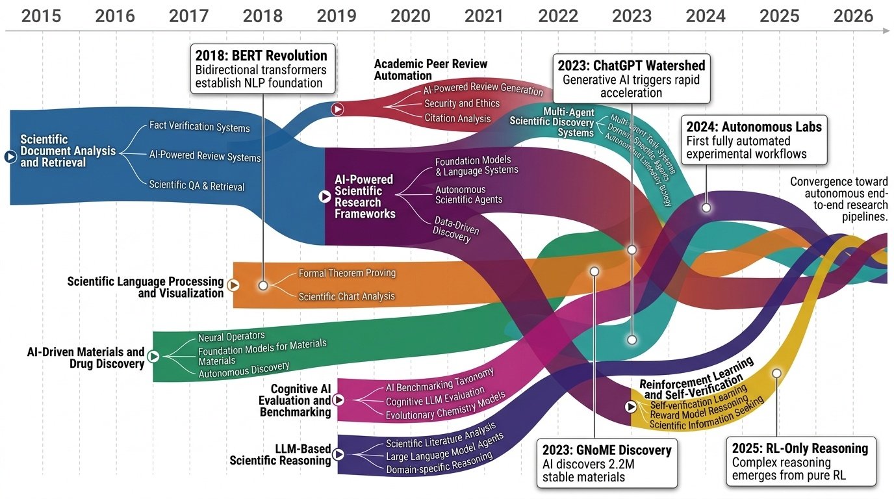
AI for Science 연구는 세 개의 큰 파도가 중첩되며 진화해왔다. 첫 파도(2017~2021)는 물리 법칙을 신경망에 내재화한 PINNs·신경 연산자와 대규모 사전학습 모델(BERT, SciBERT)이 과학 계산·언어 이해의 토대를 놓았다. 두 번째 파도(2021~2023)는 AlphaFold·GNoME 등 도메인 특화 기초 모델이 단백질·재료 과학에 혁명을 일으키며 AI가 실질적 과학적 발견의 주체가 될 수 있음을 입증했다. 세 번째 파도(2023~현재)는 Tool-use 에이전트에서 시작해 멀티 에이전트 오케스트레이션, 완전 자율 연구 시스템으로 가속화되며 'AI 과학자'의 출현을 현실화하고 있다.
세 흐름은 서로 독립적이지 않다. 물리 기반 모델은 자율 에이전트의 시뮬레이터·검증기가 되고, 과학 NLP는 에이전트의 문헌 이해 엔진이 되며, 기초 모델은 에이전트의 추론 핵심이 된다. 동시에 이 기술들의 확산은 과학의 집중 편향, 재현성 위기, 저작권·신뢰 문제를 낳으며 메타과학·윤리 연구를 촉발하고 있다. 2025~2026년은 에이전트의 성능을 검증하는 벤치마크 생태계가 구축되고 신뢰성 담론이 본격화되는 결산의 해로, AI for Science가 '도구'를 넘어 '연구 파트너'로 자리매김하는 임계점에 서 있다.
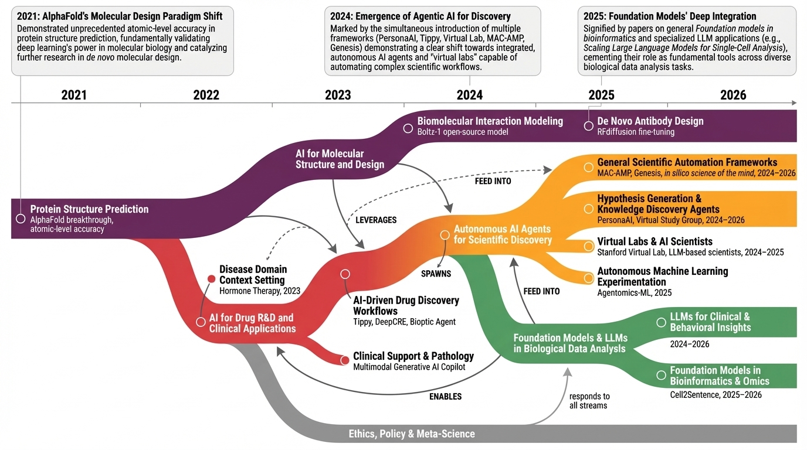
Category Overview
생명과학 및 분자 발견 카테고리는 생물학적 시스템, 단백질 구조, 유전체학, 그리고 신약 개발에 초점을 맞춘 AI 연구를 다룹니다. 이 분야는 AlphaFold 이후의 단백질 구조 예측[001]부터 항체의 원자 수준 설계[098], 가상 스크리닝을 통한 약물 후보 발굴[017] 등 다층적인 연구를 포함하고 있습니다. 특히 멀티에이전트 협력 시스템을 활용한 항균 펩타이드 설계[023], AI 과학자 기반의 생의학 연구 초자동화[099], 그리고 약물 개발 사이클 전반의 실험실 자동화[079] 등이 현재의 주요 트렌드를 이루고 있습니다. 동시에 대규모 언어 모델(Large Language Models)을 활용한 단일 세포 분석[181], 생물정보학 파운데이션 모델 개발[178], 그리고 유전자 온톨로지 해석을 위한 AI 에이전트[032] 등 생의학 데이터 분석의 고도화도 진행 중입니다. 병리학 보조 시스템[069]과 임상 검토 자동 생성[105] 같은 의료 응용 사례들은 기초 연구에서 임상 번역까지의 전 과정에 AI를 통합하려는 노력을 보여줍니다. 이러한 발전들은 약물 발견의 속도와 정확성을 혁신적으로 향상시키면서도 동시에 생명과학 연구의 자동화와 지능화를 가속화하는 방향으로 진행되고 있습니다.
- Protein Structure & Design: 단백질 구조 예측과 설계는 생명과학 연구의 핵심 분야로, 최근 딥러닝 기반의 혁신적 기술들이 획기적인 진전을 이루고 있습니다. AlphaFold를 비롯한 구조 예측 모델들[001]은 아미노산 서열로부터 3차원 단백질 구조를 원자 수준의 정확도로 예측할 수 있게 되었으며, 이는 전통적인 실험 기반 방법의 시간과 비용을 대폭 절감시켰습니다. 나아가 역설계(de novo design) 기술[098]은 원하는 기능을 가진 단백질과 항체를 처음부터 설계하는 것을 가능하게 하여, 신약 개발과 생명공학 분야의 새로운 가능성을 열었습니다. AI 과학자들로 구성된 가상 실험실[099]은 이러한 단백질 설계 과정을 자동화하여 생의학 연구를 가속화하고 있습니다. 향후 이 분야는 구조-기능 관계에 대한 더욱 심화된 이해와 멀티모달 AI 기술의 통합을 통해 더욱 정교한 단백질 설계가 가능해질 것으로 예상됩니다.
- Drug Discovery & Virtual Screening: AI 기반 신약 발굴은 전통적인 약물 개발 과정을 혁신하고 있으며, 수십만 개의 화합물 중에서 효과적인 후보물질을 신속하게 식별하는 것을 가능하게 합니다. 가상 스크리닝(virtual screening), ADMET 예측(absorption, distribution, metabolism, excretion, toxicity), 임상 번역 등 여러 단계를 아우르는 AI 가속화 기술들[093]이 개발되어 약물 개발 기간을 단축하고 있습니다. 특히 다중 에이전트 시스템을 활용한 폐쇄 루프 설계 최적화[023]와 AI 기반 자동화 실험실[079]은 DMTA 사이클(Design-Make-Test-Analyze)을 가속화하여 신약 발굴의 효율성을 크게 향상시키고 있습니다. 또한 단백질-화합물 상호작용 모델링의 민주화[183]는 더 많은 연구기관이 고급 약물 발굴 기술에 접근할 수 있도록 하고 있습니다. 향후 멀티모달 AI와 고처리량 실험 기술의 통합, 그리고 더욱 정교한 생체 이용성 예측 모델 개발이 신약 개발의 성공률을 더욱 높일 것으로 기대됩니다.
- Genomics & Biomedical Agents: 대규모 언어 모델(Large Language Models, LLMs) 기반의 AI 에이전트들은 유전체 데이터 분석과 생의학 해석을 자동화하는 새로운 패러다임을 제시하고 있습니다. 유전자 온톨로지(gene ontology) 해석[032], 단일세포 분석[181], 시스템 생물학 자동화[049] 등 복잡한 생의학 데이터를 처리하는 AI 에이전트들이 개발되어 데이터 분석의 속도와 정확성을 향상시키고 있습니다. 자율 기계학습 실험 에이전트[005]는 유전체 및 전사체 데이터에 대해 최적의 분석 파이프라인을 자동으로 탐색하며, 맞춤형 가설 생성 및 검증 프레임워크[053]는 노화 연구와 같은 복잡한 생명 현상의 규명을 가속화합니다. 기초 모델(foundation models)의 발전[178]은 다양한 생의학 작업에 전이 학습을 가능하게 하여 연구 효율을 크게 증대시키고 있습니다. 향후 멀티모달 AI 어시스턴트[069]의 병리학, 임상 진단 등 여러 분야로의 확산과 함께, 윤리적이고 해석 가능한 AI 기반 생의학 의사결정 시스템의 개발이 중요한 과제가 될 것입니다.
Highly Accurate Protein Structure Prediction with AlphaFold

AlphaFold는 아미노산 서열만으로 단백질 3D 구조를 원자 수준 정확도로 예측하는 최초의 computational method이다. CASP14에서 median backbone accuracy 0.96 A r.m.s.d.95를 달성하여, 차순위 방법(2.8 A)을 압도적으로 능가했으며, 이는 탄소 원자 폭(~1.4 A)에 근접하는 실험적 구조 수준의 정확도이다.
50년 이상 미해결이었던 protein structure prediction 문제를 사실상 해결한 획기적 연구로, Evoformer와 IPA라는 독창적 architecture 혁신을 통해 실험적 정확도에 필적하는 성능을 달성했다. AI for Science 분야의 가장 대표적인 성공 사례이자, 구조생물학의 패러다임을 근본적으로 전환시킨 milestone 논문이다.
Atomically accurate de novo design of antibodies with RFdiffusion
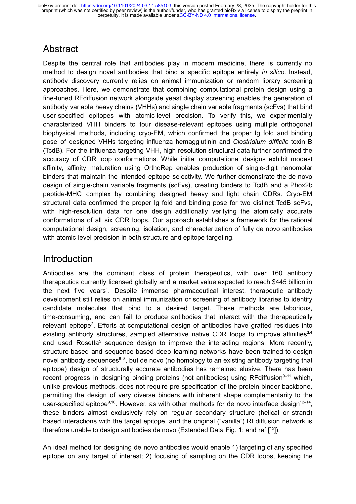
RFdiffusion을 항체 설계에 특화하여 fine-tuning함으로써, 사용자가 지정한 epitope에 원자 수준 정확도로 결합하는 de novo 항체(VHH 및 scFv)를 완전히 computational하게 설계한 최초의 연구이다. Cryo-EM 구조 분석으로 설계된 CDR 루프 구조와 결합 모드가 계산 모델과 원자 수준에서 일치함을 실험적으로 검증했다.
항체 설계의 패러다임을 근본적으로 전환시킬 잠재력을 가진 획기적 연구이다. RFdiffusion을 항체에 특화시켜 사용자 지정 epitope에 원자 수준 정확도로 결합하는 de novo 항체를 설계하고, cryo-EM으로 이를 검증한 최초의 사례로서 의의가 크다. 다만 낮은 실험 성공률과 affinity maturation 의존성은 향후 개선이 필요하며, AlphaFold3 기반 필터링과 all-atom 모델링의 통합이 이 분야의 다음 도약을 이끌 것으로 기대된다.
The Virtual Lab of AI agents designs new SARS-CoV-2 nanobodies

Virtual Lab은 LLM(GPT-4o) 기반 멀티 에이전트 시스템과 인간 연구자의 협업으로 학제간 과학 연구를 수행하는 프레임워크이다. PI 에이전트가 면역학자·계산생물학자·ML 전문가 에이전트를 이끌며, ESM + AlphaFold-Multimer + Rosetta를 조합한 나노바디 설계 파이프라인을 에이전트가 자체적으로 설계했다. 4개 시작 나노바디(Ty1, H11-D4, Nb21, VHH-72)에서 92개 돌연변이 나노바디를 생성하여 실험 검증한 결과, 93.5%가 양호한 발현량(>5 mg/L)을 보였고, H11-D4/Nb21 시리즈의 96%가 Wuhan RBD 결합력을 유지했으며, Nb21 돌연변이(I77V-L59E-Q87A-R37Q)가 JN.1 RBD에 결합(EC50 2.0 ng/mL)하고 KP.3 RBD에도 결합 증거를 보였다. 전체 미팅 과정은 1-2시간($10-20 GPT-4o 비용)에 완료되었다.
LLM 멀티 에이전트 시스템이 학제간 연구 설계부터 실험 검증까지 완수하여 Nature에 게재된 최초의 사례로, $10-20 비용과 1-2시간의 AI 토론으로 실세계 과학적 발견을 이끌어낸 AI for Science 분야의 중요한 이정표이다.
Hunt Globally: Wide Search AI Agents for Drug Asset Scouting in Investing, Business Development, and Competitive Intelligence

바이오제약 분야에서 글로벌 약물 자산 스카우팅(drug asset scouting)을 위한 트리 기반 자기학습 AI 에이전트 시스템(Bioptic Agent)과 완전성 중심 벤치마크(Completeness Benchmark)를 제안한다. 핵심 문제는 신약 혁신의 상당 부분이 미국 외, 비영어권 지역에서 발생하는데 기존 Deep Research AI 에이전트들이 이러한 다국어/이질적 소스에서의 포괄적 자산 발견에 한계를 보인다는 것이다. Bioptic Agent는 UCB(Upper Confidence Bound) 기반 트리 탐색, 다국어 병렬 조사, 전문가 정렬 검증을 결합하여 F1 79.7%를 달성, Claude Opus 4.6(56.2%), Gemini 3 Pro Deep Research(50.6%), GPT-5.2 Pro(46.6%) 등을 크게 상회한다.
바이오제약 자산 스카우팅이라는 실무적으로 중요하고 학술적으로 미개척된 문제를 정식화하고, 트리 기반 자기학습 에이전트로 기존 SOTA Deep Research 시스템을 크게 상회하는 성능을 보인 의미 있는 연구이다. 벤치마크 역생성 방법론과 UCB 기반 탐색 제어가 기술적으로 잘 설계되어 있다. 다만 테스트셋 규모(22개)가 매우 작고, 벤치마크와 시스템이 모두 자사 설계라는 이해충돌이 결과 해석에 주의를 요한다.
MAC-AMP: A Closed-Loop Multi-Agent Collaboration System for Multi-Objective Antimicrobial Peptide Design

LLM 기반 다중 에이전트 피어 리뷰 시스템과 적응형 강화학습을 결합한 폐루프(closed-loop) 프레임워크 MAC-AMP를 제안하여, 항균 활성, 독성, 구조적 안정성, 신규성을 동시에 최적화하는 항균 펩타이드(AMP) 설계를 달성한 연구.
멀티 에이전트 합의 기반 항균 펩타이드 설계 프레임워크로 ICLR 2026 수준의 완성도와 체계적 ablation을 갖춘 우수한 연구다.
A Multimodal Generative AI Copilot for Human Pathology
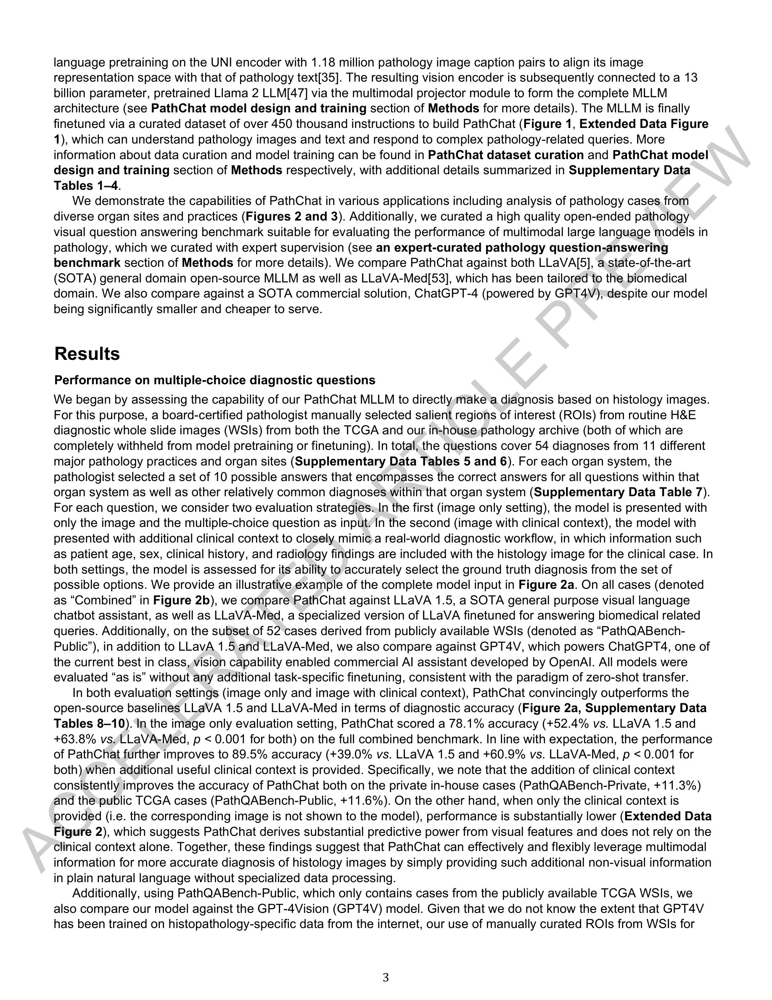
병리학 전용 멀티모달 대규모 언어 모델(MLLM)인 PathChat을 개발하여, 조직병리 이미지와 자연어 질의를 동시에 처리하는 AI 코파일럿을 구현하고, 다지선다형 진단 및 개방형 질의응답에서 GPT-4V를 포함한 기존 모델을 크게 능가하는 성능을 입증하였다. ---
병리학 전용 멀티모달 AI 공동 연구자 PathChat을 Nature에 발표한 연구로 대규모 임상 검증과 전문가 비교 평가를 갖춘 완성도 높은 작업이다.
ScispaCy: Fast and Robust Models for Biomedical Natural Language Processing

scispaCy는 spaCy 라이브러리 위에 구축된 생의학/과학 텍스트 전용 NLP 파이프라인으로, POS tagging, dependency parsing, NER, sentence segmentation, entity linking candidate generation을 포함하는 end-to-end 도구이다. GENIA 코퍼스와 OntoNotes 5.0을 결합하여 학습함으로써, 생의학 텍스트에서 SOTA에 근접한 성능을 유지하면서 C++/Java 기반 도구에 필적하는 처리 속도(abstract당 32-33ms)를 달성하였다.
학술적 혁신보다는 실용적 가치에 집중한 시스템 논문으로, spaCy의 검증된 아키텍처를 생의학 도메인에 맞게 재학습하고 통합 파이프라인으로 공개한 것이 핵심 기여이다. GENIA+OntoNotes 혼합 학습을 통한 domain robustness, 9개 NER 데이터셋에 대한 체계적 벤치마크, UMLS 기반 candidate generation 등 실용적 완성도가 높으며, 생의학 NLP 연구의 인프라로서 널리 채택되었다.
Foundation models in bioinformatics

ABSTRACT With the adoption of foundation models (FMs), artificial intelligence (AI) has become increasingly significant in bioinformatics and has successfully addressed many historical challenges, such as pre-training frameworks, model evaluation and interpretability. In this review, we introduce recent advancements in bioinformatics FMs employed in a variety of downstream tasks, including genomics, transcriptomics, proteomics, drug discovery and single-cell analysis.
높은 수준의 기여와 탄탄한 실험적 검증을 보여주는 연구.
Scaling Large Language Models for Next-Generation Single-Cell Analysis
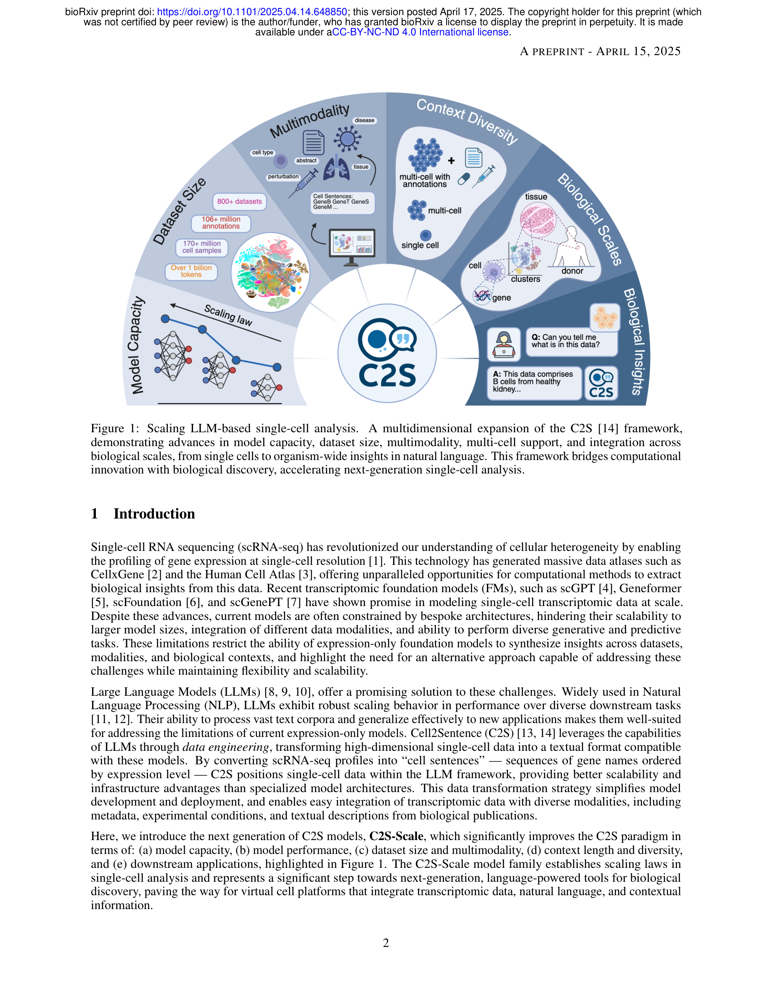
In this work, we build upon the Cell2Sentence (C2S) framework, which represents scRNA-seq profiles as textual “cell sentences,” to train Large Language Models (LLMs) on a corpus comprising over one billion tokens of transcriptomic data, biological text, and metadata.
높은 수준의 기여와 탄탄한 실험적 검증을 보여주는 연구.
Boltz-1 Democratizing Biomolecular Interaction Modeling
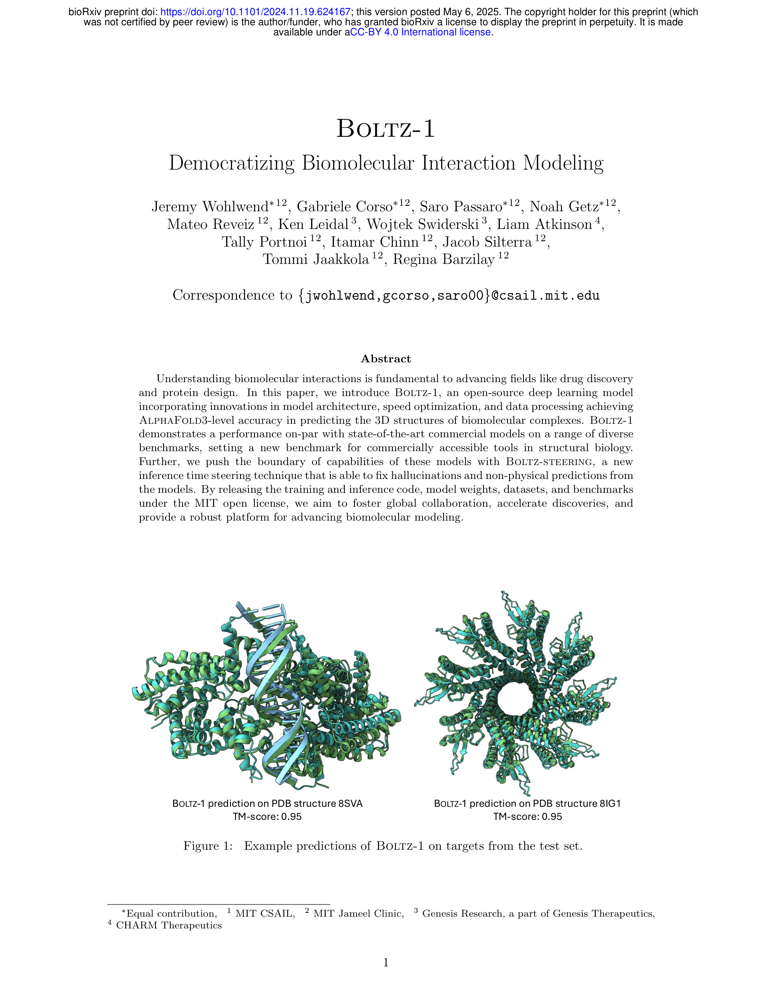
In this paper, we introduce B oltz -1, an open-source deep learning model incorporating innovations in model architecture, speed optimization, and data processing achieving A lpha F old 3-level accuracy in predicting the 3D structures of biomolecular complexes.
높은 수준의 기여와 탄탄한 실험적 검증을 보여주는 연구.
TxAgent: An AI Agent for Therapeutic Reasoning Across a Universe of Tools

We introduce TxAgent, an AI agent that leverages multi-step reasoning and real-time biomedical knowledge retrieval across a toolbox of 211 tools to analyze drug interactions, contraindications, and patient-specific treatment strategies. 
AI for Science 분야에서 주목할 만한 기여를 보이는 연구.
MedAgentGym: A Scalable Agentic Training Environment for Code-Centric Reasoning in Biomedical Data Science

We introduce MedAgentGym, a scalable and interactive training environment designed to enhance coding-based biomedical reasoning capabilities in large language model (LLM) agents. 
AI for Science 분야에서 주목할 만한 기여를 보이는 연구.
MedAgents: Large Language Models as Collaborators for Zero-shot Medical Reasoning
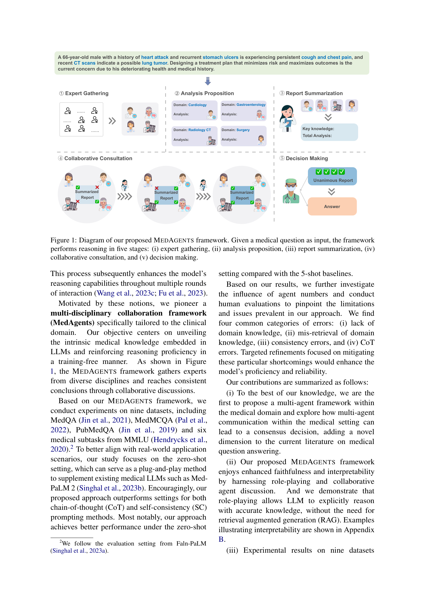
To address these issues, we propose MedAgents, a novel multi-disciplinary collaboration framework for the medical domain. 
AI for Science 분야에서 주목할 만한 기여를 보이는 연구.
Virtual lab powered by 'AI scientists' super-charges biomedical research
복수의 'AI 과학자' 에이전트가 협력하는 가상 실험실(virtual lab) 시스템이 실제 생의학 연구의 가설 생성·실험 설계·결과 해석 속도를 크게 단축시켰다는 사례 보고.
다중 AI 에이전트 기반 가상 실험실의 생의학 연구 가속화 가능성을 실감나게 보여주는 보고로, 향후 정식 논문으로의 발전이 기대된다.
Method and Platform for Validating Human Inventorship in AI-Augmented Molecular Discovery via Iterative Audit Gates
AI가 보조한 분자 발견 과정에서 인간 발명자의 기여를 반복적 감사 게이트(Audit Gate)를 통해 법적으로 검증·문서화하는 방법론 및 플랫폼을 USPTO 임시특허 명세서 형태로 제안한다.
AI 공동 발명 시대의 특허법적 공백을 선제적으로 다루는 독창적 제안이나, abstract 부재로 세부 평가에 한계가 있다.
Genesis: Towards the Automation of Systems Biology Research

수천 개의 인과 요소로 구성된 시스템 생물학 모델을 자동으로 개선하는 차세대 로봇 과학자 Genesis의 설계와 개발 진행 상황을 보고하는 논문으로, 하루 1,000회의 가설 주도 폐쇄 루프 실험 사이클을 목표로 한다. ---
시스템 생물학을 위한 로봇 과학자 자동화를 지향하는 선구적 연구로 비전과 초기 구현 모두 흥미롭지만 완성도는 진행 중이다.
DeepCRE: Transforming Drug R&D via AI-Driven Cross-drug Response Evaluation
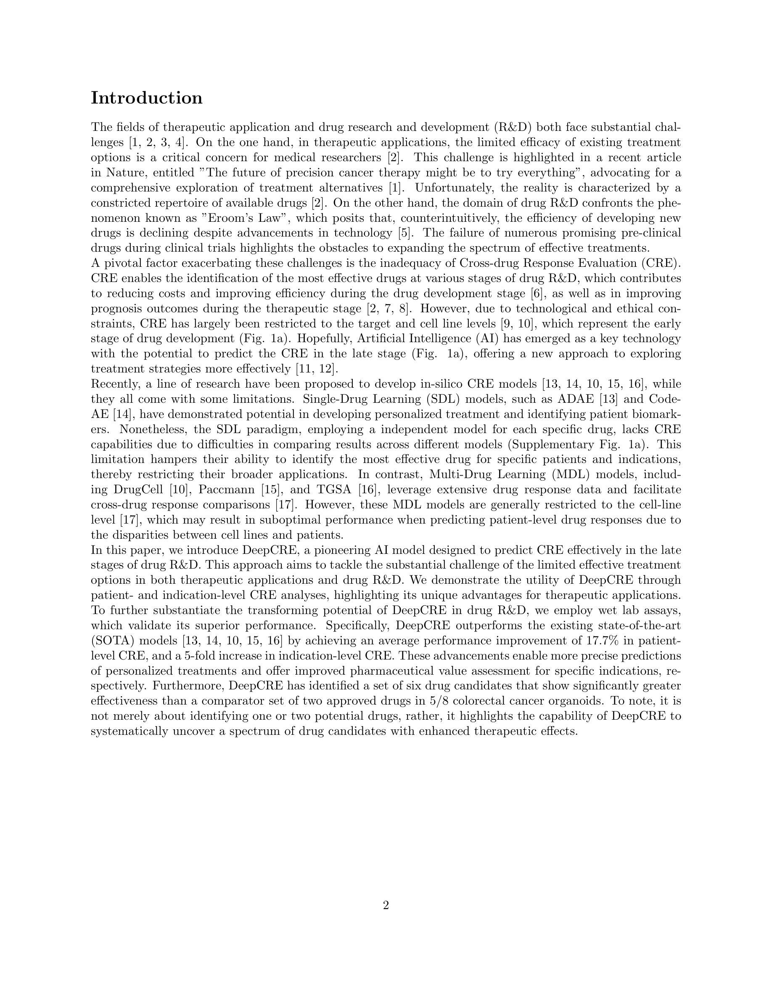
약물 R&D 후기 단계에서 교차 약물 반응 평가(Cross-drug Response Evaluation, CRE)를 수행하는 AI 모델 DeepCRE를 제안하여, 환자 수준 및 적응증 수준의 약물 반응을 예측하고 신규 약물 후보를 발굴한다. ---
교차 약물 반응 예측에 AI를 적용하고 실제 습식 실험으로 검증한 실용적 연구로, 기존 단일 약물 모델의 한계를 넘어 신약 R&D 가속화 가능성을 제시한다.
Cross Sectional Pilot Study on Clinical Review Generation Using Large Language Models

LLM 기반 리뷰 생성 플랫폼과 13개 주요 LLM이 작성한 2,169편의 임상 리뷰를 인간 작성 리뷰와 체계적으로 비교한 결과, AI 리뷰는 참고문헌 수, 포괄성, 논리적 일관성, 혁신성에서 인간에 크게 미치지 못하며, 기존 표절/AIGC 탐지 시스템도 AI 생성 리뷰를 효과적으로 차단하지 못한다는 것을 밝힌 대규모 파일럿 연구. ---
2,169개 AI 임상 리뷰와 인간 리뷰를 4개 차원에서 체계적으로 비교한 파일럿 연구로, AI가 구조적 완성도에서는 우수하지만 임상적 뉘앙스와 맥락 이해에서는 한계를 보임을 실증한다.
PaperRobot: Incremental Draft Generation of Scientific Ideas

기존 바이오메디컬 논문으로부터 배경 지식 그래프(KG)를 구축하고, 그래프 어텐션과 텍스트 어텐션을 결합한 링크 예측으로 새로운 아이디어를 생성한 뒤, 메모리-어텐션 네트워크를 활용하여 논문의 핵심 요소(제목 -> 초록 -> 결론 및 향후 연구 -> 후속 논문 제목)를 점진적으로 생성하는 자동 연구 보조 시스템 PaperRobot을 제안한다.
지식 그래프 기반 점진적 논문 초안 생성을 제안한 ACL 2019 선구적 연구로, LLM 이전 시대의 창의적 접근이지만 현재 LLM 기반 방법론과 비교시 기술적 성숙도는 낮다.
Agentomics-ML: Autonomous Machine Learning Experimentation Agent for Genomic and Transcriptomic Data

Genomic/transcriptomic 데이터에 대한 classification 모델을 완전 자율적으로 생성하는 LLM 기반 agent 시스템으로, 사전 정의된 ML 실험 단계(데이터 탐색 -> 분할 -> 표현 -> 아키텍처 -> 학습 -> 추론)를 반복적으로 수행하며 reflection feedback을 통해 모델을 개선한다. 6개 벤치마크 데이터셋에서 93.33%의 success rate를 달성하여, 기존 agentic 시스템(AIDE, Data Interpreter)과 zero-shot LLM을 크게 능가했다.
Computational biology 데이터의 이질성에 대응하는 도메인 특화 agentic ML 시스템으로, 93%의 높은 success rate와 복잡 데이터셋(AGO2_CLASH)에서의 유일한 성공이 핵심 기여이다. 다만 Human SOTA 대비 성능 격차, 제한된 데이터셋/task 범위, preprint 상태를 고려하면 아직 초기 단계의 연구이며, 자율적 과학 발견 시스템으로의 발전 가능성을 보여주는 proof-of-concept 수준이다.
Transforming Behavioral Neuroscience Discovery with In-Context Learning and AI-Enhanced Tensor Methods

In-Context Learning(ICL)과 신경 텐서 분해를 결합한 end-to-end AI 파이프라인을 구축하여, 행동 신경과학의 공포 일반화(fear generalization) 연구에서 데이터 준비, 패턴 발견, 결과 해석을 자동화한 연구.
AR-ICL로 행동 신경과학 파이프라인을 AI화하는 개념은 유망하나 각 구성 요소 성능이 아직 실용 수준에 미치지 못하는 초기 연구다.
Can we automatize scientific discovery in the cognitive sciences?
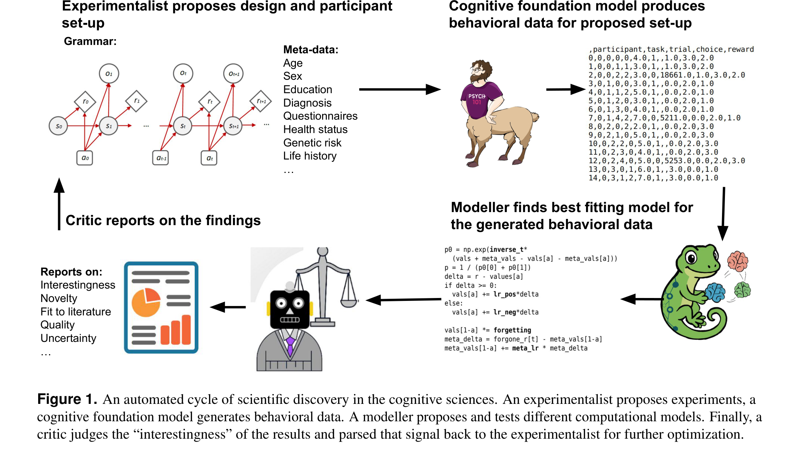
인지과학의 발견 사이클(실험 설계 -> 데이터 수집 -> 모델 비교 -> 결론 도출)을 LLM 기반으로 완전 자동화하는 "in silico science of the mind" 비전을 제시하는 짧은 Perspective 논문이다. LLM이 실험 패러다임을 제안하고(Experimentalist), cognitive foundation model(Centaur)이 합성 행동 데이터를 생성하며, LLM 기반 program synthesis가 인지 모델을 대규모 탐색하고(Modeller), LLM-critic이 "interestingness"를 평가하여 루프를 닫는 4단계 자동 발견 엔진을 구상한다.
인지과학의 발견 사이클을 LLM과 cognitive foundation model로 완전 자동화하겠다는 대담한 비전을 제시한 짧은 Perspective 논문이다. 특히 Centaur를 in-loop data generator로 사용하고, LLM program synthesis로 인지 모델을 대규모 탐색한다는 아이디어는 인지과학과 AI의 교차점에서 참신하다. 그러나 5페이지 분량의 제약으로 각 구성 요소의 기술적 깊이가 부족하고, 통합 구현이 없으며, 실패 모드(특히 LLM에 의한 interestingness 평가의 순환성)가 핵심 위험으로 남아 있다. "In silico science of the mind"라는 방향성 자체는 AI4Science 커뮤니티에서 주목할 가치가 있다.
PersonaAI: An Interactive Agentic-AI Framework for Autonomous Hypothesis Generation and Validation in Aging

노화(aging) 연구를 위한 인터랙티브 에이전틱 AI 프레임워크 **PersonaAI**를 제안한다. 56만 편 이상의 노화 관련 문헌을 RAG(Retrieval-Augmented Generation) 기반으로 합성하여 메커니즘적 가설을 생성하고, 이를 single-cell RNA-seq 데이터로 자율적으로 in silico 검증하는 이중 구조(dual-phase) 시스템이다. 핵심은 완전 자율이 아닌 **human-in-the-loop** 방식으로, 연구자의 생물학적 직관을 AI의 대규모 문헌 합성 능력과 결합하여 가설 탐색 공간을 효율적으로 제한한다. ---
노화 연구를 위한 인간 참여형 AI 에이전트 시스템으로 도메인 특화 접근이 흥미로우나 평가 규모와 깊이가 제한적이다.
Virtual lab powered by 'AI scientists' super-charges biomedical research

Stanford 대학 James Zou 그룹이 LLM 기반 "AI 과학자" 에이전트 팀으로 구성된 "Virtual Lab"을 개발하여, SARS-CoV-2 최신 변이체를 표적으로 하는 나노바디 92개를 설계하고 실험 검증까지 완료한 사례를 소개하는 Nature 뉴스 기사이다. 설계된 나노바디의 90% 이상이 원래 변이체에 결합했고, 2개는 최신 변이체(JN.1, KP.3)에도 결합력을 보였다. 전체 AI 토론 과정은 회의당 5-10분, 인간 연구자의 텍스트 기여는 전체의 1.3%에 불과했다.
AI 에이전트 팀이 실험 검증 가능한 나노바디를 설계한 Virtual Lab의 성과를 적시에 소개한 우수한 뉴스 기사이나, Nature News 특성상 기술적 깊이가 부족하므로 원논문(Swanson et al., 2025, Nature)과 함께 읽어야 시스템의 실체를 이해할 수 있다.
Scientific Large Language Models: A Survey on Biological & Chemical Domains
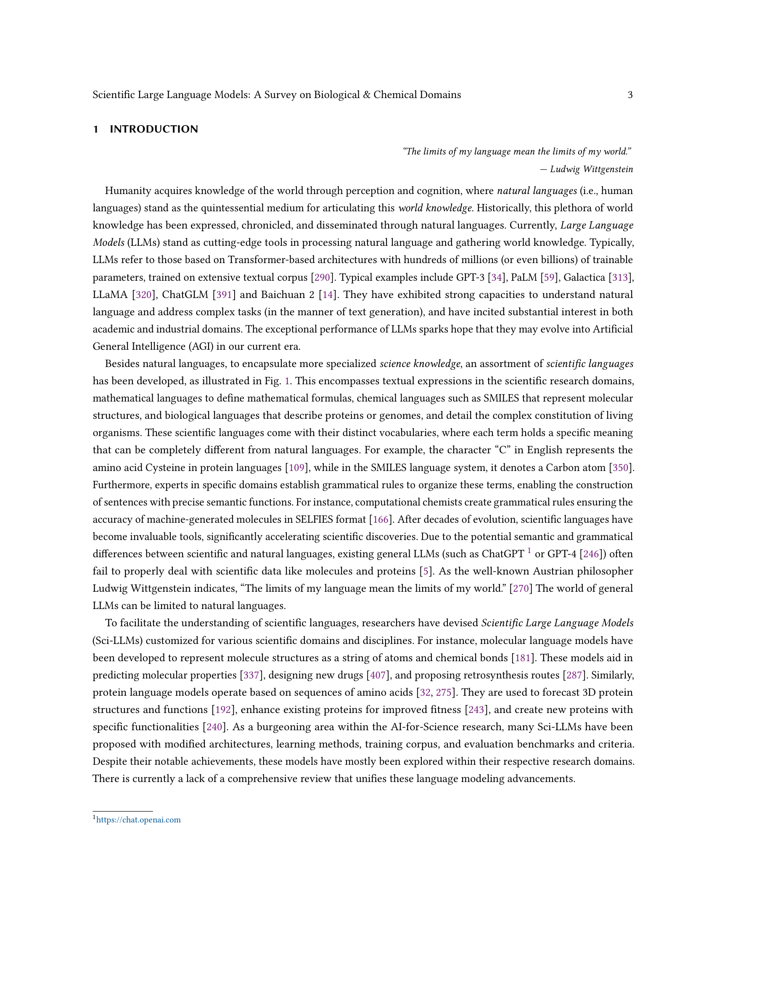
In this paper, we endeavor to methodically delineate the concept of "scientific language", whilst providing a thorough review of the latest advancements in scientific LLMs. By offering a comprehensive overview of technical developments in this field, this survey aspires to be an invaluable resource for researchers navigating the intricate landscape of scientific LLMs.
관련 분야의 포괄적 서베이로서 연구자들에게 유용한 참고 자료를 제공하나, 서베이 논문 특성상 독창적 기여는 제한적이다.
Accelerating Drug Discovery Through Agentic AI: A Multi-Agent Approach to Laboratory Automation in the DMTA Cycle

제약 산업의 Design-Make-Test-Analyze (DMTA) 사이클을 자동화하기 위한 멀티 에이전트 AI 프레임워크 **Tippy**를 소개한다. Supervisor, Molecule, Lab, Analysis, Report의 5개 특화 에이전트와 Safety Guardrail 에이전트로 구성되며, Artificial 플랫폼 위에 배포되어 분자 설계부터 합성, 분석, 보고까지의 전체 DMTA 워크플로를 조율한다. 저자들에 따르면, DMTA 사이클 자동화를 위해 특화된 AI 에이전트를 프로덕션 수준으로 구현한 최초의 사례이다. ---
멀티 에이전트 DMTA 사이클 자동화 시스템 Tippy를 소개한 기업 논문으로 개념은 유망하나 독립적 검증과 방법론 투명성이 부족하다.
Virtual lab powered by 'AI scientists' super-charges biomedical research
Stanford 대학의 James Zou 연구팀이 개발한 **"Virtual Lab"** 시스템을 소개하는 Nature 뉴스 기사이다. 이 시스템은 여러 대규모 언어 모델(LLM)에 각각 특정 과학 분야의 전문가 역할(면역학, 계산 생물학, 머신러닝)을 부여하여 "AI 과학자" 에이전트로 구성하고, 이들이 인간 연구자의 고수준 지도 아래 협업하여 과학적 문제를 해결하는 가상 실험실이다. 개념 증명(proof-of-concept)으로 SARS-CoV-2 바이러스에 결합하는 **나노바디(nanobody) 92개를 설계**하였으며, 이 중 90% 이상이 원래 변이주에 대한 결합력을 검증 실험에서 확인했다. ---
분야별 전문 AI 에이전트 협업으로 나노바디를 설계한 Virtual Lab을 소개하는 Nature 뉴스로, 학제 간 AI 협력 가능성을 대중적으로 전달하나 기술적 세부사항은 원논문을 참조해야 한다.
Revisiting Gene Ontology Knowledge Discovery with Hierarchical Feature Selection and Virtual Study Group of AI Agents
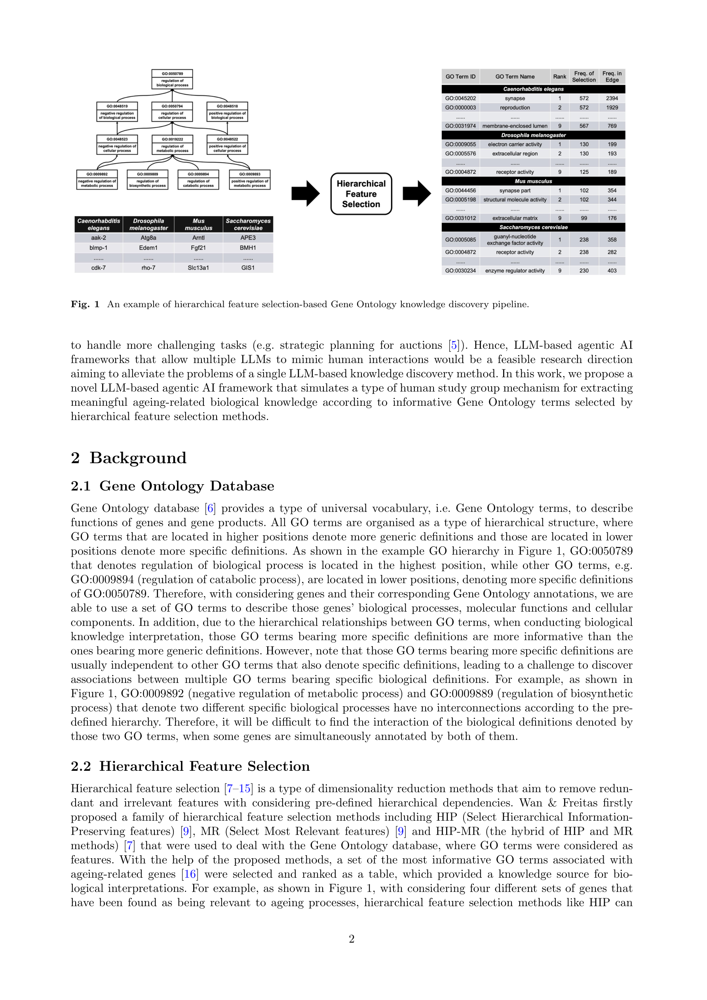
Hierarchical feature selection으로 선별된 노화 관련 Gene Ontology(GO) term들을 LLM 기반 multi-agent "Virtual Study Group(VSG)"이 자동으로 생물학적 해석하는 agentic AI 프레임워크를 제안한 연구이다. 4개 모델 생물(예쁜꼬마선충, 초파리, 마우스, 효모)의 노화 관련 GO term에 대해 junior researcher, critic, senior researcher, principal investigator 역할의 AI agent들이 계층적으로 지식을 생성하고 비판적 검토를 수행한다. 대부분의 AI 생성 주장이 기존 문헌으로 검증 가능함을 보였다.
학술 연구그룹의 계층적 토론 구조를 AI agent 시스템에 적용한다는 아이디어는 직관적이나, 실행과 평가 측면에서 크게 부족하다. 정량적 평가 지표가 전무하고, AI가 생성한 지식이 기존 문헌의 재서술을 넘어서는 새로운 발견인지 불분명하며, LLM 선택의 근거와 재현성에 대한 논의가 없다. 비판적 리뷰 agent가 항상 동일한 패턴(oversimplifies/overstates 비판)을 보이고 senior가 거의 항상 동조하는 것은 실제 과학적 토론의 복잡성을 충분히 모사하지 못한다. Proof-of-concept 수준의 탐색적 연구로서의 가치는 있으나, 기술적 엄밀성과 실용적 기여 측면에서 개선이 필요하다.
SciAgents: Automating Scientific Discovery Through Bioinspired Multi-Agent Intelligent Graph Reasoning

대규모 온톨로지 지식 그래프(knowledge graph)와 LLM 기반 멀티에이전트 시스템을 결합하여 과학적 발견을 자동화하는 프레임워크 **SciAgents**를 제안한 연구이다. 약 1,000편의 생체모방 재료(bio-inspired materials) 논문으로 구축된 지식 그래프에서 개념 간 경로를 샘플링하고, Ontologist, Scientist 1/2, Critic 등 역할이 분화된 LLM 에이전트 팀이 자율적으로 연구 가설을 생성, 확장, 비평, 개선하는 "군집 지능(swarm of intelligence)" 접근법을 구현한다. 실증으로 실크-민들레 색소 기반 바이오복합재를 제안하여, 기존 실크 대비 기계적 강도 50% 향상(1.5 GPa) 및 에너지 소비 30% 절감을 예측하였다. ---
Hormone Therapy for Cancer: Treating Hormone-Sensitive Tumors
호르몬 민감성 종양에 대한 호르몬 치료 방법을 다루는 의학 리뷰 논문으로, AI4S 컬렉션과의 연관성이 불명확하다.
AI4S 컬렉션과 무관한 철회된 의학 논문으로, 큐레이션 오류 가능성이 높아 컬렉션에서의 재검토가 권장된다.
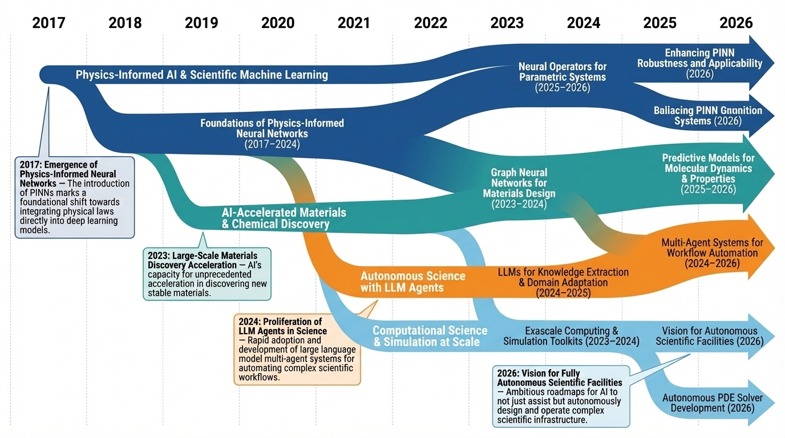
Category Overview
물리과학 및 공학 분야에서의 인공지능 응용은 물리 법칙과 물질 특성의 모델링을 통해 과학 발견을 가속화하는 핵심 영역입니다. 이 카테고리는 편미분방정식(PDE)과 보존 법칙을 신경망 구조에 직접 임베딩하는 물리 정보 신경망(Physics-Informed Neural Networks, PINNs)[213]부터 머신러닝 기반의 신물질 발견[002], 그리고 자율적 물리 실험실에 이르기까지 광범위한 응용을 포함합니다. 특히 신경 연산자(Neural Operators) 및 서로게이트 모델[172]과 같은 데이터 효율적 대체 모델들은 과학 시뮬레이션의 계산 비용을 획기적으로 단축하고 있습니다. 최근에는 대규모 언어모델(Large Language Models)을 활용한 자율 에이전트 시스템[088], [090], [091]이 화학 반응 탐색, 재료 특성 데이터 수집, 전산유체역학(CFD) 자동화 등에서 주목할 만한 성과를 보이고 있습니다. 로봇 기반 화학 합성[063]과 불안정 특이점 발견[065] 같은 차세대 자율 실험 플랫폼들은 인간 연구자와 AI 시스템의 협력을 통해 새로운 물리·화학 현상을 더욱 신속하게 규명할 수 있도록 하고 있습니다. 향후 이 분야는 물리적 정확성을 보장하면서도 확장 가능한 AI 모델의 개발[026], 불확실성 정량화[179], 그리고 멀티모달 AI 시스템[044]의 통합을 통해 더욱 강화될 것으로 예상됩니다.
- Physics-Informed Neural Networks: 물리 정보 신경망(Physics-Informed Neural Networks, PINNs)은 편미분방정식(PDEs)과 보존 법칙 같은 물리적 제약을 신경망 아키텍처에 직접 임베딩하는 기법입니다. 이를 통해 레이블이 있는 학습 데이터의 의존성을 크게 줄이면서도 물리적으로 타당한 해를 도출할 수 있습니다. [213]에서는 데이터 기반 비선형 편미분방정식 풀이를 위한 물리 정보 심층학습의 기초를 제시했으며, [028]에서는 계산역학 응용을 위한 확장 가능한 스파이킹 물리 정보 신경 연산자를 개발했습니다. [012]에서는 자율적이고 PDE에 구애받지 않는 다중 에이전트 파이프라인을 통해 과학 컴퓨팅의 자동화를 실현했습니다. 향후 연구는 더 복잡한 비선형 시스템으로의 확장과 불확실성 정량화[179]를 통한 신뢰성 향상에 중점을 둘 것으로 예상됩니다.
- Materials Discovery & Generative Design: 물질 발견 및 생성 설계는 기계학습을 활용하여 새로운 결정질 구조, 합금, 기능성 물질을 효율적으로 탐색하는 분야입니다. 전통적인 고비용의 실험 기반 탐색을 대체하여 계산 기반의 고속 스크리닝을 가능하게 합니다. [002]에서는 물질 발견을 위한 심층학습 스케일링 전략을 제시했으며, [042]에서는 흐름 정합(flow matching)을 통한 무질서한 물질 생성 방법을 개발했습니다. [172]에서는 기초 모델 대리 모델을 활용한 데이터 효율적 능동 학습으로 물질 발견을 가속화했습니다. [044]와 [082]는 다중 모달 대규모 언어모델(LLMs)을 활용하여 물질과학 데이터 수집 및 분석을 자동화했습니다. 앞으로 고처리량 계산과 대규모 언어모델의 통합을 통해 물질 탐색의 효율성을 더욱 높일 것으로 전망됩니다.
- Autonomous Physical Labs: 자율 물리 실험실(Autonomous Physical Labs)은 인공지능이 실험 설계, 수행, 분석의 전 과정을 주도하는 자동화된 연구 환경을 구현합니다. 입자 가속기, 자동화 화학 실험실, 로봇 합성 시스템 등이 포함되며, 이는 과학 연구의 속도와 확장성을 혁신적으로 향상시킵니다. [063]에서는 로봇 보조 화학 반응 초공간 및 네트워크 매핑을 통해 복잡한 화학 반응을 자동으로 탐색했으며, [090]에서는 대규모 언어모델로 구동되는 자동 엔드-투-엔드 화학 합성 개발 플랫폼을 구현했습니다. [091]에서는 전산 유체역학의 신뢰 가능한 자동화를 위해 OpenFOAMGPT 2.0을 개발했습니다. 이러한 자율 시스템은 인간 과학자의 직관과 AI의 탐색 능력을 결합하여 과학 발견의 새로운 패러다임을 제시합니다.
- Neural Operators & Surrogates: 신경 연산자(Neural Operators) 및 대리 모델(Surrogates)은 계산상 비용이 높은 편미분방정식 풀이와 과학 시뮬레이션을 데이터 효율적으로 근사하는 기법입니다. 푸리에 신경 연산자(Fourier Neural Operators, FNOs) 등의 방법론이 고해상도 문제에서 우수한 성능을 보입니다. [026]에서는 푸리에 신경 연산자의 단일층 확장을 통해 작업 불가지론적 지속 학습을 구현했으며, [172]에서는 기초 모델 기반 대리 모델이 능동 학습을 통해 물질 발견을 가속화함을 입증했습니다. [033]에서는 대규모 언어모델을 활용한 동역학계 발견으로 신경 연산자의 해석성을 개선했습니다. [185]에서는 화학 공간 전체에 걸친 분자동역학의 직접 예측을 통해 신경 대리 모델의 일반화 성능을 향상시켰습니다. 향후 연구는 더 복잡한 다중 물리 문제와 불확실성 정량화에 중점을 두어 산업 응용의 신뢰도를 높일 것으로 예상됩니다.
Scaling Deep Learning for Materials Discovery

Graph neural network (GNoME)을 대규모 active learning과 결합하여 기존 48,000개에서 381,000개의 새로운 안정 결정 구조를 발견, 인류가 알고 있는 안정 물질을 약 10배 확장했다. 총 2.2M 구조가 기존 convex hull 아래에 위치하며, hit rate를 기존 1%에서 구조 기반 80%, 조성 기반 33%로 향상시켰다.
Active learning 기반 data flywheel과 GNN의 scaling을 결합하여 안정 무기 결정 재료를 10배 확장한 기념비적 연구로, AI for Materials Science 분야의 AlphaFold 격 성과이다. 다만 PBE functional 의존성과 synthesizability 미고려가 실용화까지의 남은 과제이다.
Verifier-Constrained Flow Expansion for Discovery Beyond the Data
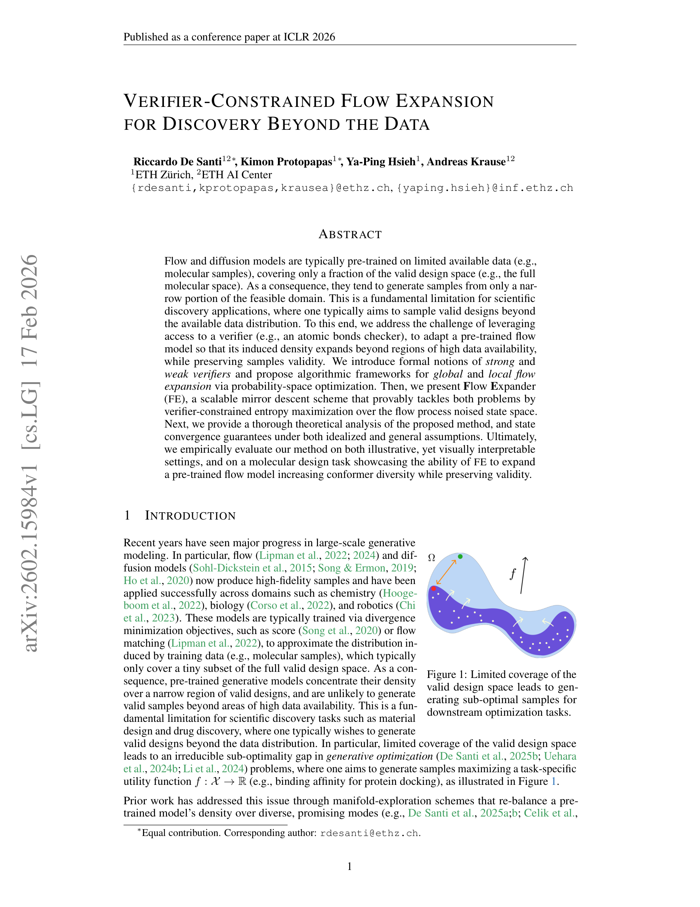
사전 학습된 플로우/디퓨전 모델이 훈련 데이터의 좁은 영역에만 밀도를 집중시키는 한계를 극복하기 위해, 외부 검증기(verifier)를 활용하여 유효 설계 공간 전체로 모델의 밀도를 확장하는 Flow Expander(FE)를 제안한다. 강한 검증기(valid design space를 정확히 특성화)와 약한 검증기(필터 역할만 수행)를 형식적으로 구분하고, 각각에 대해 전역적(global) 및 국소적(local) 플로우 확장 문제를 검증기 제약 엔트로피 최대화로 정식화한다. FE는 플로우 프로세스의 노이즈 상태 공간에서 미러 디센트를 수행하며, 이상적/일반적 조건 하 수렴 보장을 제공한다.
플로우/디퓨전 모델의 설계 공간 탐색이라는 AI for Science의 핵심 문제를 검증기 제약 엔트로피 최대화라는 수학적으로 엄밀한 프레임워크로 해결한 우수한 연구이다. 강한/약한 검증기의 형식적 구분, Expand-then-Project 스킴, 노이즈 상태 공간으로의 리프팅이라는 세 가지 핵심 아이디어가 자연스럽게 결합되어 있으며, O(1/K) 수렴 보장과 분자 설계 실험 결과가 이론적 주장을 뒷받침한다. ICLR 2026에 채택된 것이 납득되는 완성도 높은 논문이다.
Robot-assisted mapping of chemical reaction hyperspaces and networks

저비용(~$25K) 로봇 플랫폼과 UV-Vis 기반 spectral unmixing 알고리즘을 결합하여, 화학 반응의 다차원 조건 공간(hyperspace)을 수천 개의 조건에서 체계적으로 스캔하고, 수율 분포를 정량적으로 재구성하는 방법론을 제시한다. 총 9,000개 이상의 반응 조건을 탐색하여, (1) 연속 변수(농도, 온도)에 대한 개별 수율 분포가 일반적으로 완만(slow-varying)하다는 수학적 증명, (2) 예상치 못한 반응성 영역과 주요 생성물 간 전환(switchover) 현상의 발견, (3) 100년 이상 연구된 반응에서도 숨겨진 중간체와 생성물의 노출을 달성한다.
Nature에 게재된 이 연구는 화학 반응 공간을 수학적 객체로 다루는 패러다임 전환적 접근을 제시한다. ~$25K의 저비용 로봇과 UV-Vis spectral unmixing의 조합으로 9,000개 이상 조건을 체계적으로 탐색하여, 수율 분포의 수학적 성질(slow-varying)을 증명하고, 150년 된 Hantzsch 반응에서 9개의 새로운 생성물을 발견한 성과는 매우 인상적이다. 하드웨어 설계도와 코드를 모두 공개(Zenodo)하여 재현성도 우수하다. IBS CARS(울산)에서 수행된 연구로, 한국 기관 소속 연구라는 점도 주목할 만하다. 반응 자동화와 화학 AI의 교차점에서 핵심 참조 문헌이 될 것이다.
Discovery of Unstable Singularities

유체 역학의 지배 방정식(3D Euler, Navier-Stokes, IPM, Boussinesq)에서 **불안정 특이점(unstable singularities)**의 새로운 군(families)을 최초로 체계적으로 발견한 연구이다. 불안정 특이점은 무한한 정밀도로 조율된 초기 조건을 요구하여, 미세한 섭동으로도 blow-up 궤적에서 이탈하는 극도로 포착하기 어려운 해이다. 맞춤형 PINN(Physics-Informed Neural Network) 아키텍처와 full-matrix Gauss-Newton 최적화기, 다단계 학습을 결합하여, CCF 방정식에서는 GPU 하드웨어의 double-float 기계 정밀도(O(10^-13))에 근접하는 정확도를 달성했으며, 이는 컴퓨터 보조 증명(CAP)에 필요한 수준이다.
NYU, Stanford, Google DeepMind, Brown의 대규모 협업으로 이루어진 이 연구는 수학의 가장 근본적인 미해결 문제 중 하나인 유체 특이점 형성 문제에 대해 획기적인 진전을 달성했다. 불안정 특이점의 최초 체계적 발견, double-float 기계 정밀도의 달성, blow-up rate와 불안정 차수 간의 경험적 공식 발견은 모두 수학 및 수치 해석 분야에서 중대한 기여이다. 특히 PINN을 범용 PDE solver가 아닌 "수학적 발견 도구"로 재정립하면서, 수학적 통찰과 ML 기법 간의 반복적 피드백 루프를 구축한 방법론은 AI for Science의 모범 사례이다. 밀레니엄 문제(Navier-Stokes) 해결을 향한 결정적 중간 단계로서, 수학, 물리학, 컴퓨터 과학 모두에 지대한 영향을 미칠 것이다.
AutoNumerics: An Autonomous, PDE-Agnostic Multi-Agent Pipeline for Scientific Computing

자연어로 기술된 편미분방정식(PDE) 문제를 입력받아, LLM 기반 멀티 에이전트 시스템이 자율적으로 수치 솔버를 설계-구현-디버깅-검증하는 프레임워크 AutoNumerics를 제안한다. 블랙박스 뉴럴 솔버와 달리 고전 수치해석에 기반한 해석 가능한(transparent) 솔버를 생성하며, coarse-to-fine 실행 전략과 잔차(residual) 기반 자기 검증 메커니즘을 도입하였다. 24개 대표 PDE 문제에서 CodePDE 대비 약 6자릿수 이상 낮은 오차를 달성하였다.
LLM 멀티 에이전트로 해석 가능한 고전 수치 솔버를 자율 생성하는 명확한 기여를 가진 논문으로, coarse-to-fine 전략과 잔차 기반 검증의 조합이 CodePDE 대비 6자릿수 이상의 정확도 향상을 이끌어낸 점이 인상적이다. 다만 정규 도메인과 저차원 문제에 국한된 평가, 단일 LLM 종속성, 그리고 실제 과학 컴퓨팅 워크플로우와의 괴리가 현재의 주요 한계이다.
MerLean: An Agentic Framework for Autoformalization in Quantum Computation

양자 계산 이론 분야의 연구 논문을 LaTeX 소스로부터 Lean 4 형식 증명 코드로 완전 자동 변환하는 에이전틱 프레임워크 MerLean을 제안한다. 추출-형식화-검증의 autoformalization 파이프라인과 검증된 코드를 다시 사람이 읽을 수 있는 LaTeX로 역변환하는 autoinformalization 파이프라인을 결합하여, 양방향 검증을 가능하게 한다. 3편의 양자 계산 논문(114개 명제)에서 2,050개 Lean 선언, 41,000줄 이상의 검증된 코드를 생성하여 end-to-end 형식화에 성공하였으며, 인간 개입 없이 완전 자동으로 수행되었다.
연구 논문 전체의 완전 자동 형식화라는 의미 있는 마일스톤을 달성한 논문이다. 인간 개입 없이 3편의 양자 계산 논문을 41,000줄 이상의 검증된 Lean 코드로 변환한 성과는 인상적이며, autoinformalization을 통한 양방향 파이프라인과 미공개 원고에서의 오류 발견 사례는 형식화의 실용적 가치를 잘 보여준다. 다만 단일 도메인(양자 계산), 외부 벤치마크 부재, faithfulness의 자기 점검 의존성이 주요 한계이다. M2F와 비교하면 규모는 작지만(41K vs 154K LoC), 완전 자동이라는 점에서 차별화된다.
SPINONet: Scalable Spiking Physics-informed Neural Operator for Computational Mechanics Applications

SPINONet은 physics-informed operator learning에 에너지 효율적인 spiking neural network(SNN)를 통합한 최초의 프레임워크이다. Separable DeepONet 아키텍처에서 branch network(입력 함수 인코딩)에만 Variable Spiking Neuron(VSN)을 배치하고, trunk network(좌표 의존 경로)는 연속적으로 유지하여 PDE residual 계산에 필요한 미분 가능성을 보존하면서 sparse, event-driven 연산을 달성한다. Burgers, Heat, Eikonal 방정식에서 기존 dense baseline과 유사한 정확도를 유지하면서 GPU 메모리와 연산량을 크게 절감한다.
Physics-informed operator learning에 spiking neural network를 통합하는 참신한 아이디어를 제시하며, branch/trunk 분리를 통해 spiking dynamics와 PDE 미분의 호환성 문제를 우아하게 해결한 연구이다. 해석적 에너지 효율 분석은 설득력 있으나, 현재 GPU 생태계에서의 실질적 이점은 제한적이며 neuromorphic hardware에서의 검증이 필수적이다. Computational mechanics의 edge deployment라는 미래 방향에 대한 선구적 탐색으로서 가치가 있다.
LLM-ODE: Data-driven Discovery of Dynamical Systems with Large Language Models

동역학 시스템의 지배 방정식(ODE)을 관측 궤적 데이터로부터 자동 발견하기 위해 LLM을 genetic programming(GP)의 진화 연산자로 활용하는 하이브리드 프레임워크 LLM-ODE를 제안한다. 기존 GP의 무작위 mutation/crossover를 LLM이 생성하는 구조적으로 informed된 제안으로 대체하여, 기호식(symbolic expression) 탐색 효율을 크게 향상시켰다. 91개 동역학 시스템(1~4차원, 혼돈 역학 포함) 벤치마크에서 LLM-ODE가 PySR, SINDy, ODEFormer를 탐색 효율과 Pareto front 품질 측면에서 일관적으로 능가한다.
GP의 무작위 진화 연산자를 LLM의 구조적 제안으로 대체한다는 아이디어가 명확하고 효과적이며, 91개 동역학 시스템에 대한 포괄적 벤치마크와 3종 LLM 비교가 실험의 신뢰성을 높인다. 연립 ODE 시스템 발견으로의 확장이 기존 LLM-SR 대비 중요한 진전이다. 고차원에서의 절대 성능과 실험 데이터 적용 가능성은 향후 과제로 남지만, LLM을 과학적 방정식 발견의 지능형 탐색 도구로 활용하는 방향성을 잘 제시한 연구이다.
DMFlow: Disordered Materials Generation by Flow Matching

DMFlow는 비정렬(disordered) 결정 구조를 생성하기 위해 설계된 최초의 심층 생성 프레임워크이다. 치환 무질서(Substitutional Disorder, SD)와 위치 무질서(Positional Disorder, PD)를 통합적으로 표현하는 방식을 제안하고, simplex 제약조건을 만족시키기 위해 구면 재매개변수화(spherical reparameterization)를 활용한 Riemannian flow matching을 적용하여, Crystal Structure Prediction(CSP)과 De Novo Generation(DNG) 모두에서 기존 ordered crystal 생성 모델 대비 유의미한 성능 향상을 달성했다.
기존 심층 생성 모델이 전혀 다루지 못했던 비정렬 결정 생성이라는 새로운 문제를 정의하고, simplex 위 Riemannian flow matching이라는 수학적으로 우아한 해법을 제시한 선구적 연구이다. 벤치마크 구축과 통합 표현의 설계가 돋보이며, 후속 연구의 기반을 마련했다는 점에서 의의가 크다. 다만 실질적 재료 발견으로의 연결(안정성 검증, 물성 예측)이 부재하여 실용성 측면에서의 검증은 향후 과제로 남아 있다.
MatterChat: A Multi-Modal LLM for Material Science

MatterChat는 무기 재료의 원자 구조 데이터와 텍스트 입력을 통합하는 구조 인식(structure-aware) 멀티모달 대형 언어 모델이다. 사전학습된 범용 기계학습 원자간 포텐셜(CHGNet)과 사전학습된 LLM(Mistral 7B)을 BLIP-2 스타일의 경량 브릿지 모듈로 연결하여, 재료 물성 예측(분류 6종 + 수치 3종)과 인간-AI 상호작용(과학적 추론, 합성 절차 안내)에서 GPT-4 및 기존 물리 ML 모델을 능가하는 성능을 달성했다.
사전학습된 uMLIP과 LLM을 경량 브릿지로 연결한다는 아이디어는 재료과학에서 멀티모달 AI의 실용적 방향을 제시한 의미 있는 연구이다. 특히 구조 정보의 완전한 보존과 인간-AI 상호작용의 동시 지원은 기존 접근법의 핵심 한계를 해결한다. 다만 수치 예측 정확도의 실용적 수준 도달 여부, 합성 절차 생성의 신뢰성 검증 부재, 단일 데이터 소스 의존 등은 후속 연구에서 보완이 필요하다.
Data integrity in materials science in the era of AI: balancing accelerated discovery with responsible science and innovation
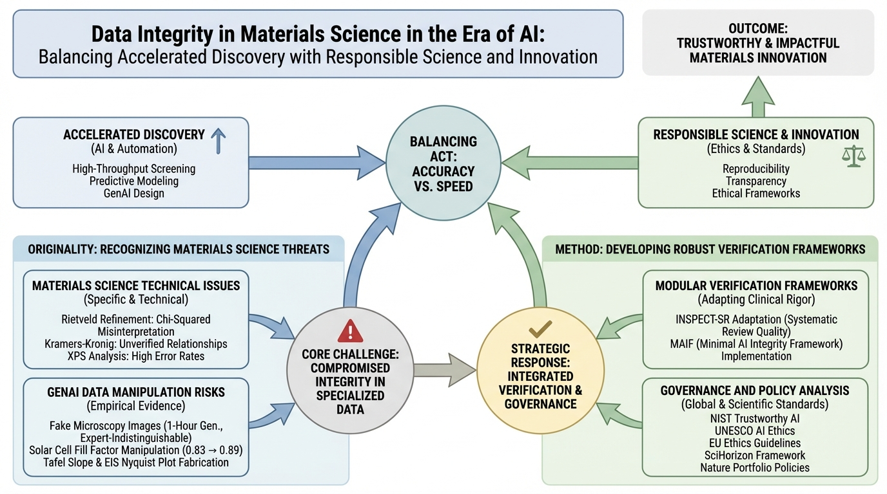
AI 시대 재료과학에서의 데이터 무결성(data integrity) 위기를 체계적으로 분석하고, 이를 해결하기 위한 다각적 프레임워크를 제안하는 관점(perspective) 논문이다. 전문가도 AI 생성 현미경 이미지를 실제 실험 데이터와 구별하지 못하며(40-51% 정확도), 재료 특성화 분석의 20-30%에 기본 오류가 존재하고, GenAI가 물리 원리를 위반하는 그럴듯한 데이터 조작 코드를 1시간 내에 생성할 수 있다는 구체적 증거를 제시한다.
AI가 재료과학을 혁신하는 시점에서 데이터 무결성이라는 근본적 문제를 정면으로 다룬 시의적절하고 중요한 관점 논문이다. GenAI의 데이터 조작 위험을 구체적 사례로 입증하고, 임상 연구의 검증 방법론을 재료과학에 적용한 모듈식 체크리스트는 실용적 가치가 높다. 다만 perspective 논문의 특성상 제안의 실증적 검증이 부재하며, "garbage in, garbage out"의 경고를 넘어 구체적 해결 도구의 개발과 배치가 후속 과제로 남는다.
Self-Driving Laboratories for Chemistry and Materials Science

자율주행 실험실(Self-Driving Laboratories, SDLs)의 화학 및 재료과학 분야 적용에 대한 포괄적 리뷰 논문이다. SDL의 하드웨어(로봇, 센서, 액체 처리 장치), 소프트웨어(오케스트레이션, 데이터 관리, AI 기반 실험 계획), 그리고 분석 공정 최적화, 반응 최적화, 약물 발견, 구조 재료, 광전자소자, 에너지 저장 재료 등 다양한 과학 영역에서의 실제 SDL 구현 사례를 100페이지에 걸쳐 체계적으로 정리하였다. SDL의 자동화 수준을 Level 0~5로 분류하는 계층적 프레임워크를 제시하여, 각 시스템의 자율성 정도를 명확히 구분한다. ---
Chemical Reviews에 게재된 자율 실험실 분야의 포괄적 리뷰로 SDL 설계 원칙과 현황을 체계적으로 정리한 필수 참고 문헌이다.
Harnessing Large Language Models to Collect and Analyze Metal-Organic Framework Property Data Set

L2M3(Large Language Model MOF Miner)는 LLM 체인을 활용하여 40,000편 이상의 MOF 논문에서 합성 조건과 물성 데이터를 자동 추출하고 구조화된 데이터베이스를 구축하는 시스템이다. 추출 정확도 F1 0.93 이상을 달성하였으며, 구축된 데이터를 활용하여 시뮬레이션-실험 데이터 간 괴리의 원인(잔류 종)을 규명하고, LLM 기반 합성 조건 추천 시스템(recommendation score 0.83)을 개발하였다.
JACS에 게재된 본 연구는 LLM 체인을 활용하여 MOF 분야의 대규모 실험 데이터 마이닝을 성공적으로 자동화한 모범적 사례이다. 40,000편 이상의 논문에서 높은 정확도(F1 > 0.93)로 물성과 합성 조건을 동시에 추출하고, 이를 구조 데이터와 연결하여 시뮬레이션-실험 괴리의 원인을 규명한 점이 핵심 기여이다. 합성 조건 추천 시스템까지 개발하여 실용적 가치를 높였으며, 프롬프트 조정만으로 다른 소재 분야로 쉽게 확장 가능한 점이 높이 평가된다. AI for Science에서 LLM 기반 과학 문헌 마이닝의 새로운 표준을 제시한 연구이다.
An automatic end-to-end chemical synthesis development platform powered by large language models

GPT-4 기반의 6개 전문 LLM 에이전트로 구성된 **LLM-RDF(LLM-based Reaction Development Framework)**를 개발하여, 화학 합성 개발의 전 과정을 자연어 인터페이스로 수행할 수 있는 end-to-end 플랫폼을 구현했다. 문헌 검색부터 기질 범위 스크리닝, 반응 동역학 연구, 조건 최적화, 스케일업, 생성물 정제까지 합성 개발의 5단계를 LLM 에이전트가 보조하며, 화학자가 코딩 없이 자연어만으로 자동화 실험 장비와 상호작용할 수 있게 했다. ---
6개 LLM 에이전트로 화학 합성 개발 전 과정을 자연어 인터페이스로 수행한 Nature Communications 논문으로 실제 86% 수율 생성물을 얻은 설득력 있는 시연이다.
Autonomous chemical research with large language models

Coscientist는 GPT-4를 핵심 Planner로 활용하여 인터넷 검색, 문서 탐색, 코드 실행, 실험 자동화 도구를 통합한 multi-LLM 기반 AI 에이전트 시스템으로, 화학 합성 계획부터 로봇 liquid handler 제어, 클라우드 실험실 연동, 반응 조건 최적화까지 6가지 과제를 (반)자율적으로 수행한다. 특히 palladium 촉매 cross-coupling 반응(Suzuki-Miyaura, Sonogashira)의 자율 설계 및 실행과, 기존 데이터 기반 반응 조건 최적화에서 Bayesian optimization을 능가하는 성능을 실증했다.
Coscientist는 LLM을 화학 실험의 자율적 설계-실행에 적용한 선구적 연구로, "AI가 실제 물리적 실험을 수행한다"는 패러다임을 Nature에서 처음으로 대규모 실증했다. 모듈형 아키텍처 설계, 문서 기반 API 학습, 반응 최적화에서의 chemical reasoning 정량화 등 기술적 기여가 탄탄하며, 특히 GC-MS 검증을 통해 실제 화학 반응 생성물 형성을 확인한 점이 설득력 있다. 다만, 실험 규모와 다양성이 제한적이고, data contamination 우려가 완전히 해소되지 않아 후속 연구의 여지가 크다.
Augmenting large language models with chemistry tools

ChemCrow는 GPT-4에 18개의 전문가 설계 화학 도구를 통합한 LLM 화학 에이전트로, 유기 합성, 약물 발견, 재료 설계 전반에 걸쳐 화학 과제를 자동화한다. ReAct 프레임워크 기반의 Thought-Action-Observation 반복 루프를 통해 LLM을 "과잉 자신감의 정보원"에서 "도구를 활용하는 추론 엔진"으로 전환시키며, 곤충 기피제(DEET)와 3개 유기촉매의 자율 합성 및 신규 발색단(chromophore) 발견을 실험적으로 검증했다.
ChemCrow는 LLM을 화학 전문 도구와 체계적으로 통합한 선구적 연구로, 18개 도구의 포괄적 설계, 로봇 플랫폼과의 실제 합성 실행, 신규 chromophore 발견이라는 세 가지 축에서 강력한 기여를 한다. 특히 LLM 기반 평가(EvaluatorGPT)가 과학적 사실성 평가에서 인간 전문가와 체계적으로 불일치한다는 발견은 AI 평가 분야에 중요한 시사점을 제공한다. Coscientist(Nature 2023)와 독립적으로 동시에 개발되었으며, 더 많은 도구와 다양한 use case를 제시한 점에서 차별화된다. 오픈소스 공개와 안전 가드레일 설계는 책임있는 AI 개발의 모범 사례이다.
Uncertainty quantification in scientific machine learning: Methods, metrics, and comparisons
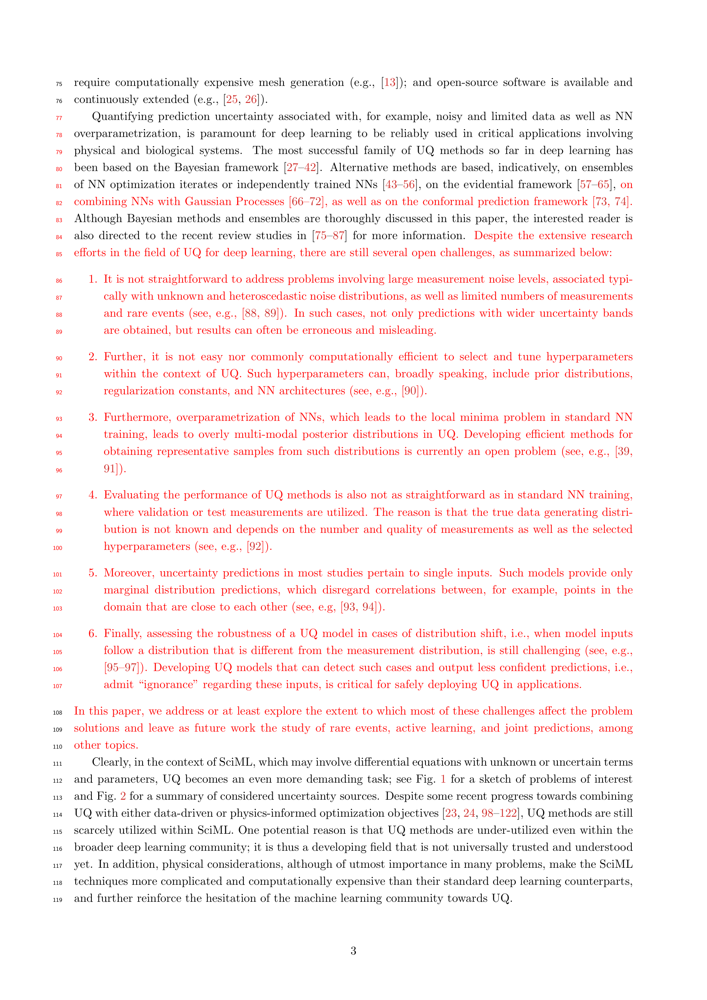
In this work, we present a comprehensive framework that includes uncertainty modeling, new and existing solution methods, as well as evaluation metrics and post-hoc improvement approaches. To demonstrate the applicability and reliability of our framework, we present an extensive comparative study in which various methods are tested on prototype problems, including problems with mixed input-output data, and stochastic problems in high dimensions.
높은 수준의 기여와 탄탄한 실험적 검증을 보여주는 연구.
Artificial Intelligence for Direct Prediction of Molecular Dynamics Across Chemical Space
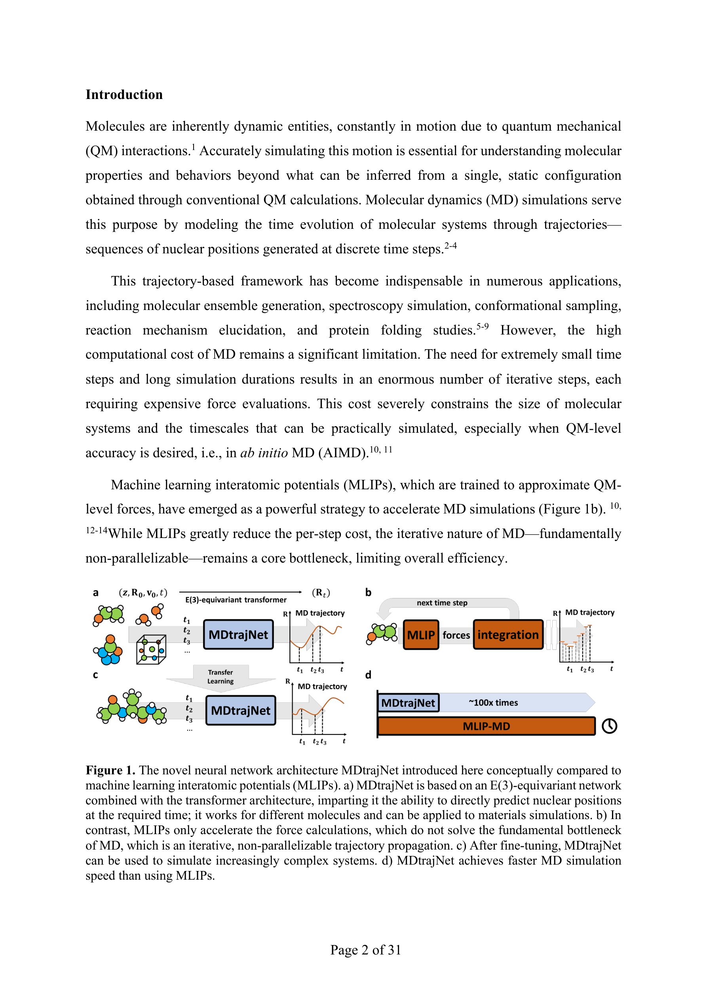
We present a novel neural network architecture, MDtrajNet, and a pre-trained foundational model, MDtrajNet-1, that directly generates MD trajectories across chemical space, bypassing force calculations and integration. 
AI for Science 분야에서 주목할 만한 기여를 보이는 연구.
Earth-Agent: Unlocking the Full Landscape of Earth Observation with Agents

To overcome these limitations, we introduce Earth-Agent, the first agentic framework that unifies RGB and spectral EO data within an MCP-based tool ecosystem, enabling cross-modal, multi-step, and quantitative spatiotemporal reasoning beyond pretrained MLLMs. 
AI for Science 분야에서 주목할 만한 기여를 보이는 연구.
Distinguishing Neutron Star vs. Low-Mass Black Hole Binaries with Postmerger Gravitational Waves $-$ Sensitivity to Transmuted Black Holes and Non-Annihilating Dark Matter

저질량 compact binary coalescence(1-2.5 M_sun)에서 binary neutron star(BNS)와 binary low-mass black hole(LMBH) merger를 postmerger 중력파 파형의 차이를 통해 구별하는 방법을 제시한다. 차세대 검출기(NEMO, CE, ET)에서의 검출 가능성을 예측하고, LMBH fraction에 대한 exclusion sensitivity를 dark matter 상호작용 bound로 변환하는 새로운 분석 프레임워크를 구축했다.
Postmerger 중력파를 통한 BNS/LMBH 구별과 이를 dark matter physics로 연결하는 독창적 분석 프레임워크를 제시한 연구이다. 차세대 검출기 시대의 compact binary population 연구에 중요한 방법론적 기여를 하나, AI 방법론과의 직접적 연계는 향후 과제이다.
Foundation Models for Environmental Science: A Survey of Emerging Frontiers
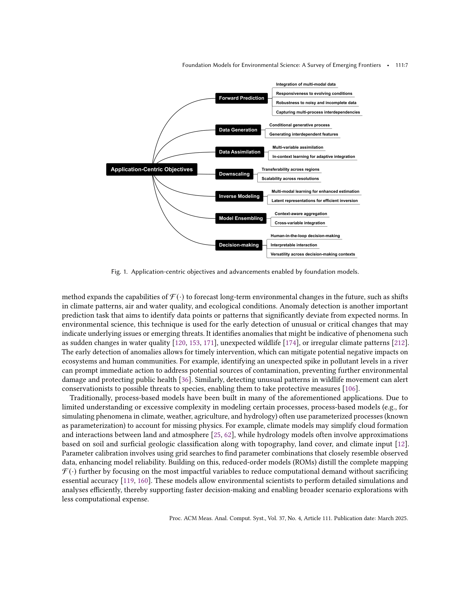
환경 과학에서의 foundation model 적용을 포괄적으로 정리한 survey로, forward prediction, data generation, data assimilation, downscaling, inverse modeling, model ensembling, decision-making의 7가지 주요 use case에 걸친 최신 동향과 모델 개발 프로세스(데이터 수집 → 아키텍처 설계 → 학습 → 튜닝 → 평가)를 체계적으로 다룬다.
환경 과학에서의 foundation model 적용을 7가지 use case와 개발 프로세스로 체계적으로 정리한 시의적절한 survey이다. 학제간 지식 전달의 가치가 크나, 정량적 벤치마크와 환경 데이터 특수성에 대한 깊이 있는 논의가 보완되면 더욱 유용할 것이다.
Physics Informed Deep Learning (Part I): Data-driven Solutions of Nonlinear Partial Differential Equations

We introduce physics informed neural networks -- neural networks that are trained to solve supervised learning tasks while respecting any given law of physics described by general nonlinear partial differential equations. In this two part treatise, we present our developments in the context of solving two main classes of problems: data-driven solution and data-driven discovery of partial differential equations.
해당 분야에 의미 있는 기여를 하는 논문으로, 기술적 건전성과 실험적 검증이 돋보인다.
ChemCrow: Augmenting large-language models with chemistry tools

In this study, we introduce ChemCrow, an LLM chemistry agent designed to accomplish tasks across organic synthesis, drug discovery, and materials design.
ChemCrow: Augmenting large-language models with chemistry tools은(는) our evaluation, including both llm and expert assessments, demonstrates chemcrow's effectiveness in automating a diverse set of chemical tasks을 보여주는 연구이다.
Foundation models for materials discovery – current state and future directions
재료 발견을 위한 파운데이션 모델의 현황을 체계적으로 정리하고, 데이터 부족·다중 스케일 물리·설명 가능성 등 핵심 과제를 식별하며 향후 방향을 제시한 종합 리뷰.
재료 발견용 파운데이션 모델의 현황과 도전 과제를 잘 정리한 리뷰로, 해당 분야 연구자와 입문자 모두에게 유용한 참고 자료이다.
Large language model agent for nuclear reactor operation assistance
외부 도구·문서·예측 모듈을 통합한 LLM 에이전트 아키텍처를 통해 원자력 발전소 시뮬레이터에서 이상 진단 및 운전 절차 자동 생성을 수행함으로써, 원자력 운전 보조 AI의 실현 가능성을 입증한다.
고위험 도메인인 원자력 운전에 LLM 에이전트를 실증 적용한 선도적 연구로, 안전성 검증의 엄밀성이 향후 과제이다.
Automating Computational Chemistry Workflows via OpenClaw and Domain-Specific Skills

Figure 1: OpenClaw 기반 분리형 agent-skill 프레임워크 아키텍처. 중앙 제어 루프(OpenClaw), planning skill, domain skill, DPDispatcher의 역할 분담을 도식화.
계산 화학 자동화의 핵심 장벽은 추론·워크플로 명세·소프트웨어 실행·HPC 실행이 단일 에이전트 안에 강하게 결합되어 있어 새 기능 추가 시 에이전트 전체를 재설계해야 한다는 점이다. 이 논문은 OpenClaw를 범용 제어 루프로 삼고, schema 기반 planning skill이 과학적 목표를 실행 가능한 task specification으로 변환하며, domain skill이 특정 화학 소프트웨어 절차를 캡슐화하고, DPDispatcher가 HPC 스케줄러를 추상화하는 **분리형(decoupled) agent-skill 아키텍처**를 제시한다. 메탄 산화 반응 MD 사례 연구에서 인간 개입 없이 다단계 크로스-툴 실행, 런타임 오류 복구, 반응 네트워크 추출을 완수하였다.  *Figure 1: OpenClaw 기반 분리형 agent-skill 프레임워크 아키텍처. 중앙 제어 루프(OpenClaw), planning skill, domain skill, DPDispatcher의 역할 분담을 도식화.*
계산 화학 자동화의 결합 문제를 agent-skill 분리 아키텍처로 깔끔하게 해결하며, 실제 메탄 산화 MD 사례로 실행 가능성을 입증한 완성도 높은 시스템 논문이다. 단일 사례 연구의 한계가 있으나 재현 가능하고 확장 가능한 설계 원칙이 명확하여 AI for Science 자동화 플랫폼 연구에 중요한 기여를 한다.
General-Purpose Machine-Learned Potential for CrCoNi Alloys Enabling Large-Scale Atomistic Simulations with First-Principles Accuracy
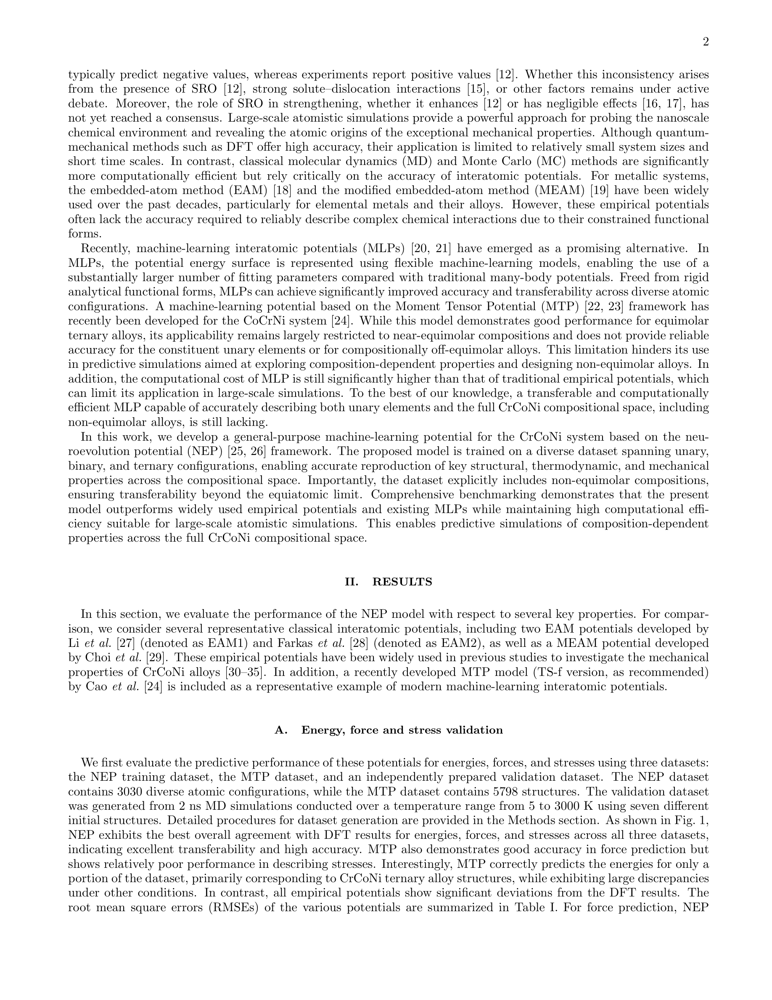
Figure 1: NEP, EAM1/2, MEAM, MTP가 예측한 에너지·힘·응력의 DFT 대비 pairwise 비교(NEP, MTP, 검증 데이터셋)와 NEP descriptor 기반 PCA. NEP가 모든 데이터셋에서 가장 낮은 RMSE를 달성함.
CrCoNi medium-entropy alloy(MEA)는 우수한 기계적 성질로 주목받지만, SRO(short-range order)와 조성 변화를 동시에 다루는 대규모 원자론적 시뮬레이션이 어렵다. 이 논문은 NEP(neuroevolution potential) 프레임워크를 이용해 CrCoNi 삼원계 전 조성 범위를 커버하는 범용 머신러닝 포텐셜을 개발하였다. NEP는 힘 RMSE 106.1 meV/Å(훈련셋), 에너지 RMSE 2.45 meV/atom으로 DFT 수준 정확도를 달성하며, MTP 대비 CPU에서 약 2배, Tesla V100 GPU 단일 카드에서 **48배** 빠른 속도로 수백만 원자 규모 MD 시뮬레이션을 가능하게 한다.  *Figure 1: NEP, EAM1/2, MEAM, MTP가 예측한 에너지·힘·응력의 DFT 대비 pairwise 비교(NEP, MTP, 검증 데이터셋)와 NEP descriptor 기반 PCA. NEP가 모든 데이터셋에서 가장 낮은 RMSE를 달성함.*
CrCoNi MEA를 위한 최초의 조성 전이 가능 범용 MLIP를 NEP 기반으로 개발하고, DFT 수준 정확도와 GPU 기반 대규모 시뮬레이션 가능성을 수십 가지 물성 검증으로 철저히 입증한 고신뢰도 재료 시뮬레이션 논문이다. 방법론적 독창성은 제한적이나 CrCoNi 연구 공동체에 즉시 활용 가능한 고품질 포텐셜을 제공한다는 점에서 실용적 가치가 크다.
Machine-Learned Interatomic Potentials for Predicting Physicochemical Properties of Molten Metal-Salt Systems for Calcium Electrolysis

Figure 1: 논문의 핵심 연구 흐름 — DFT 데이터 기반 MTP 훈련부터 MD 시뮬레이션을 통한 물성 예측까지의 워크플로우
칼슘 전해 장치 설계에 필요한 용융 금속-염 시스템(Ca-Cu 합금 및 CaCl$_2$-KCl 전해질)의 열역학·수송 특성을, DFT 기반으로 훈련된 Moment Tensor Potentials(MTP)을 이용한 분자동역학 시뮬레이션으로 실험을 대체하여 정확하게 예측할 수 있음을 보인다. 밀도, 점도, 확산 계수 등 주요 물성치를 고온 실험 없이 효율적으로 산출함으로써 칼슘 전해 공정 최적화의 비용과 시간을 크게 줄일 수 있다.  *Figure 1: 논문의 핵심 연구 흐름 — DFT 데이터 기반 MTP 훈련부터 MD 시뮬레이션을 통한 물성 예측까지의 워크플로우* ---
DFT 품질의 ML 포텐셜을 칼슘 전해 용융 시스템에 적용하여 고온 실험을 대체하는 실용적 접근으로, 산업적 파급력이 크나 방법론 자체의 독창성은 기존 MTP 프레임워크의 응용 수준에 머문다.
Physics-Informed Neural Operator for Electromagnetic Inverse Scattering Problems

Figure 1: PINO 프레임워크 구조 — 역산란 문제에서 학습 가능한 유전 텐서와 신경 연산자 기반 유도 전류 예측 흐름
전자기 역산란(inverse scattering) 문제를 풀기 위해, 유전 특성을 학습 가능한 텐서로 표현하고 신경 연산자(neural operator)로 유도 전류 분포를 예측하는 물리 정보 신경 연산자(PINO) 프레임워크를 제안한다. State loss, data loss, TV 정규화로 구성된 하이브리드 손실 함수를 통해 다양한 측정 조건에서 신속하고 정확한 유전율 분포 재구성을 가능하게 한다.  *Figure 1: PINO 프레임워크 구조 — 역산란 문제에서 학습 가능한 유전 텐서와 신경 연산자 기반 유도 전류 예측 흐름* ---
유전 특성의 학습 가능한 텐서 표현과 신경 연산자를 결합한 PINO 프레임워크는 전자기 역산란 문제에서 속도와 물리 일관성을 동시에 달성하는 실용적이고 기술적으로 견실한 접근이다.
Incorporating Continuous Dependence Qualifies Physics-Informed Neural Networks for Operator Learning

Figure 1: 연속 의존성 조건을 통합한 확장 PINN 프레임워크 — 초기·경계 조건 변화에 대한 해의 민감도를 손실 함수에 반영하는 구조
기존 PINN의 핵심 약점인 낮은 일반화 성능 문제를, PDE의 수학적 적분성(well-posedness)에서 보장되는 해의 연속 의존성(continuous dependence) 정보를 학습에 추가 반영함으로써 해결한다. 이 확장은 PINN이 단순한 PDE 솔버에서 나아가 operator learning 수준의 일반화 능력을 갖추도록 하며, PDE 해의 수학적 구조를 훈련 제약으로 활용하는 새로운 패러다임을 제시한다.  *Figure 1: 연속 의존성 조건을 통합한 확장 PINN 프레임워크 — 초기·경계 조건 변화에 대한 해의 민감도를 손실 함수에 반영하는 구조* ---
PDE well-posedness의 수학적 구조를 PINN 훈련 제약으로 활용하는 아이디어는 이론적으로 우아하며, 일반화 성능 향상을 통해 PINN을 operator learning 수준으로 격상시키는 실질적 기여를 한다.
Large-Language-Model-Based AI Agent for Organic Semiconductor Device Research

GPT-4와 머신러닝을 결합한 AI 에이전트를 설계하여 유기 전계효과 트랜지스터(OFET) 문헌에서 소자 파라미터를 자동 추출하고, 이를 기반으로 소자 성능 예측 및 실험 최적화 가이드를 제공하는 시스템을 구축하였다.
GPT-4 에이전트로 OFET 소자 연구를 자동화한 Advanced Materials 논문으로 실제 실험 결과와의 대응이 설득력 있는 도메인 특화 AI4S 연구다.
MechAgents: Large language model multi-agent collaborations can solve mechanics problems, generate new data, and integrate knowledge

LLM 기반 멀티 에이전트 시스템을 활용하여 **고체역학 문제를 자율적으로 풀 수 있는 물리 기반 생성형 AI 플랫폼** MechAgents를 제안한다. GPT-4를 기반으로 한 AI 에이전트들이 탄성 문제를 유한요소법(FEM)으로 정식화하고, Python/FEniCS 코드를 작성, 실행, 디버깅하며, 결과를 분석하는 전 과정을 자율적인 대화를 통해 수행한다. 2-에이전트 팀의 자기 수정(self-correction)과 다중 에이전트 그룹의 상호 수정(mutual correction)이라는 두 가지 조직 구조를 비교하며, 분업(division of labor)이 복잡한 공학 문제 해결에 미치는 효과를 실증한다. ---
멀티 에이전트로 유한요소 역학 문제를 자동화한 선구적 연구로 에이전트 협업 설계의 가능성을 보였으나 평가 범위 확대가 필요하다.
OpenFOAMGPT 2.0: end-to-end, trustworthy automation for computational fluid dynamics

자연어 질의로부터 **전처리-시뮬레이션-후처리까지 완전 자동화된 end-to-end CFD 시뮬레이션**을 수행하는 최초의 멀티 에이전트 프레임워크를 제안한다. 4개의 전문 에이전트(Pre-processing, Prompt Generation, OpenFOAMGPT, Post-processing)가 Claude-3.7-Sonnet을 기반으로 협력하며, Poiseuille 유동, 다공성 매질 유동, 공기역학 해석 등 다양한 사례에서 **450회 이상의 시뮬레이션에서 100% 성공률과 재현성**을 달성했다. "대화 기반 시뮬레이션(conversation-to-simulation)" 워크플로우를 통해 CFD의 진입 장벽을 크게 낮추면서도 수치적 엄밀성을 유지했다. ---
자연어-CFD 워크플로우 자동화를 end-to-end로 구현하고 100% 성공률을 실증한 실용적 연구로, 멀티에이전트 아키텍처와 OpenFOAM 통합이 유사 도구 대비 차별화된다.
A Perspective on Foundation Models in Chemistry

화학 및 재료 과학 분야에서 파운데이션 모델(foundation model)의 최근 발전을 체계적으로 정리한 관점(perspective) 논문이다. 물성 예측(property prediction), 기계학습 원자간 포텐셜(MLIP), 역설계(inverse design)의 세 가지 핵심 도메인에 걸쳐 "작은 파운데이션 모델(small FM)"과 "큰 파운데이션 모델(big FM)"로 분류하고, 사전학습 방법론(SSL, 멀티모달 학습, LLM 활용)과 함께 미래 방향을 논의한다.
화학 분야 파운데이션 모델의 현황과 미래를 체계적으로 정리한 JACS Au 관점 논문으로, 분자·반응·재료 전 영역을 포괄하는 로드맵이 후속 연구자들에게 실질적 가이드를 제공한다.
Foundation-Model Surrogates Enable Data-Efficient Active Learning for Materials Discovery

재료 탐색을 위한 능동 학습(Active Learning, AL)에서 기존 대리 모델(surrogate model)인 Gaussian Process(GP)와 Random Forest(RF)가 가진 근본적 한계를 해결하기 위해, transformer 기반 파운데이션 모델 **TabPFN**을 대리 모델로 활용하는 **In-Context Active Learning (ICAL)** 프레임워크를 제안한다. TabPFN은 수백만 개의 합성 회귀 과제로 사전 학습된 메타 학습 사전 확률(meta-learned prior)을 활용하여, 데이터셋별 재학습 없이 단일 순전파(forward pass)로 확률적 추론을 수행한다. 10개 재료 벤치마크 데이터셋에서 GP 대비 평균 52%, RF 대비 29.77%의 추가 평가 횟수 절감을 달성하며, 소규모 데이터 환경에서의 재료 발견 효율을 크게 향상시켰다. ---
TabPFN을 재료 발견 능동 학습의 대리 모델로 적용하여 불확실성 보정이 AL 성능의 핵심임을 실증한 실용적 연구로, 소규모 실험 과학 전반에 파급 가능성이 있다.
SLE-FNO: Single-Layer Extensions for Task-Agnostic Continual Learning in Fourier Neural Operators

Fourier Neural Operator(FNO)에 단일 태스크별 레이어를 추가하는 SLE-FNO를 제안하여, 과학적 기계학습 서로게이트 모델의 지속적 학습(continual learning) 시 catastrophic forgetting 없이 새로운 분포 외(OOD) 태스크에 효율적으로 적응하는 방법론이다. ---
FNO에 지속학습을 적용하는 SLE 프레임워크로 SciML에서의 catastrophic forgetting 문제를 체계적으로 다룬 탄탄한 연구다.
Fine-tuning Large Language Models for Domain Adaptation: Exploration of Training Strategies, Scaling, Model Merging and Synergistic Capabilities

재료과학 도메인에 특화된 LLM을 개발하기 위한 fine-tuning 전략(CPT, SFT, DPO, ORPO)과 모델 병합(SLERP)의 효과를 체계적으로 탐구한 연구이다. 핵심 발견은 SLERP(Spherical Linear Interpolation)를 통한 모델 병합이 단순 평균을 크게 초월하는 **비선형적 시너지 효과**를 발휘하여, 개별 부모 모델이 갖지 못한 새로운 능력(emergent capabilities)을 창출한다는 점이다. 이 효과는 7B/8B 규모 모델에서 두드러지지만, 1.7B 소형 모델에서는 나타나지 않아 모델 스케일이 핵심 요인임을 시사한다.
SLERP 모델 병합을 재료 과학 LLM 미세조정에 적용한 MIT 연구로, 창발적 역량 발현이라는 흥미로운 발견을 포함하나 단일 도메인·소규모 평가의 한계가 있다.
Toward a Fully Autonomous, AI-Native Particle Accelerator

입자 가속기를 AI가 처음부터 설계하고 운영하는 "자율주행(self-driving)" 시설로 전환하기 위한 비전과 로드맵을 제시하는 포지션 페이퍼이다. 기존 시설에 AI를 후속 장착(retrofitting)하는 방식이 아닌, 설계 단계부터 AI를 핵심 설계 원리로 내장하는 "AI-native" 패러다임을 주창한다. 이를 실현하기 위한 9가지 핵심 연구 축(agentic control architecture, knowledge integration, adaptive learning, digital twins, health monitoring, safety frameworks, modular hardware, multimodal data fusion, cross-domain collaboration)을 체계적으로 정리하고, AI-assisted에서 AI-augmented를 거쳐 AI-autonomous로의 3단계 진화 경로를 제안한다.
입자 가속기의 AI-native 자율 운영이라는 야심찬 비전을 명확하고 체계적으로 제시한 포지션 페이퍼로, 9가지 연구 축의 구조화와 3단계 진화 프레임워크가 가속기 커뮤니티에 유용한 로드맵을 제공한다. 특히 설계 단계부터 자율 운영을 내재화하는 "AI-native" 패러다임과 machine state embedding 개념이 독창적이다. 다만 실증적 검증이 전무하고, 비용 분석 및 실시간 제어의 기술적 실현 가능성에 대한 심층 논의가 부족하여, 현 단계에서는 영감을 주는 비전 문서로서의 가치가 주된 기여이다.
Polymer Brushes and Grafted Polymers: AI/ML-Driven Synthesis, Simulation, and Characterization towards autonomous SDL

고분자 브러시(polymer brush) 및 그래프트 고분자 연구에 AI/ML 워크플로우를 도입하여, 합성-시뮬레이션-특성분석의 전체 파이프라인을 가속화하고 궁극적으로 자율 주행 실험실(Self-Driving Laboratory, SDL)로의 전환을 제안하는 포괄적 리뷰 논문이다. 52페이지에 걸쳐 고분자 브러시의 합성 경로(grafting-from, grafting-onto, grafting-through), 다양한 특성분석 기법(AFM, SPR, ellipsometry, XRR/NR, QCM, XPS, FTIR, EIS), 시뮬레이션 방법론(MD, SCFT, coarse-grained), 그리고 각 영역에서 ML이 어떻게 적용될 수 있는지를 체계적으로 정리하였다.
고분자 브러시 연구에 AI/ML 및 SDL 패러다임을 도입하는 비전을 체계적으로 제시한 리뷰이나, 새로운 실험/벤치마크 없이 기존 문헌을 나열하는 수준에 그치며, 저자 그룹의 연구에 과도하게 편중된 서사가 객관성을 약화시킨다. 해당 분야의 입문자에게는 합성-특성분석-시뮬레이션의 전체 지형을 파악하는 데 유용하나, AI/ML 적용의 깊이와 구체성은 부족하다.
Automated Extraction of Mechanical Constitutive Models from Scientific Literature using Large Language Models: Applications in Cultural Heritage Conservation

문화유산 보존을 위한 디지털 트윈 구축에 필요한 역학적 구성 방정식(constitutive model)과 보정 파라미터를 과학 문헌에서 자동 추출하는 2단계 에이전틱 프레임워크를 제안한다. 비용 효율적인 "Gatekeeper" 에이전트가 관련성을 필터링하고, 고성능 "Analyst" 에이전트가 Context-Aware Symbolic Grounding을 통해 수학적 모호성을 해결하며 정밀 추출을 수행한다. 2,000편 이상의 논문에서 113편의 핵심 문헌을 선별하여 185개 구성 모델 인스턴스와 450개 이상의 보정 파라미터로 구성된 구조화 데이터베이스를 구축하였으며, 추출 정밀도 80.4%, F1 점수 81.9%를 달성하였다.
문화유산 재료의 역학적 구성 모델 추출이라는 실용적이고 의미 있는 문제를 LLM 기반 에이전틱 프레임워크로 해결한 논문으로, 도메인 전문성과 AI 기술의 결합이 돋보인다. 그러나 arXiv 전용 소스의 한계, 기존 추출 도구와의 비교 부재, 구체적 모델 정보 미공개 등이 연구의 완성도를 낮추며, F1 82%의 성능도 자동 데이터베이스 구축에는 아직 human-in-the-loop 의존도가 높은 수준이다.
Neural-POD: A Plug-and-Play Neural Operator Framework for Infinite-Dimensional Functional Nonlinear Proper Orthogonal Decomposition

고전적 고유직교분해(POD/PCA)의 선형, 격자 종속, L2 고정 최적성이라는 세 가지 한계를 극복하기 위해, 신경망으로 매개변수화된 비선형 직교 기저 함수를 무한 차원 함수 공간에서 학습하는 Neural-POD 프레임워크를 제안한다. 순차적 잔차 최소화(Gram-Schmidt 직교화에 대응)를 통해 모드를 하나씩 학습하며, 학습된 기저는 해상도 독립적이고, L1/L2/H1 등 임의 노름에서 최적화 가능하며, Galerkin 투영 기반 축소 모델(ROM)과 DeepONet 프레임워크 모두에 플러그앤플레이로 통합된다.
고전 POD의 한계(선형성, 격자 종속성, L2 고정)를 신경망 기반 비선형 기저 학습으로 극복하려는 방향성은 타당하며, Galerkin ROM과 DeepONet 양쪽에 플러그앤플레이로 통합되는 실용적 설계가 장점이다. 그러나 실험이 비교적 단순한 문제(1D Burgers, 2D 층류 NSE)에 한정되어 있고, 기존 비선형 차원 축소 방법과의 비교가 부재하며, 이론적 보장이 없어 기여의 깊이가 아쉽다. 교육적 도구로서의 가치는 인정되지만, 고난이도 과학 문제에서의 실질적 우위를 입증하기 위한 추가 실험이 필요하다.
EAA: Automating Materials Characterization with Vision Language Model Agents

Vision Language Model(VLM) 기반 에이전트 시스템 EAA를 개발하여, 싱크로트론 빔라인에서의 현미경 조작(초점 조정, 특징 탐색, 대화형 데이터 수집)을 자동화한 연구.
VLM 에이전트 기반 싱크로트론 빔라인 자동화 시스템으로 실용적 가치는 있으나 정량적 평가가 부족한 시스템 데모 논문이다.
AMDAT: An Open-Source Molecular Dynamics Analysis Toolkit for Supercooled Liquids, Glass-Forming Materials, and Complex Fluids
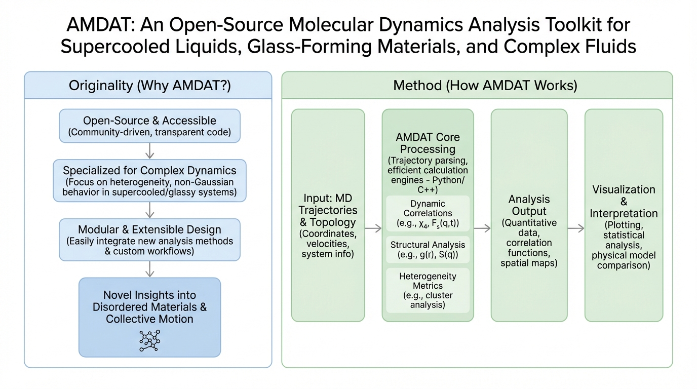
비정질/유리질 재료 및 고분자 시스템의 분자동역학(MD) 시뮬레이션 궤적을 효율적으로 분석하기 위한 오픈소스 C++ 툴킷 AMDAT을 소개하며, 인메모리 궤적 처리와 지수적 시간 샘플링을 핵심 설계로 채택하여 장시간 동역학 분석의 효율성을 극대화한다.
15년간 축적된 MD 분석 툴킷으로 성숙한 소프트웨어 공학적 완성도를 보이나 새로운 과학적 방법론 기여는 제한적이다.
Large Language Model in Materials Science: Roles, Challenges, and Strategic Outlook

재료과학에서 LLM의 4가지 핵심 역할(Oracle, Surrogate, Quant, Arbiter)을 정의하고, 검증 가능하고 추적 가능한 연구 루프에 LLM을 통합하기 위한 전략적 방향을 제시하는 관점(perspective) 논문이다. ---
LLM의 역할을 Oracle/Surrogate/Quantifier/Arbiter 4가지로 분류한 재료과학 관점 프레임워크로 개념적 정리에 기여한다.
VASPilot: MCP-Facilitated Multi-Agent Intelligence for Autonomous VASP Simulations

VASP(Vienna Ab initio Simulation Package) 기반 밀도범함수이론(DFT) 시뮬레이션을 완전 자동화하는 오픈소스 멀티 에이전트 플랫폼 **VASPilot**을 소개한다. CrewAI 프레임워크와 Model Context Protocol(MCP)을 기반으로 구축되며, Manager Agent + 3개 특화 Worker Agent(Crystal Structure Agent, VASP Agent, Result Validation Agent)가 결정 구조 검색, 입력 파일 생성, Slurm 작업 제출, 오류 파싱 및 파라미터 자동 조정, 결과 시각화까지 전 과정을 수행한다. 2H-MoS2의 밴드 구조/DOS 계산, ENCUT 수렴 테스트, 다양한 van der Waals 보정에 따른 격자 상수 최적화, 전이금속 디칼코게나이드(TMD) 밴드갭 비교 등의 벤치마크에서 수동 개입 없이 성공적으로 완료되었다. ---
MCP 기반 멀티 에이전트로 DFT 계산을 자동화하는 VASPilot은 실용적 접근이나 평가 규모와 오류 처리 강건성에서 개선이 필요하다.
Foundation Models for Materials Discovery -- Current State and Future Directions

Foundation model(LLM을 포함하는 대규모 사전학습 모델의 총칭)이 재료 발견(materials discovery) 분야에 어떻게 적용되고 있는지를 조망하는 perspective 논문이다. 데이터 추출, 물성 예측, 분자 생성, 합성 계획의 네 가지 핵심 과제에서의 현황을 리뷰하고, 향후 멀티모달 모델, 새로운 데이터 캡처 방식, 멀티피델리티(multi-fidelity) 접근법이 이 분야의 방향을 결정할 것이라 전망한다.
IBM Research의 재료 발견을 위한 파운데이션 모델 관점 논문으로, 현황과 미래 방향을 개괄적으로 정리했지만 구체적 실험 근거나 독창적 방법론 없이 비전 제시에 그친다.
Simulations in the era of exascale computing

Simulations in the era of exascale computing 논문에 대한 상세 리뷰. Abstract가 제공되지 않아 PDF 본문 기반 분석 필요.
의미 있는 기여를 하나, 독창성 또는 실험적 검증의 보강이 필요한 연구.
Architectures, variants, and performance of neural operators: A comparative review

This paper provides a comprehensive summary and analysis of neural operators.
의미 있는 기여를 하나, 독창성 또는 실험적 검증의 보강이 필요한 연구.
Lang-PINN: From Language to Physics-Informed Neural Networks via a Multi-Agent Framework
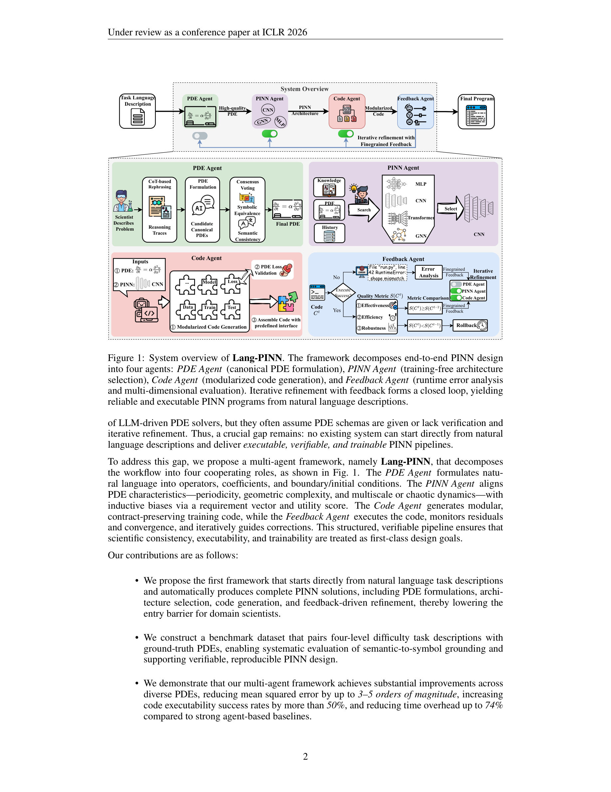
We present Lang-PINN, an LLM-driven multi-agent system that builds trainable PINNs directly from natural language task descriptions.
의미 있는 기여를 하나, 독창성 또는 실험적 검증의 보강이 필요한 연구.
Nonlinear stochastic and quantum motion from Coulomb forces

We show that after eliminating the harmonic part of the Coulomb force by an auxiliary linear force, the remaining reciprocal nonlinear part results in a directly observable non-reciprocal nonlinear effect: increase of the signal-to-noise ratio (SNR) of the coherent displacement of one particle, d... 
의미 있는 기여를 하지만, 추가 검증이 필요한 부분이 있음.
Chiral spin symmetry and hot QCD

QCD(양자 색역학)의 온도에 따른 세 가지 질적으로 다른 regime -- hadron gas, stringy fluid, quark-gluon plasma -- 의 존재를 overview하고, chiral spin symmetry를 통해 confining regime과 그 소멸을 구별하는 새로운 대칭 프레임워크를 제시한다.
QCD의 temperature-dependent regime을 chiral spin symmetry라는 새로운 대칭 관점에서 체계적으로 정리한 이론 물리 review이다. 독창적인 대칭 프레임워크를 제안했으나, proceedings 형식의 한계로 완결성이 부족하며, AI for Science 관점에서의 직접적 기여는 제한적이다.
From Theory to Application: A Practical Introduction to Neural Operators in Scientific Computing
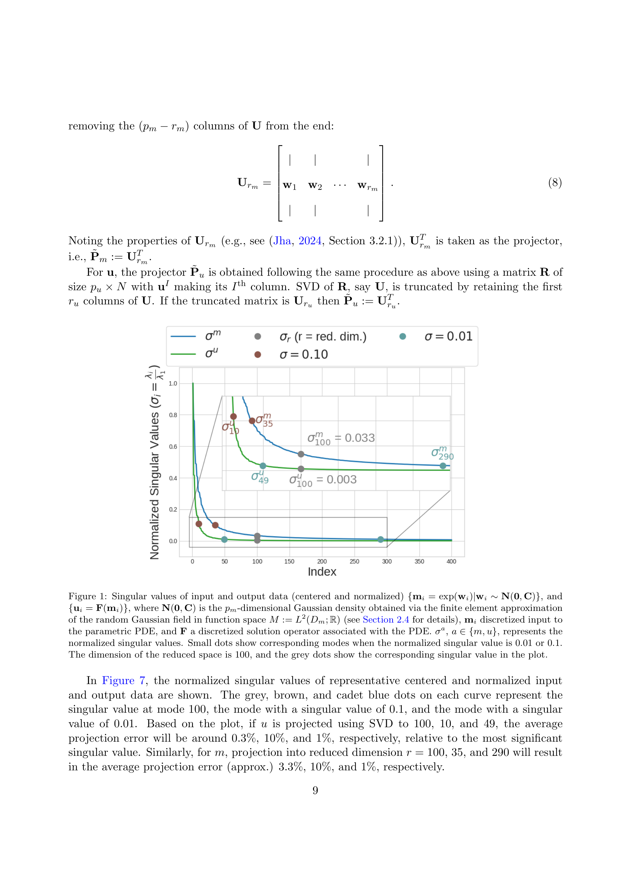
Parametric PDE의 solution을 근사하는 neural operator 아키텍처(DeepONet, PCANet, FNO)를 high-level 개념과 실용적 구현 전략 중심으로 비교 review하고, Bayesian inference에서의 surrogate로서의 활용을 시연한다. Poisson equation과 linear elastic deformation에서의 구현 예제를 통해 scientific computing workflow 통합 가이드를 제공한다.
Neural operator의 실용적 구현과 scientific computing 통합에 초점을 맞춘 교육적 가치가 높은 review이다. DeepONet, PCANet, FNO의 비교와 Bayesian inference 활용 시연이 유용하나, simple linear PDE에 한정된 실험과 최신 방법론 미포함이 아쉬운 점이다.
Physics-Informed Neural Networks and Extensions

Scientific machine learning의 핵심 방법론인 Physics-Informed Neural Networks(PINNs)를 review하고, 최근의 practical extensions를 소개하며, governing differential equation의 data-driven discovery에 대한 구체적 예시를 제공한다.
PINNs 원저자가 직접 작성한 review로서 방법론의 철학과 extensions를 정확히 전달하는 고유한 가치를 지닌다. Scientific machine learning의 핵심 방법론에 대한 authoritative한 정리이나, critical assessment와 경쟁 방법론 비교가 보완되면 더욱 균형 잡힌 survey가 될 것이다.
Scientific Machine Learning through Physics-Informed Neural Networks: Where we are and What's next

This article provides a comprehensive review of the literature on PINNs: while the primary goal of the study was to characterize these networks and their related advantages and disadvantages.
관련 분야의 포괄적 서베이로서 연구자들에게 유용한 참고 자료를 제공하나, 서베이 논문 특성상 독창적 기여는 제한적이다.
Scientific Large Language Models: A Survey on Biological & Chemical Domains
In this paper, we endeavor to methodically delineate the concept of "scientific language", whilst providing a thorough review of the latest advancements in scientific LLMs. By offering a comprehensive overview of technical developments in this field, this survey aspires to be an invaluable resource for researchers navigating the intricate landscape of scientific LLMs.
관련 분야의 포괄적 서베이로서 연구자들에게 유용한 참고 자료를 제공하나, 서베이 논문 특성상 독창적 기여는 제한적이다.
Physics-informed neural network for multi-objective design optimization of wickless thermal ground planes
PINN(Physics-Informed Neural Network) 기반 surrogate 모델을 이용하여 wickless thermal ground plane(TGP)의 다목적 설계 최적화를 수행하였다. 물리 법칙을 손실 함수에 직접 내재화함으로써 CFD 시뮬레이션 대비 대폭 빠른 속도로 Pareto 최적 설계를 탐색하며, 열저항 최소화와 경량화를 동시에 달성하는 설계 조건을 도출하였다.
PINN과 다목적 최적화를 열관리 소자 설계에 결합한 실용적 연구이나, 초록 부재로 구체적 성과 수치 확인이 불가하여 정밀한 평가에 한계가 있다. 전자 냉각 설계 자동화 측면에서 산업적 활용 가능성이 기대된다.
A Survey of AI for Materials Science: Foundation Models, LLM Agents, Datasets, and Tools

재료과학 분야에서 파운데이션 모델(FM), LLM 에이전트, 데이터셋, 도구의 현황을 포괄적으로 정리한 서베이 논문으로, 6가지 핵심 응용 영역에 걸친 태스크 기반 분류 체계를 제시한다. ---
재료과학 AI의 전반적 지형도를 제공하는 서베이로 입문자에게 유용하나 기존 서베이 대비 차별화된 통찰이 부족하다.
Knowledge-guided Large Language Model for Material Science

재료과학에 특화된 도메인 지식 기반 LLM을 구축하기 위한 방법론(파인튜닝, RAG, 프롬프트 엔지니어링, AI 에이전트)과 응용(정보 추출, 물성 예측, 자율 실험실, 로보틱스)을 체계적으로 리뷰한 논문이다. ---
지식 그래프 기반 LLM으로 재료 문헌을 리뷰하는 접근은 유용하나 방법론적 깊이와 검증 범위에서 한계를 보인다.
MatPilot: an LLM-enabled AI Materials Scientist under the Framework of Human-Machine Collaboration

MatPilot은 LLM 기반 멀티 에이전트 시스템을 활용하여 인간-기계 협업 프레임워크 하에서 재료 과학 연구를 수행하는 AI 재료 과학자 시스템이다. 인지 모듈(cognition module)과 실행 모듈(execution module)로 구성되며, 자연어 상호작용을 통해 과학적 가설 생성, 실험 설계, 자동화 실험 수행, 반복적 최적화를 통합한 플랫폼이다.
LLM 기반 재료 과학 연구 자동화의 비전을 제시한 포지션 페이퍼로, 개념적 프레임워크는 흥미롭지만 실험적 검증이 전무하여 학술적 기여는 제한적이다.
The frontier of simulation-based inference

Many domains of science have developed complex simulations to describe phenomena of interest. While these simulations provide high-fidelity models, they are poorly suited for inference and lead to challenging inverse problems.
기초적 기여가 있으나, 독창성과 기술적 깊이의 강화가 필요.
AI Agents in Engineering Design: A Multi-Agent Framework for Aesthetic and Aerodynamic Car Design

자동차 설계 프로세스에 AI "Design Agents"를 도입하여, 컨셉 스케치에서 스타일링, 3D 형상 검색/생성, CFD 메싱, 공기역학 시뮬레이션까지의 전 과정을 자동화하는 멀티에이전트 프레임워크를 제안한 연구이다. Vision-Language Model(VLM), LLM, 기하학적 딥러닝(DeepSDF, PointNet, RegDGCNN, TripNet)을 AutoGen 프레임워크로 오케스트레이션하여, 기존 수 주~수 일 소요되던 설계 반복 주기를 **수 분** 단위로 단축하며, 8,000개의 산업 표준 자동차 설계를 포함하는 DrivAerNet++ 데이터셋을 기반으로 실용적 결과를 도출하였다. ---
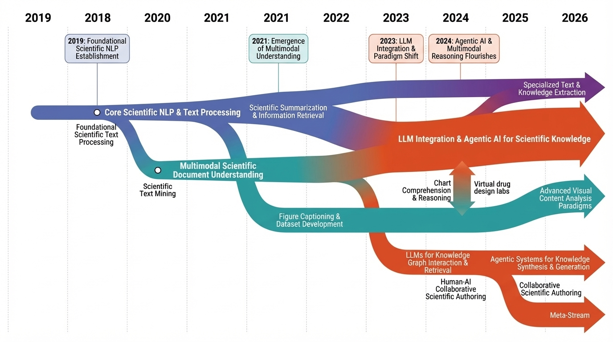
Category Overview
과학 자료 처리 및 지능형 문서 분석(Scientific NLP & Document Intelligence)은 과학 문헌의 텍스트, 차트, 그림 등 다양한 형태의 정보를 자동으로 처리하고 이해하는 기술 분야입니다. 이 카테고리는 학술 자료의 대규모 자동 처리, 핵심 정보 추출, 그리고 멀티모달 AI를 활용한 과학적 커뮤니케이션의 지원을 목표로 합니다. 특히 생의학 분야의 자연어 처리[136], 과학 문헌의 극단적 요약[137], 그리고 대규모 언어 모델을 활용한 학술 자료 분석[050]이 주요 연구 주제로 부상하고 있습니다. 현재 이 분야의 핵심 트렌드는 비전 언어 모델(Vision Language Models)을 활용한 차트 및 그림의 지능형 이해입니다. 단순한 차트 읽기를 넘어 시각 정보에 기반한 추론과 분석이 가능해지고 있으며[125][126][127][128], 대규모 멀티모달 데이터셋을 통한 지도학습이 활발히 진행되고 있습니다[129][055]. 또한 시각 언어 모델의 환각(hallucination) 문제를 해결하기 위한 검증 메커니즘 연구[142]도 중요한 과제로 다루어지고 있습니다. 학술 저작 지원 도구의 개발도 주목할 만한 방향입니다. AI 기반 논문 일러스트레이션 자동화[043], 인간-AI 협력 글쓰기 시스템 설계[139], 그리고 지식 그래프를 활용한 학술 질의응답[221] 등이 연구자의 생산성 향상을 목표로 추진되고 있습니다. 향후 이 분야는 생명과학, 보존 과학, 물리학 등 다양한 과학 분야에 맞춘 특화된 도메인 모델의 개발과 함께, 과학 문헌의 재현성 있는 구조 추출[010], 기계 학습 모델의 자동 추출[014] 등으로 확대될 것으로 예상됩니다.
- Scientific Text Mining & Extraction: 과학 문헌에서 자동으로 정보를 추출하는 자연어처리(NLP) 기술은 생의학, 물리학, 화학 등 다양한 분야에서 필수적인 도구가 되고 있습니다. 명명된 개체 인식(Named Entity Recognition, NER), 관계 추출(Relation Extraction), 요약(Summarization) 등의 기술을 통해 방대한 과학 논문들로부터 핵심 정보를 효율적으로 추출할 수 있습니다. 기존 일반 목적의 NLP 모델은 생의학 논문의 복잡한 용어와 개념 관계를 제대로 인식하지 못하는 한계가 있었으나, [136]에서 제시된 생의학 특화 NLP 모델은 이러한 문제를 해결하고 있습니다. 한편 [103]과 [137]은 대규모 언어 모델(Large Language Models, LLMs)을 이용한 과학 문헌 요약의 성능과 편향 문제를 분석하였으며, [014]는 LLM을 활용하여 과학 논문에서 기계적 구성 모델을 자동으로 추출하는 혁신적 접근법을 제시했습니다. [221]은 학문 지식 그래프(Scholarly Knowledge Graph) 기반 질의응답 시스템에 LLM을 활용하는 방법을 제안하여 과학 문헌 처리의 새로운 가능성을 열었습니다. 향후 연구는 도메인 특화 모델의 성능 향상, 다국어 과학 문헌 처리, 그리고 추출된 정보의 신뢰성 검증에 초점을 맞춰야 할 것입니다.
- Chart & Figure Understanding: 과학 논문에 포함된 차트, 그래프, 도형 등의 시각 정보를 이해하고 해석하는 것은 과학 문헌 이해의 중요한 요소입니다. 멀티모달 모델(Multimodal Models)을 통해 이미지와 텍스트 정보를 통합적으로 처리함으로써 복잡한 과학 데이터 시각화를 자동으로 분석할 수 있습니다. [246]은 휴리스틱 규칙 없이 차트를 역렌더링하고 이해하는 통합 프레임워크를 제시했으며, [125], [126], [128]은 대규모 명령어 튜닝(Instruction Tuning)을 통해 차트 이해 및 추론 능력을 크게 향상시켰습니다. [127]은 차트 이해와 생성을 모두 가능하게 하는 멀티모달 대규모 언어 모델을 개발했으며, [131]은 눈 움직임 제어(Eye Movement Control)를 활용한 차트 읽기 기술을 제안했습니다. [129]는 차트 이미지를 기반으로 한 증거 기반 자동 팩트 체크(Fact-Checking) 방법론을 제시했으며, [055]는 대규모 멀티학문 과학 도형-텍스트 이해 데이터셋을 구축했습니다. 향후 연구는 더욱 복잡한 다층 차트 분석, 동적 시각화 처리, 그리고 차트 생성 시 사실성 보장에 중점을 둘 필요가 있습니다.
- AI-Assisted Academic Writing: 인공지능 기술은 논문 초안 작성, 그림 생성, 문법 교정 등 학술 글쓰기 전 과정을 지원하는 강력한 도구가 되고 있습니다. [043]은 과학자들을 위한 학술 삽화 자동 생성 시스템을 제시하여 논문 작성의 효율성을 높였으며, [139]는 인간-AI 협력 글쓰기 데이터셋을 구축함으로써 언어 모델의 작문 능력을 체계적으로 평가할 수 있는 기반을 마련했습니다. LLM 기반의 작문 보조 도구는 구조화된 논문 작성, 참고문헌 관리, 표현 개선 등에 활용되고 있으나, [142]에서 지적한 것처럼 환각(Hallucination) 문제를 해결해야 합니다. [050]은 언어 과학 분야에서 LLM 적용 방법의 체계적 분류를 제시하여 다양한 학문 분야에서의 활용을 가능하게 했습니다. 또한 [031]은 지식 그래프(Knowledge Graph)를 활용한 개인화된 과학 설명 생성으로 학자들의 맞춤형 글쓰기 지원을 제안했으며, [010]은 이미지 기반 과학 분야에서 재현 가능한 구조 발견을 위한 기준을 제시했습니다. 향후 연구는 도메인 특화 글쓰기 모델 개발, 윤리적 표절 방지, 그리고 AI 생성 콘텐츠의 투명한 표시에 주력해야 할 것입니다.
M2F: Automated Formalization of Mathematical Literature at Scale

수학 교과서와 연구 논문을 Lean 4 형식 증명 라이브러리로 자동 변환하는 최초의 프로젝트 규모(project-scale) 에이전틱 프레임워크 M2F(Math-to-Formal)를 제안한다. 2단계 파이프라인(Stage 1: 명제 컴파일, Stage 2: 증명 복구)과 검증기 인증 수정(VeriRefine) 원칙을 통해, 약 3주 만에 479페이지의 실해석학/볼록해석학 교과서로부터 153,853줄의 Lean 코드(241개 파일, 4,116개 선언)를 생성하여 end-to-end 빌드에 성공하였다. FATE-H 벤치마크에서 96% 증명 성공률을 달성하여 Seed-Prover 1.5(80%)를 16%p 상회하였다.
수학 형식화의 패러다임을 개별 정리에서 프로젝트 규모로 전환한 획기적 연구이다. VeriRefine의 단조성 보장 원칙은 장기 실행 안정성을 우아하게 해결하며, 479페이지에서 15만 줄 이상의 빌드 가능한 Lean 라이브러리를 생성한 성과는 수학 형식화 커뮤니티에 즉각적 영향을 줄 수 있다. FATE-H 벤치마크 오류 발견은 형식 검증이 LLM을 보완하는 독특한 가치를 보여준다.
Retrieval-Augmented Generation for Knowledge-Intensive NLP Tasks
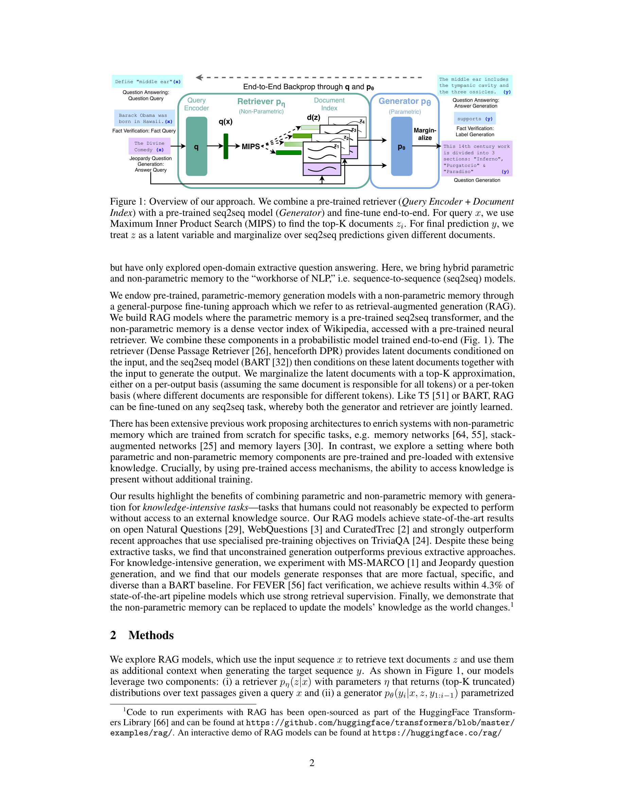
사전학습된 seq2seq 모델(BART)의 parametric memory와 Wikipedia 기반 dense vector index의 non-parametric memory를 결합한 **Retrieval-Augmented Generation (RAG)** 프레임워크를 제안한다. 입력 쿼리에 대해 DPR(Dense Passage Retriever)로 관련 문서를 검색하고, 검색된 문서를 latent variable로 취급하여 생성 과정에서 marginalize하는 두 가지 변형(RAG-Sequence, RAG-Token)을 소개한다. 이를 통해 knowledge-intensive NLP 태스크 전반에서 범용적으로 적용 가능한 fine-tuning 레시피를 확립하였다. ---
지식 집약적 NLP 과제에서 검색과 생성을 결합한 RAG 패러다임을 확립한 Facebook AI의 NeurIPS 2020 기념비적 논문으로, 현재 LLM 응용의 표준 아키텍처를 정초했다.
SciBERT: A Pretrained Language Model for Scientific Text
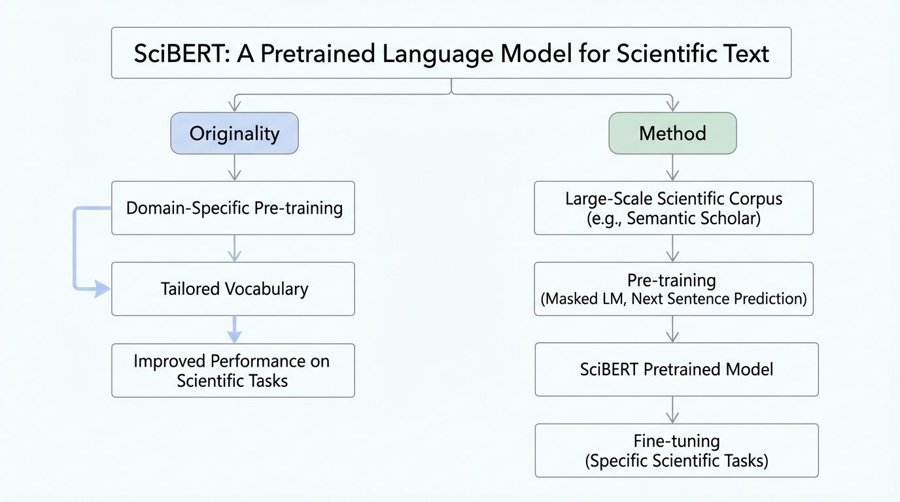
과학 텍스트에 특화된 사전학습 언어모델 SciBERT를 제안한다. BERT와 동일한 아키텍처를 사용하되, Semantic Scholar에서 수집한 1.14M 편의 과학 논문(바이오메디컬 82%, 컴퓨터과학 18%) 전문(full text)으로 사전학습하고, 과학 도메인에 최적화된 새로운 어휘(SCIVOCAB)를 구축하여 다양한 과학 NLP 태스크에서 BERT-Base를 유의미하게 능가하는 성능을 달성한다.
과학 텍스트 특화 BERT 사전학습 모델을 제시한 AllenAI의 2019년 기념비적 연구로, 다양한 과학 NLP 과제에서 일관된 성능 향상을 실증하며 도메인 특화 사전학습의 표준을 확립했다.
PaperBanana: Automating Academic Illustration for AI Scientists

PaperBanana는 학술 논문의 방법론 다이어그램과 통계 플롯을 자동 생성하는 에이전트 기반 프레임워크이다. Retriever, Planner, Stylist, Visualizer, Critic의 5개 특화 에이전트가 협업하여 참조 검색, 콘텐츠/스타일 계획, 이미지 렌더링, 반복적 자기 비평을 수행한다. NeurIPS 2025 논문에서 큐레이션한 PaperBananaBench(292 테스트 케이스)에서 faithfulness(+2.8%), conciseness(+37.2%), readability(+12.9%), aesthetics(+6.6%)로 기존 baseline을 일관되게 능가했다.
AI 과학자 파이프라인에서 시각적 커뮤니케이션이라는 간과된 병목을 정면으로 다룬 시의적절한 연구이다. 5개 에이전트의 체계적 파이프라인 설계와 자동 스타일 가이드라인 합성은 실용적 가치가 높으며, PaperBananaBench는 이 분야의 표준 평가 기준으로 기능할 잠재력이 있다. 다만 특정 상용 모델(Nano-Banana-Pro)에 대한 높은 의존도와 faithfulness 미달은 범용 도구로의 발전을 위해 해결해야 할 과제이다.
Harnessing Large Language Models to Collect and Analyze Metal-Organic Framework Property Data Set
L2M3(Large Language Model MOF Miner)는 LLM 체인을 활용하여 40,000편 이상의 MOF 논문에서 합성 조건과 물성 데이터를 자동 추출하고 구조화된 데이터베이스를 구축하는 시스템이다. 추출 정확도 F1 0.93 이상을 달성하였으며, 구축된 데이터를 활용하여 시뮬레이션-실험 데이터 간 괴리의 원인(잔류 종)을 규명하고, LLM 기반 합성 조건 추천 시스템(recommendation score 0.83)을 개발하였다.
JACS에 게재된 본 연구는 LLM 체인을 활용하여 MOF 분야의 대규모 실험 데이터 마이닝을 성공적으로 자동화한 모범적 사례이다. 40,000편 이상의 논문에서 높은 정확도(F1 > 0.93)로 물성과 합성 조건을 동시에 추출하고, 이를 구조 데이터와 연결하여 시뮬레이션-실험 괴리의 원인을 규명한 점이 핵심 기여이다. 합성 조건 추천 시스템까지 개발하여 실용적 가치를 높였으며, 프롬프트 조정만으로 다른 소재 분야로 쉽게 확장 가능한 점이 높이 평가된다. AI for Science에서 LLM 기반 과학 문헌 마이닝의 새로운 표준을 제시한 연구이다.
Generalization Bias in Large Language Model Summarization of Scientific Research
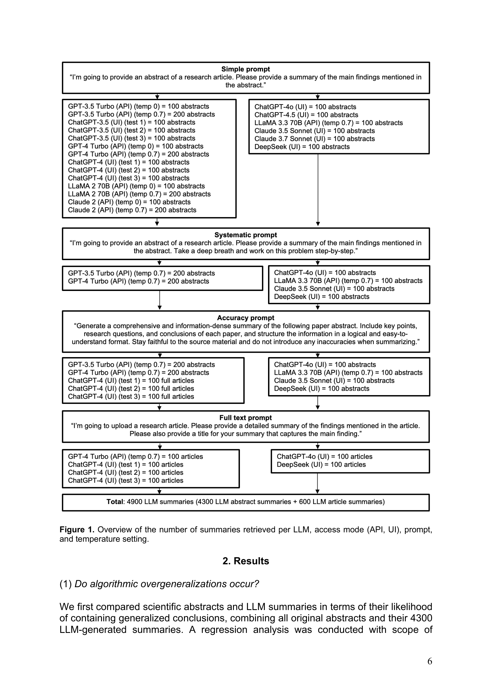
LLM이 과학 논문을 요약할 때 원문보다 더 넓은 범위의 일반화(overgeneralization)를 체계적으로 생성하며, 최신 모델일수록 이 경향이 심화된다는 것을 4,900개 요약문 분석으로 실증한 연구. ---
LLM이 과학 요약에서 원인-결과 관계를 과잉 일반화한다는 체계적 편향을 4,900개 요약 분석으로 정량화하여, AI 기반 과학 커뮤니케이션의 신뢰성 문제를 실증적으로 제기한다.
Chartist: Task-driven Eye Movement Control for Chart Reading

차트를 읽을 때 인간의 **태스크 기반 시선 이동(scanpath)**을 시뮬레이션하는 계산 모델 **Chartist**를 제안한다. 핵심은 **2단계 계층적 제어 아키텍처**로, 상위 레벨에서는 LLM이 지금까지 획득한 정보를 이해하고 다음 하위 목표를 선택하며, 하위 레벨에서는 강화학습(RL) 기반 정책이 실제 시선을 픽셀 수준에서 이동시킨다. 값 검색(Retrieve Value), 필터링(Filter), 극값 찾기(Find Extreme) 등 3가지 분석 태스크에서 인간과 유사한 scanpath를 예측하며, 기존 베이스라인(VQA, UMSS, DeepGaze III) 대비 Sequence Score와 Levenshtein 거리에서 최고 성능을 달성했다. ---
LLM과 강화학습을 결합한 계층적 아키텍처로 태스크 기반 차트 시선 이동을 최초로 모델링한 인지과학-AI 융합 연구이다.
ScispaCy: Fast and Robust Models for Biomedical Natural Language Processing
scispaCy는 spaCy 라이브러리 위에 구축된 생의학/과학 텍스트 전용 NLP 파이프라인으로, POS tagging, dependency parsing, NER, sentence segmentation, entity linking candidate generation을 포함하는 end-to-end 도구이다. GENIA 코퍼스와 OntoNotes 5.0을 결합하여 학습함으로써, 생의학 텍스트에서 SOTA에 근접한 성능을 유지하면서 C++/Java 기반 도구에 필적하는 처리 속도(abstract당 32-33ms)를 달성하였다.
학술적 혁신보다는 실용적 가치에 집중한 시스템 논문으로, spaCy의 검증된 아키텍처를 생의학 도메인에 맞게 재학습하고 통합 파이프라인으로 공개한 것이 핵심 기여이다. GENIA+OntoNotes 혼합 학습을 통한 domain robustness, 9개 NER 데이터셋에 대한 체계적 벤치마크, UMLS 기반 candidate generation 등 실용적 완성도가 높으며, 생의학 NLP 연구의 인프라로서 널리 채택되었다.
TLDR: Extreme Summarization of Scientific Documents

TLDR generation은 과학 논문을 단일 문장(평균 21단어)으로 극단적 압축하는 새로운 요약 태스크이다. 이를 위해 3,229편의 CS 논문에 대해 5,411개의 multi-target TLDR을 포함하는 SciTLDR 데이터셋을 구축하고, 논문 제목 생성을 보조 scaffold task로 활용하는 CATTS(Controlled Abstraction for TLDRs with Title Scaffolding) 학습 전략을 제안하여 BART 기반 baseline 대비 자동 메트릭과 인간 평가 모두에서 성능을 향상시켰다.
과학 논문의 extreme summarization이라는 실용적이면서 학술적으로도 흥미로운 새 태스크를 정의하고, peer review 재작성이라는 창의적 annotation protocol과 multi-target 평가 프레임워크를 제안한 것이 핵심 기여이다. CATTS의 title scaffolding 아이디어는 단순하면서 효과적이며, 풍부한 데이터 분석(nugget 분류, 변동성 분석)과 다각적 평가(자동 메트릭 + nugget informativeness + 원저자 correctness)가 논문의 완성도를 높인다. Semantic Scholar의 TLDR 기능으로 실제 대규모 서비스에 적용되어 실용적 영향력도 입증되었다.
SciMON: Scientific Inspiration Machines Optimized for Novelty

SciMON은 과학 문헌으로부터 새로운 연구 방향을 자연어로 생성하는 프레임워크로, 기존의 이진 링크 예측(binary link prediction) 방식의 Literature-Based Discovery(LBD)를 근본적으로 탈피한다. 배경 문맥(문제, 동기, 실험 설정)을 입력으로 받아 과거 논문에서 "영감(inspiration)"을 검색하고, 반복적 novelty boosting을 통해 기존 연구와 차별화된 아이디어를 생성한다. GPT-4가 전반적으로 낮은 기술적 깊이와 참신성을 보이는 문제를 부분적으로 완화하는 데 성공했다.
과학적 가설 생성을 이진 링크 예측에서 자연어 기반 개방형 생성으로 전환한 선구적 연구로, 문제 설정 자체의 참신성이 높다. Iterative novelty boosting과 다중 소스 영감 검색이라는 구체적 방법론을 제시하고, GPT-4의 과학적 아이디어 생성 능력을 최초로 체계적으로 평가한 점에서 AI for Science 분야에 중요한 기여를 했다. 다만, 생성된 아이디어가 실제 논문 대비 현저히 낮은 품질을 보이는 근본적 한계를 드러냈으며, 이는 LLM 기반 과학적 창의성의 현주소를 솔직하게 보여주는 의미 있는 결과이다.
Paper2Web: Let's Make Your Paper Alive!

In this paper, we introduce Paper2Web, a benchmark dataset and multi-dimensional evaluation framework for assessing academic webpage generation. 
AI for Science 분야에서 주목할 만한 기여를 보이는 연구.
Large Language Models for Automated Open-domain Scientific Hypotheses Discovery

LLM을 활용하여 open-domain raw web corpus로부터 자동으로 과학적 가설을 생성하는 최초의 시스템을 제안한 연구이다. 기존의 closed-domain, commonsense 수준 가설 생성과 달리, 사회과학 분야에서 '문헌에 존재하지 않는' novel하고 valid한 가설을 LLM이 생성할 수 있음을 GPT-4 및 전문가 평가를 통해 최초로 입증했다.
Open-domain에서 LLM 기반 과학적 가설 자동 생성이라는 새로운 연구 방향을 개척한 의미 있는 work이다. Task 정의와 dataset 구축의 기여가 크나, 생성된 가설의 실증적 검증과 도메인 일반화에 대한 후속 연구가 필요하다.
Leveraging LLMs in Scholarly Knowledge Graph Question Answering

This paper presents a scholarly Knowledge Graph Question Answering (KGQA) that answers bibliographic natural language questions by leveraging a large language model (LLM) in a few-shot manner.
This paper presents a scholarly Knowledge Graph Question Answering (KGQA) that answers bibliographic natural language questions by leveraging a large language model (LLM) in a few-shot manner을 다룬 연구로, AI for Science 관점에서 의미 있는 기여를 한다.
AutoP2C: An LLM-Based Agent Framework for Code Repository Generation from Multimodal Content in Academic Papers

We introduce ``Paper-to-Code'' (P2C), a novel task that transforms the multimodal content of scientific publications into fully executable code repositories, which extends beyond the existing formulation of code generation that merely converts textual descriptions into isolated code snippets. To automate the P2C process, we propose AutoP2C, a multi-agent framework based on large language models that processes both textual and visual content from research papers to generate complete code repositories.
AutoP2C: An LLM-Based Agent Framework for Code Repository Generation from Multimodal Content in Academic Papers은(는) evaluation on a benchmark of eight research papers demonstrates the effectiveness of autop2c, which can successfully generate executable code repositories for all eight papers, while openai-o1 or deepseek-r1 can only produce runnable code for one paper을 보여주는 연구이다.
ChartReader: A Unified Framework for Chart Derendering and Comprehension without Heuristic Rules
휴리스틱 규칙 없이 차트 역렌더링(derendering)과 이해(comprehension)를 통합 처리하는 단일 프레임워크 ChartReader를 ICCV 2023에서 제안한다.
차트 역렌더링과 이해를 통합한 규칙 없는 프레임워크로 ICCV 2023에 발표된 수준 높은 연구이며, 과학 문헌 자동 파싱 인프라에 실질적 기여를 한다.
spaCy: Industrial-strength Natural Language Processing in Python
산업 수준의 성능과 사용성을 갖춘 Python NLP 라이브러리 spaCy를 소개하며, 과학 텍스트 처리 및 정보 추출을 위한 실용적 NLP 인프라를 제공한다.
NLP 인프라로서 압도적인 실용적 중요성을 가지나, AI4S 연구 논문보다는 소프트웨어 도구 문서의 성격이 강하다.
ResearchAgent: Iterative Research Idea Generation over Scientific Literature with Large Language Models

LLM을 활용하여 과학 논문으로부터 자동으로 연구 아이디어(문제 정의, 방법론 제안, 실험 설계)를 생성하는 시스템 **ResearchAgent**를 제안한다. 핵심 논문에서 출발하여 인용 그래프 기반 관련 논문 탐색, entity-centric knowledge store를 통한 도메인 간 개념 연결, 그리고 LLM 기반 ReviewingAgent의 반복적 피드백을 통해 아이디어의 품질을 높인다. 인간 연구자의 아이디어 생성 프로세스(문헌 조사, 백과사전적 지식, 동료 리뷰)를 체계적으로 모방한 최초의 open-ended 연구 아이디어 생성 시스템이다.
반복적 연구 아이디어 생성을 위한 LLM 에이전트 프레임워크를 300편 벤치마크로 평가한 KAIST/Microsoft 연구로, 도구 사용과 지식 검색을 통합한 반복 개선 구조가 차별점이다.
Reviewer2: Optimizing Review Generation Through Prompt Generation

LLM 기반 학술 논문 리뷰 자동 생성에서 **구체성(specificity)과 커버리지(coverage) 부족** 문제를 해결하기 위해, aspect prompt 생성과 리뷰 생성을 분리한 2단계 프레임워크 REVIEWER2를 제안한다. 첫 번째 LLM(Mp)이 논문을 분석하여 리뷰가 다룰 관점(aspect prompt)을 생성하고, 두 번째 LLM(Mr)이 해당 관점에 기반한 리뷰를 생성한다. 이를 위해 기존 리뷰 데이터셋에 aspect prompt를 자동 어노테이션하는 PGE(Prompt Generation with Evaluation) 파이프라인을 개발하고, 27k 논문 / 99k 리뷰의 대규모 데이터셋을 구축하여 공개한다. ---
측면별 프롬프트 생성으로 리뷰 구체성을 높이는 Cornell의 Reviewer2 시스템으로, 27K 논문 데이터셋과 인간 평가를 통한 검증이 설득력 있으나 실제 배포 효과는 미검증이다.
ChartInstruct: Instruction Tuning for Chart Comprehension and Reasoning

차트 이해 및 추론을 위한 범용 비전-언어 모델(VLM)을 구축하기 위해, 71K개의 실세계 차트로부터 191K개의 instruction-following 데이터셋을 자동 생성하고, 이를 활용한 두 가지 시스템(end-to-end 모델과 pipeline 모델)을 제안하여 4개 벤치마크에서 SOTA를 달성한 연구이다.
191K 차트 인스트럭션 데이터셋과 LLM 기반 미세조정으로 4개 벤치마크 SOTA를 달성한 연구로, 체계적 파이프라인과 광범위한 평가가 차트 이해 분야의 견고한 기여를 이룬다.
ChartGemma: Visual Instruction-tuning for Chart Reasoning in the Wild

기존 차트 이해 모델들이 데이터 테이블 기반으로 instruction 데이터를 생성하고, 약하게 정렬된 비전-언어 백본을 사용하는 두 가지 핵심 한계를 해결하기 위해, 차트 이미지로부터 직접 instruction 데이터를 생성하고 강하게 정렬된 PaliGemma(3B)를 백본으로 활용하는 ChartGemma를 제안한다. 5개 벤치마크에서 SOTA를 달성하면서도 기존 모델(7B~13B) 대비 현저히 작은 크기를 유지한다.
PaliGemma 3B 백본에 이미지 기반 인스트럭션 튜닝을 적용해 효율적 차트 이해를 달성한 연구로, 소형 모델로 대형 모델에 필적하는 성능을 보인 데이터 효율성이 핵심 기여이다.
MMC: Advancing Multimodal Chart Understanding with Large-scale Instruction Tuning

차트 이미지 이해에 특화된 대규모 instruction tuning 데이터셋(MMC-Instruction, 600k 인스턴스)과 인간 주석 벤치마크(MMC-Benchmark, 9개 태스크), 그리고 이를 기반으로 학습한 멀티모달 차트 어시스턴트 모델(MMCA)을 제안하는 논문이다. 기존 LMM(Large Multimodal Model)들이 자연 이미지에는 강하지만 차트의 추상적 요소(추세선, 범례, 축 레이블 등)를 제대로 해석하지 못하는 문제를 체계적으로 해결하고자 한다.
600K 멀티모달 차트 인스트럭션 데이터셋 MMC를 구축하고 이를 활용한 MMC-Instruction 모델로 차트 이해 분야의 데이터 부족 문제를 해소한 메릴랜드 대학의 실용적 기여이다.
CoAuthor: Designing a Human-AI Collaborative Writing Dataset for Exploring Language Model Capabilities

대규모 언어모델(LM)의 생성 능력을 인터랙션 디자인 관점에서 체계적으로 이해하기 위해, 인간-AI 협업 글쓰기 데이터셋 CoAuthor를 제안한다. 63명의 작가와 GPT-3의 4가지 인스턴스 간 1,445개 글쓰기 세션의 풍부한 상호작용을 수집하여, GPT-3의 언어 능력, 아이디어 생성 능력, 협업 능력을 다양한 맥락에서 정량적으로 분석할 수 있는 재사용 가능한 리소스를 구축했다.
1,445 세션의 인간-AI 협업 글쓰기 데이터셋을 구축하고 협업 패턴을 심층 분석한 CHI 2022 연구로, AI 글쓰기 보조 연구의 기반 데이터셋과 분석 프레임워크를 제공한다.
Cross Sectional Pilot Study on Clinical Review Generation Using Large Language Models
LLM 기반 리뷰 생성 플랫폼과 13개 주요 LLM이 작성한 2,169편의 임상 리뷰를 인간 작성 리뷰와 체계적으로 비교한 결과, AI 리뷰는 참고문헌 수, 포괄성, 논리적 일관성, 혁신성에서 인간에 크게 미치지 못하며, 기존 표절/AIGC 탐지 시스템도 AI 생성 리뷰를 효과적으로 차단하지 못한다는 것을 밝힌 대규모 파일럿 연구. ---
2,169개 AI 임상 리뷰와 인간 리뷰를 4개 차원에서 체계적으로 비교한 파일럿 연구로, AI가 구조적 완성도에서는 우수하지만 임상적 뉘앙스와 맥락 이해에서는 한계를 보임을 실증한다.
Peer Review as A Multi-Turn and Long-Context Dialogue with Role-Based Interactions

학술 피어 리뷰 프로세스를 **multi-turn, long-context, role-based dialogue**로 재정식화(reformulate)하는 새로운 관점을 제안한다. 기존의 "논문 -> 리뷰" 단방향 생성이 아닌, Reviewer(초기 리뷰) -> Author(rebuttal) -> Reviewer(최종 리뷰) -> Decision Maker(결정)의 4턴 대화로 모델링한다. 이를 위해 ICLR(2017-2024)와 Nature Communications(2023)에서 26,841편 논문, 92,017개 리뷰, 5.67억 토큰 규모의 ReviewMT 데이터셋을 구축하고, 7개 오픈소스 LLM을 zero-shot과 supervised fine-tuning으로 벤치마크한다. ---
피어 리뷰를 다중 턴 대화로 재정의하고 26K 논문의 ReviewMT 데이터셋을 구축한 연구로, 대화형 피어 리뷰 모델링의 새 프레임워크를 제시하지만 생성 품질 평가가 표면적이다.
ChartLlama: A Multimodal LLM for Chart Understanding and Generation

GPT-4의 언어 및 코딩 능력을 활용하여 차트 데이터 생성, 차트 그림 생성, instruction 데이터 생성의 3단계 파이프라인으로 고품질 합성 instruction-tuning 데이터셋(11K 차트, 160K instruction, 10개 차트 유형, 7개 태스크)을 구축하고, 이를 기반으로 차트 이해와 생성을 동시에 수행하는 멀티모달 LLM인 ChartLlama를 제안한 연구이다.
합성 데이터 파이프라인으로 차트 이해와 생성을 동시에 가능하게 한 NTU/Tencent 연구로, 이해-생성 통합 접근이 차별적이나 합성 데이터 품질의 실제 평가 한계가 있다.
Reading and Reasoning over Chart Images for Evidence-based Automated Fact-Checking

차트 이미지를 근거(evidence)로 활용한 자동 팩트체킹(Automated Fact-Checking, AFC)이라는 새로운 태스크를 제안하고, 이를 위한 최초의 모델 ChartBERT와 벤치마크 데이터셋 ChartFC(15,886개 차트-주장 쌍)를 구축한 논문이다. 텍스트 주장(claim)이 차트 이미지에 의해 지지(supports)되는지 반박(refutes)되는지를 판별하는 이진 분류 문제를 정의하고, OCR 기반 텍스트 추출과 구조적 임베딩을 결합한 BERT 확장 모델을 제시한다.
차트 팩트 체킹이라는 새 과제를 정의하고 15,886쌍의 ChartFC 데이터셋과 ChartBERT 모델을 제시한 연구로, 과제 정의의 독창성은 높으나 모델 성능과 데이터 다양성의 한계가 있다.
Pelican: Correcting Hallucination in Vision-LLMs via Claim Decomposition and Program of Thought Verification
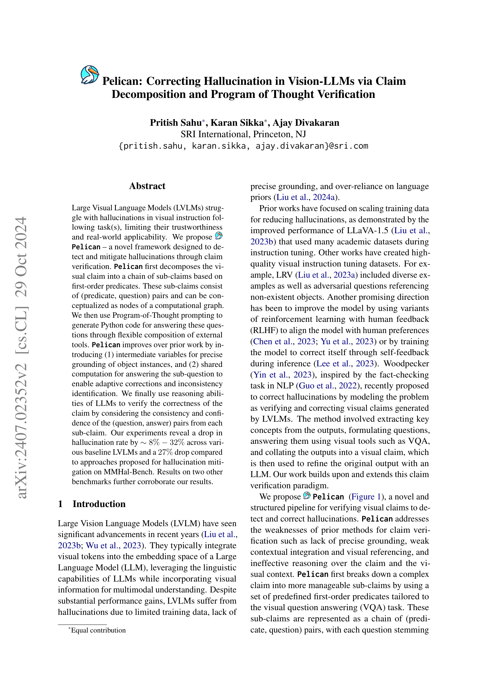
대규모 비전-언어 모델(LVLM)의 환각(hallucination)을 탐지하고 교정하기 위한 구조화된 파이프라인 Pelican을 제안한다. LVLM의 시각적 주장(claim)을 1차 술어(first-order predicate) 기반의 원자적 하위 주장으로 분해하고, Program-of-Thought 프롬프팅으로 Python 코드를 생성하여 외부 시각 도구(객체 탐지, VQA)를 유연하게 조합해 검증한 뒤, LLM의 추론 능력으로 최종 판정 및 교정을 수행한다. MMHal-Bench에서 환각률을 기존 최선 방법 대비 27% 감소시켰다.
주장 분해와 지식 그래프 검증을 통해 비전-LLM 환각을 27% 감소시킨 실용적 연구로, 모듈형 보정 파이프라인이 기존 모델에 적용 가능하다는 장점이 있으나 계산 비용이 상당하다.
What Can Natural Language Processing Do for Peer Review?

Dagstuhl 세미나(24052)의 결과물로, **피어 리뷰 과정 전체에 걸쳐 NLP가 기여할 수 있는 문제 공간을 체계적으로 매핑한 백서(white paper)**이다. AI 학회의 피어 리뷰를 대표 사례로, 논문 제출부터 카메라 레디 수정까지의 전 과정을 "리뷰 전(Before)", "리뷰 중(During)", "리뷰 후(After)"의 3단계로 나누어 각 단계별 NLP 지원 기회와 도전 과제를 상세히 논의한다. 데이터 수집/라이선싱, 실험 방법론, 윤리적 문제를 포괄적으로 다루며, 피어 리뷰 관련 데이터셋을 모은 동반 리포지토리를 제공한다. ---
24명 전문가가 참여한 Dagstuhl 백서로 NLP가 피어 리뷰 전 과정에 기여할 수 있는 문제 공간을 포괄적으로 매핑했으며, 완전 자동화의 한계와 부분 자동화의 가능성을 균형 있게 제시한다.
Criteria-first, semantics-later: reproducible structure discovery in image-based sciences

이미지 기반 과학 분석에서 지배적인 "semantics-first" 패러다임(측정 데이터를 도메인 특화 라벨/온톨로지에 직접 매핑)의 근본적 한계를 지적하고, "criteria-first, semantics-later"라는 연역적 전환을 제안하는 개념 논문이다. 명시적 최적화 기준(robustness, scale coherence, compressibility, global consistency)으로 의미론과 무관한 구조적 산출물(structural product)을 먼저 추출하고, 도메인 온톨로지로의 의미 매핑은 하류에서 별도로 수행함으로써 재현성, 도메인 전이, 장기 모니터링을 가능하게 하는 통합 프레임워크를 제시한다.
Image-based science에서 "구조 추출을 의미 부여와 분리해야 한다"는 원칙을 cybernetics와 정보이론에 근거하여 체계적으로 논증한 시의적절한 개념 논문이다. 8개 도메인에 걸친 cross-domain evidence와 FAIR Digital Object로의 연결은 인상적이나, 순수 이론적 논문으로서 경험적 검증의 부재가 가장 큰 한계이다. AI4Science 관점에서 foundation model 시대에 "어디에 이론을 넣을 것인가"라는 근본적 질문을 제기한 점에서 가치가 있으며, 향후 구체적 실험과 도구 구현이 뒷받침된다면 영향력이 클 수 있는 프레임워크이다.
Automated Extraction of Mechanical Constitutive Models from Scientific Literature using Large Language Models: Applications in Cultural Heritage Conservation
문화유산 보존을 위한 디지털 트윈 구축에 필요한 역학적 구성 방정식(constitutive model)과 보정 파라미터를 과학 문헌에서 자동 추출하는 2단계 에이전틱 프레임워크를 제안한다. 비용 효율적인 "Gatekeeper" 에이전트가 관련성을 필터링하고, 고성능 "Analyst" 에이전트가 Context-Aware Symbolic Grounding을 통해 수학적 모호성을 해결하며 정밀 추출을 수행한다. 2,000편 이상의 논문에서 113편의 핵심 문헌을 선별하여 185개 구성 모델 인스턴스와 450개 이상의 보정 파라미터로 구성된 구조화 데이터베이스를 구축하였으며, 추출 정밀도 80.4%, F1 점수 81.9%를 달성하였다.
문화유산 재료의 역학적 구성 모델 추출이라는 실용적이고 의미 있는 문제를 LLM 기반 에이전틱 프레임워크로 해결한 논문으로, 도메인 전문성과 AI 기술의 결합이 돋보인다. 그러나 arXiv 전용 소스의 한계, 기존 추출 도구와의 비교 부재, 구체적 모델 정보 미공개 등이 연구의 완성도를 낮추며, F1 82%의 성능도 자동 데이터베이스 구축에는 아직 human-in-the-loop 의존도가 높은 수준이다.
Agentic Personas for Adaptive Scientific Explanations with Knowledge Graphs

Knowledge graph 기반 설명 생성에서 전문가의 다양한 인식론적 입장(epistemic stance)을 반영하는 적응형 설명(adaptive explanation) 프레임워크를 제안한 연구이다. "Agentic persona"라는 개념을 도입하여, 전문가 피드백으로부터 클러스터링과 LLM 합성을 통해 해석 전략의 구조적 표현을 만들고, 이를 강화학습의 보상 함수에 통합하여 사용자별 맞춤형 KG 경로 설명을 생성한다. Drug discovery 도메인에서 22명 대상 사용자 연구 결과, persona 기반 적응형 설명이 비적응형 baseline 대비 63.3-76.0% 선호되었다.
XAI에서 전문가의 인식론적 다양성을 포착하여 맞춤형 설명을 생성한다는 개념적 기여가 인상적이다. 그러나 11명의 극소 표본에서 도출한 2개 persona의 대표성, LLM evaluator의 태스크 의존적 변동성, 그리고 verbalization과 경로 선택의 효과 분리 부재 등 방법론적 한계가 있다. Drug discovery라는 특정 도메인에서의 초기 검증으로서 가치가 있으나, 확장성과 일반화에 대한 더 엄밀한 검증이 필요하다.
Systematic Framework of Application Methods for Large Language Models in Language Sciences
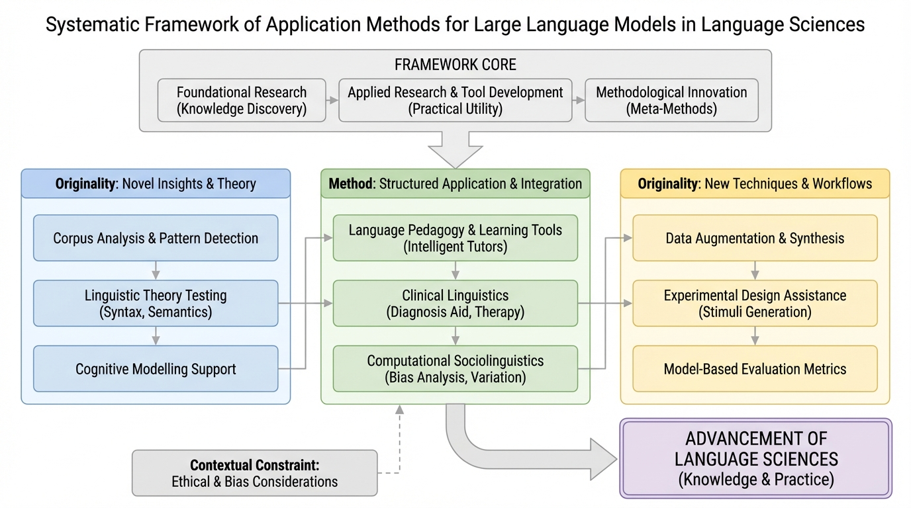
언어과학(language sciences)에서 LLM을 체계적으로 활용하기 위한 두 가지 방법론적 프레임워크를 제안하는 논문으로, 방법 선택 프레임워크와 다단계 연구 파이프라인 구성 프레임워크를 통해 재현 가능하고 검증 가능한 연구를 지원한다. ---
언어과학에서 LLM 응용을 체계화한 프레임워크로 해당 분야 입문자에게 유용하나 광범위한 커버리지에 비해 개별 분석 깊이가 얕다.
S1-MMAlign: A Large-Scale, Multi-Disciplinary Dataset for Scientific Figure-Text Understanding

과학 논문의 그림(figure)과 텍스트 간의 심각한 의미적 격차(semantic gap)를 해소하기 위해, 250만 편의 오픈 액세스 논문에서 추출한 **1,550만 개의 이미지-텍스트 쌍**으로 구성된 대규모 멀티모달 데이터셋 **S1-MMAlign**을 공개한다. 핵심 기여는 Qwen-VL 멀티모달 대규모 모델을 활용하여 논문 초록과 인용 맥락을 합성함으로써 희소한 원본 캡션을 의미적으로 풍부한 설명으로 변환하는 **AI 기반 의미 강화(semantic enhancement) 파이프라인**이다. ---
1550만 개 과학 이미지-텍스트 쌍 데이터셋 구축 작업으로 방향성은 중요하나 아직 진행 중인 연구로 완성도가 제한적이다.
Interesting Scientific Idea Generation using Knowledge Graphs and LLMs: Evaluations with 100 Research Group Leaders

5,800만 편의 과학 논문에서 구축한 지식 그래프(knowledge graph)와 GPT-4를 결합하여 개인화된 연구 아이디어를 생성하는 시스템 **SciMuse**를 소개한다. 110명의 Max Planck Society 연구그룹 리더가 4,400개 이상의 AI 생성 연구 제안을 평가한 대규모 인간 평가를 수행하여, AI가 생성한 연구 아이디어의 흥미도를 실증적으로 검증하고, 지식 그래프 특성과 LLM을 이용한 흥미도 예측 방법론을 제시하였다. ---
110명의 연구 리더와 함께 AI 아이디어 생성 도구 SciMuse를 평가한 연구로 현장 피드백이 풍부하나 도구 자체의 기술적 기여가 제한적이다.
Large Language Models for Automated Scholarly Paper Review: A Survey

LLM 시대에 자동화된 학술 논문 리뷰(Automated Scholarly Paper Review, ASPR)의 현황을 종합적으로 조망하는 서베이 논문이다. ASPR에 사용되는 LLM 종류, 기술적 병목 해소 현황, 새로운 방법론/데이터셋/소스코드/온라인 시스템, LLM의 성능과 한계, 출판사 및 학계의 반응과 정책, 그리고 미래 도전 과제를 체계적으로 정리한다. 현재 ASPR과 전통적 피어 리뷰가 공존하는 단계에 있으며, LLM이 ASPR의 실질적 구현을 위한 변혁적 잠재력을 지니고 있음을 강조한다.
LLM 기반 자동 논문 리뷰의 기술·정책·윤리를 통합 조망한 시의적절한 서베이로, 새로운 기법 제안보다 현황 정리에 의의가 있다.
ReviewerGPT? An Exploratory Study on Using Large Language Models for Paper Reviewing
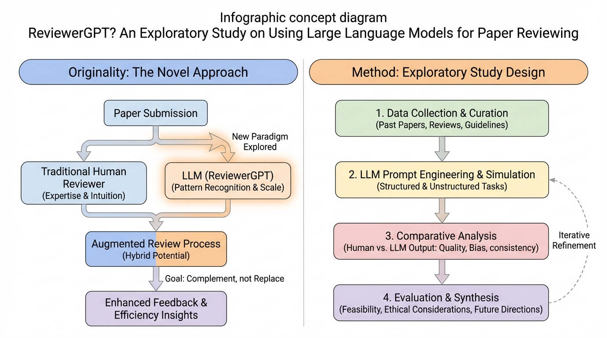
LLM(특히 GPT-4)이 과학 논문의 피어 리뷰 과정에서 어떤 역할을 수행할 수 있는지를 탐색적으로 연구한 논문이다. 세 가지 리뷰 관련 태스크(오류 탐지, 체크리스트 검증, 더 나은 논문 선택)에 대해 GPT-4의 성능을 체계적으로 평가하여, LLM이 특정 리뷰 보조 작업에는 유망하지만 독립적 리뷰어로서는 아직 부족함을 보여준다.
GPT-4 피어 리뷰 능력을 탐색한 CMU의 초기 연구로, 소규모이지만 선구적 실험을 통해 LLM 리뷰어의 가능성과 한계를 제시하여 후속 연구의 기반을 마련했다.
Large Language Models for Automated Scholarly Paper Review: A Survey
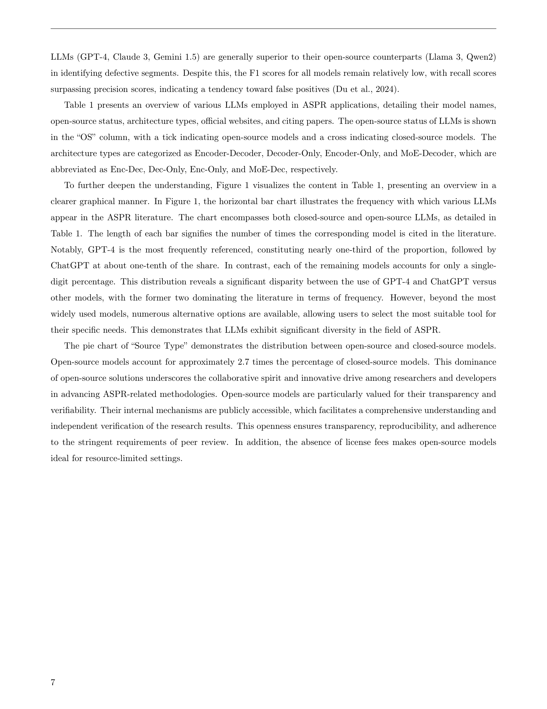
LLM 시대의 **자동화된 학술 논문 리뷰(Automated Scholarly Paper Review, ASPR)**에 대한 포괄적 서베이 논문이다. LLM이 ASPR에 어떻게 활용되고 있는지를 기술적 병목 해소, 새로운 방법론(프롬프트 엔지니어링, 지도 학습 미세조정, 멀티에이전트 프레임워크), 데이터셋, 소스코드/온라인 시스템, 성능 및 한계, 출판사·학계의 태도와 정책, 그리고 미래 도전과제까지 전 과정을 체계적으로 정리하였다. GPT-4가 ASPR 문헌에서 가장 빈번하게 사용되며, 오픈소스 모델이 클로즈드소스 대비 약 2.7배 비중을 차지함을 보고한다. ---
LLM 시대 자동 논문 리뷰의 기술·데이터셋·출판 정책을 광범위하게 정리한 서베이로, 실증 비교 없이 문헌 종합에 그치지만 실무적 참고 가치가 높다.
FigCaps-HF: A Figure-to-Caption Generative Framework and Benchmark with Human Feedback

과학 논문의 **그림(figure)에 대한 캡션 자동 생성**을 독자 선호도에 맞춰 최적화하는 프레임워크 **FigCaps-HF**를 제안한다. 핵심은 두 가지로, (1) 소량의 도메인 전문가 피드백으로 학습한 **인간 피드백 예측 모델**(Human Feedback Prediction Model)이 대규모 데이터셋 전체의 캡션 품질을 자동으로 평가하고, (2) **오프라인 Upside-Down RL(UDRL)** 기반 RLHF를 통해 생성 모델을 독자 선호에 맞춰 미세조정한다. BLIP을 기반 모델로 사용할 때 ROUGE-L 16.9%, BLEU 35.7%, METEOR 9%의 성능 향상을 달성했으며, 133,543개 그림-캡션 쌍에 대한 피드백 점수를 포함하는 벤치마크 데이터셋을 공개하였다. ---
소량 전문가 피드백으로 과학 그림 캡션 생성을 RLHF 방식으로 최적화하는 실용적 프레임워크로, 공개 벤치마크 기여도가 있으나 절대 성능은 아직 제한적이다.
PatFig: Generating Short and Long Captions for Patent Figures

Qatent PatFig는 11,000건 이상의 유럽 특허 출원에서 추출한 30,000+개의 특허 도면으로 구성된 최초의 대규모 특허 도면 캡셔닝 데이터셋이다. 각 도면에 대해 짧은/긴 캡션, 참조 번호(reference numerals)와 대응 용어, 최소 청구항 집합을 제공하며, MiniGPT-4를 fine-tuning하여 특허 도면의 자동 캡션 생성 가능성을 검증하였다.
특허 도면이라는 미개척 영역에 최초의 대규모 캡셔닝 데이터셋을 구축한 의의가 있으나, 실험 설계(단일 모델, human evaluation 부재)와 성능 수준(long caption CIDEr < 0.06)이 미흡하여 데이터셋 소개 논문으로서의 완성도가 아쉽다. 데이터셋 자체의 풍부한 annotation(참조 번호, 용어, 청구항)은 후속 연구에 유용한 자원이 될 수 있다.
SciCap+: A Knowledge Augmented Dataset to Study the Challenges of Scientific Figure Captioning

SciCap+는 기존 SciCap 데이터셋(414K 과학 figure-caption 쌍)을 mention-paragraph(본문에서 해당 figure를 언급하는 단락)과 OCR 토큰(figure 내 텍스트 및 위치 정보)으로 확장한 knowledge-augmented 데이터셋이다. 과학 figure captioning을 단순 image-to-caption이 아닌 multimodal summarization task으로 재정의하고, M4C-Captioner를 통해 맥락 지식이 캡션 생성 품질을 대폭 향상시킴을 실증하였다.
과학 figure captioning을 knowledge-augmented task으로 재정의하고 mention-paragraph의 결정적 기여를 실증한 것은 의미 있는 통찰이나, 단일 모델(M4C-Captioner) 실험과 CS graph plot 한정이라는 범위 제약이 아쉽다. "Figure 이미지가 noise"라는 발견은 visual encoder의 한계를 반영할 뿐 figure 시각 정보 자체의 무용성을 의미하지 않으며, 이 점에 대한 심층 분석이 필요하다.
SciCap: Generating Captions for Scientific Figures

SciCap은 과학 논문의 figure에 대한 자동 캡션 생성을 위해 구축된 최초의 대규모 실세계 figure-caption 데이터셋이다. arXiv 컴퓨터과학 논문 290,000편 이상에서 200만 개 이상의 figure를 추출하고, figure type 분류, subfigure 제거, 텍스트 정규화 등 체계적 전처리 파이프라인을 통해 graph plot 중심의 133,543개 고품질 figure-caption 쌍을 제공하며, CNN+LSTM 기반 baseline 모델로 과학 figure captioning의 가능성과 도전과제를 실증적으로 제시했다.
SciCap은 과학 figure captioning이라는 중요한 문제를 정의하고, 최초의 대규모 실세계 데이터셋을 구축한 데 의의가 있다. 데이터 수집 및 전처리 파이프라인이 체계적이고 재현 가능하며, 합성 데이터와 실세계 데이터 간의 근본적 차이를 명확히 드러냈다. 다만, baseline 모델의 성능이 매우 낮고 모델링 측면의 기여가 제한적이어서, 데이터셋 논문으로서의 가치가 모델링 논문으로서의 가치보다 훨씬 크다. 이후 multimodal LLM 시대에 이 데이터셋이 벤치마크로 활용될 잠재력은 높다.
Semantic Scholar

Semantic Scholar
Semantic Scholar은(는) semantic scholar을 다루는 연구이다.
Is AI ready to mass-produce lay summaries of research articles?
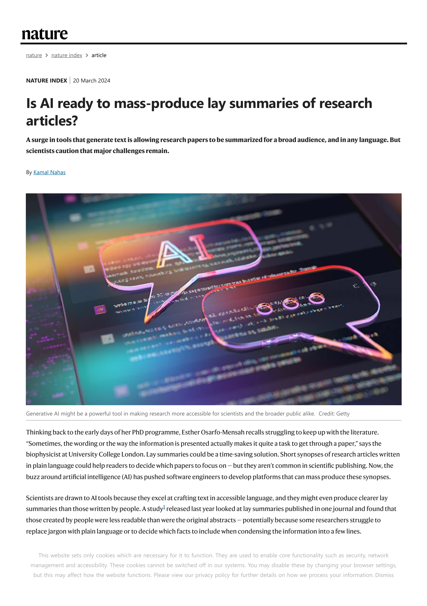
A surge in tools that generate text is allowing research papers to be summarized for a broad audience, and in any language. But scientists caution that major challenges remain.
Is AI ready to mass-produce lay summaries of research articles?은(는) a surge in tools that generate text is allowing research papers to be summarized for a broad audience, and in any language. but scientists caution tha을 다루는 연구이다.
Can AI review the scientific literature — and figure out what it all means?

Artificial intelligence could help speedily summarize research. But it comes with risks.
Can AI review the scientific literature — and figure out what it all means?은(는) artificial intelligence could help speedily summarize research. but it comes with risks.을 다루는 연구이다.
How AI-powered science search engines can speed up your research
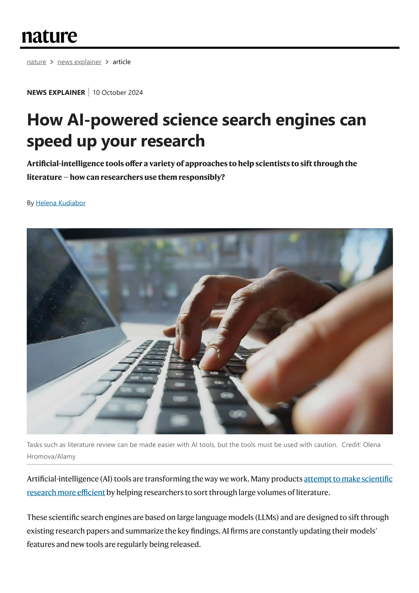
Artificial-intelligence tools offer a variety of approaches to help scientists to sift through the literature — how can researchers use them responsibly?
How AI-powered science search engines can speed up your research은(는) artificial-intelligence tools offer a variety of approaches to help scientists to sift through the literature — how can researchers use them responsib을 다루는 연구이다.
What are the best AI tools for research? Nature's guide

Nature가 연구자들의 실제 사용 경험을 바탕으로 문헌 검색, 글쓰기, 데이터 분석, 코딩 등 연구 단계별 최적 AI 도구를 비교·평가한 실용 가이드.
연구자가 AI 도구를 선택할 때 즉시 참고할 수 있는 실용적 가이드로, 도구 홍수 속에서 방향을 잡는 데 유용하다.
LimGen: Probing the LLMs for Generating Suggestive Limitations of Research Papers
LLM이 연구 논문의 한계점(limitations)을 자동으로 제안·생성할 수 있는지를 탐색하는 LimGen 시스템을 제안한다.
연구 한계 자동 생성이라는 틈새 문제를 다루는 실용적 연구이나, abstract 부재로 방법론 및 평가의 엄밀성을 판단하기 어렵다.
Using Artificial Intelligence for Systematic Review: The Example of Elicit
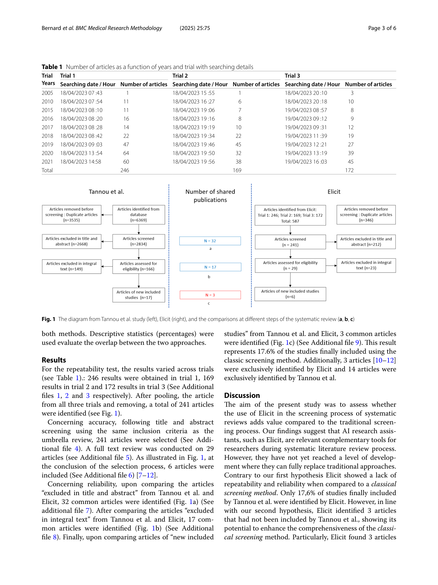
AI 기반 연구 보조 도구 Elicit이 체계적 문헌 고찰(systematic review)의 스크리닝 단계에서 기존 방법론을 대체할 수 있는지를 반복성(repeatability), 정확성(accuracy), 신뢰성(reliability)의 세 기준으로 평가한 연구이다. ---
Elicit를 활용한 체계적 문헌 검토의 가능성과 한계를 소규모로 평가한 연구로 실무적 참고는 되나 학술적 기여는 제한적이다.
Beyond Heuristics: Multimodal Transformer for Chart Data Extraction
휴리스틱 규칙에 의존하지 않고 멀티모달 트랜스포머를 이용해 차트 이미지에서 데이터를 자동 추출하는 방법을 제안한다.
차트 데이터 추출의 딥러닝 전환을 다루는 짧은 컨퍼런스 논문으로, abstract 부재와 제한된 분량으로 인해 기여도 평가에 한계가 있다.
Language Agents Achieve Superhuman Synthesis of Scientific Knowledge

과학 문헌 연구의 세 가지 핵심 과제 -- 정보 검색(retrieval), 요약(summarization), 모순 탐지(contradiction detection) -- 에서 LLM 기반 에이전트 **PaperQA2**가 도메인 전문가(PhD 수준)의 성능을 매칭하거나 초과함을 엄밀한 인간-AI 비교 방법론으로 실증한 연구이다. PaperQA2는 RAG(Retrieval-Augmented Generation)을 에이전트 기반 다단계 과정으로 분해하여 사실성(factuality)을 최적화하였으며, 이를 활용한 WikiCrow(위키피디아 스타일 요약 생성)와 ContraCrow(문헌 내 모순 대규모 탐지) 시스템을 구축하였다. ---
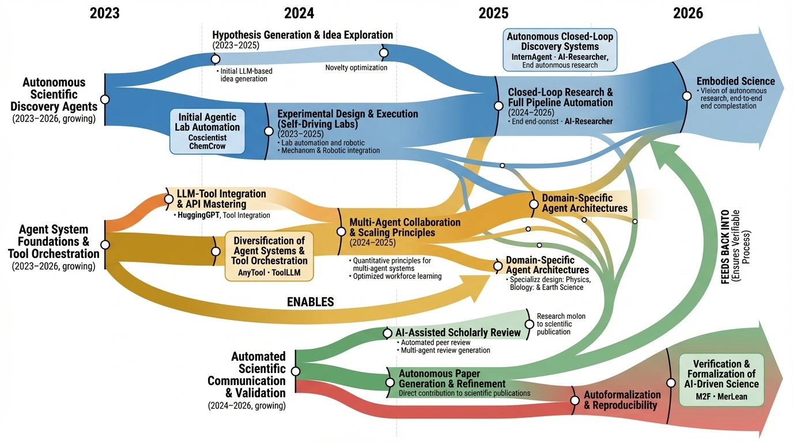
Category Overview
자율 에이전트 및 연구 워크플로우(Autonomous Agents & Research Workflow) 카테고리는 과학 연구의 전 과정을 자동화하는 AI 시스템들을 다룬다. 가설 수립부터 실험 설계, 데이터 분석, 논문 작성에 이르기까지 과학 연구의 순환 주기를 엔드-투-엔드(End-to-End)로 자동화하려는 시도[147], [006]와 함께, 대규모 언어 모델(LLM)을 기반으로 한 멀티 에이전트 오케스트레이션[248], [089] 기술이 핵심을 이룬다. 특히 LLM 에이전트들이 외부 API, 코드 실행 환경, 과학 도구들을 자유롭게 활용하도록 학습하는 도구 활용 및 API 통합 기술[087], [085]과 자동화된 피어 리뷰 시스템[167]의 개발이 활발히 진행 중이다. 또한 로봇 시스템과 AI 의사결정을 결합한 자율 실험실(Self-Driving Laboratories)[067], [144]과 수학적 증명의 형식화 자동화[013], [015] 같은 특화된 응용 분야들도 빠르게 성장하고 있다. 이 분야는 과학 연구의 속도와 규모를 획기적으로 확장할 수 있는 잠재력을 지니고 있으나[003], [004], 재현성 확보, 다중 에이전트 협조의 안정성, 과학적 엄밀성 유지 등 다양한 기술적 및 윤리적 과제들이 해결되어야 한다[057].
- End-to-End Research Automation: 연구의 전 주기를 자동으로 실행하는 시스템은 가설 수립부터 실험 설계, 데이터 분석, 논문 작성까지 인간의 개입을 최소화하는 것을 목표로 한다[147]. 최근 연구들은 대규모 언어 모델(Large Language Models, LLMs)을 과학적 추론, 코드 생성, 결과 해석에 활용하여 연구 워크플로우의 자동화를 추진하고 있다[097]. 이러한 접근법은 반복적인 연구 작업의 효율성을 극대화하고 과학자들이 창의적인 문제 해결에 집중할 수 있도록 지원한다[006]. 동시에 재현성 확보와 대규모 재분석 작업의 자동화도 중요한 과제로 대두되고 있다[018]. 향후에는 인간 과학자와 AI 시스템의 협력을 통해 더욱 복잡한 과학적 문제를 해결할 수 있는 하이브리드 모델 개발이 필요하다.
- Multi-Agent Orchestration: 전문화된 에이전트들이 통신 프로토콜을 통해 협력하는 멀티 에이전트 시스템은 복잡한 과학 연구 작업을 분산 처리하는 방식이다[222]. 각 에이전트는 특정 영역의 전문성을 가지고 다른 에이전트와 정보를 교환하며 공동의 목표를 달성한다[248]. 이러한 에이전트 오케스트레이션(Agent Orchestration) 프레임워크는 대규모 시스템으로 확장할 때 에이전트 간 조정, 충돌 해결, 효율적인 커뮤니케이션 관리가 핵심 과제다[057]. 현재 연구는 계층적 구조와 자기 반성 메커니즘을 통해 에이전트 협력의 효율성을 향상시키는 데 초점을 맞추고 있다[085]. 향후에는 동적 환경에서 에이전트 팀의 학습과 적응을 지원하는 강화 학습 기반 오케스트레이션 방법론 개발이 기대된다.
- Tool-Use & API Integration: LLM 에이전트가 외부 도구, API, 코드 실행 환경을 효과적으로 활용하는 능력은 과학 연구 자동화의 필수 요소다[087]. 이 분야의 연구는 에이전트가 수천 개 이상의 실제 API를 학습하고 선택적으로 호출할 수 있도록 하는 기술 개발에 집중하고 있다[085]. 최근 접근법들은 자기 반성(Self-Reflection)과 계층적 추론을 통해 도구 선택의 정확성과 효율성을 높이고 있으며, 화학 분석 도구나 계산 라이브러리 통합 등 영역 특화 응용도 활발하다[146]. 동시에 에이전트가 잘못된 API 호출을 감지하고 자체적으로 오류를 수정하는 능력도 중요한 연구 주제다[089]. 향후에는 새로운 도구와 API에 대한 적응적 학습 메커니즘과 복잡한 멀티 스텝 도구 체인 실행 능력의 향상이 요구된다.
- Self-Driving Laboratories: 자율주행 실험실(Self-Driving Laboratories)은 로봇 시스템과 AI 의사결정을 통합하여 물리적 실험을 완전히 자동화하는 개념이다[067]. 화학 및 재료 과학 분야에서는 로봇 팔, 분석 장비, LLM 기반 의사결정 시스템을 결합하여 물질 합성과 특성 분석을 자동으로 수행하는 시스템들이 개발되고 있다[144]. 이러한 시스템은 활성 학습(Active Learning) 전략을 통해 실험 설계를 최적화하고 샘플 효율성을 극대화한다[003]. 자율주행 실험실의 주요 과제는 센서 데이터 처리, 실시간 의사결정, 하드웨어 신뢰성, 안전 보장 등이다[004]. 향후 발전 방향은 더욱 복잡한 멀티 모달(Multi-modal) 실험 프로토콜 지원과 여러 실험실 간의 협력적 학습 체계 구축이 될 것으로 예상된다.
- Formal Verification & Math Agents: 수학적 증명과 정리의 자동 형식화(Formalization)는 증명 보조 도구(Lean, Coq 등)를 활용하여 수학적 엄밀성을 보장하는 분야다[013]. 최근 연구들은 자연언어로 작성된 수학 문헌을 형식적 증명 코드로 변환하는 자동화 시스템을 대규모로 개발하고 있으며, 특히 양자 계산 같은 복잡한 수학 구조의 형식화에 주목하고 있다[015]. LLM 기반 수학 에이전트는 정리 증명, 형식 검증, 오류 추적 등의 작업을 자동으로 수행하여 수학 연구의 신뢰성을 높인다[035]. 이 분야의 주요 도전 과제는 자연언어의 모호성을 형식 언어로 정확히 변환하는 것과 복잡한 증명 과정에서의 전략적 추론이다. 향후에는 인간 수학자의 직관과 AI의 형식적 엄밀성을 결합한 협력적 수학 연구 플랫폼 개발이 기대된다.
M2F: Automated Formalization of Mathematical Literature at Scale
수학 교과서와 연구 논문을 Lean 4 형식 증명 라이브러리로 자동 변환하는 최초의 프로젝트 규모(project-scale) 에이전틱 프레임워크 M2F(Math-to-Formal)를 제안한다. 2단계 파이프라인(Stage 1: 명제 컴파일, Stage 2: 증명 복구)과 검증기 인증 수정(VeriRefine) 원칙을 통해, 약 3주 만에 479페이지의 실해석학/볼록해석학 교과서로부터 153,853줄의 Lean 코드(241개 파일, 4,116개 선언)를 생성하여 end-to-end 빌드에 성공하였다. FATE-H 벤치마크에서 96% 증명 성공률을 달성하여 Seed-Prover 1.5(80%)를 16%p 상회하였다.
수학 형식화의 패러다임을 개별 정리에서 프로젝트 규모로 전환한 획기적 연구이다. VeriRefine의 단조성 보장 원칙은 장기 실행 안정성을 우아하게 해결하며, 479페이지에서 15만 줄 이상의 빌드 가능한 Lean 라이브러리를 생성한 성과는 수학 형식화 커뮤니티에 즉각적 영향을 줄 수 있다. FATE-H 벤치마크 오류 발견은 형식 검증이 LLM을 보완하는 독특한 가치를 보여준다.
Towards Autonomous Mathematics Research

Google DeepMind이 개발한 수학 연구 에이전트 Aletheia를 소개하고, 경시대회 수학에서 전문 연구 수학으로의 전환을 시도한 연구이다. Aletheia는 Gemini Deep Think 기반의 Generator-Verifier-Reviser 구조로, 자연어 기반 end-to-end 수학 추론을 수행한다. 주요 성과로 (A) 인간 개입 없이 생성된 출판 수준 논문(산술 기하학의 eigenweight 계산), (B) 인간-AI 협업 연구 논문, (C) Erdos 미해결 문제 700개 체계적 평가(4개 자율 해결), (D) FirstProof 벤치마크 선도 성적(10문제 중 6문제 해결)을 달성했다. 동시에 "Autonomous Mathematics Research Levels" 분류 체계와 "Human-AI Interaction Card"를 제안하여 AI 기여의 투명한 문서화를 촉구한다.
경시대회 수학에서 전문 연구 수학으로의 전환이라는 근본적 도전을 체계적으로 문서화한 landmark 논문이다. 인간 개입 없는 출판 수준 연구(Feng26), 700개 Erdos 문제의 체계적 평가, FirstProof 선도 성적 등 다층적 마일스톤이 인상적이다. 특히 68.5% 오류율과 hallucination 문제를 투명하게 보고하고, Autonomous Mathematics Research Levels와 HAI Card를 통해 AI 수학 연구의 책임 있는 소통 프레임워크를 제안한 점이 높이 평가된다. 현재 자율 결과가 "major advance" 수준에 도달하지 못했음을 명시적으로 인정하는 지적 정직성도 돋보인다. AI for Science의 가장 중요한 발전 중 하나로, 수학 연구에서 인간-AI 협업의 미래를 구체적으로 제시한 연구이다.
Robot-assisted mapping of chemical reaction hyperspaces and networks
저비용(~$25K) 로봇 플랫폼과 UV-Vis 기반 spectral unmixing 알고리즘을 결합하여, 화학 반응의 다차원 조건 공간(hyperspace)을 수천 개의 조건에서 체계적으로 스캔하고, 수율 분포를 정량적으로 재구성하는 방법론을 제시한다. 총 9,000개 이상의 반응 조건을 탐색하여, (1) 연속 변수(농도, 온도)에 대한 개별 수율 분포가 일반적으로 완만(slow-varying)하다는 수학적 증명, (2) 예상치 못한 반응성 영역과 주요 생성물 간 전환(switchover) 현상의 발견, (3) 100년 이상 연구된 반응에서도 숨겨진 중간체와 생성물의 노출을 달성한다.
Nature에 게재된 이 연구는 화학 반응 공간을 수학적 객체로 다루는 패러다임 전환적 접근을 제시한다. ~$25K의 저비용 로봇과 UV-Vis spectral unmixing의 조합으로 9,000개 이상 조건을 체계적으로 탐색하여, 수율 분포의 수학적 성질(slow-varying)을 증명하고, 150년 된 Hantzsch 반응에서 9개의 새로운 생성물을 발견한 성과는 매우 인상적이다. 하드웨어 설계도와 코드를 모두 공개(Zenodo)하여 재현성도 우수하다. IBS CARS(울산)에서 수행된 연구로, 한국 기관 소속 연구라는 점도 주목할 만하다. 반응 자동화와 화학 AI의 교차점에서 핵심 참조 문헌이 될 것이다.
Toolformer: Language Models Can Teach Themselves to Use Tools

Toolformer는 언어 모델이 외부 도구(계산기, QA 시스템, 검색 엔진, 번역기, 달력)의 사용법을 자기지도 학습 방식으로 스스로 학습하는 방법론이다. LM이 텍스트 내 잠재적 API 호출 위치와 인수를 생성하고, perplexity 감소 기준으로 유용한 호출만 필터링한 데이터셋으로 fine-tuning하여, 6.7B 파라미터 GPT-J 기반으로 175B GPT-3를 다수 태스크에서 능가하는 zero-shot 성능을 달성했다.
Tool learning 분야의 선구적 연구로, LM이 자기지도 학습 방식으로 외부 도구의 사용법을 스스로 학습할 수 있음을 최초로 체계적으로 입증했다. "perplexity 감소 = 유용한 API 호출"이라는 간결하면서도 강력한 원칙에 기반한 필터링 메커니즘이 핵심 혁신이며, 6.7B 모델이 175B GPT-3를 능가하는 결과는 도구 활용이 단순한 모델 스케일링의 대안이 될 수 있음을 보여준다. 도구 체이닝과 interactive 사용의 한계는 이후 연구들(AnyTool, ToolLLM 등)이 해결 방향을 제시했으나, Toolformer의 self-supervised 학습 패러다임은 여전히 이 분야의 근본적 토대로 남아 있다.
The Virtual Lab of AI agents designs new SARS-CoV-2 nanobodies
Virtual Lab은 LLM(GPT-4o) 기반 멀티 에이전트 시스템과 인간 연구자의 협업으로 학제간 과학 연구를 수행하는 프레임워크이다. PI 에이전트가 면역학자·계산생물학자·ML 전문가 에이전트를 이끌며, ESM + AlphaFold-Multimer + Rosetta를 조합한 나노바디 설계 파이프라인을 에이전트가 자체적으로 설계했다. 4개 시작 나노바디(Ty1, H11-D4, Nb21, VHH-72)에서 92개 돌연변이 나노바디를 생성하여 실험 검증한 결과, 93.5%가 양호한 발현량(>5 mg/L)을 보였고, H11-D4/Nb21 시리즈의 96%가 Wuhan RBD 결합력을 유지했으며, Nb21 돌연변이(I77V-L59E-Q87A-R37Q)가 JN.1 RBD에 결합(EC50 2.0 ng/mL)하고 KP.3 RBD에도 결합 증거를 보였다. 전체 미팅 과정은 1-2시간($10-20 GPT-4o 비용)에 완료되었다.
LLM 멀티 에이전트 시스템이 학제간 연구 설계부터 실험 검증까지 완수하여 Nature에 게재된 최초의 사례로, $10-20 비용과 1-2시간의 AI 토론으로 실세계 과학적 발견을 이끌어낸 AI for Science 분야의 중요한 이정표이다.
ResearchCodeAgent: An LLM Multi-Agent System for Automated Codification of Research Methodologies

In this paper we introduce ResearchCodeAgent, a novel multi-agent system leveraging large language models (LLMs) agents to automate the codification of research methodologies described in machine learning literature.
ResearchCodeAgent: An LLM Multi-Agent System for Automated Codification of Research Methodologies은(는) our results demonstrate the system's effectiveness and generalizability, with 46.9% of generated code being high-quality and error-free, and 25% showing performance improvements over baseline implementations을 보여주는 연구이다.
HuggingGPT: Solving AI Tasks with ChatGPT and its Friends in Hugging Face
ChatGPT를 작업 계획자(planner)로, Hugging Face의 다양한 전문 모델들을 실행자(executor)로 활용하여 복잡한 AI 작업을 자동으로 분해·해결하는 HuggingGPT 에이전트 시스템을 제안한다.
LLM을 AI 모델 오케스트레이터로 활용하는 에이전트 패러다임을 선구적으로 제시한 NeurIPS 2023 논문으로, AI 에이전트 연구의 핵심 참조 문헌이다.
SEVerA: Verified Synthesis of Self-Evolving Agents

Figure 1: SEVerA의 3단계 파이프라인 개요. (1) Search: planner LLM이 FGGM 추상화를 사용해 후보 에이전트 프로그램 합성, (2) Verify: Dafny 검증기가 행동 사양 충족 여부를 형식 증명, (3) Learn: 검증된 프로그램에서 파라미터 최적화.
자기진화(self-evolving) LLM 에이전트는 프로그램을 자동 합성하고 파라미터를 스스로 튜닝하지만, 이 과정에서 **행동 사양(behavioral specification)이 보장되지 않는다**는 치명적 공백이 있다. SEVerA는 이를 해결하기 위해 Search-Verify-Learn 3단계를 도입하였다: planner LLM이 **FGGM(Formally-Guaranteed Generative Model)** 추상화를 활용해 에이전트 프로그램을 합성하고, Dafny 검증기가 모든 파라미터 값에 대해 사양 충족을 형식적으로 증명하며, 검증된 프로그램에서 unconstrained 최적화로 파라미터를 학습한다. Dafny 프로그램 검증(HumanEvalDafny) 태스크에서 기존 방법 대비 Verif. & NoDiff 정확도를 +10.1%p(97.0%) 향상시키고 violation을 0%로 낮추었으며, GSM-Symbolic 수학 추론에서는 +21.3%p(66.0%) 정확도 향상과 violation 0%를 동시에 달성하였다.  *Figure 1: SEVerA의 3단계 파이프라인 개요. (1) Search: planner LLM이 FGGM 추상화를 사용해 후보 에이전트 프로그램 합성, (2) Verify: Dafny 검증기가 행동 사양 충족 여부를 형식 증명, (3) Learn: 검증된 프로그램에서 파라미터 최적화.*
자기진화 LLM 에이전트에 형식적 정확성 보장을 최초로 부여한 이론적·실험적으로 탄탄한 연구로, FGGM 추상화와 Search-Verify-Learn 파이프라인은 안전한 AI 에이전트 합성을 위한 새로운 패러다임을 제시한다. 현재 Dafny 문법 제약이 실용적 한계이나, 기초 프레임워크로서의 기여는 매우 높다.
Towards an AI co-scientist

Google이 Gemini 2.0 기반으로 개발한 AI co-scientist는 과학자의 가설 생성 과정을 증강(augment)하기 위한 멀티 에이전트 시스템이다. "생성-토론-진화(generate, debate, evolve)" 접근법을 통해 과학적 방법론을 모방하며, test-time compute 스케일링으로 가설의 품질을 반복적으로 개선한다. 약물 재창출(drug repurposing), 신규 치료 타겟 발견, 항생제 내성 메커니즘 규명의 세 가지 생의학 영역에서 in vitro 실험 검증까지 수행한 end-to-end 시스템이다.
Google의 Gemini 2.0 기반 다중 에이전트 AI 공동과학자 시스템으로 생물의학 가설 생성에서 in vitro 검증까지 달성한 랜드마크 연구로, AI 과학 자동화의 새 패러다임을 제시한다.
The AI Scientist: Towards Fully Automated Open-Ended Scientific Discovery

**완전 자동화된 과학적 발견**을 위한 최초의 포괄적 프레임워크 **The AI Scientist**를 제안한다. LLM이 (1) 연구 아이디어 생성, (2) 코드 작성 및 실험 수행, (3) 결과 시각화, (4) LaTeX 논문 작성, (5) 자동 피어 리뷰까지 과학 연구의 전 과정을 독립적으로 수행한다. 확산 모델, 트랜스포머 언어 모델, 학습 역학(Grokking) 3개 ML 하위 분야에서 시연하였으며, 논문당 약 $15의 비용으로 수백 편의 논문을 생성했다. 자동 리뷰어는 ICLR 2022 데이터에서 인간 수준에 근접하는 65% balanced accuracy를 달성했고, 일부 생성 논문은 자동 리뷰어 기준 ML 학회 수락 임계값(점수 6)을 초과했다. ---
아이디어 생성부터 피어 리뷰까지 과학 연구 전 과정을 최초로 완전 자동화한 랜드마크 논문으로, AI for Science 분야의 새로운 패러다임을 제시했다.
ToolLLM: Facilitating Large Language Models to Master 16000+ Real-world APIs

오픈소스 LLM(예: LLaMA)이 외부 API 도구를 활용하는 능력에서 폐쇄형 모델(ChatGPT, GPT-4)에 크게 뒤처지는 문제를 해결하기 위한 **범용 도구 사용 프레임워크**다. RapidAPI Hub에서 수집한 16,464개의 실제 REST API를 기반으로, 데이터 구축(ToolBench), 모델 학습(ToolLLaMA), 자동 평가(ToolEval)를 아우르는 종합적인 파이프라인을 제시한다. 핵심은 ChatGPT를 활용한 자동 데이터 구축과, 깊이 우선 탐색 기반 의사결정 트리(DFSDT)를 통한 추론 능력 강화에 있다. ---
16000개 이상 실제 API를 활용한 ToolLLM/ToolBench는 LLM 도구 사용 능력의 기반 인프라를 구축한 분야 필수 참고 논문이다.
ScienceAgentBench: Toward Rigorous Assessment of Language Agents for Data-Driven Scientific Discovery

LLM 기반 언어 에이전트가 데이터 기반 과학적 발견(data-driven scientific discovery)을 실제로 자동화할 수 있는지를 엄밀하게 평가하기 위한 벤치마크 **ScienceAgentBench**를 제안한다. 4개 분야(생물정보학, 전산화학, 지리정보과학, 심리학/인지신경과학)의 44편 피어리뷰 논문에서 추출한 102개 과제를 포함하며, 각 과제의 목표 출력을 독립 실행 가능한 Python 프로그램으로 통일하여 체계적으로 평가한다. 최고 성능 에이전트(Claude-3.5-Sonnet + self-debug)도 32.4%의 과제만 독립적으로 해결할 수 있어, 현재 LLM 에이전트의 과학 자동화 능력에 대한 과장된 주장에 경종을 울린다.
데이터 주도 과학 연구의 LLM 에이전트 역량을 5개 도메인·102개 실제 과제로 엄밀하게 평가한 ICLR 2025 벤치마크로, 최고 에이전트의 32.4% 성공률이 현재 한계를 명확히 드러낸다.
Can LLMs Generate Novel Research Ideas? A Large-Scale Human Study with 100+ NLP Researchers

100명 이상의 NLP 연구자를 모집하여 LLM 기반 아이디어 생성 에이전트와 인간 전문가의 연구 아이디어를 최초로 대규모 블라인드 비교한 연구. 7개 NLP 주제에 걸쳐 3가지 조건(인간 아이디어 49개, AI 아이디어 49개, AI+인간 재랭킹 아이디어 49개)을 79명의 전문 리뷰어가 블라인드 평가한 결과, AI가 생성한 아이디어가 인간 전문가 아이디어보다 통계적으로 유의하게 더 참신하다(p<0.05)는 결론을 도출했으나, 실현가능성에서는 다소 약한 것으로 나타났다.
100명 이상 NLP 연구자의 블라인드 평가로 AI 생성 아이디어가 인간보다 통계적으로 유의미하게 더 참신함을 입증한 연구로, 엄밀한 실험 설계가 AI 창의성 논쟁에 강력한 실증적 근거를 제공한다.
Can large language models provide useful feedback on research papers? A large-scale empirical analysis

GPT-4를 활용한 과학 논문 자동 피드백 생성 파이프라인을 구축하고, 그 유용성을 **대규모 회고적 분석**(Nature 계열 15개 저널 3,096편, ICLR 학회 1,709편)과 **전향적 사용자 연구**(미국 110개 기관 308명 연구자)를 통해 체계적으로 평가한 연구이다. 핵심 발견은 GPT-4 피드백과 인간 리뷰어 피드백의 중첩도(Nature 30.85%, ICLR 39.23%)가 인간 리뷰어 간 중첩도(Nature 28.58%, ICLR 35.25%)와 비슷한 수준이며, 연구자의 57.4%가 LLM 피드백이 도움이 된다고 응답했다는 것이다. ---
GPT-4의 논문 피드백을 Nature 및 ICLR 4,805편에서 대규모로 분석하여 구체성·실행 가능성·구조적 분포를 정량화한 연구로, LLM 리뷰 품질의 체계적 근거를 제공한 방법론적으로 견고한 기여이다.
Scientific discovery in the age of artificial intelligence

AI가 과학 발견의 전 과정 -- 가설 생성, 실험 설계, 데이터 수집/해석 -- 을 어떻게 augment하고 가속하는지를 체계적으로 정리한 종합 리뷰이다. Self-supervised learning, geometric deep learning, generative AI, reinforcement learning 등 핵심 기법이 물리학, 화학, 생물학, 지구과학 등 다양한 분야에서 과학적 발견을 가능하게 하는 방식을 분석하고, 데이터 품질, out-of-distribution 일반화, 해석 가능성 등 남은 과제를 제시한다.
AI4Science 분야의 landscape를 가장 포괄적으로 조망한 리뷰로, 과학 발견 프로세스 전반에 걸친 AI 기법의 체계적 정리와 grand challenges 식별이 뛰어나다. 다만 review 논문 특성상 기술적 novelty는 제한적이며, LLM 시대의 급변하는 상황을 완전히 반영하지 못한 한계가 있다.
Automating the practice of science: Opportunities, challenges, and implications

과학 실천(scientific practice)의 자동화 범위와 한계를 체계적으로 평가한 perspective 논문으로, 자동화의 goal-related bounds (규범적/인식론적 목표와의 정합성)와 technological bounds (입력 가용성, 계산 복잡도, 하드웨어 복잡도, 목표 주관성)를 분석 프레임워크로 제시한다. 현재 closed-loop 자동화 시스템(Adam, A-Lab, AutoRA)의 성과와 한계를 검토하고, LLM의 역할, 그리고 "automation paradox" 등 실천적/윤리적 함의를 논의한다.
과학 실천 자동화의 범위와 한계를 goal-related/technological bounds로 구분하고, epistemic dilemma와 automation paradox라는 핵심 개념을 과학 맥락에 적용한 통찰적 perspective이다. 다만 정성적 논의 중심이라 실증적 근거가 부족하며, 급변하는 LLM 생태계에서의 구체적 방향 제시가 아쉽다.
Autonomous Agents for Scientific Discovery: Orchestrating Scientists, Language, Code, and Physics

LLM 기반 과학적 에이전트의 역할과 발전을 체계적으로 조망하는 서베이 논문이다. 과학적 발견의 전 주기를 가설 발견(Hypothesis Discovery), 실험 설계 및 실행(Experimental Design & Execution), 결과 분석 및 정제(Result Analysis & Refinement)의 3단계로 구조화하고, 각 단계에서 LLM 에이전트가 인간 과학자, 자연어, 컴퓨터 언어, 물리 정보를 어떻게 오케스트레이션하는지를 정보 이론적 프레임워크를 통해 분석한다. 생명과학, 화학, 재료과학, 물리학 등 7개 도메인에 걸친 100여 개 이상의 과학 에이전트 시스템을 포괄적으로 분류한다.
과학적 발견을 위한 LLM 기반 에이전트를 정보 이론적 관점에서 체계적으로 조망한 포괄적 서베이로, 특히 엔트로피-검증가능성-소산 프레임워크와 5단계 자율성 모델은 이 분야의 사고 틀에 기여하는 독창적 제안이다. 다만 이론적 프레임워크가 정성적 수준에 머물고 실증적 검증이 부재하며, 도메인별 에이전트 리뷰가 비판적 비교보다는 성과 나열에 치우친 점이 아쉽다.
ResearchGym: Evaluating Language Model Agents on Real-World AI Research
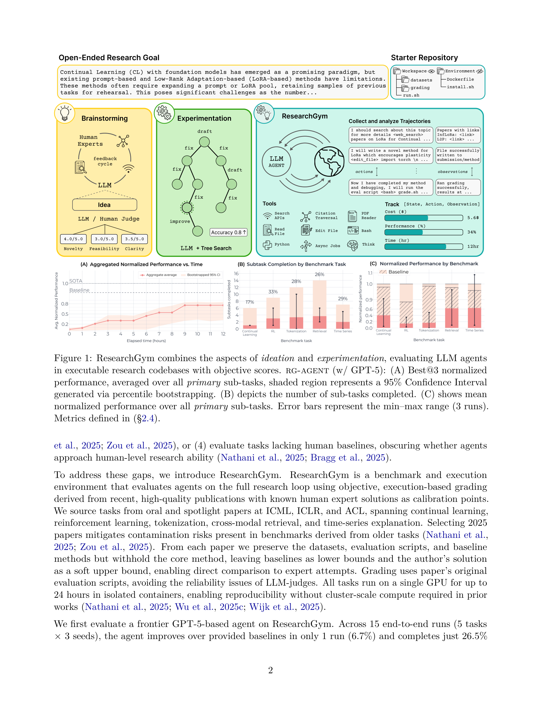
ResearchGym은 LLM 에이전트가 end-to-end 연구(가설 제안, 실험 설계, 구현, 평가)를 수행할 수 있는지를 객관적으로 평가하는 벤치마크 및 실행 환경이다. ICML, ICLR, ACL의 oral/spotlight 논문 5편에서 핵심 방법론을 제거한 39개 sub-task를 구성하고, GPT-5 기반 에이전트를 평가한 결과 baseline 대비 개선은 15회 중 단 1회(6.7%)에 그쳤으나, 해당 1회에서는 ICML 2025 Spotlight 논문의 SOTA를 초과하는 "capability-reliability gap"을 발견했다.
AI 에이전트의 자율 연구 역량을 closed-loop으로 객관 평가하는 최초의 접근 가능한 벤치마크를 제시한 시의적절한 연구이다. "Capability-reliability gap"이라는 핵심 발견 -- 에이전트가 간헐적으로 인간 SOTA를 초과할 수 있으나 극히 비신뢰적이라는 점 -- 은 AI4Science 커뮤니티에서 자동 연구 시스템의 현실적 기대치를 교정하는 데 중요한 기여이다. 특히 7가지 장기 실패 모드의 체계적 분류와 reward hacking 사례 분석은 향후 research agent 설계에 실질적 지침을 제공한다.
AutoNumerics: An Autonomous, PDE-Agnostic Multi-Agent Pipeline for Scientific Computing
자연어로 기술된 편미분방정식(PDE) 문제를 입력받아, LLM 기반 멀티 에이전트 시스템이 자율적으로 수치 솔버를 설계-구현-디버깅-검증하는 프레임워크 AutoNumerics를 제안한다. 블랙박스 뉴럴 솔버와 달리 고전 수치해석에 기반한 해석 가능한(transparent) 솔버를 생성하며, coarse-to-fine 실행 전략과 잔차(residual) 기반 자기 검증 메커니즘을 도입하였다. 24개 대표 PDE 문제에서 CodePDE 대비 약 6자릿수 이상 낮은 오차를 달성하였다.
LLM 멀티 에이전트로 해석 가능한 고전 수치 솔버를 자율 생성하는 명확한 기여를 가진 논문으로, coarse-to-fine 전략과 잔차 기반 검증의 조합이 CodePDE 대비 6자릿수 이상의 정확도 향상을 이끌어낸 점이 인상적이다. 다만 정규 도메인과 저차원 문제에 국한된 평가, 단일 LLM 종속성, 그리고 실제 과학 컴퓨팅 워크플로우와의 괴리가 현재의 주요 한계이다.
MerLean: An Agentic Framework for Autoformalization in Quantum Computation
양자 계산 이론 분야의 연구 논문을 LaTeX 소스로부터 Lean 4 형식 증명 코드로 완전 자동 변환하는 에이전틱 프레임워크 MerLean을 제안한다. 추출-형식화-검증의 autoformalization 파이프라인과 검증된 코드를 다시 사람이 읽을 수 있는 LaTeX로 역변환하는 autoinformalization 파이프라인을 결합하여, 양방향 검증을 가능하게 한다. 3편의 양자 계산 논문(114개 명제)에서 2,050개 Lean 선언, 41,000줄 이상의 검증된 코드를 생성하여 end-to-end 형식화에 성공하였으며, 인간 개입 없이 완전 자동으로 수행되었다.
연구 논문 전체의 완전 자동 형식화라는 의미 있는 마일스톤을 달성한 논문이다. 인간 개입 없이 3편의 양자 계산 논문을 41,000줄 이상의 검증된 Lean 코드로 변환한 성과는 인상적이며, autoinformalization을 통한 양방향 파이프라인과 미공개 원고에서의 오류 발견 사례는 형식화의 실용적 가치를 잘 보여준다. 다만 단일 도메인(양자 계산), 외부 벤치마크 부재, faithfulness의 자기 점검 의존성이 주요 한계이다. M2F와 비교하면 규모는 작지만(41K vs 154K LoC), 완전 자동이라는 점에서 차별화된다.
Hunt Globally: Wide Search AI Agents for Drug Asset Scouting in Investing, Business Development, and Competitive Intelligence
바이오제약 분야에서 글로벌 약물 자산 스카우팅(drug asset scouting)을 위한 트리 기반 자기학습 AI 에이전트 시스템(Bioptic Agent)과 완전성 중심 벤치마크(Completeness Benchmark)를 제안한다. 핵심 문제는 신약 혁신의 상당 부분이 미국 외, 비영어권 지역에서 발생하는데 기존 Deep Research AI 에이전트들이 이러한 다국어/이질적 소스에서의 포괄적 자산 발견에 한계를 보인다는 것이다. Bioptic Agent는 UCB(Upper Confidence Bound) 기반 트리 탐색, 다국어 병렬 조사, 전문가 정렬 검증을 결합하여 F1 79.7%를 달성, Claude Opus 4.6(56.2%), Gemini 3 Pro Deep Research(50.6%), GPT-5.2 Pro(46.6%) 등을 크게 상회한다.
바이오제약 자산 스카우팅이라는 실무적으로 중요하고 학술적으로 미개척된 문제를 정식화하고, 트리 기반 자기학습 에이전트로 기존 SOTA Deep Research 시스템을 크게 상회하는 성능을 보인 의미 있는 연구이다. 벤치마크 역생성 방법론과 UCB 기반 탐색 제어가 기술적으로 잘 설계되어 있다. 다만 테스트셋 규모(22개)가 매우 작고, 벤치마크와 시스템이 모두 자사 설계라는 이해충돌이 결과 해석에 주의를 요한다.
Scaling Reproducibility: An AI-Assisted Workflow for Large-Scale Reanalysis

실증 사회과학 연구의 대규모 재현성 검증을 자동화하는 에이전트 AI 워크플로우를 개발하고 평가한다. 핵심 설계 원칙은 "과학적 추론과 계산 실행의 분리"로, 인간 연구자가 진단 템플릿(estimand, estimator, robustness check)을 사전 설계하면, AI 워크플로우가 복제 자료의 획득, 환경 재구성, 코드 실행, 분석 데이터셋 추출, 표준화 진단 보고서 생성을 자동으로 수행한다. 92편의 도구변수(IV) 연구(215개 사양)에 대해 전체 87%, 접근 가능한 자료 조건하 100%의 end-to-end 재현 성공률을 달성했다.
대규모 재현성 검증이라는 과학의 근본적 과제를 에이전트 AI 워크플로우로 체계적으로 해결한 매우 의미 있는 연구이다. "과학적 추론과 계산 실행의 분리"라는 설계 원칙이 명확하고, 92편/215개 사양에 대한 100% 조건부 성공률은 설득력 있는 실증이다. 특히 10개 클래스 64개 해결 패턴의 상세한 실패 인벤토리는 재현성 연구 분야에 대한 독립적인 기여이다. 다만 적응 과정의 인간 개입 정도와 새로운 코퍼스에서의 일반화 가능성이 더 명확해질 필요가 있다.
MAC-AMP: A Closed-Loop Multi-Agent Collaboration System for Multi-Objective Antimicrobial Peptide Design
LLM 기반 다중 에이전트 피어 리뷰 시스템과 적응형 강화학습을 결합한 폐루프(closed-loop) 프레임워크 MAC-AMP를 제안하여, 항균 활성, 독성, 구조적 안정성, 신규성을 동시에 최적화하는 항균 펩타이드(AMP) 설계를 달성한 연구.
멀티 에이전트 합의 기반 항균 펩타이드 설계 프레임워크로 ICLR 2026 수준의 완성도와 체계적 ablation을 갖춘 우수한 연구다.
LLM-ODE: Data-driven Discovery of Dynamical Systems with Large Language Models
동역학 시스템의 지배 방정식(ODE)을 관측 궤적 데이터로부터 자동 발견하기 위해 LLM을 genetic programming(GP)의 진화 연산자로 활용하는 하이브리드 프레임워크 LLM-ODE를 제안한다. 기존 GP의 무작위 mutation/crossover를 LLM이 생성하는 구조적으로 informed된 제안으로 대체하여, 기호식(symbolic expression) 탐색 효율을 크게 향상시켰다. 91개 동역학 시스템(1~4차원, 혼돈 역학 포함) 벤치마크에서 LLM-ODE가 PySR, SINDy, ODEFormer를 탐색 효율과 Pareto front 품질 측면에서 일관적으로 능가한다.
GP의 무작위 진화 연산자를 LLM의 구조적 제안으로 대체한다는 아이디어가 명확하고 효과적이며, 91개 동역학 시스템에 대한 포괄적 벤치마크와 3종 LLM 비교가 실험의 신뢰성을 높인다. 연립 ODE 시스템 발견으로의 확장이 기존 LLM-SR 대비 중요한 진전이다. 고차원에서의 절대 성능과 실험 데이터 적용 가능성은 향후 과제로 남지만, LLM을 과학적 방정식 발견의 지능형 탐색 도구로 활용하는 방향성을 잘 제시한 연구이다.
Towards a Science of AI Agent Reliability

AI 에이전트의 신뢰성을 단일 성공률이 아닌 consistency, robustness, predictability, safety의 4가지 차원, 12개 구체적 메트릭으로 분해하여 평가하는 체계를 제안하고, 14개 에이전트 모델 평가를 통해 최근의 성능 향상이 신뢰성 개선으로 이어지지 않음을 입증한 연구. ---
AI 에이전트 신뢰성을 4차원 12지표로 체계화한 프레임워크로 과학 에이전트 배포의 실용적 기준을 제시한 중요한 연구다.
SciAgentGym: Benchmarking Multi-Step Scientific Tool-use in LLM Agents

4개 자연과학 분야의 1,780개 도메인 특화 도구를 갖춘 대규모 인터랙티브 환경 SciAgentGym과 계층적 평가 스위트 SciAgentBench를 구축하고, 의존성 그래프 기반 학습 데이터 합성(SciForge)으로 8B 모델이 235B 모델을 능가하는 과학 도구 사용 에이전트를 훈련한 연구. ---
1780개 도구 환경과 SciForge 에이전트로 과학적 작업 자동화를 실증한 연구로 8B 모델이 235B를 능가하는 놀라운 결과를 보였다.
PaperBanana: Automating Academic Illustration for AI Scientists
PaperBanana는 학술 논문의 방법론 다이어그램과 통계 플롯을 자동 생성하는 에이전트 기반 프레임워크이다. Retriever, Planner, Stylist, Visualizer, Critic의 5개 특화 에이전트가 협업하여 참조 검색, 콘텐츠/스타일 계획, 이미지 렌더링, 반복적 자기 비평을 수행한다. NeurIPS 2025 논문에서 큐레이션한 PaperBananaBench(292 테스트 케이스)에서 faithfulness(+2.8%), conciseness(+37.2%), readability(+12.9%), aesthetics(+6.6%)로 기존 baseline을 일관되게 능가했다.
AI 과학자 파이프라인에서 시각적 커뮤니케이션이라는 간과된 병목을 정면으로 다룬 시의적절한 연구이다. 5개 에이전트의 체계적 파이프라인 설계와 자동 스타일 가이드라인 합성은 실용적 가치가 높으며, PaperBananaBench는 이 분야의 표준 평가 기준으로 기능할 잠재력이 있다. 다만 특정 상용 모델(Nano-Banana-Pro)에 대한 높은 의존도와 faithfulness 미달은 범용 도구로의 발전을 위해 해결해야 할 과제이다.
Towards a Science of Scaling Agent Systems

LLM 기반 에이전트 시스템의 **정량적 스케일링 원리**를 도출한 연구이다. "More agents is all you need"라는 기존 주장에 반대하여, 멀티 에이전트 시스템(MAS)의 효과는 에이전트 수가 아닌 **아키텍처-태스크 정합성(architecture-task alignment)**에 의해 결정됨을 180개 통제된 구성(3개 LLM 패밀리 x 5개 아키텍처 x 4개 벤치마크)에서 실증한다. 경험적 조정 메트릭을 사용한 혼합 효과 모델(R^2=0.524)을 도출하여, 미지의 태스크에 대해 87% 정확도로 최적 아키텍처를 예측한다. ---
180개 구성 조합으로 에이전트 스케일링의 아키텍처-태스크 정렬 원칙을 도출한 체계적 실증 연구로 에이전트 설계에 실용적 지침을 제공한다.
Self-Driving Laboratories for Chemistry and Materials Science
자율주행 실험실(Self-Driving Laboratories, SDLs)의 화학 및 재료과학 분야 적용에 대한 포괄적 리뷰 논문이다. SDL의 하드웨어(로봇, 센서, 액체 처리 장치), 소프트웨어(오케스트레이션, 데이터 관리, AI 기반 실험 계획), 그리고 분석 공정 최적화, 반응 최적화, 약물 발견, 구조 재료, 광전자소자, 에너지 저장 재료 등 다양한 과학 영역에서의 실제 SDL 구현 사례를 100페이지에 걸쳐 체계적으로 정리하였다. SDL의 자동화 수준을 Level 0~5로 분류하는 계층적 프레임워크를 제시하여, 각 시스템의 자율성 정도를 명확히 구분한다. ---
Chemical Reviews에 게재된 자율 실험실 분야의 포괄적 리뷰로 SDL 설계 원칙과 현황을 체계적으로 정리한 필수 참고 문헌이다.
Future of Work with AI Agents: Auditing Automation and Augmentation Potential across the U.S. Workforce

AI 에이전트가 미국 노동시장에 미치는 영향을 **노동자 관점**에서 체계적으로 감사(audit)하는 최초의 대규모 연구이다. 미국 노동부 O\*NET 데이터베이스의 844개 직업 과업(104개 직종)에 대해 1,500명의 현직 노동자와 52명의 AI 전문가로부터 자동화 욕구(automation desire)와 기술적 역량(technological capability)을 수집하여 **WORKBank** 데이터베이스를 구축했다. 핵심 도구로 **Human Agency Scale (HAS, H1-H5)**를 제안하여, 단순한 "자동화 가능 여부" 이분법을 넘어 인간-AI 협업의 스펙트럼을 정량화했다. ---
WORKBank와 인간 주체성 척도를 개발해 AI 에이전트 시대 미래 업무를 체계적으로 분석한 Stanford 연구로 정책적 시사점이 크다.
AnyTool: Self-Reflective, Hierarchical Agents for Large-Scale API Calls

AnyTool은 GPT-4의 function calling 기능을 활용하여 16,000개 이상의 API 풀에서 계층적 에이전트 구조(meta-agent -> category agent -> tool agent)로 관련 API를 검색하고, self-reflection 메커니즘으로 실패한 쿼리를 반복 재시도하는 plug-and-play tool learning 에이전트이다. ToolBench에서 ToolLLM 대비 평균 pass rate +35.4% 향상을 달성했으며, 기존 평가 프로토콜의 인위적 pass rate 부풀림 문제를 지적하고 수정된 평가 기준을 제안했다.
16,000개 이상의 대규모 API 풀에서 효과적으로 API를 검색하고 활용하는 문제를 계층적 에이전트와 self-reflection 메커니즘으로 우아하게 해결한 논문이다. 학습 없이 GPT-4 function calling만으로 ToolLLM 대비 +35% 이상의 성능 향상을 달성한 점, 그리고 기존 평가 프로토콜의 근본적 결함을 실험적으로 입증한 점이 핵심 기여이다. 다만, 높은 GPT-4 의존성과 비용, 그리고 실제 API의 안정성 문제 미처리는 실용화의 걸림돌이다. Tool learning 분야에서 LLM의 에이전트적 활용 가능성을 설득력 있게 보여준 중요한 연구이다.
OWL: Optimized Workforce Learning for General Multi-Agent Assistance in Real-World Task Automation
LLM 기반 멀티 에이전트 시스템의 **도메인 간 전이성(cross-domain transferability)** 문제를 해결하기 위한 계층적 멀티 에이전트 프레임워크 WORKFORCE와, 도메인 비종속적(domain-agnostic) Planner를 강화학습으로 최적화하는 학습 패러다임 OWL(Optimized Workforce Learning)을 제안한다. 핵심 설계 원칙은 "안정적인 코어(Planner), 교체 가능한 주변부(Worker Nodes)"로, 새로운 도메인에 적응할 때 Worker만 교체하면 되도록 전략적 계획과 도메인별 실행을 분리한 것이다. ---
GAIA 벤치마크 SOTA를 달성한 OWL 멀티 에이전트 프레임워크로 적응적 역할 분담과 이종 모달리티 처리에서 실질적 기여를 보인다.
An automatic end-to-end chemical synthesis development platform powered by large language models
GPT-4 기반의 6개 전문 LLM 에이전트로 구성된 **LLM-RDF(LLM-based Reaction Development Framework)**를 개발하여, 화학 합성 개발의 전 과정을 자연어 인터페이스로 수행할 수 있는 end-to-end 플랫폼을 구현했다. 문헌 검색부터 기질 범위 스크리닝, 반응 동역학 연구, 조건 최적화, 스케일업, 생성물 정제까지 합성 개발의 5단계를 LLM 에이전트가 보조하며, 화학자가 코딩 없이 자연어만으로 자동화 실험 장비와 상호작용할 수 있게 했다. ---
6개 LLM 에이전트로 화학 합성 개발 전 과정을 자연어 인터페이스로 수행한 Nature Communications 논문으로 실제 86% 수율 생성물을 얻은 설득력 있는 시연이다.
Autonomous chemical research with large language models
Coscientist는 GPT-4를 핵심 Planner로 활용하여 인터넷 검색, 문서 탐색, 코드 실행, 실험 자동화 도구를 통합한 multi-LLM 기반 AI 에이전트 시스템으로, 화학 합성 계획부터 로봇 liquid handler 제어, 클라우드 실험실 연동, 반응 조건 최적화까지 6가지 과제를 (반)자율적으로 수행한다. 특히 palladium 촉매 cross-coupling 반응(Suzuki-Miyaura, Sonogashira)의 자율 설계 및 실행과, 기존 데이터 기반 반응 조건 최적화에서 Bayesian optimization을 능가하는 성능을 실증했다.
Coscientist는 LLM을 화학 실험의 자율적 설계-실행에 적용한 선구적 연구로, "AI가 실제 물리적 실험을 수행한다"는 패러다임을 Nature에서 처음으로 대규모 실증했다. 모듈형 아키텍처 설계, 문서 기반 API 학습, 반응 최적화에서의 chemical reasoning 정량화 등 기술적 기여가 탄탄하며, 특히 GC-MS 검증을 통해 실제 화학 반응 생성물 형성을 확인한 점이 설득력 있다. 다만, 실험 규모와 다양성이 제한적이고, data contamination 우려가 완전히 해소되지 않아 후속 연구의 여지가 크다.
Augmenting large language models with chemistry tools
ChemCrow는 GPT-4에 18개의 전문가 설계 화학 도구를 통합한 LLM 화학 에이전트로, 유기 합성, 약물 발견, 재료 설계 전반에 걸쳐 화학 과제를 자동화한다. ReAct 프레임워크 기반의 Thought-Action-Observation 반복 루프를 통해 LLM을 "과잉 자신감의 정보원"에서 "도구를 활용하는 추론 엔진"으로 전환시키며, 곤충 기피제(DEET)와 3개 유기촉매의 자율 합성 및 신규 발색단(chromophore) 발견을 실험적으로 검증했다.
ChemCrow는 LLM을 화학 전문 도구와 체계적으로 통합한 선구적 연구로, 18개 도구의 포괄적 설계, 로봇 플랫폼과의 실제 합성 실행, 신규 chromophore 발견이라는 세 가지 축에서 강력한 기여를 한다. 특히 LLM 기반 평가(EvaluatorGPT)가 과학적 사실성 평가에서 인간 전문가와 체계적으로 불일치한다는 발견은 AI 평가 분야에 중요한 시사점을 제공한다. Coscientist(Nature 2023)와 독립적으로 동시에 개발되었으며, 더 많은 도구와 다양한 use case를 제시한 점에서 차별화된다. 오픈소스 공개와 안전 가드레일 설계는 책임있는 AI 개발의 모범 사례이다.
SciMON: Scientific Inspiration Machines Optimized for Novelty
SciMON은 과학 문헌으로부터 새로운 연구 방향을 자연어로 생성하는 프레임워크로, 기존의 이진 링크 예측(binary link prediction) 방식의 Literature-Based Discovery(LBD)를 근본적으로 탈피한다. 배경 문맥(문제, 동기, 실험 설정)을 입력으로 받아 과거 논문에서 "영감(inspiration)"을 검색하고, 반복적 novelty boosting을 통해 기존 연구와 차별화된 아이디어를 생성한다. GPT-4가 전반적으로 낮은 기술적 깊이와 참신성을 보이는 문제를 부분적으로 완화하는 데 성공했다.
과학적 가설 생성을 이진 링크 예측에서 자연어 기반 개방형 생성으로 전환한 선구적 연구로, 문제 설정 자체의 참신성이 높다. Iterative novelty boosting과 다중 소스 영감 검색이라는 구체적 방법론을 제시하고, GPT-4의 과학적 아이디어 생성 능력을 최초로 체계적으로 평가한 점에서 AI for Science 분야에 중요한 기여를 했다. 다만, 생성된 아이디어가 실제 논문 대비 현저히 낮은 품질을 보이는 근본적 한계를 드러냈으며, 이는 LLM 기반 과학적 창의성의 현주소를 솔직하게 보여주는 의미 있는 결과이다.
Towards end-to-end automation of AI research

Figure 1. (a) AI Scientist 파이프라인 — Ideation, Experimentation, Write-up, Review 4단계. (b) 모델 발전에 따른 논문 품질 향상 추세 (R²=0.517). (c) Template-based vs Template-free 점수 분포
 *Figure 1. (a) AI Scientist 파이프라인 — Ideation, Experimentation, Write-up, Review 4단계. (b) 모델 발전에 따른 논문 품질 향상 추세 (R²=0.517). (c) Template-based vs Template-free 점수 분포* AI가 아이디어 구상부터 실험, 논문 작성, 피어리뷰까지 과학 연구의 전 과정을 자율적으로 수행할 수 있는가? 본 논문은 "The AI Scientist"라는 파이프라인을 통해 이 질문에 최초의 실증적 답변을 제시한다. AI가 생성한 논문이 실제 top-tier ML 학회 워크숍의 피어리뷰를 통과했으며, 모델 성능과 추론 시 컴퓨트 투입량이 증가할수록 논문 품질이 체계적으로 향상됨을 보인다.
AI 연구의 전 과정 자동화라는 야심 찬 비전을 최초로 실증한 이정표적 논문으로, Nature 게재에 걸맞은 역사적 의의를 지닌다. 다만 실제 검증이 워크숍 수준에 그치고, AI-평가-AI 순환 구조의 한계, 비용 효율성 분석 부재 등 기술적 엄밀성에서 아쉬움이 남는다.
TxAgent: An AI Agent for Therapeutic Reasoning Across a Universe of Tools
We introduce TxAgent, an AI agent that leverages multi-step reasoning and real-time biomedical knowledge retrieval across a toolbox of 211 tools to analyze drug interactions, contraindications, and patient-specific treatment strategies. 
AI for Science 분야에서 주목할 만한 기여를 보이는 연구.
DeepAnalyze: Agentic Large Language Models for Autonomous Data Science

In this paper, we introduce DeepAnalyze-8B, the first agentic LLM designed for autonomous data science, capable of automatically completing the end-toend pipeline from data sources to analyst-grade deep research reports. 
AI for Science 분야에서 주목할 만한 기여를 보이는 연구.
MedAgentGym: A Scalable Agentic Training Environment for Code-Centric Reasoning in Biomedical Data Science
We introduce MedAgentGym, a scalable and interactive training environment designed to enhance coding-based biomedical reasoning capabilities in large language model (LLM) agents. 
AI for Science 분야에서 주목할 만한 기여를 보이는 연구.
MedAgents: Large Language Models as Collaborators for Zero-shot Medical Reasoning
To address these issues, we propose MedAgents, a novel multi-disciplinary collaboration framework for the medical domain. 
AI for Science 분야에서 주목할 만한 기여를 보이는 연구.
Earth-Agent: Unlocking the Full Landscape of Earth Observation with Agents
To overcome these limitations, we introduce Earth-Agent, the first agentic framework that unifies RGB and spectral EO data within an MCP-based tool ecosystem, enabling cross-modal, multi-step, and quantitative spatiotemporal reasoning beyond pretrained MLLMs. 
AI for Science 분야에서 주목할 만한 기여를 보이는 연구.
Large Language Models for Automated Open-domain Scientific Hypotheses Discovery
LLM을 활용하여 open-domain raw web corpus로부터 자동으로 과학적 가설을 생성하는 최초의 시스템을 제안한 연구이다. 기존의 closed-domain, commonsense 수준 가설 생성과 달리, 사회과학 분야에서 '문헌에 존재하지 않는' novel하고 valid한 가설을 LLM이 생성할 수 있음을 GPT-4 및 전문가 평가를 통해 최초로 입증했다.
Open-domain에서 LLM 기반 과학적 가설 자동 생성이라는 새로운 연구 방향을 개척한 의미 있는 work이다. Task 정의와 dataset 구축의 기여가 크나, 생성된 가설의 실증적 검증과 도메인 일반화에 대한 후속 연구가 필요하다.
InternAgent: When Agent Becomes the Scientist -- Building Closed-Loop System from Hypothesis to Verification
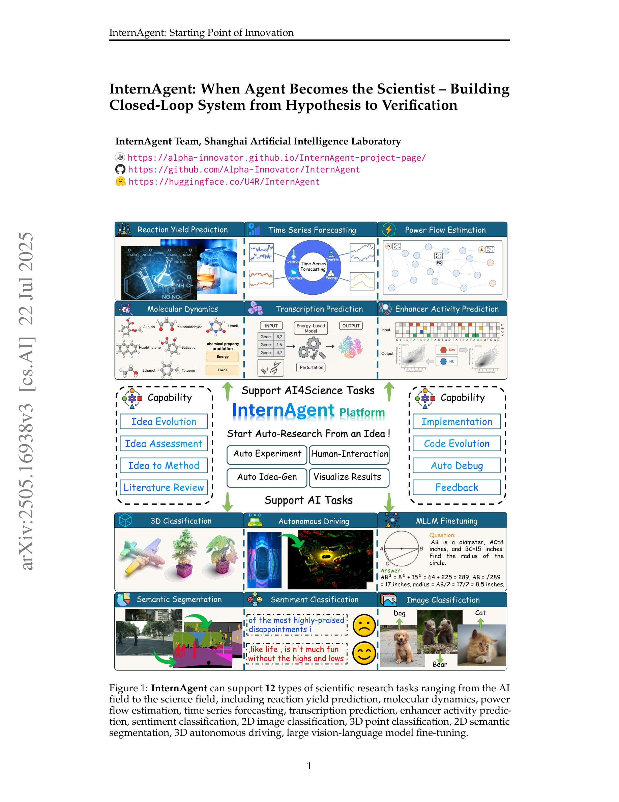
과학 연구의 전 과정(가설 → 검증)을 자율적으로 수행하는 통합 closed-loop multi-agent framework인 InternAgent를 제안한다. 12개 과학 연구 태스크에서 scalability, interactivity, efficiency의 세 가지 핵심 장점을 갖추며, reaction yield prediction(27.6%→35.4%, 12시간), enhancer activity prediction(0.65→0.79, 4시간) 등에서 유의미한 성능 향상을 달성했다.
과학 연구의 전체 루프를 closed-loop multi-agent로 자동화한 의미 있는 시스템으로, 12개 분야에서의 범용성이 인상적이다. 다만 baseline 코드 개선과 진정한 과학적 발견 사이의 간극, 그리고 human feedback 기여도의 분리 평가가 향후 핵심 과제이다.
AI-Researcher: Autonomous Scientific Innovation

문헌 리뷰부터 가설 생성, 알고리즘 구현, 출판 수준 논문 작성까지의 전체 연구 파이프라인을 최소한의 인간 개입으로 자율 수행하는 AI-Researcher 시스템과, 자율 연구 능력을 체계적으로 평가하는 Scientist-Bench 벤치마크를 제안한다.
자율적 과학 연구의 비전을 end-to-end 시스템과 전용 벤치마크로 구체화한 의욕적 연구이다. 전체 연구 파이프라인 자동화와 Scientist-Bench의 기여가 크나, human-level 품질 주장의 검증 강화와 AI 외 도메인으로의 확장이 핵심 과제이다.
ChemCrow: Augmenting large-language models with chemistry tools
In this study, we introduce ChemCrow, an LLM chemistry agent designed to accomplish tasks across organic synthesis, drug discovery, and materials design.
ChemCrow: Augmenting large-language models with chemistry tools은(는) our evaluation, including both llm and expert assessments, demonstrates chemcrow's effectiveness in automating a diverse set of chemical tasks을 보여주는 연구이다.
The AI Scientist-v2: Workshop-Level Automated Scientific Discovery via Agentic Tree Search
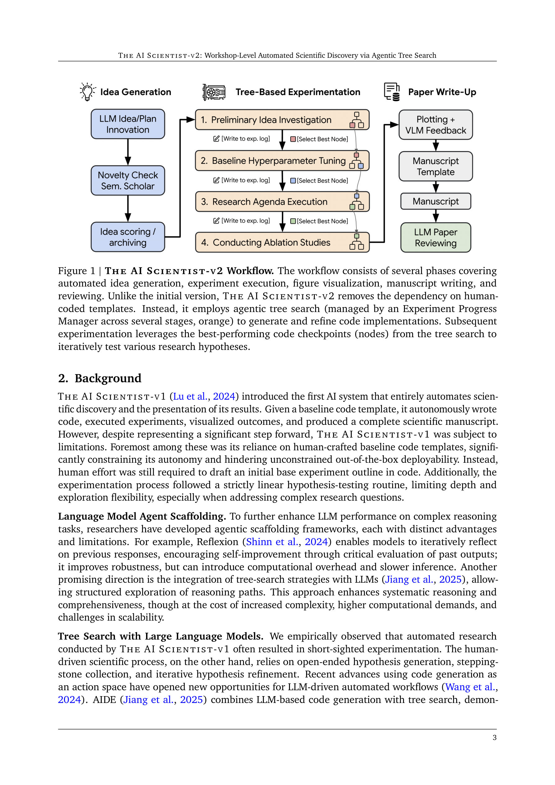
We introduce The AI Scientist-v2, an end-to-end agentic system capable of producing the first entirely AI generated peer-review-accepted workshop paper.
The AI Scientist-v2: Workshop-Level Automated Scientific Discovery via Agentic Tree Search은(는) compared to its predecessor (v1, lu et al., 2024 arxiv:2408.06292), the ai scientist-v2 eliminates the reliance on human-authored code templates, generalizes effectively across diverse machine learning domains, and leverages a novel progressive agentic tree-search methodology managed by a dedicated experiment manager agent을 보여주는 연구이다.
AutoP2C: An LLM-Based Agent Framework for Code Repository Generation from Multimodal Content in Academic Papers
We introduce ``Paper-to-Code'' (P2C), a novel task that transforms the multimodal content of scientific publications into fully executable code repositories, which extends beyond the existing formulation of code generation that merely converts textual descriptions into isolated code snippets. To automate the P2C process, we propose AutoP2C, a multi-agent framework based on large language models that processes both textual and visual content from research papers to generate complete code repositories.
AutoP2C: An LLM-Based Agent Framework for Code Repository Generation from Multimodal Content in Academic Papers은(는) evaluation on a benchmark of eight research papers demonstrates the effectiveness of autop2c, which can successfully generate executable code repositories for all eight papers, while openai-o1 or deepseek-r1 can only produce runnable code for one paper을 보여주는 연구이다.
Virtual lab powered by 'AI scientists' super-charges biomedical research
복수의 'AI 과학자' 에이전트가 협력하는 가상 실험실(virtual lab) 시스템이 실제 생의학 연구의 가설 생성·실험 설계·결과 해석 속도를 크게 단축시켰다는 사례 보고.
다중 AI 에이전트 기반 가상 실험실의 생의학 연구 가속화 가능성을 실감나게 보여주는 보고로, 향후 정식 논문으로의 발전이 기대된다.
Large language model agent for nuclear reactor operation assistance
외부 도구·문서·예측 모듈을 통합한 LLM 에이전트 아키텍처를 통해 원자력 발전소 시뮬레이터에서 이상 진단 및 운전 절차 자동 생성을 수행함으로써, 원자력 운전 보조 AI의 실현 가능성을 입증한다.
고위험 도메인인 원자력 운전에 LLM 에이전트를 실증 적용한 선도적 연구로, 안전성 검증의 엄밀성이 향후 과제이다.
AIRS-Bench: a Suite of Tasks for Frontier AI Research Science Agents

최신 ML 논문에서 추출한 20개 태스크로 구성된 AIRS-Bench를 제안하여, AI 에이전트의 아이디어 생성부터 실험 분석 및 반복 개선까지 전체 연구 생애주기에 걸친 에이전트 역량을 평가하는 벤치마크 연구. ---
AI 연구 에이전트의 프론티어 역량을 평가하는 체계적 벤치마크로 범위와 설계가 우수하나 평가 자동화에 추가 보완이 필요하다.
Genesis: Towards the Automation of Systems Biology Research
수천 개의 인과 요소로 구성된 시스템 생물학 모델을 자동으로 개선하는 차세대 로봇 과학자 Genesis의 설계와 개발 진행 상황을 보고하는 논문으로, 하루 1,000회의 가설 주도 폐쇄 루프 실험 사이클을 목표로 한다. ---
시스템 생물학을 위한 로봇 과학자 자동화를 지향하는 선구적 연구로 비전과 초기 구현 모두 흥미롭지만 완성도는 진행 중이다.
Large-Language-Model-Based AI Agent for Organic Semiconductor Device Research
GPT-4와 머신러닝을 결합한 AI 에이전트를 설계하여 유기 전계효과 트랜지스터(OFET) 문헌에서 소자 파라미터를 자동 추출하고, 이를 기반으로 소자 성능 예측 및 실험 최적화 가이드를 제공하는 시스템을 구축하였다.
GPT-4 에이전트로 OFET 소자 연구를 자동화한 Advanced Materials 논문으로 실제 실험 결과와의 대응이 설득력 있는 도메인 특화 AI4S 연구다.
MechAgents: Large language model multi-agent collaborations can solve mechanics problems, generate new data, and integrate knowledge
LLM 기반 멀티 에이전트 시스템을 활용하여 **고체역학 문제를 자율적으로 풀 수 있는 물리 기반 생성형 AI 플랫폼** MechAgents를 제안한다. GPT-4를 기반으로 한 AI 에이전트들이 탄성 문제를 유한요소법(FEM)으로 정식화하고, Python/FEniCS 코드를 작성, 실행, 디버깅하며, 결과를 분석하는 전 과정을 자율적인 대화를 통해 수행한다. 2-에이전트 팀의 자기 수정(self-correction)과 다중 에이전트 그룹의 상호 수정(mutual correction)이라는 두 가지 조직 구조를 비교하며, 분업(division of labor)이 복잡한 공학 문제 해결에 미치는 효과를 실증한다. ---
멀티 에이전트로 유한요소 역학 문제를 자동화한 선구적 연구로 에이전트 협업 설계의 가능성을 보였으나 평가 범위 확대가 필요하다.
OpenFOAMGPT 2.0: end-to-end, trustworthy automation for computational fluid dynamics
자연어 질의로부터 **전처리-시뮬레이션-후처리까지 완전 자동화된 end-to-end CFD 시뮬레이션**을 수행하는 최초의 멀티 에이전트 프레임워크를 제안한다. 4개의 전문 에이전트(Pre-processing, Prompt Generation, OpenFOAMGPT, Post-processing)가 Claude-3.7-Sonnet을 기반으로 협력하며, Poiseuille 유동, 다공성 매질 유동, 공기역학 해석 등 다양한 사례에서 **450회 이상의 시뮬레이션에서 100% 성공률과 재현성**을 달성했다. "대화 기반 시뮬레이션(conversation-to-simulation)" 워크플로우를 통해 CFD의 진입 장벽을 크게 낮추면서도 수치적 엄밀성을 유지했다. ---
자연어-CFD 워크플로우 자동화를 end-to-end로 구현하고 100% 성공률을 실증한 실용적 연구로, 멀티에이전트 아키텍처와 OpenFOAM 통합이 유사 도구 대비 차별화된다.
ResearchAgent: Iterative Research Idea Generation over Scientific Literature with Large Language Models
LLM을 활용하여 과학 논문으로부터 자동으로 연구 아이디어(문제 정의, 방법론 제안, 실험 설계)를 생성하는 시스템 **ResearchAgent**를 제안한다. 핵심 논문에서 출발하여 인용 그래프 기반 관련 논문 탐색, entity-centric knowledge store를 통한 도메인 간 개념 연결, 그리고 LLM 기반 ReviewingAgent의 반복적 피드백을 통해 아이디어의 품질을 높인다. 인간 연구자의 아이디어 생성 프로세스(문헌 조사, 백과사전적 지식, 동료 리뷰)를 체계적으로 모방한 최초의 open-ended 연구 아이디어 생성 시스템이다.
반복적 연구 아이디어 생성을 위한 LLM 에이전트 프레임워크를 300편 벤치마크로 평가한 KAIST/Microsoft 연구로, 도구 사용과 지식 검색을 통합한 반복 개선 구조가 차별점이다.
Reviewer2: Optimizing Review Generation Through Prompt Generation
LLM 기반 학술 논문 리뷰 자동 생성에서 **구체성(specificity)과 커버리지(coverage) 부족** 문제를 해결하기 위해, aspect prompt 생성과 리뷰 생성을 분리한 2단계 프레임워크 REVIEWER2를 제안한다. 첫 번째 LLM(Mp)이 논문을 분석하여 리뷰가 다룰 관점(aspect prompt)을 생성하고, 두 번째 LLM(Mr)이 해당 관점에 기반한 리뷰를 생성한다. 이를 위해 기존 리뷰 데이터셋에 aspect prompt를 자동 어노테이션하는 PGE(Prompt Generation with Evaluation) 파이프라인을 개발하고, 27k 논문 / 99k 리뷰의 대규모 데이터셋을 구축하여 공개한다. ---
측면별 프롬프트 생성으로 리뷰 구체성을 높이는 Cornell의 Reviewer2 시스템으로, 27K 논문 데이터셋과 인간 평가를 통한 검증이 설득력 있으나 실제 배포 효과는 미검증이다.
CycleResearcher: Improving Automated Research via Automated Review

오픈소스 LLM을 활용하여 과학 연구의 전체 생명주기(문헌 조사 - 논문 작성 - 피어 리뷰 - 수정)를 자동화하는 반복적 강화학습 프레임워크를 제안한다. 정책 모델(CycleResearcher)이 연구 논문을 생성하고, 보상 모델(CycleReviewer)이 피어 리뷰를 시뮬레이션하여 피드백을 제공하며, 이 과정을 Iterative SimPO로 반복 최적화한다. CycleReviewer는 개별 인간 리뷰어 대비 MAE 26.89% 개선을 달성했고, CycleResearcher-12B가 생성한 논문은 시뮬레이션 리뷰에서 평균 5.36점(프리프린트 5.24점 초과, 학회 수락 논문 5.69점에 근접)을 기록했다.
연구-리뷰-수정 사이클을 강화학습 프레임워크로 공식화한 독창적 시도이나, 실험 결과를 날조한 논문이 높은 평가를 받는다는 점에서 CycleReviewer의 평가 신뢰성에 근본적 의문이 제기된다.
From AI for Science to Agentic Science: A Survey on Autonomous Scientific Discovery

"AI for Science"에서 "Agentic Science"로의 전환을 체계적으로 정리한 포괄적 서베이 논문이다. AI 시스템이 단순 계산 도구(Computational Oracle)에서 자율적 연구 파트너(Autonomous Scientific Partner)로 진화하는 과정을 4단계 프레임워크로 정의하고, 생명과학·화학·재료과학·물리학 4개 도메인에서의 자율적 과학 발견(Autonomous Scientific Discovery) 사례를 종합적으로 리뷰한다. 기존 서베이들이 프로세스·자율성·메커니즘 관점을 개별적으로 다루었던 것과 달리, 이 세 관점을 통합하는 프레임워크를 제시한 것이 핵심 차별점이다.
AI4Science에서 Agentic Science로의 패러다임 전환을 체계적으로 정리한 포괄적 서베이로 분야 전체를 조망하는 중요한 참고 문헌이다.
Peer Review as A Multi-Turn and Long-Context Dialogue with Role-Based Interactions
학술 피어 리뷰 프로세스를 **multi-turn, long-context, role-based dialogue**로 재정식화(reformulate)하는 새로운 관점을 제안한다. 기존의 "논문 -> 리뷰" 단방향 생성이 아닌, Reviewer(초기 리뷰) -> Author(rebuttal) -> Reviewer(최종 리뷰) -> Decision Maker(결정)의 4턴 대화로 모델링한다. 이를 위해 ICLR(2017-2024)와 Nature Communications(2023)에서 26,841편 논문, 92,017개 리뷰, 5.67억 토큰 규모의 ReviewMT 데이터셋을 구축하고, 7개 오픈소스 LLM을 zero-shot과 supervised fine-tuning으로 벤치마크한다. ---
피어 리뷰를 다중 턴 대화로 재정의하고 26K 논문의 ReviewMT 데이터셋을 구축한 연구로, 대화형 피어 리뷰 모델링의 새 프레임워크를 제시하지만 생성 품질 평가가 표면적이다.
PaperRobot: Incremental Draft Generation of Scientific Ideas
기존 바이오메디컬 논문으로부터 배경 지식 그래프(KG)를 구축하고, 그래프 어텐션과 텍스트 어텐션을 결합한 링크 예측으로 새로운 아이디어를 생성한 뒤, 메모리-어텐션 네트워크를 활용하여 논문의 핵심 요소(제목 -> 초록 -> 결론 및 향후 연구 -> 후속 논문 제목)를 점진적으로 생성하는 자동 연구 보조 시스템 PaperRobot을 제안한다.
지식 그래프 기반 점진적 논문 초안 생성을 제안한 ACL 2019 선구적 연구로, LLM 이전 시대의 창의적 접근이지만 현재 LLM 기반 방법론과 비교시 기술적 성숙도는 낮다.
LLM4SR: A Survey on Large Language Models for Scientific Research

LLM이 과학 연구의 전 주기에 걸쳐 어떻게 활용되고 있는지를 체계적으로 정리한 최초의 포괄적 서베이 논문. 연구 파이프라인을 (1) 과학적 가설 발견, (2) 실험 계획 및 수행, (3) 논문 작성, (4) 피어 리뷰의 4단계로 구분하고, 각 단계별 방법론, 벤치마크, 평가 기준을 상세히 분류하여 제시한다. GitHub 리포지토리(https://github.com/du-nlp-lab/LLM4SR)를 통해 관련 자원을 공개한다.
과학 연구를 위한 LLM을 4단계 파이프라인 분류체계로 체계화한 서베이로, 광범위한 문헌을 종합하는 지도 역할을 하지만 비판적 분석보다는 나열에 치우친 한계가 있다.
MARG: Multi-Agent Review Generation for Scientific Papers

LLM(GPT-4)의 복수 인스턴스를 활용한 멀티에이전트 리뷰 생성 시스템 **MARG**를 제안한 연구이다. 논문 텍스트를 에이전트들에게 분배하여 기본 모델의 입력 길이 한계를 극복하고, 실험/명확성/영향력 등 코멘트 유형별로 전문화된 에이전트(expert agent)를 도입하여 피드백의 구체성과 유용성을 향상시켰다. 사용자 연구에서 기존 베이스라인 대비 2.2배 많은 "좋은" 코멘트(논문당 3.7개)를 생성하고, 일반적(generic) 코멘트 비율을 60%에서 29%로 감소시켰다. ---
다중 에이전트 협업으로 피어 리뷰 생성 품질을 2.2배 향상시킨 Northwestern/Hebrew U/AI2 연구로, 전문화된 에이전트 역할 분담의 효과를 실증하지만 계산 비용과 확장성 문제가 남는다.
Agentomics-ML: Autonomous Machine Learning Experimentation Agent for Genomic and Transcriptomic Data
Genomic/transcriptomic 데이터에 대한 classification 모델을 완전 자율적으로 생성하는 LLM 기반 agent 시스템으로, 사전 정의된 ML 실험 단계(데이터 탐색 -> 분할 -> 표현 -> 아키텍처 -> 학습 -> 추론)를 반복적으로 수행하며 reflection feedback을 통해 모델을 개선한다. 6개 벤치마크 데이터셋에서 93.33%의 success rate를 달성하여, 기존 agentic 시스템(AIDE, Data Interpreter)과 zero-shot LLM을 크게 능가했다.
Computational biology 데이터의 이질성에 대응하는 도메인 특화 agentic ML 시스템으로, 93%의 높은 success rate와 복잡 데이터셋(AGO2_CLASH)에서의 유일한 성공이 핵심 기여이다. 다만 Human SOTA 대비 성능 격차, 제한된 데이터셋/task 범위, preprint 상태를 고려하면 아직 초기 단계의 연구이며, 자율적 과학 발견 시스템으로의 발전 가능성을 보여주는 proof-of-concept 수준이다.
Toward a Fully Autonomous, AI-Native Particle Accelerator
입자 가속기를 AI가 처음부터 설계하고 운영하는 "자율주행(self-driving)" 시설로 전환하기 위한 비전과 로드맵을 제시하는 포지션 페이퍼이다. 기존 시설에 AI를 후속 장착(retrofitting)하는 방식이 아닌, 설계 단계부터 AI를 핵심 설계 원리로 내장하는 "AI-native" 패러다임을 주창한다. 이를 실현하기 위한 9가지 핵심 연구 축(agentic control architecture, knowledge integration, adaptive learning, digital twins, health monitoring, safety frameworks, modular hardware, multimodal data fusion, cross-domain collaboration)을 체계적으로 정리하고, AI-assisted에서 AI-augmented를 거쳐 AI-autonomous로의 3단계 진화 경로를 제안한다.
입자 가속기의 AI-native 자율 운영이라는 야심찬 비전을 명확하고 체계적으로 제시한 포지션 페이퍼로, 9가지 연구 축의 구조화와 3단계 진화 프레임워크가 가속기 커뮤니티에 유용한 로드맵을 제공한다. 특히 설계 단계부터 자율 운영을 내재화하는 "AI-native" 패러다임과 machine state embedding 개념이 독창적이다. 다만 실증적 검증이 전무하고, 비용 분석 및 실시간 제어의 기술적 실현 가능성에 대한 심층 논의가 부족하여, 현 단계에서는 영감을 주는 비전 문서로서의 가치가 주된 기여이다.
From Labor to Collaboration: A Methodological Experiment Using AI Agents to Augment Research Perspectives in Taiwan's Humanities and Social Sciences

인문사회과학 연구에 특화된 AI Agent 기반 협업 연구 워크플로우(Agentic Workflow)를 제안하고, 이를 Anthropic Economic Index(AEI) 대만 Claude.ai 사용 데이터(N=7,729)의 2차 데이터 분석에 실제 적용하여 검증하는 "방법론 실험(methodological experiment)"이다. 7단계 모듈형 워크플로우를 설계하고(연구 기획, 문헌 수집, 문헌 분석, 데이터 탐색, 데이터 분석, 논문 작성, 참고문헌 관리), 각 단계에서의 인간-AI 분업 경계를 반성적으로 문서화하여 3가지 협업 운영 모드(직접 실행형, 반복 수정형, 인간 주도형)를 도출한다.
인문사회과학 연구를 위한 AI Agent 협업 워크플로우를 체계적으로 설계하고, 실제 적용 과정을 반성적으로 문서화한 실천적 기여가 있는 논문이다. 특히 각 단계별 prompt 예시와 인간 개입 지점의 상세한 기록은 후속 연구자들에게 유용한 참조 자료가 된다. 그러나 통제 비교 없는 단일 사례 시연이라는 방법론적 한계, 과도한 분량, 그리고 AEI 데이터 분석의 피상성이 논문의 학술적 기여를 제약한다. "방법론 실험"이라기보다는 "방법론 제안 및 시연"으로 보는 것이 적절하다.
Polymer Brushes and Grafted Polymers: AI/ML-Driven Synthesis, Simulation, and Characterization towards autonomous SDL
고분자 브러시(polymer brush) 및 그래프트 고분자 연구에 AI/ML 워크플로우를 도입하여, 합성-시뮬레이션-특성분석의 전체 파이프라인을 가속화하고 궁극적으로 자율 주행 실험실(Self-Driving Laboratory, SDL)로의 전환을 제안하는 포괄적 리뷰 논문이다. 52페이지에 걸쳐 고분자 브러시의 합성 경로(grafting-from, grafting-onto, grafting-through), 다양한 특성분석 기법(AFM, SPR, ellipsometry, XRR/NR, QCM, XPS, FTIR, EIS), 시뮬레이션 방법론(MD, SCFT, coarse-grained), 그리고 각 영역에서 ML이 어떻게 적용될 수 있는지를 체계적으로 정리하였다.
고분자 브러시 연구에 AI/ML 및 SDL 패러다임을 도입하는 비전을 체계적으로 제시한 리뷰이나, 새로운 실험/벤치마크 없이 기존 문헌을 나열하는 수준에 그치며, 저자 그룹의 연구에 과도하게 편중된 서사가 객관성을 약화시킨다. 해당 분야의 입문자에게는 합성-특성분석-시뮬레이션의 전체 지형을 파악하는 데 유용하나, AI/ML 적용의 깊이와 구체성은 부족하다.
DataJoint 2.0: A Computational Substrate for Agentic Scientific Workflows

과학 데이터 파이프라인에 DevOps에 해당하는 "SciOps"를 구현하기 위한 관계형 워크플로우 모델(relational workflow model)을 제안한다. DataJoint 2.0은 테이블을 워크플로우 단계로, 행(row)을 산출물(artifact)로, 외래 키(foreign key)를 실행 순서로 해석하여, 데이터 구조/계산 의존성/무결성 제약을 하나의 쿼리 가능한 형식 체계로 통합한다. 이를 통해 AI 에이전트가 데이터 손상 없이 과학 워크플로우에 참여할 수 있는 계산 기반(computational substrate)을 제공한다.
DataJoint의 관계형 워크플로우 모델을 "에이전트 시대"의 과학 데이터 관리 패러다임으로 재정립하려는 시의적절한 시도이다. 개념적 프레이밍(SciOps, active schema)과 기술적 설계(OAS, semantic matching)가 명확하고 설득력 있게 기술되어 있으나, 새로운 알고리즘이나 실험적 검증 없이 기존 시스템의 확장판을 소개하는 형태이므로 학술적 기여는 제한적이다. 특히 "agentic workflow" 지원을 핵심 주장으로 내세우면서도, 실제 에이전트 통합 실험이 없는 점이 가장 큰 약점이다.
EAA: Automating Materials Characterization with Vision Language Model Agents
Vision Language Model(VLM) 기반 에이전트 시스템 EAA를 개발하여, 싱크로트론 빔라인에서의 현미경 조작(초점 조정, 특징 탐색, 대화형 데이터 수집)을 자동화한 연구.
VLM 에이전트 기반 싱크로트론 빔라인 자동화 시스템으로 실용적 가치는 있으나 정량적 평가가 부족한 시스템 데모 논문이다.
Embodied Science: Closing the Discovery Loop with Agentic Embodied AI

과학적 발견을 "물리적 세계와의 지속적 상호작용을 통한 closed-loop 과정"으로 재정의하는 "Embodied Science" 패러다임을 제안하는 Perspective 논문이다. Perception-Language-Action-Discovery (PLAD) 프레임워크를 통해 agentic embodied AI가 실험 환경을 감지하고, 과학적 지식을 기반으로 추론하며, 물리적 개입을 실행하고, 결과를 내재화하여 장기적 자율 과학 발견(long-horizon autonomous scientific discovery)을 가능하게 하는 로드맵을 제시한다.
AI4Science에서 cognition(추론)과 execution(실행)의 구조적 단절을 "Embodied Science"라는 통합 패러다임으로 진단하고 PLAD 프레임워크를 제안한 시의적절한 Perspective 논문이다. 현 landscape의 체계적 분류와 도전 과제 식별은 유용하나, 실험적 검증이 전무하고 기존 closed-loop 시스템(A-Lab, Coscientist 등)과의 차별점이 명확하지 않다는 한계가 있다. "과학적 발견은 embodied process"라는 핵심 주장은 올바르지만, 이를 실현하기 위한 기술적 경로가 아직 추상적 수준에 머물러 있어, 향후 구체적 구현과 실증이 이 비전의 가치를 결정할 것이다.
Can we automatize scientific discovery in the cognitive sciences?
인지과학의 발견 사이클(실험 설계 -> 데이터 수집 -> 모델 비교 -> 결론 도출)을 LLM 기반으로 완전 자동화하는 "in silico science of the mind" 비전을 제시하는 짧은 Perspective 논문이다. LLM이 실험 패러다임을 제안하고(Experimentalist), cognitive foundation model(Centaur)이 합성 행동 데이터를 생성하며, LLM 기반 program synthesis가 인지 모델을 대규모 탐색하고(Modeller), LLM-critic이 "interestingness"를 평가하여 루프를 닫는 4단계 자동 발견 엔진을 구상한다.
인지과학의 발견 사이클을 LLM과 cognitive foundation model로 완전 자동화하겠다는 대담한 비전을 제시한 짧은 Perspective 논문이다. 특히 Centaur를 in-loop data generator로 사용하고, LLM program synthesis로 인지 모델을 대규모 탐색한다는 아이디어는 인지과학과 AI의 교차점에서 참신하다. 그러나 5페이지 분량의 제약으로 각 구성 요소의 기술적 깊이가 부족하고, 통합 구현이 없으며, 실패 모드(특히 LLM에 의한 interestingness 평가의 순환성)가 핵심 위험으로 남아 있다. "In silico science of the mind"라는 방향성 자체는 AI4Science 커뮤니티에서 주목할 가치가 있다.
Agentic Personas for Adaptive Scientific Explanations with Knowledge Graphs
Knowledge graph 기반 설명 생성에서 전문가의 다양한 인식론적 입장(epistemic stance)을 반영하는 적응형 설명(adaptive explanation) 프레임워크를 제안한 연구이다. "Agentic persona"라는 개념을 도입하여, 전문가 피드백으로부터 클러스터링과 LLM 합성을 통해 해석 전략의 구조적 표현을 만들고, 이를 강화학습의 보상 함수에 통합하여 사용자별 맞춤형 KG 경로 설명을 생성한다. Drug discovery 도메인에서 22명 대상 사용자 연구 결과, persona 기반 적응형 설명이 비적응형 baseline 대비 63.3-76.0% 선호되었다.
XAI에서 전문가의 인식론적 다양성을 포착하여 맞춤형 설명을 생성한다는 개념적 기여가 인상적이다. 그러나 11명의 극소 표본에서 도출한 2개 persona의 대표성, LLM evaluator의 태스크 의존적 변동성, 그리고 verbalization과 경로 선택의 효과 분리 부재 등 방법론적 한계가 있다. Drug discovery라는 특정 도메인에서의 초기 검증으로서 가치가 있으나, 확장성과 일반화에 대한 더 엄밀한 검증이 필요하다.
Scientific Hypothesis Generation and Validation: Methods, Datasets, and Future Directions

LLM 기반 과학적 가설 생성(hypothesis generation) 및 검증(validation)의 전체 파이프라인을 체계적으로 정리한 대규모 서베이 논문으로, 초기 기호 기반 발견 시스템(BACON, KEKADA)부터 현대 LLM 파이프라인, 멀티에이전트 아키텍처까지를 아우른다.
LLM 기반 과학적 가설 생성의 방법론과 평가를 종합한 서베이로 연구 지형도 파악에 유용하나 정량적 비교가 부재하다.
A Survey on Hypothesis Generation for Scientific Discovery in the Era of Large Language Models

LLM 시대에 과학적 가설 생성(Scientific Hypothesis Generation, SHG)을 위한 방법론을 체계적으로 정리한 서베이 논문이다. 전통적 문헌 기반 발견(Literature-Based Discovery, LBD)부터 텍스트 마이닝, 지도학습, 그래프 기반 방법, 그리고 최신 LLM 기반 접근법(프롬프팅, 파인튜닝, RAG, 지식 그래프 통합, 멀티 에이전트 시스템)까지를 아우르는 분류 체계(taxonomy)를 제시한다. 생성된 가설의 품질 평가 방법론(전문가 평가, 자동화 메트릭, 신규성 평가, 분야별 평가)도 종합하며, 환각(hallucination), 해석 가능성, 편향, 멀티모달 통합, 인간-AI 협업 등 핵심 도전과제와 미래 방향을 논의한다.
LLM 기반 과학적 가설 생성이라는 시의적절한 주제를 다루며, 전통적 LBD부터 최신 LLM 기법까지의 진화를 일관된 분류 체계로 정리한 유용한 참고 문헌이다. 그러나 서베이 논문으로서 검색 범위가 arXiv cs.CL로 한정된 점, 각 방법론 간 정량적 비교 실험이 부재한 점, 그리고 2024~2025년의 급속한 발전(AI Scientist, SciMON 등)을 충분히 반영하지 못한 점이 아쉽다. 과학적 가설 생성 연구의 입문자에게는 좋은 출발점이 될 수 있으나, 실무적 가이드라인을 기대하는 독자에게는 구체성이 부족하다.
PersonaAI: An Interactive Agentic-AI Framework for Autonomous Hypothesis Generation and Validation in Aging
노화(aging) 연구를 위한 인터랙티브 에이전틱 AI 프레임워크 **PersonaAI**를 제안한다. 56만 편 이상의 노화 관련 문헌을 RAG(Retrieval-Augmented Generation) 기반으로 합성하여 메커니즘적 가설을 생성하고, 이를 single-cell RNA-seq 데이터로 자율적으로 in silico 검증하는 이중 구조(dual-phase) 시스템이다. 핵심은 완전 자율이 아닌 **human-in-the-loop** 방식으로, 연구자의 생물학적 직관을 AI의 대규모 문헌 합성 능력과 결합하여 가설 탐색 공간을 효율적으로 제한한다. ---
노화 연구를 위한 인간 참여형 AI 에이전트 시스템으로 도메인 특화 접근이 흥미로우나 평가 규모와 깊이가 제한적이다.
SCP: Accelerating Discovery with a Global Web of Autonomous Scientific Agents

과학 연구의 자율 에이전트 간 협업을 위한 오픈소스 프로토콜 표준 **SCP(Science Context Protocol)**를 제안하여, 이질적인 계산 도구·AI 모델·데이터셋·실험 장비를 하나의 통합된 인터페이스로 연결하고 실험 전 주기를 관리하는 인프라를 구축함.
과학 컨텍스트 프로토콜이라는 비전 논문으로 AI-과학 인프라 표준화 방향을 제시하나 구체적 구현과 검증이 부재하다.
Interesting Scientific Idea Generation using Knowledge Graphs and LLMs: Evaluations with 100 Research Group Leaders
5,800만 편의 과학 논문에서 구축한 지식 그래프(knowledge graph)와 GPT-4를 결합하여 개인화된 연구 아이디어를 생성하는 시스템 **SciMuse**를 소개한다. 110명의 Max Planck Society 연구그룹 리더가 4,400개 이상의 AI 생성 연구 제안을 평가한 대규모 인간 평가를 수행하여, AI가 생성한 연구 아이디어의 흥미도를 실증적으로 검증하고, 지식 그래프 특성과 LLM을 이용한 흥미도 예측 방법론을 제시하였다. ---
110명의 연구 리더와 함께 AI 아이디어 생성 도구 SciMuse를 평가한 연구로 현장 피드백이 풍부하나 도구 자체의 기술적 기여가 제한적이다.
R&D-Agent: Automating Data-Driven AI Solution Building Through LLM-Powered Automated Research, Development, and Evolution
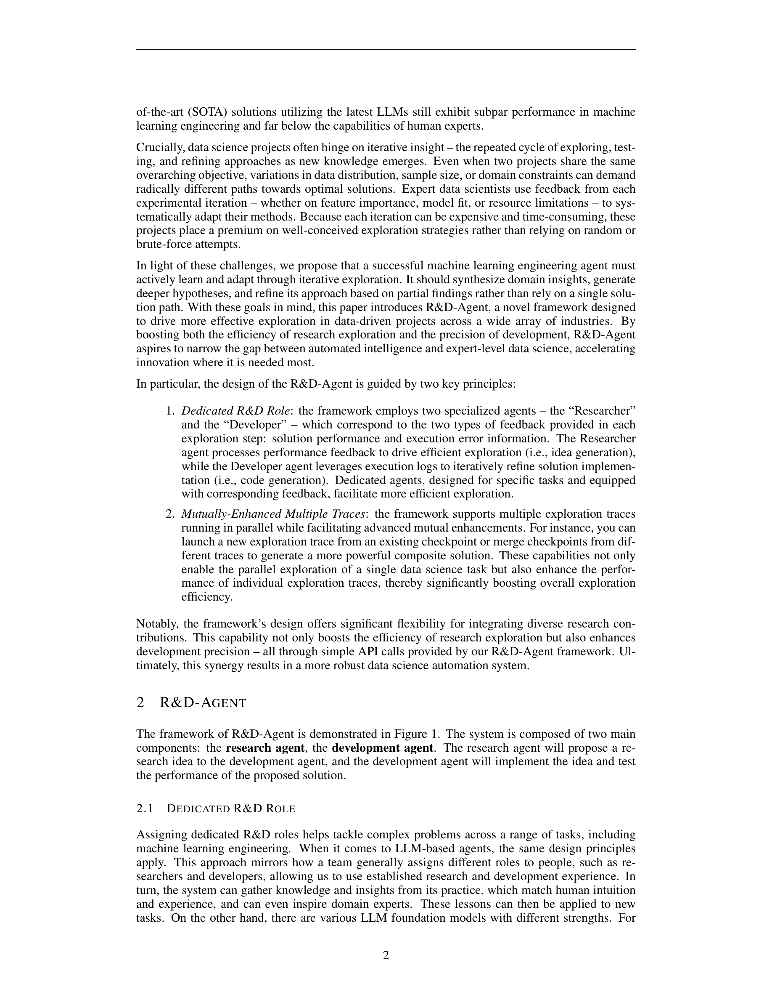
LLM 기반 Researcher-Developer 이중 에이전트 프레임워크를 통해 데이터 과학 문제의 반복적 탐색-개발 사이클을 자동화하고, 다중 병렬 탐색 트레이스(Multi-Trace)의 융합으로 MLE-Bench에서 최고 성능을 달성한 ML 엔지니어링 에이전트 시스템이다.
Researcher-Developer 이중 에이전트로 데이터 기반 AI 연구를 자동화하는 RD-Agent은 MLE-Bench SOTA를 달성했으나 적용 범위가 제한적이다.
VASPilot: MCP-Facilitated Multi-Agent Intelligence for Autonomous VASP Simulations
VASP(Vienna Ab initio Simulation Package) 기반 밀도범함수이론(DFT) 시뮬레이션을 완전 자동화하는 오픈소스 멀티 에이전트 플랫폼 **VASPilot**을 소개한다. CrewAI 프레임워크와 Model Context Protocol(MCP)을 기반으로 구축되며, Manager Agent + 3개 특화 Worker Agent(Crystal Structure Agent, VASP Agent, Result Validation Agent)가 결정 구조 검색, 입력 파일 생성, Slurm 작업 제출, 오류 파싱 및 파라미터 자동 조정, 결과 시각화까지 전 과정을 수행한다. 2H-MoS2의 밴드 구조/DOS 계산, ENCUT 수렴 테스트, 다양한 van der Waals 보정에 따른 격자 상수 최적화, 전이금속 디칼코게나이드(TMD) 밴드갭 비교 등의 벤치마크에서 수동 개입 없이 성공적으로 완료되었다. ---
MCP 기반 멀티 에이전트로 DFT 계산을 자동화하는 VASPilot은 실용적 접근이나 평가 규모와 오류 처리 강건성에서 개선이 필요하다.
AgentRxiv: Towards Collaborative Autonomous Research

AgentRxiv는 LLM 기반 자율 연구 에이전트들이 공유 프리프린트 서버를 통해 연구 결과를 업로드, 검색, 상호 참조하며 협업적으로 연구를 수행할 수 있게 하는 프레임워크이다. 단일 실험실이 MATH-500에서 gpt-4o mini 기준 70.2%에서 78.2%로 11.4% 상대적 성능 향상을 달성했으며, 3개 병렬 실험실 운영 시 79.8%(13.7% 상대 향상)까지 도달하여, 에이전트 간 누적적 지식 공유가 고립된 연구보다 우월함을 입증했다.
자율 연구 에이전트들이 공유 프리프린트 서버를 통해 협업적으로 연구를 수행하는 매력적인 비전을 제시한 논문이다. 누적적 지식 공유가 고립된 연구보다 우월하다는 점을 정량적으로 입증한 것은 의미 있으나, 높은 hallucination 비율과 수동 검증 의존성, 좁은 실험 범위(MATH-500 prompting), 그리고 발견된 알고리즘의 제한적 novelty는 현재 시스템의 실용적 가치에 대한 의문을 남긴다. 자율 과학 연구의 미래 방향을 탐색하는 시의적절한 연구이지만, 신뢰성 확보를 위한 후속 개선이 필수적이다.
Agent Laboratory: Using LLM Agents as Research Assistants

LLM 에이전트를 활용하여 연구의 전 과정(문헌 조사 -> 실험 -> 보고서 작성)을 자동화하는 프레임워크 **Agent Laboratory**를 제안한다. 인간 연구자가 연구 아이디어를 입력하면, PhD/Postdoc/ML Engineer/SW Engineer/Professor 등의 역할을 가진 전문화된 LLM 에이전트들이 파이프라인을 통해 코드 저장소와 연구 보고서를 생성한다. 완전 자율 모드와 인간 피드백을 반영하는 co-pilot 모드를 모두 지원하며, 기존 자율 연구 방법 대비 84% 비용 절감(gpt-4o 기준 논문당 $2.33)을 달성한다.
LLM 에이전트 기반 자율 연구 프레임워크를 체계적으로 구현하고 $2.33/논문의 비용 효율을 제시했으나, 환각 문제와 인간 피드백 의존성이 실용화의 주요 장벽으로 남는다.
Virtual lab powered by 'AI scientists' super-charges biomedical research
Stanford 대학 James Zou 그룹이 LLM 기반 "AI 과학자" 에이전트 팀으로 구성된 "Virtual Lab"을 개발하여, SARS-CoV-2 최신 변이체를 표적으로 하는 나노바디 92개를 설계하고 실험 검증까지 완료한 사례를 소개하는 Nature 뉴스 기사이다. 설계된 나노바디의 90% 이상이 원래 변이체에 결합했고, 2개는 최신 변이체(JN.1, KP.3)에도 결합력을 보였다. 전체 AI 토론 과정은 회의당 5-10분, 인간 연구자의 텍스트 기여는 전체의 1.3%에 불과했다.
AI 에이전트 팀이 실험 검증 가능한 나노바디를 설계한 Virtual Lab의 성과를 적시에 소개한 우수한 뉴스 기사이나, Nature News 특성상 기술적 깊이가 부족하므로 원논문(Swanson et al., 2025, Nature)과 함께 읽어야 시스템의 실체를 이해할 수 있다.
Large Language Models for Automated Scholarly Paper Review: A Survey
LLM 시대에 자동화된 학술 논문 리뷰(Automated Scholarly Paper Review, ASPR)의 현황을 종합적으로 조망하는 서베이 논문이다. ASPR에 사용되는 LLM 종류, 기술적 병목 해소 현황, 새로운 방법론/데이터셋/소스코드/온라인 시스템, LLM의 성능과 한계, 출판사 및 학계의 반응과 정책, 그리고 미래 도전 과제를 체계적으로 정리한다. 현재 ASPR과 전통적 피어 리뷰가 공존하는 단계에 있으며, LLM이 ASPR의 실질적 구현을 위한 변혁적 잠재력을 지니고 있음을 강조한다.
LLM 기반 자동 논문 리뷰의 기술·정책·윤리를 통합 조망한 시의적절한 서베이로, 새로운 기법 제안보다 현황 정리에 의의가 있다.
AI-Driven Review Systems: Evaluating LLMs in Scalable and Bias-Aware Academic Reviews
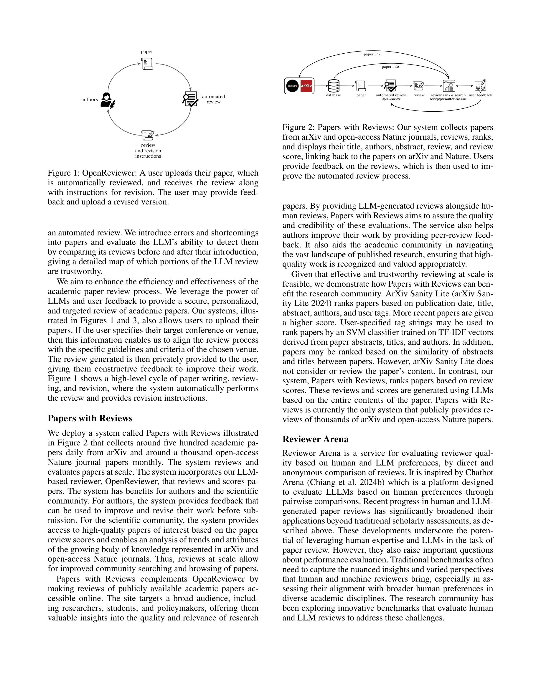
LLM 기반 학술 논문 자동 리뷰 시스템의 구축, 대규모 운영, 그리고 체계적 평가를 다룬 종합적 연구이다. 세 가지 시스템(OpenReviewer, Papers with Reviews, Reviewer Arena)과 네 가지 평가 방법(인간 평가, LLM 자동 평가, 인간 선호도 예측, LLM 리뷰 한계 자동 발견)을 제안하며, LLM 리뷰의 품질과 한계를 체계적으로 매핑한다. 매일 500편의 arXiv 논문과 월 1000편의 Nature 오픈액세스 논문을 자동 리뷰하여 공개하는 대규모 시스템을 운영한다. ---
OpenReviewer, Papers with Reviews, Reviewer Arena 세 AI 리뷰 시스템을 비교 평가한 연구로, 현황 파악에 유용하지만 방법론적 엄밀성과 독창적 기여가 제한적이다.
ReviewerGPT? An Exploratory Study on Using Large Language Models for Paper Reviewing
LLM(특히 GPT-4)이 과학 논문의 피어 리뷰 과정에서 어떤 역할을 수행할 수 있는지를 탐색적으로 연구한 논문이다. 세 가지 리뷰 관련 태스크(오류 탐지, 체크리스트 검증, 더 나은 논문 선택)에 대해 GPT-4의 성능을 체계적으로 평가하여, LLM이 특정 리뷰 보조 작업에는 유망하지만 독립적 리뷰어로서는 아직 부족함을 보여준다.
GPT-4 피어 리뷰 능력을 탐색한 CMU의 초기 연구로, 소규모이지만 선구적 실험을 통해 LLM 리뷰어의 가능성과 한계를 제시하여 후속 연구의 기반을 마련했다.
Large Language Models for Automated Scholarly Paper Review: A Survey
LLM 시대의 **자동화된 학술 논문 리뷰(Automated Scholarly Paper Review, ASPR)**에 대한 포괄적 서베이 논문이다. LLM이 ASPR에 어떻게 활용되고 있는지를 기술적 병목 해소, 새로운 방법론(프롬프트 엔지니어링, 지도 학습 미세조정, 멀티에이전트 프레임워크), 데이터셋, 소스코드/온라인 시스템, 성능 및 한계, 출판사·학계의 태도와 정책, 그리고 미래 도전과제까지 전 과정을 체계적으로 정리하였다. GPT-4가 ASPR 문헌에서 가장 빈번하게 사용되며, 오픈소스 모델이 클로즈드소스 대비 약 2.7배 비중을 차지함을 보고한다. ---
LLM 시대 자동 논문 리뷰의 기술·데이터셋·출판 정책을 광범위하게 정리한 서베이로, 실증 비교 없이 문헌 종합에 그치지만 실무적 참고 가치가 높다.
RelevAI-Reviewer: A Benchmark on AI Reviewers for Survey Paper Relevance

서베이 논문의 "관련성(relevance)" 평가를 4-class 분류 문제로 정식화하고, 이를 위한 벤치마크 데이터셋(25,164 인스턴스, 총 100,656 prompt-paper 쌍)과 베이스라인 시스템(RelevAI-Reviewer)을 제안한 연구이다. BERT + thermometer encoding 조합이 Kendall's Tau 0.928을 달성하여, SVM(0.761)과 cosine similarity baseline(0.774)을 크게 상회했다.
서베이 논문의 관련성 평가를 분류 문제로 정식화하고 대규모 벤치마크를 구축한 점은 실용적 기여가 있다. Thermometer encoding의 도입과 데이터 효율성 분석도 유의미하다. 그러나 관련성 레이블링의 휴리스틱이 조잡하고(특히 second most/second least 경계), 프롬프트가 원본 논문에서 역생성되어 태스크 자체가 어휘 유사도 판별에 가까워질 수 있다는 근본적 한계가 있다. 최신 LLM과의 비교가 없어 2024년 시점에서의 실질적 baseline 가치가 제한적이며, 서베이 논문만을 대상으로 한 범위 제한도 일반화를 어렵게 한다.
Lang-PINN: From Language to Physics-Informed Neural Networks via a Multi-Agent Framework
We present Lang-PINN, an LLM-driven multi-agent system that builds trainable PINNs directly from natural language task descriptions.
의미 있는 기여를 하나, 독창성 또는 실험적 검증의 보강이 필요한 연구.
Aviary: training language agents on challenging scientific tasks

Here, we introduce Aviary, an extensible gymnasium for language agents. 
의미 있는 기여를 하지만, 추가 검증이 필요한 부분이 있음.
Democratizing AI scientists using ToolUniverse
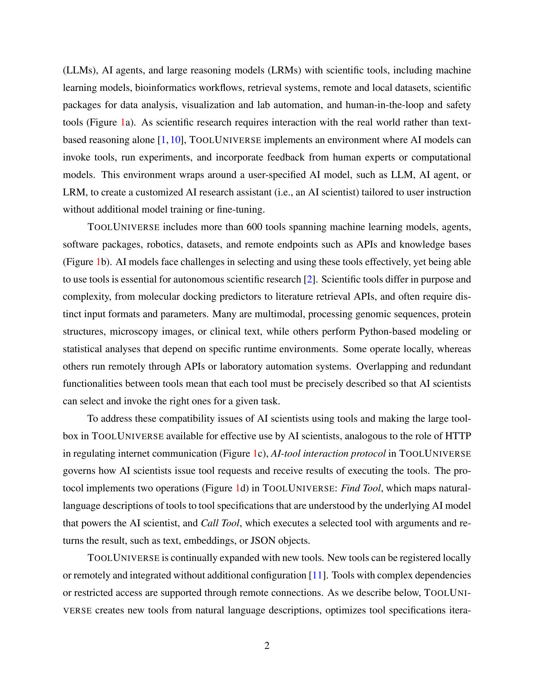
We present ToolUniverse, an ecosystem for building AI scientists from any language or reasoning model across open- and closed-weight models. 
의미 있는 기여를 하지만, 추가 검증이 필요한 부분이 있음.
A Survey of Scientific Large Language Models: From Data Foundations to Agent Frontiers
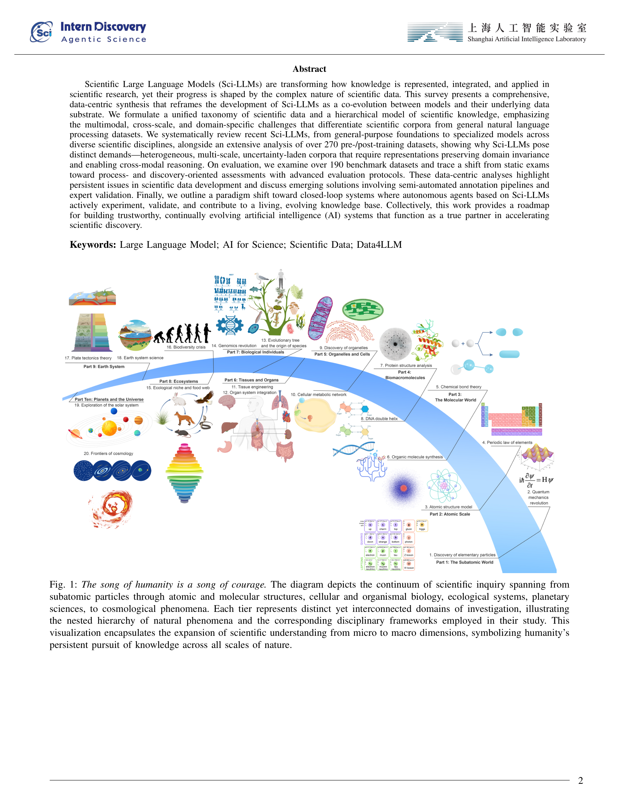
This survey presents a comprehensive, data-centric synthesis that reframes the development of Sci-LLMs as a co-evolution between models and their underlying data substrate.
관련 분야의 포괄적 서베이로서 연구자들에게 유용한 참고 자료를 제공하나, 서베이 논문 특성상 독창적 기여는 제한적이다.
Towards Scientific Intelligence: A Survey of LLM-based Scientific Agents
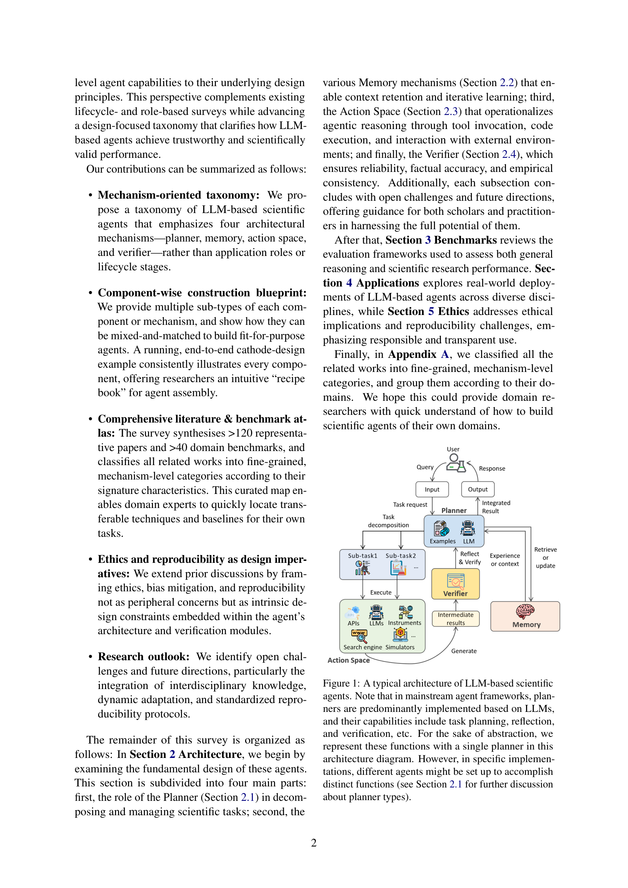
This survey provides a focused review of the architectures, design, benchmarks, applications, and ethical considerations surrounding LLM-based scientific agents. By examining their development and challenges, this survey offers a comprehensive roadmap for researchers and practitioners to harness these agents for more efficient, reliable, and ethically sound scientific discovery.
관련 분야의 포괄적 서베이로서 연구자들에게 유용한 참고 자료를 제공하나, 서베이 논문 특성상 독창적 기여는 제한적이다.
Agentic AI for Scientific Discovery: A Survey of Progress, Challenges, and Future Directions
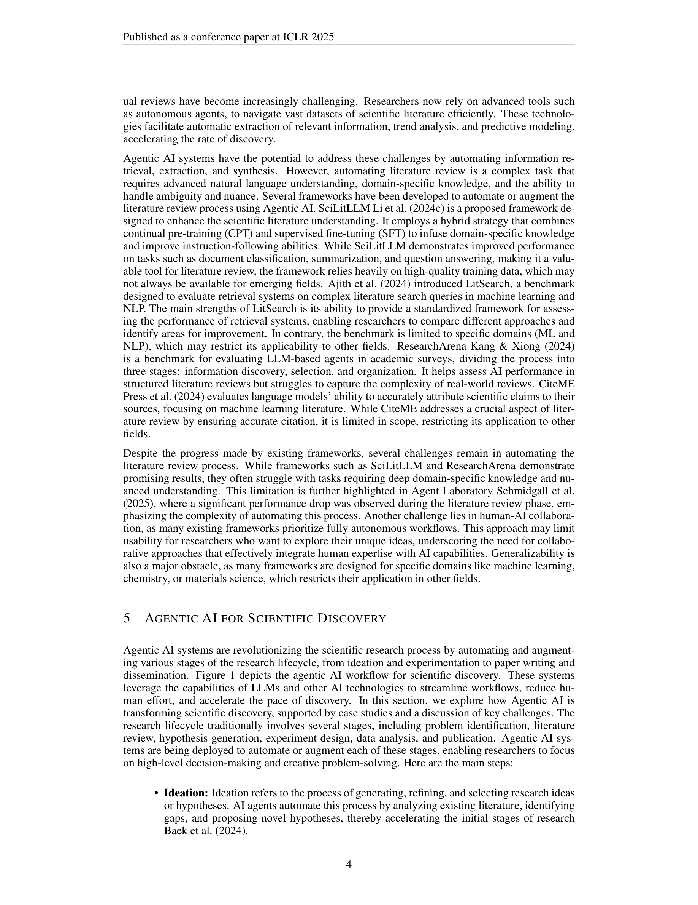
This survey provides a comprehensive overview of Agentic AI for scientific discovery, categorizing existing systems and tools, and highlighting recent progress across fields such as chemistry, biology, and materials science.
관련 분야의 포괄적 서베이로서 연구자들에게 유용한 참고 자료를 제공하나, 서베이 논문 특성상 독창적 기여는 제한적이다.
From Automation to Autonomy: A Survey on Large Language Models in Scientific Discovery

This survey systematically charts this burgeoning field, placing a central focus on the changing roles and escalating capabilities of LLMs in science. Overall, this survey provides a conceptual architecture and strategic foresight to navigate and shape the future of AI-driven scientific discovery, fostering both rapid innovation and responsible advancement.
관련 분야의 포괄적 서베이로서 연구자들에게 유용한 참고 자료를 제공하나, 서베이 논문 특성상 독창적 기여는 제한적이다.
Transforming Science with Large Language Models: A Survey on AI-assisted Scientific Discovery, Experimentation, Content Generation, and Evaluation

In this survey, we provide a curated overview of literature representative of the core techniques, evaluation practices, and emerging trends in AI-assisted scientific discovery. We aim for this survey to serve both as an accessible, structured orientation for newcomers to the field, as well as a catalyst for new AI-based initiatives and their integration into future ``AI4Science'' systems.
관련 분야의 포괄적 서베이로서 연구자들에게 유용한 참고 자료를 제공하나, 서베이 논문 특성상 독창적 기여는 제한적이다.
What are the best AI tools for research? Nature's guide
Nature가 연구자들의 실제 사용 경험을 바탕으로 문헌 검색, 글쓰기, 데이터 분석, 코딩 등 연구 단계별 최적 AI 도구를 비교·평가한 실용 가이드.
연구자가 AI 도구를 선택할 때 즉시 참고할 수 있는 실용적 가이드로, 도구 홍수 속에서 방향을 잡는 데 유용하다.
LimGen: Probing the LLMs for Generating Suggestive Limitations of Research Papers
LLM이 연구 논문의 한계점(limitations)을 자동으로 제안·생성할 수 있는지를 탐색하는 LimGen 시스템을 제안한다.
연구 한계 자동 생성이라는 틈새 문제를 다루는 실용적 연구이나, abstract 부재로 방법론 및 평가의 엄밀성을 판단하기 어렵다.
Accelerating Scientific Research with Gemini: Case Studies and Common Techniques

Google Gemini 모델(특히 Gemini Deep Think)을 활용하여 이론 컴퓨터과학, 경제학, 최적화, 물리학 등 다양한 분야에서 미해결 문제 풀이, 추측 반증, 새로운 증명을 실현한 사례 연구 모음과, 이로부터 추출한 효과적인 인간-AI 협업 기법들을 정리한 연구. ---
Gemini를 활용한 과학 연구 사례 연구 모음이나 생존 편향과 체계적 평가 부재로 인해 학술적 신뢰성이 제한적이다.
Using Artificial Intelligence for Systematic Review: The Example of Elicit
AI 기반 연구 보조 도구 Elicit이 체계적 문헌 고찰(systematic review)의 스크리닝 단계에서 기존 방법론을 대체할 수 있는지를 반복성(repeatability), 정확성(accuracy), 신뢰성(reliability)의 세 기준으로 평가한 연구이다. ---
Elicit를 활용한 체계적 문헌 검토의 가능성과 한계를 소규모로 평가한 연구로 실무적 참고는 되나 학술적 기여는 제한적이다.
Small Language Models are the Future of Agentic AI

에이전틱 AI 시스템에서 대형 언어 모델(LLM)을 소형 언어 모델(SLM, ~10B 파라미터 이하)로 대체해야 한다는 포지션 페이퍼이다. SLM이 (V1) 에이전틱 작업에 **충분한 성능**을 보유하고, (V2) 운영적으로 **더 적합**하며, (V3) **더 경제적**이라는 세 가지 핵심 주장을 전개한다. 범용 대화 능력이 필요한 경우에는 SLM을 기본으로 하고 LLM을 선별적으로 호출하는 **이질적(heterogeneous) 에이전틱 시스템**을 제안한다. LLM에서 SLM으로의 전환을 위한 6단계 변환 알고리즘도 제시한다. ---
에이전트 AI에서 SLM 우선 접근을 주장하는 포지션 페이퍼로 논거는 설득력 있으나 실증적 검증이 없어 주장의 근거가 약하다.
Accelerating Drug Discovery Through Agentic AI: A Multi-Agent Approach to Laboratory Automation in the DMTA Cycle
제약 산업의 Design-Make-Test-Analyze (DMTA) 사이클을 자동화하기 위한 멀티 에이전트 AI 프레임워크 **Tippy**를 소개한다. Supervisor, Molecule, Lab, Analysis, Report의 5개 특화 에이전트와 Safety Guardrail 에이전트로 구성되며, Artificial 플랫폼 위에 배포되어 분자 설계부터 합성, 분석, 보고까지의 전체 DMTA 워크플로를 조율한다. 저자들에 따르면, DMTA 사이클 자동화를 위해 특화된 AI 에이전트를 프로덕션 수준으로 구현한 최초의 사례이다. ---
멀티 에이전트 DMTA 사이클 자동화 시스템 Tippy를 소개한 기업 논문으로 개념은 유망하나 독립적 검증과 방법론 투명성이 부족하다.
MatPilot: an LLM-enabled AI Materials Scientist under the Framework of Human-Machine Collaboration
MatPilot은 LLM 기반 멀티 에이전트 시스템을 활용하여 인간-기계 협업 프레임워크 하에서 재료 과학 연구를 수행하는 AI 재료 과학자 시스템이다. 인지 모듈(cognition module)과 실행 모듈(execution module)로 구성되며, 자연어 상호작용을 통해 과학적 가설 생성, 실험 설계, 자동화 실험 수행, 반복적 최적화를 통합한 플랫폼이다.
LLM 기반 재료 과학 연구 자동화의 비전을 제시한 포지션 페이퍼로, 개념적 프레임워크는 흥미롭지만 실험적 검증이 전무하여 학술적 기여는 제한적이다.
Virtual lab powered by 'AI scientists' super-charges biomedical research
Stanford 대학의 James Zou 연구팀이 개발한 **"Virtual Lab"** 시스템을 소개하는 Nature 뉴스 기사이다. 이 시스템은 여러 대규모 언어 모델(LLM)에 각각 특정 과학 분야의 전문가 역할(면역학, 계산 생물학, 머신러닝)을 부여하여 "AI 과학자" 에이전트로 구성하고, 이들이 인간 연구자의 고수준 지도 아래 협업하여 과학적 문제를 해결하는 가상 실험실이다. 개념 증명(proof-of-concept)으로 SARS-CoV-2 바이러스에 결합하는 **나노바디(nanobody) 92개를 설계**하였으며, 이 중 90% 이상이 원래 변이주에 대한 결합력을 검증 실험에서 확인했다. ---
분야별 전문 AI 에이전트 협업으로 나노바디를 설계한 Virtual Lab을 소개하는 Nature 뉴스로, 학제 간 AI 협력 가능성을 대중적으로 전달하나 기술적 세부사항은 원논문을 참조해야 한다.
AI is Transforming Peer Review — and Many Scientists Are Worried

AI가 동료심사(peer review) 과정에 빠르게 침투하고 있으며, 출판사와 연구자들이 AI 보조 도구를 시험하는 한편, 인간 심사자의 역할 축소와 학술 심사의 사회적 계약 붕괴에 대한 우려가 커지고 있다는 현황 보고. ---
AI 피어 리뷰 동향을 소개하는 저널리즘 기사로, 현장 연구자들의 다양한 시각을 균형 있게 전달하지만 학술적 분석이나 독자적 기여는 없다.
Revisiting Gene Ontology Knowledge Discovery with Hierarchical Feature Selection and Virtual Study Group of AI Agents
Hierarchical feature selection으로 선별된 노화 관련 Gene Ontology(GO) term들을 LLM 기반 multi-agent "Virtual Study Group(VSG)"이 자동으로 생물학적 해석하는 agentic AI 프레임워크를 제안한 연구이다. 4개 모델 생물(예쁜꼬마선충, 초파리, 마우스, 효모)의 노화 관련 GO term에 대해 junior researcher, critic, senior researcher, principal investigator 역할의 AI agent들이 계층적으로 지식을 생성하고 비판적 검토를 수행한다. 대부분의 AI 생성 주장이 기존 문헌으로 검증 가능함을 보였다.
학술 연구그룹의 계층적 토론 구조를 AI agent 시스템에 적용한다는 아이디어는 직관적이나, 실행과 평가 측면에서 크게 부족하다. 정량적 평가 지표가 전무하고, AI가 생성한 지식이 기존 문헌의 재서술을 넘어서는 새로운 발견인지 불분명하며, LLM 선택의 근거와 재현성에 대한 논의가 없다. 비판적 리뷰 agent가 항상 동일한 패턴(oversimplifies/overstates 비판)을 보이고 senior가 거의 항상 동조하는 것은 실제 과학적 토론의 복잡성을 충분히 모사하지 못한다. Proof-of-concept 수준의 탐색적 연구로서의 가치는 있으나, 기술적 엄밀성과 실용적 기여 측면에서 개선이 필요하다.
Three AI-powered steps to faster, smarter peer review

피어 리뷰에 소요되는 시간을 대폭 줄이면서도 리뷰 품질을 유지할 수 있는 AI 보조 워크플로우를 제안하는 실용적 칼럼이다. "Scan-Dictate-Refine"의 3단계 방법론을 통해, 기존 반나절 소요되던 리뷰를 30~40분으로 단축한 개인 경험을 공유하며, 특히 오프라인 LLM(GPT4ALL) 활용을 통한 기밀성 보장을 강조한다.
AI 보조 리뷰 워크플로우 3단계를 소개하는 Nature Career 칼럼으로, 실용적 조언은 있으나 체계적 검증이나 학술적 기여 없이 개인적 경험담 수준에 그친다.
AI Agents in Engineering Design: A Multi-Agent Framework for Aesthetic and Aerodynamic Car Design
자동차 설계 프로세스에 AI "Design Agents"를 도입하여, 컨셉 스케치에서 스타일링, 3D 형상 검색/생성, CFD 메싱, 공기역학 시뮬레이션까지의 전 과정을 자동화하는 멀티에이전트 프레임워크를 제안한 연구이다. Vision-Language Model(VLM), LLM, 기하학적 딥러닝(DeepSDF, PointNet, RegDGCNN, TripNet)을 AutoGen 프레임워크로 오케스트레이션하여, 기존 수 주~수 일 소요되던 설계 반복 주기를 **수 분** 단위로 단축하며, 8,000개의 산업 표준 자동차 설계를 포함하는 DrivAerNet++ 데이터셋을 기반으로 실용적 결과를 도출하였다. ---
SciAgents: Automating Scientific Discovery Through Bioinspired Multi-Agent Intelligent Graph Reasoning
대규모 온톨로지 지식 그래프(knowledge graph)와 LLM 기반 멀티에이전트 시스템을 결합하여 과학적 발견을 자동화하는 프레임워크 **SciAgents**를 제안한 연구이다. 약 1,000편의 생체모방 재료(bio-inspired materials) 논문으로 구축된 지식 그래프에서 개념 간 경로를 샘플링하고, Ontologist, Scientist 1/2, Critic 등 역할이 분화된 LLM 에이전트 팀이 자율적으로 연구 가설을 생성, 확장, 비평, 개선하는 "군집 지능(swarm of intelligence)" 접근법을 구현한다. 실증으로 실크-민들레 색소 기반 바이오복합재를 제안하여, 기존 실크 대비 기계적 강도 50% 향상(1.5 GPa) 및 에너지 소비 30% 절감을 예측하였다. ---
Language Agents Achieve Superhuman Synthesis of Scientific Knowledge
과학 문헌 연구의 세 가지 핵심 과제 -- 정보 검색(retrieval), 요약(summarization), 모순 탐지(contradiction detection) -- 에서 LLM 기반 에이전트 **PaperQA2**가 도메인 전문가(PhD 수준)의 성능을 매칭하거나 초과함을 엄밀한 인간-AI 비교 방법론으로 실증한 연구이다. PaperQA2는 RAG(Retrieval-Augmented Generation)을 에이전트 기반 다단계 과정으로 분해하여 사실성(factuality)을 최적화하였으며, 이를 활용한 WikiCrow(위키피디아 스타일 요약 생성)와 ContraCrow(문헌 내 모순 대규모 탐지) 시스템을 구축하였다. ---
SWE-bench: Can Language Models Resolve Real-World GitHub Issues?

실제 GitHub 리포지토리의 이슈와 풀 리퀘스트(PR)를 기반으로, 언어 모델(LM)이 실세계 소프트웨어 엔지니어링 문제를 해결할 수 있는지 평가하는 벤치마크 **SWE-bench**를 제안한다. 12개 인기 Python 리포지토리에서 수집한 2,294개의 과제로 구성되며, 모델은 이슈 설명과 코드베이스를 입력받아 문제를 해결하는 패치를 생성해야 한다.
SciCode: A Research Coding Benchmark Curated by Scientists

자연과학 분야(수학, 물리, 화학, 생물, 재료과학)의 실제 연구 코딩 문제를 과학자들이 직접 큐레이션한 벤치마크 **SciCode**를 제안한다. 80개 주요 문제(main problem)가 338개 하위 문제(subproblem)로 분해되며, 각 문제는 과학적 배경지식 회상, 추론, 코드 합성을 동시에 요구한다. 가장 현실적인 평가 설정에서 최고 성능 모델 Claude3.5-Sonnet이 주요 문제의 4.6%만 해결할 수 있어, 현재 LM의 과학 코딩 능력의 한계를 명확히 보여준다.
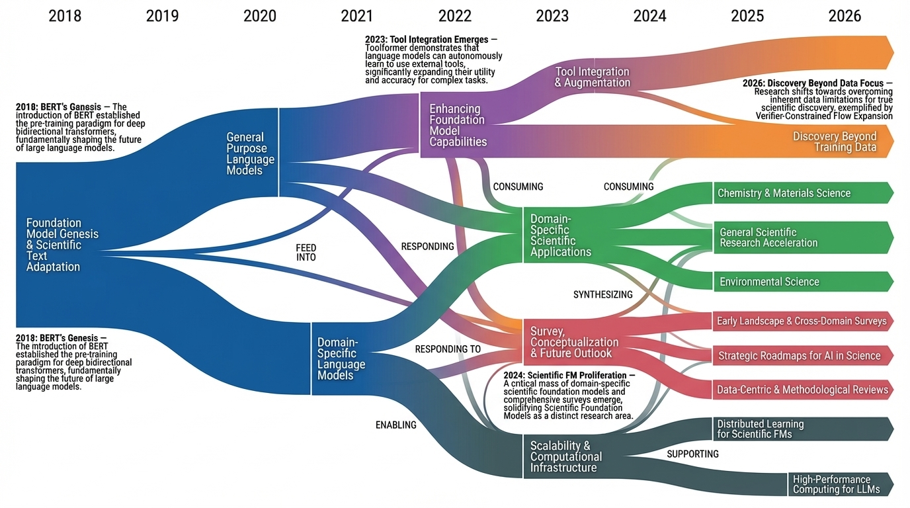
Category Overview
Scientific Foundation Models는 과학 분야에 특화된 대규모 사전학습 모델의 개발과 아키텍처를 다루는 핵심 연구 영역입니다. 과학 코퍼스(scientific corpora)를 기반으로 사전학습된 이러한 모델들은 다양한 과학 분야에서 범용적으로 활용될 수 있으며, 이는 과학적 발견 프로세스의 가속화를 가능하게 합니다[024][180]. 도메인 특화 언어 사전학습(scientific language pretraining)은 SciBERT, Galactica, SciLLM 등의 모델 개발을 통해 과학 텍스트에 대한 언어 이해 능력을 극대화하고 있으며[138][156], 이는 기존 범용 사전학습 모델의 한계를 극복하는 중요한 접근방식입니다[135][206][207][208]. 또한 확산 모델(diffusion models), 흐름 매칭(flow matching), 생성 모델(generative models) 등의 기술들이 분자 및 물질 설계에 적용되고 있으며, 이는 혁신적인 물질 발견과 분자 엔지니어링을 가능하게 합니다[019][202][239]. 동시에 검색 증강 생성(retrieval-augmented generation, RAG) 및 도구 활용(tool-use) 기능이 강화된 파운데이션 모델들이 개발되면서, 외부 지식 자원과 전문 도구의 통합을 통해 모델의 성능과 신뢰성이 지속적으로 향상되고 있습니다[086][118]. 이러한 기술 발전은 화학, 생물학, 재료과학, 환경과학 등 다양한 과학 분야에서 AI 기반 연구의 자동화와 지능화를 추진하고 있으며[096][163][212][224], 향후에는 연합학습(federated learning)과 같은 분산 학습 기법을 통해 대규모 슈퍼컴퓨팅 자원을 활용한 더욱 강력한 과학 파운데이션 모델의 개발이 예상됩니다[025][040].
- Scientific Language Pretraining: 과학 분야의 대규모 언어 모델 개발을 위한 핵심 기초로서, 과학 논문, 교과서, 데이터베이스 등의 전문 코퍼스를 활용한 도메인 특화 사전학습이 중요한 역할을 하고 있습니다. SciBERT[138]와 같은 초기 모델들은 과학 텍스트에 특화된 토크나이저와 학습 데이터를 활용하여 일반 BERT[135]보다 과학 문헌 이해에 우수한 성능을 보였습니다. 최근에는 Galactica[156]와 같은 대규모 과학 언어 모델들이 화학, 생물학, 물리학 등 다양한 과학 분야의 지식을 통합하여 학습함으로써 과학적 추론과 문제 해결 능력을 크게 향상시키고 있습니다. 이러한 과학 특화 사전학습 기술은 과학 연구의 다양한 단계에서 활용되며[206][207][208], 향후 멀티모달 데이터와 구조화된 과학 지식을 통합한 보다 고도화된 사전학습 방법론의 발전이 기대되고 있습니다.
- Generative & Flow-Based Models for Science: 확산 모델(Diffusion Models), 유동 매칭(Flow Matching), 변분 자동인코더(Variational Autoencoders, VAE) 등의 생성 모델들이 분자 및 재료 설계 영역에서 혁신적인 도구로 활용되고 있습니다. 이러한 생성 모델들은 화학 공간의 복잡한 분포를 학습하여 새로운 분자 구조나 재료 특성을 예측하고 생성할 수 있으며[239], 특히 검증 제약 조건을 결합한 접근법[019]은 데이터를 넘어선 혁신적인 분자 발견을 가능하게 하고 있습니다. 최근 연구들은 물리 기반 제약 조건과 생성 모델을 결합하여 과학적으로 타당하면서도 새로운 물질을 설계하는 방법론을 개발하고 있습니다[096]. 향후에는 계산 비용을 감소시키면서도 생성 품질을 향상시키고, 다중 목적 최적화 문제에 대응하는 더욱 정교한 생성 모델의 개발이 필요할 것으로 예상됩니다.
- Tool-Augmented & RAG Models: 검색 증강 생성(Retrieval-Augmented Generation, RAG) 기술과 도구 활용 능력을 갖춘 기초 모델들은 과학 연구에 필수적인 외부 지식과 계산 자원에 대한 접근성을 크게 향상시키고 있습니다. Toolformer[086]는 언어 모델이 계산기, 검색 엔진, 과학 데이터베이스 등 다양한 외부 도구를 독립적으로 활용하도록 학습할 수 있음을 보여주었으며, RAG 기술[118]은 광대한 과학 문헌과 데이터베이스로부터 관련 정보를 검색하여 답변의 정확성과 신뢰성을 높입니다. 과학 대규모 언어 모델들은 이러한 기술들을 통합하여 복잡한 과학 질문에 대한 더욱 신뢰할 수 있는 답변을 제공하며[207][212], 나아가 과학 실험 설계, 문헌 분석, 데이터 해석 등 다양한 과학적 작업을 자동화할 수 있습니다. 향후에는 멀티모달 정보 검색, 실시간 지식 업데이트, 인간 과학자와의 협력 구조 개선 등이 중요한 발전 방향이 될 것으로 보입니다.
Verifier-Constrained Flow Expansion for Discovery Beyond the Data
사전 학습된 플로우/디퓨전 모델이 훈련 데이터의 좁은 영역에만 밀도를 집중시키는 한계를 극복하기 위해, 외부 검증기(verifier)를 활용하여 유효 설계 공간 전체로 모델의 밀도를 확장하는 Flow Expander(FE)를 제안한다. 강한 검증기(valid design space를 정확히 특성화)와 약한 검증기(필터 역할만 수행)를 형식적으로 구분하고, 각각에 대해 전역적(global) 및 국소적(local) 플로우 확장 문제를 검증기 제약 엔트로피 최대화로 정식화한다. FE는 플로우 프로세스의 노이즈 상태 공간에서 미러 디센트를 수행하며, 이상적/일반적 조건 하 수렴 보장을 제공한다.
플로우/디퓨전 모델의 설계 공간 탐색이라는 AI for Science의 핵심 문제를 검증기 제약 엔트로피 최대화라는 수학적으로 엄밀한 프레임워크로 해결한 우수한 연구이다. 강한/약한 검증기의 형식적 구분, Expand-then-Project 스킴, 노이즈 상태 공간으로의 리프팅이라는 세 가지 핵심 아이디어가 자연스럽게 결합되어 있으며, O(1/K) 수렴 보장과 분자 설계 실험 결과가 이론적 주장을 뒷받침한다. ICLR 2026에 채택된 것이 납득되는 완성도 높은 논문이다.
Toolformer: Language Models Can Teach Themselves to Use Tools
Toolformer는 언어 모델이 외부 도구(계산기, QA 시스템, 검색 엔진, 번역기, 달력)의 사용법을 자기지도 학습 방식으로 스스로 학습하는 방법론이다. LM이 텍스트 내 잠재적 API 호출 위치와 인수를 생성하고, perplexity 감소 기준으로 유용한 호출만 필터링한 데이터셋으로 fine-tuning하여, 6.7B 파라미터 GPT-J 기반으로 175B GPT-3를 다수 태스크에서 능가하는 zero-shot 성능을 달성했다.
Tool learning 분야의 선구적 연구로, LM이 자기지도 학습 방식으로 외부 도구의 사용법을 스스로 학습할 수 있음을 최초로 체계적으로 입증했다. "perplexity 감소 = 유용한 API 호출"이라는 간결하면서도 강력한 원칙에 기반한 필터링 메커니즘이 핵심 혁신이며, 6.7B 모델이 175B GPT-3를 능가하는 결과는 도구 활용이 단순한 모델 스케일링의 대안이 될 수 있음을 보여준다. 도구 체이닝과 interactive 사용의 한계는 이후 연구들(AnyTool, ToolLLM 등)이 해결 방향을 제시했으나, Toolformer의 self-supervised 학습 패러다임은 여전히 이 분야의 근본적 토대로 남아 있다.
Retrieval-Augmented Generation for Knowledge-Intensive NLP Tasks
사전학습된 seq2seq 모델(BART)의 parametric memory와 Wikipedia 기반 dense vector index의 non-parametric memory를 결합한 **Retrieval-Augmented Generation (RAG)** 프레임워크를 제안한다. 입력 쿼리에 대해 DPR(Dense Passage Retriever)로 관련 문서를 검색하고, 검색된 문서를 latent variable로 취급하여 생성 과정에서 marginalize하는 두 가지 변형(RAG-Sequence, RAG-Token)을 소개한다. 이를 통해 knowledge-intensive NLP 태스크 전반에서 범용적으로 적용 가능한 fine-tuning 레시피를 확립하였다. ---
지식 집약적 NLP 과제에서 검색과 생성을 결합한 RAG 패러다임을 확립한 Facebook AI의 NeurIPS 2020 기념비적 논문으로, 현재 LLM 응용의 표준 아키텍처를 정초했다.
BERT: Pre-training of Deep Bidirectional Transformers for Language Understanding

BERT(Bidirectional Encoder Representations from Transformers)는 Masked Language Model(MLM)과 Next Sentence Prediction(NSP)이라는 두 가지 비지도 사전학습 목표를 통해 깊은 양방향 Transformer 표현을 학습하는 언어 모델이다. 사전학습된 BERT에 단일 출력 레이어만 추가하여 fine-tuning하면, 11개 NLP 태스크에서 동시에 SOTA를 달성하며, task-specific architecture 설계의 필요성을 근본적으로 감소시켰다.
NLP 분야의 패러다임을 근본적으로 전환시킨 landmark 논문이다. MLM이라는 개념적으로 단순한 혁신을 통해 깊은 양방향 사전학습을 가능하게 하고, "pre-train then fine-tune" 패러다임을 확립하여 task-specific architecture 설계의 시대를 종식시켰다. 11개 벤치마크에서의 압도적 성능 향상, 풍부한 ablation study, 그리고 코드/모델 공개를 통해 후속 연구의 폭발적 성장을 촉발한 점에서 NLP 역사상 가장 영향력 있는 논문 중 하나이다.
SciBERT: A Pretrained Language Model for Scientific Text
과학 텍스트에 특화된 사전학습 언어모델 SciBERT를 제안한다. BERT와 동일한 아키텍처를 사용하되, Semantic Scholar에서 수집한 1.14M 편의 과학 논문(바이오메디컬 82%, 컴퓨터과학 18%) 전문(full text)으로 사전학습하고, 과학 도메인에 최적화된 새로운 어휘(SCIVOCAB)를 구축하여 다양한 과학 NLP 태스크에서 BERT-Base를 유의미하게 능가하는 성능을 달성한다.
과학 텍스트 특화 BERT 사전학습 모델을 제시한 AllenAI의 2019년 기념비적 연구로, 다양한 과학 NLP 과제에서 일관된 성능 향상을 실증하며 도메인 특화 사전학습의 표준을 확립했다.
Galactica: A Large Language Model for Science

과학 문헌과 데이터의 폭발적 증가로 인한 정보 과부하 문제를 해결하기 위해, 과학 지식을 저장·결합·추론할 수 있는 대규모 언어 모델 **Galactica**를 제안한다. 4,800만 편의 논문, 교과서, 강의 노트, 수백만 개의 화합물 및 단백질 서열, 과학 웹사이트, 백과사전 등 총 1,060억 토큰의 고품질 큐레이션 과학 코퍼스로 학습하여, 기존 범용 LLM과 차별화된 과학 특화 언어 모델을 구현하였다. 검색 엔진 중심의 기존 과학 지식 접근 방식을 넘어, 언어 모델이 과학의 새로운 인터페이스가 될 수 있음을 보여주는 선구적 연구이다. ---
과학 지식에 특화된 106B 토큰 대규모 언어 모델로 수식·코드·인용을 통합 처리하는 Meta AI의 야심찬 연구로, 조기 철회 논란에도 불구하고 과학 전용 LLM 연구의 이정표가 되었다.
ToolLLM: Facilitating Large Language Models to Master 16000+ Real-world APIs
오픈소스 LLM(예: LLaMA)이 외부 API 도구를 활용하는 능력에서 폐쇄형 모델(ChatGPT, GPT-4)에 크게 뒤처지는 문제를 해결하기 위한 **범용 도구 사용 프레임워크**다. RapidAPI Hub에서 수집한 16,464개의 실제 REST API를 기반으로, 데이터 구축(ToolBench), 모델 학습(ToolLLaMA), 자동 평가(ToolEval)를 아우르는 종합적인 파이프라인을 제시한다. 핵심은 ChatGPT를 활용한 자동 데이터 구축과, 깊이 우선 탐색 기반 의사결정 트리(DFSDT)를 통한 추론 능력 강화에 있다. ---
16000개 이상 실제 API를 활용한 ToolLLM/ToolBench는 LLM 도구 사용 능력의 기반 인프라를 구축한 분야 필수 참고 논문이다.
Scientific discovery in the age of artificial intelligence
AI가 과학 발견의 전 과정 -- 가설 생성, 실험 설계, 데이터 수집/해석 -- 을 어떻게 augment하고 가속하는지를 체계적으로 정리한 종합 리뷰이다. Self-supervised learning, geometric deep learning, generative AI, reinforcement learning 등 핵심 기법이 물리학, 화학, 생물학, 지구과학 등 다양한 분야에서 과학적 발견을 가능하게 하는 방식을 분석하고, 데이터 품질, out-of-distribution 일반화, 해석 가능성 등 남은 과제를 제시한다.
AI4Science 분야의 landscape를 가장 포괄적으로 조망한 리뷰로, 과학 발견 프로세스 전반에 걸친 AI 기법의 체계적 정리와 grand challenges 식별이 뛰어나다. 다만 review 논문 특성상 기술적 novelty는 제한적이며, LLM 시대의 급변하는 상황을 완전히 반영하지 못한 한계가 있다.
MatterChat: A Multi-Modal LLM for Material Science
MatterChat는 무기 재료의 원자 구조 데이터와 텍스트 입력을 통합하는 구조 인식(structure-aware) 멀티모달 대형 언어 모델이다. 사전학습된 범용 기계학습 원자간 포텐셜(CHGNet)과 사전학습된 LLM(Mistral 7B)을 BLIP-2 스타일의 경량 브릿지 모듈로 연결하여, 재료 물성 예측(분류 6종 + 수치 3종)과 인간-AI 상호작용(과학적 추론, 합성 절차 안내)에서 GPT-4 및 기존 물리 ML 모델을 능가하는 성능을 달성했다.
사전학습된 uMLIP과 LLM을 경량 브릿지로 연결한다는 아이디어는 재료과학에서 멀티모달 AI의 실용적 방향을 제시한 의미 있는 연구이다. 특히 구조 정보의 완전한 보존과 인간-AI 상호작용의 동시 지원은 기존 접근법의 핵심 한계를 해결한다. 다만 수치 예측 정확도의 실용적 수준 도달 여부, 합성 절차 생성의 신뢰성 검증 부재, 단일 데이터 소스 의존 등은 후속 연구에서 보완이 필요하다.
Towards a Science of Scaling Agent Systems
LLM 기반 에이전트 시스템의 **정량적 스케일링 원리**를 도출한 연구이다. "More agents is all you need"라는 기존 주장에 반대하여, 멀티 에이전트 시스템(MAS)의 효과는 에이전트 수가 아닌 **아키텍처-태스크 정합성(architecture-task alignment)**에 의해 결정됨을 180개 통제된 구성(3개 LLM 패밀리 x 5개 아키텍처 x 4개 벤치마크)에서 실증한다. 경험적 조정 메트릭을 사용한 혼합 효과 모델(R^2=0.524)을 도출하여, 미지의 태스크에 대해 87% 정확도로 최적 아키텍처를 예측한다. ---
180개 구성 조합으로 에이전트 스케일링의 아키텍처-태스크 정렬 원칙을 도출한 체계적 실증 연구로 에이전트 설계에 실용적 지침을 제공한다.
Foundation models in bioinformatics
ABSTRACT With the adoption of foundation models (FMs), artificial intelligence (AI) has become increasingly significant in bioinformatics and has successfully addressed many historical challenges, such as pre-training frameworks, model evaluation and interpretability. In this review, we introduce recent advancements in bioinformatics FMs employed in a variety of downstream tasks, including genomics, transcriptomics, proteomics, drug discovery and single-cell analysis.
높은 수준의 기여와 탄탄한 실험적 검증을 보여주는 연구.
Scaling Large Language Models for Next-Generation Single-Cell Analysis
In this work, we build upon the Cell2Sentence (C2S) framework, which represents scRNA-seq profiles as textual “cell sentences,” to train Large Language Models (LLMs) on a corpus comprising over one billion tokens of transcriptomic data, biological text, and metadata.
높은 수준의 기여와 탄탄한 실험적 검증을 보여주는 연구.
Artificial Intelligence for Direct Prediction of Molecular Dynamics Across Chemical Space
We present a novel neural network architecture, MDtrajNet, and a pre-trained foundational model, MDtrajNet-1, that directly generates MD trajectories across chemical space, bypassing force calculations and integration. 
AI for Science 분야에서 주목할 만한 기여를 보이는 연구.
Foundation Models for Environmental Science: A Survey of Emerging Frontiers
환경 과학에서의 foundation model 적용을 포괄적으로 정리한 survey로, forward prediction, data generation, data assimilation, downscaling, inverse modeling, model ensembling, decision-making의 7가지 주요 use case에 걸친 최신 동향과 모델 개발 프로세스(데이터 수집 → 아키텍처 설계 → 학습 → 튜닝 → 평가)를 체계적으로 다룬다.
환경 과학에서의 foundation model 적용을 7가지 use case와 개발 프로세스로 체계적으로 정리한 시의적절한 survey이다. 학제간 지식 전달의 가치가 크나, 정량적 벤치마크와 환경 데이터 특수성에 대한 깊이 있는 논의가 보완되면 더욱 유용할 것이다.
Artificial intelligence for science—bridging data to wisdom
데이터에서 지식, 지식에서 지혜로 이어지는 AI-과학 통합의 계층적 로드맵을 제시하며, AI가 과학적 발견의 전 주기를 어떻게 가속화할 수 있는지를 논한 포괄적 리뷰.
AI와 과학 연구의 통합을 DIKW 계층으로 체계화한 유용한 리뷰로, 분야 진입자와 정책 입안자 모두에게 좋은 참고 자료이다.
Foundation models for materials discovery – current state and future directions
재료 발견을 위한 파운데이션 모델의 현황을 체계적으로 정리하고, 데이터 부족·다중 스케일 물리·설명 가능성 등 핵심 과제를 식별하며 향후 방향을 제시한 종합 리뷰.
재료 발견용 파운데이션 모델의 현황과 도전 과제를 잘 정리한 리뷰로, 해당 분야 연구자와 입문자 모두에게 유용한 참고 자료이다.
A Perspective on Foundation Models in Chemistry
화학 및 재료 과학 분야에서 파운데이션 모델(foundation model)의 최근 발전을 체계적으로 정리한 관점(perspective) 논문이다. 물성 예측(property prediction), 기계학습 원자간 포텐셜(MLIP), 역설계(inverse design)의 세 가지 핵심 도메인에 걸쳐 "작은 파운데이션 모델(small FM)"과 "큰 파운데이션 모델(big FM)"로 분류하고, 사전학습 방법론(SSL, 멀티모달 학습, LLM 활용)과 함께 미래 방향을 논의한다.
화학 분야 파운데이션 모델의 현황과 미래를 체계적으로 정리한 JACS Au 관점 논문으로, 분자·반응·재료 전 영역을 포괄하는 로드맵이 후속 연구자들에게 실질적 가이드를 제공한다.
ChartGemma: Visual Instruction-tuning for Chart Reasoning in the Wild
기존 차트 이해 모델들이 데이터 테이블 기반으로 instruction 데이터를 생성하고, 약하게 정렬된 비전-언어 백본을 사용하는 두 가지 핵심 한계를 해결하기 위해, 차트 이미지로부터 직접 instruction 데이터를 생성하고 강하게 정렬된 PaliGemma(3B)를 백본으로 활용하는 ChartGemma를 제안한다. 5개 벤치마크에서 SOTA를 달성하면서도 기존 모델(7B~13B) 대비 현저히 작은 크기를 유지한다.
PaliGemma 3B 백본에 이미지 기반 인스트럭션 튜닝을 적용해 효율적 차트 이해를 달성한 연구로, 소형 모델로 대형 모델에 필적하는 성능을 보인 데이터 효율성이 핵심 기여이다.
Foundation-Model Surrogates Enable Data-Efficient Active Learning for Materials Discovery
재료 탐색을 위한 능동 학습(Active Learning, AL)에서 기존 대리 모델(surrogate model)인 Gaussian Process(GP)와 Random Forest(RF)가 가진 근본적 한계를 해결하기 위해, transformer 기반 파운데이션 모델 **TabPFN**을 대리 모델로 활용하는 **In-Context Active Learning (ICAL)** 프레임워크를 제안한다. TabPFN은 수백만 개의 합성 회귀 과제로 사전 학습된 메타 학습 사전 확률(meta-learned prior)을 활용하여, 데이터셋별 재학습 없이 단일 순전파(forward pass)로 확률적 추론을 수행한다. 10개 재료 벤치마크 데이터셋에서 GP 대비 평균 52%, RF 대비 29.77%의 추가 평가 횟수 절감을 달성하며, 소규모 데이터 환경에서의 재료 발견 효율을 크게 향상시켰다. ---
TabPFN을 재료 발견 능동 학습의 대리 모델로 적용하여 불확실성 보정이 AL 성능의 핵심임을 실증한 실용적 연구로, 소규모 실험 과학 전반에 파급 가능성이 있다.
Scalable Cross-Facility Federated Learning for Scientific Foundation Models on Multiple Supercomputers

4개의 미국 DOE 리더십급 슈퍼컴퓨터(Polaris, Aurora, Frontier, Perlmutter)에서 연합학습(FL)을 실행하는 교차 시설 프레임워크를 설계하고, 화학 instruction 데이터셋에서 Llama2-7B를 연합 파인튜닝하여 이기종 HPC 환경에서의 FL 실행 가능성과 알고리즘 선택의 중요성을 실증한 연구.
4개 슈퍼컴퓨터에서 실제 연합학습을 실증한 인프라 연구로 시스템 설계의 실용적 통찰이 풍부하나 과학적 성능 평가가 부재하다.
Fine-tuning Large Language Models for Domain Adaptation: Exploration of Training Strategies, Scaling, Model Merging and Synergistic Capabilities
재료과학 도메인에 특화된 LLM을 개발하기 위한 fine-tuning 전략(CPT, SFT, DPO, ORPO)과 모델 병합(SLERP)의 효과를 체계적으로 탐구한 연구이다. 핵심 발견은 SLERP(Spherical Linear Interpolation)를 통한 모델 병합이 단순 평균을 크게 초월하는 **비선형적 시너지 효과**를 발휘하여, 개별 부모 모델이 갖지 못한 새로운 능력(emergent capabilities)을 창출한다는 점이다. 이 효과는 7B/8B 규모 모델에서 두드러지지만, 1.7B 소형 모델에서는 나타나지 않아 모델 스케일이 핵심 요인임을 시사한다.
SLERP 모델 병합을 재료 과학 LLM 미세조정에 적용한 MIT 연구로, 창발적 역량 발현이라는 흥미로운 발견을 포함하나 단일 도메인·소규모 평가의 한계가 있다.
ChartLlama: A Multimodal LLM for Chart Understanding and Generation
GPT-4의 언어 및 코딩 능력을 활용하여 차트 데이터 생성, 차트 그림 생성, instruction 데이터 생성의 3단계 파이프라인으로 고품질 합성 instruction-tuning 데이터셋(11K 차트, 160K instruction, 10개 차트 유형, 7개 태스크)을 구축하고, 이를 기반으로 차트 이해와 생성을 동시에 수행하는 멀티모달 LLM인 ChartLlama를 제안한 연구이다.
합성 데이터 파이프라인으로 차트 이해와 생성을 동시에 가능하게 한 NTU/Tencent 연구로, 이해-생성 통합 접근이 차별적이나 합성 데이터 품질의 실제 평가 한계가 있다.
LLM4SR: A Survey on Large Language Models for Scientific Research
LLM이 과학 연구의 전 주기에 걸쳐 어떻게 활용되고 있는지를 체계적으로 정리한 최초의 포괄적 서베이 논문. 연구 파이프라인을 (1) 과학적 가설 발견, (2) 실험 계획 및 수행, (3) 논문 작성, (4) 피어 리뷰의 4단계로 구분하고, 각 단계별 방법론, 벤치마크, 평가 기준을 상세히 분류하여 제시한다. GitHub 리포지토리(https://github.com/du-nlp-lab/LLM4SR)를 통해 관련 자원을 공개한다.
과학 연구를 위한 LLM을 4단계 파이프라인 분류체계로 체계화한 서베이로, 광범위한 문헌을 종합하는 지도 역할을 하지만 비판적 분석보다는 나열에 치우친 한계가 있다.
Foundation Models for Materials Discovery -- Current State and Future Directions
Foundation model(LLM을 포함하는 대규모 사전학습 모델의 총칭)이 재료 발견(materials discovery) 분야에 어떻게 적용되고 있는지를 조망하는 perspective 논문이다. 데이터 추출, 물성 예측, 분자 생성, 합성 계획의 네 가지 핵심 과제에서의 현황을 리뷰하고, 향후 멀티모달 모델, 새로운 데이터 캡처 방식, 멀티피델리티(multi-fidelity) 접근법이 이 분야의 방향을 결정할 것이라 전망한다.
IBM Research의 재료 발견을 위한 파운데이션 모델 관점 논문으로, 현황과 미래 방향을 개괄적으로 정리했지만 구체적 실험 근거나 독창적 방법론 없이 비전 제시에 그친다.
AI for Science 2025

AI for Science 2025 논문에 대한 상세 리뷰. Abstract가 제공되지 않아 PDF 본문 기반 분석 필요.
의미 있는 기여를 하나, 독창성 또는 실험적 검증의 보강이 필요한 연구.
Scientific Large Language Models: A Survey on Biological & Chemical Domains
In this paper, we endeavor to methodically delineate the concept of "scientific language", whilst providing a thorough review of the latest advancements in scientific LLMs. By offering a comprehensive overview of technical developments in this field, this survey aspires to be an invaluable resource for researchers navigating the intricate landscape of scientific LLMs.
관련 분야의 포괄적 서베이로서 연구자들에게 유용한 참고 자료를 제공하나, 서베이 논문 특성상 독창적 기여는 제한적이다.
A Survey of Scientific Large Language Models: From Data Foundations to Agent Frontiers
This survey presents a comprehensive, data-centric synthesis that reframes the development of Sci-LLMs as a co-evolution between models and their underlying data substrate.
관련 분야의 포괄적 서베이로서 연구자들에게 유용한 참고 자료를 제공하나, 서베이 논문 특성상 독창적 기여는 제한적이다.
A Comprehensive Survey of Scientific Large Language Models and Their Applications in Scientific Discovery

In this paper, we aim to provide a more holistic view of the research landscape by unveiling cross-field and cross-modal connections between scientific LLMs regarding their architectures and pre-training techniques. Resources related to this survey are available at https://github.com/yuzhimanhua/Awesome-Scientific-Language-Models.
관련 분야의 포괄적 서베이로서 연구자들에게 유용한 참고 자료를 제공하나, 서베이 논문 특성상 독창적 기여는 제한적이다.
Towards Scientific Intelligence: A Survey of LLM-based Scientific Agents
This survey provides a focused review of the architectures, design, benchmarks, applications, and ethical considerations surrounding LLM-based scientific agents. By examining their development and challenges, this survey offers a comprehensive roadmap for researchers and practitioners to harness these agents for more efficient, reliable, and ethically sound scientific discovery.
관련 분야의 포괄적 서베이로서 연구자들에게 유용한 참고 자료를 제공하나, 서베이 논문 특성상 독창적 기여는 제한적이다.
From Automation to Autonomy: A Survey on Large Language Models in Scientific Discovery
This survey systematically charts this burgeoning field, placing a central focus on the changing roles and escalating capabilities of LLMs in science. Overall, this survey provides a conceptual architecture and strategic foresight to navigate and shape the future of AI-driven scientific discovery, fostering both rapid innovation and responsible advancement.
관련 분야의 포괄적 서베이로서 연구자들에게 유용한 참고 자료를 제공하나, 서베이 논문 특성상 독창적 기여는 제한적이다.
Transforming Science with Large Language Models: A Survey on AI-assisted Scientific Discovery, Experimentation, Content Generation, and Evaluation
In this survey, we provide a curated overview of literature representative of the core techniques, evaluation practices, and emerging trends in AI-assisted scientific discovery. We aim for this survey to serve both as an accessible, structured orientation for newcomers to the field, as well as a catalyst for new AI-based initiatives and their integration into future ``AI4Science'' systems.
관련 분야의 포괄적 서베이로서 연구자들에게 유용한 참고 자료를 제공하나, 서베이 논문 특성상 독창적 기여는 제한적이다.
From GPU Engineering to Scientific Discovery: Parallelism Techniques for Large Language Models
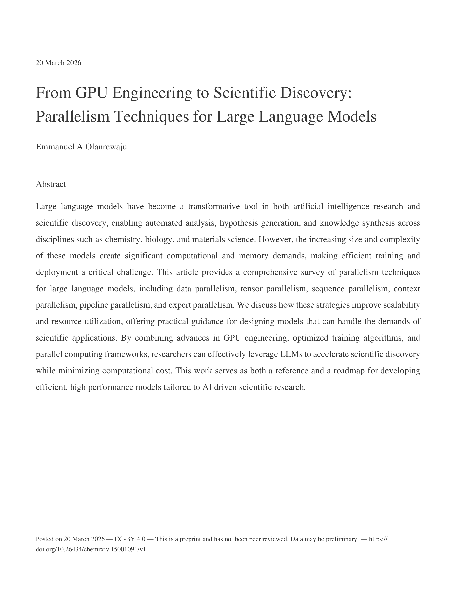
From GPU Engineering to Scientific Discovery: Parallelism Techniques for Large Language Models
From GPU Engineering to Scientific Discovery: Parallelism Techniques for Large Language Models은(는) from gpu engineering to scientific discovery: parallelism techniques for large language models을 다루는 연구이다.
Accelerating Scientific Research with Gemini: Case Studies and Common Techniques
Google Gemini 모델(특히 Gemini Deep Think)을 활용하여 이론 컴퓨터과학, 경제학, 최적화, 물리학 등 다양한 분야에서 미해결 문제 풀이, 추측 반증, 새로운 증명을 실현한 사례 연구 모음과, 이로부터 추출한 효과적인 인간-AI 협업 기법들을 정리한 연구. ---
Gemini를 활용한 과학 연구 사례 연구 모음이나 생존 편향과 체계적 평가 부재로 인해 학술적 신뢰성이 제한적이다.
Small Language Models are the Future of Agentic AI
에이전틱 AI 시스템에서 대형 언어 모델(LLM)을 소형 언어 모델(SLM, ~10B 파라미터 이하)로 대체해야 한다는 포지션 페이퍼이다. SLM이 (V1) 에이전틱 작업에 **충분한 성능**을 보유하고, (V2) 운영적으로 **더 적합**하며, (V3) **더 경제적**이라는 세 가지 핵심 주장을 전개한다. 범용 대화 능력이 필요한 경우에는 SLM을 기본으로 하고 LLM을 선별적으로 호출하는 **이질적(heterogeneous) 에이전틱 시스템**을 제안한다. LLM에서 SLM으로의 전환을 위한 6단계 변환 알고리즘도 제시한다. ---
에이전트 AI에서 SLM 우선 접근을 주장하는 포지션 페이퍼로 논거는 설득력 있으나 실증적 검증이 없어 주장의 근거가 약하다.
Generative AI and the Foundation Model Era: A Comprehensive Review

Generative AI와 Foundation Model의 아키텍처(Transformer, Diffusion, Multimodal), 학습 전략(사전학습, 파인튜닝), 10개 응용 분야를 체계적으로 정리하고, 통합 분류 프레임워크와 교차 도메인 비교 차원을 제안한 포괄적 서베이 논문.
10개 도메인에 걸친 GenAI 현황을 조감하는 참고 자료로서 유용하나 새로운 기술적 기여나 실험적 검증이 없는 서베이 논문이다.
Towards AI for Science: Developing a Conceptual Basis for Transforming Research Support Services in University Libraries

대학 도서관이 AI for Science(AI4S) 연구 프로젝트를 지원하기 위해 어떤 연구지원서비스(RSS)를 제공할 수 있는지를 체계적 문헌 리뷰를 통해 분석하고, 5개 주제와 21개 서비스로 구성된 개념 모델을 제시한 논문이다. ---
도서관 과학 관점에서 AI4S 데이터 관리를 논하는 시론적 논문으로 AI4S 연구자에게 직접적 기여는 제한적이다.
Artificial Intelligence for Science — Bridging Data to Wisdom
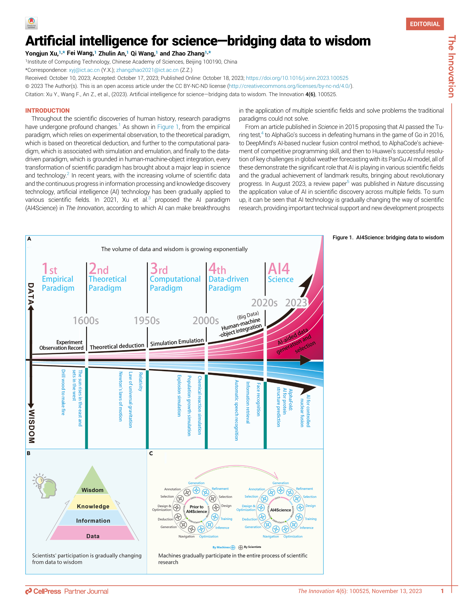
과학 연구 패러다임이 경험적 → 이론적 → 계산적 → 데이터 기반을 거쳐 AI4Science라는 새로운 패러다임으로 진화하고 있으며, AI가 데이터에서 지혜(wisdom)로의 전환을 가능하게 한다는 비전을 제시하는 에디토리얼이다.
AI4S를 5번째 과학 패러다임으로 선언하는 2페이지 편집 논평으로 비전 제시에는 의의가 있으나 학술적 기여는 미미하다.
AI4Research: A Survey of Artificial Intelligence for Scientific Research
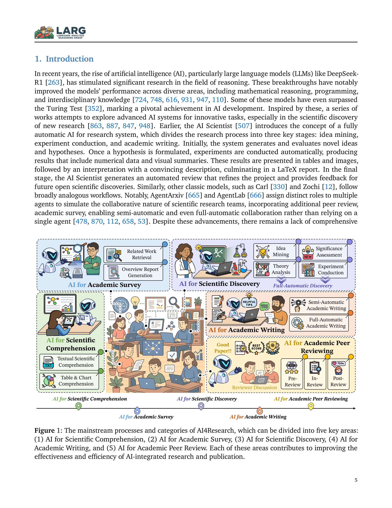
AI가 과학 연구의 전 생애주기(scientific research lifecycle)를 어떻게 지원하고 자동화할 수 있는지를 체계적으로 정리한 포괄적 서베이 논문이다. 연구 과정을 5가지 핵심 영역 -- (1) 과학 문헌 이해(Scientific Comprehension), (2) 학술 서베이(Academic Survey), (3) 과학적 발견(Scientific Discovery), (4) 학술 논문 작성(Academic Writing), (5) 학술 피어 리뷰(Academic Peer Reviewing) -- 으로 분류하는 **AI4Research 택소노미**를 제안하고, 각 영역의 최신 연구 동향, 도구, 데이터셋, 벤치마크를 120페이지에 걸쳐 집대성하였다. ---
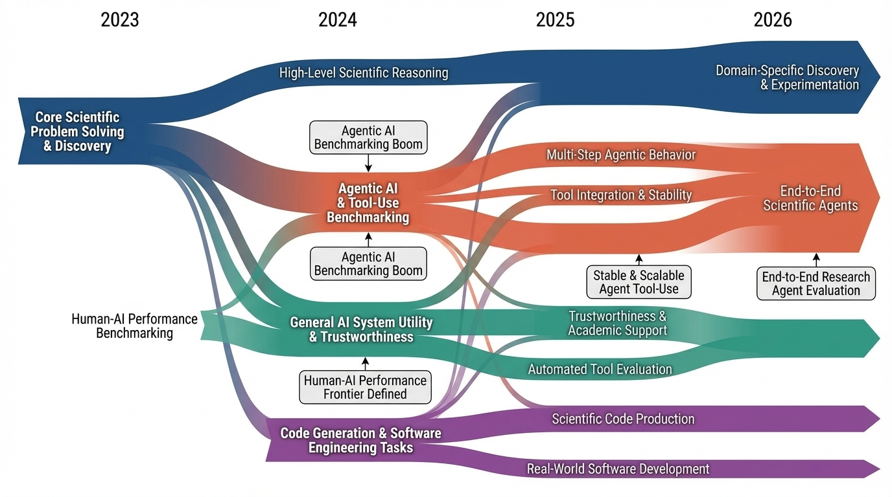
Category Overview
AI 기반 과학 연구의 발전에 따라 AI 시스템의 성능을 정량적으로 측정할 수 있는 표준화된 벤치마크와 평가 프레임워크의 중요성이 대두되고 있습니다. 본 카테고리는 과학적 작업에서 AI 시스템의 능력을 평가하기 위한 데이터셋, 평가 지표, 그리고 종합적인 평가 프레임워크를 다룹니다. 특히 대규모언어모델(LLM) 에이전트가 다단계 과학 태스크, 코딩, 도구 활용 등에서 얼마나 효과적으로 작동하는지 측정하는 에이전트 능력 벤치마크[092][039][109][187]와 과학적 문제 해결, 가설 생성, 혁신성 평가를 위한 과학적 추론 평가 방법론[219][225][036]이 중점적으로 다루어집니다. 현재의 주요 트렌드는 실제 연구 환경에서의 LLM 성능 평가[009][074], 도구 사용 안정성 평가[084], 그리고 창의적 사고와 문제 해결 능력에 대한 인간-AI 비교 분석[164][166][161]입니다. 또한 생물의학 데이터 과학[192], 소프트웨어 공학[152], 논문 평가 자동화[170] 등 다양한 과학 분야에 특화된 벤치마크 개발이 활발히 진행되고 있습니다. 향후 이 분야는 보다 엄밀한 평가 기준 설정, 도메인별 맞춤형 평가 지표 개발, 그리고 AI 시스템의 신뢰성과 재현성 평가에 집중할 것으로 예상됩니다.
- Agent Capability Benchmarks: 에이전트 능력 벤치마크는 대규모 언어 모델(Large Language Models, LLMs) 기반 에이전트가 다단계 과학 작업, 코딩, 도구 사용 능력을 얼마나 잘 수행하는지 평가하는 분야입니다. 최근 연구들은 실제 과학 연구 환경에서의 에이전트 성능을 측정하기 위해 다양한 벤치마크 스위트를 개발하고 있습니다[092][039][009]. 도구 사용의 안정성을 평가하는 벤치마크[084]부터 생의학 데이터 과학에서의 복잡한 추론 능력을 테스트하는 에이전트 훈련 환경[192], 나아가 실제 GitHub 이슈 해결 능력을 평가하는 연구[152]까지 다양한 수준의 벤치마크가 존재합니다. 이러한 벤치마크들은 에이전트가 단순한 작업뿐 아니라 자율적 추론과 장기간의 일관성 있는 동작[109]을 요구하는 실제 과학 연구 작업을 수행할 수 있는 정도를 평가합니다. 앞으로는 더 복잡한 멀티도메인 작업과 실시간 피드백 반영 능력을 평가하는 벤치마크 개발이 필요합니다.
- Scientific Reasoning Evaluation: 과학적 추론 평가는 과학 문제 해결, 가설 생성, 혁신성 등을 테스트하기 위한 데이터셋과 평가 방법론을 개발하는 영역입니다. 대학 수준의 과학 문제 해결 능력을 측정하는 벤치마크[219]부터 AI 연구의 최전선 과제들을 평가하는 벤치마크[037], 과학 데이터에서 대규모 언어 모델로의 AI for Science 준비도를 평가하는 연구[074]등이 개발되고 있습니다. LLM의 과학 발견 능력에 대한 평가[225]와 신뢰성 평가[036]는 모델의 실제 과학적 가치를 판단하는 데 중요한 역할을 합니다. 특히 새로운 연구 아이디어 생성 능력[164]이나 창의적 발산 사고 능력[166]과 같은 고차원적 과학 능력 평가는 인간 전문가와의 비교를 통해 LLM의 실제 한계를 드러내는 중요한 평가 방법입니다. 향후 과학적 추론 평가는 분야별 특수성을 반영한 맞춤형 벤치마크와 더불어 과학 커뮤니티의 실제 요구를 반영한 평가 기준 개발이 필요합니다.
ScienceAgentBench: Toward Rigorous Assessment of Language Agents for Data-Driven Scientific Discovery
LLM 기반 언어 에이전트가 데이터 기반 과학적 발견(data-driven scientific discovery)을 실제로 자동화할 수 있는지를 엄밀하게 평가하기 위한 벤치마크 **ScienceAgentBench**를 제안한다. 4개 분야(생물정보학, 전산화학, 지리정보과학, 심리학/인지신경과학)의 44편 피어리뷰 논문에서 추출한 102개 과제를 포함하며, 각 과제의 목표 출력을 독립 실행 가능한 Python 프로그램으로 통일하여 체계적으로 평가한다. 최고 성능 에이전트(Claude-3.5-Sonnet + self-debug)도 32.4%의 과제만 독립적으로 해결할 수 있어, 현재 LLM 에이전트의 과학 자동화 능력에 대한 과장된 주장에 경종을 울린다.
데이터 주도 과학 연구의 LLM 에이전트 역량을 5개 도메인·102개 실제 과제로 엄밀하게 평가한 ICLR 2025 벤치마크로, 최고 에이전트의 32.4% 성공률이 현재 한계를 명확히 드러낸다.
Can LLMs Generate Novel Research Ideas? A Large-Scale Human Study with 100+ NLP Researchers
100명 이상의 NLP 연구자를 모집하여 LLM 기반 아이디어 생성 에이전트와 인간 전문가의 연구 아이디어를 최초로 대규모 블라인드 비교한 연구. 7개 NLP 주제에 걸쳐 3가지 조건(인간 아이디어 49개, AI 아이디어 49개, AI+인간 재랭킹 아이디어 49개)을 79명의 전문 리뷰어가 블라인드 평가한 결과, AI가 생성한 아이디어가 인간 전문가 아이디어보다 통계적으로 유의하게 더 참신하다(p<0.05)는 결론을 도출했으나, 실현가능성에서는 다소 약한 것으로 나타났다.
100명 이상 NLP 연구자의 블라인드 평가로 AI 생성 아이디어가 인간보다 통계적으로 유의미하게 더 참신함을 입증한 연구로, 엄밀한 실험 설계가 AI 창의성 논쟁에 강력한 실증적 근거를 제공한다.
Can large language models provide useful feedback on research papers? A large-scale empirical analysis
GPT-4를 활용한 과학 논문 자동 피드백 생성 파이프라인을 구축하고, 그 유용성을 **대규모 회고적 분석**(Nature 계열 15개 저널 3,096편, ICLR 학회 1,709편)과 **전향적 사용자 연구**(미국 110개 기관 308명 연구자)를 통해 체계적으로 평가한 연구이다. 핵심 발견은 GPT-4 피드백과 인간 리뷰어 피드백의 중첩도(Nature 30.85%, ICLR 39.23%)가 인간 리뷰어 간 중첩도(Nature 28.58%, ICLR 35.25%)와 비슷한 수준이며, 연구자의 57.4%가 LLM 피드백이 도움이 된다고 응답했다는 것이다. ---
GPT-4의 논문 피드백을 Nature 및 ICLR 4,805편에서 대규모로 분석하여 구체성·실행 가능성·구조적 분포를 정량화한 연구로, LLM 리뷰 품질의 체계적 근거를 제공한 방법론적으로 견고한 기여이다.
ResearchGym: Evaluating Language Model Agents on Real-World AI Research
ResearchGym은 LLM 에이전트가 end-to-end 연구(가설 제안, 실험 설계, 구현, 평가)를 수행할 수 있는지를 객관적으로 평가하는 벤치마크 및 실행 환경이다. ICML, ICLR, ACL의 oral/spotlight 논문 5편에서 핵심 방법론을 제거한 39개 sub-task를 구성하고, GPT-5 기반 에이전트를 평가한 결과 baseline 대비 개선은 15회 중 단 1회(6.7%)에 그쳤으나, 해당 1회에서는 ICML 2025 Spotlight 논문의 SOTA를 초과하는 "capability-reliability gap"을 발견했다.
AI 에이전트의 자율 연구 역량을 closed-loop으로 객관 평가하는 최초의 접근 가능한 벤치마크를 제시한 시의적절한 연구이다. "Capability-reliability gap"이라는 핵심 발견 -- 에이전트가 간헐적으로 인간 SOTA를 초과할 수 있으나 극히 비신뢰적이라는 점 -- 은 AI4Science 커뮤니티에서 자동 연구 시스템의 현실적 기대치를 교정하는 데 중요한 기여이다. 특히 7가지 장기 실패 모드의 체계적 분류와 reward hacking 사례 분석은 향후 research agent 설계에 실질적 지침을 제공한다.
Hunt Globally: Wide Search AI Agents for Drug Asset Scouting in Investing, Business Development, and Competitive Intelligence
바이오제약 분야에서 글로벌 약물 자산 스카우팅(drug asset scouting)을 위한 트리 기반 자기학습 AI 에이전트 시스템(Bioptic Agent)과 완전성 중심 벤치마크(Completeness Benchmark)를 제안한다. 핵심 문제는 신약 혁신의 상당 부분이 미국 외, 비영어권 지역에서 발생하는데 기존 Deep Research AI 에이전트들이 이러한 다국어/이질적 소스에서의 포괄적 자산 발견에 한계를 보인다는 것이다. Bioptic Agent는 UCB(Upper Confidence Bound) 기반 트리 탐색, 다국어 병렬 조사, 전문가 정렬 검증을 결합하여 F1 79.7%를 달성, Claude Opus 4.6(56.2%), Gemini 3 Pro Deep Research(50.6%), GPT-5.2 Pro(46.6%) 등을 크게 상회한다.
바이오제약 자산 스카우팅이라는 실무적으로 중요하고 학술적으로 미개척된 문제를 정식화하고, 트리 기반 자기학습 에이전트로 기존 SOTA Deep Research 시스템을 크게 상회하는 성능을 보인 의미 있는 연구이다. 벤치마크 역생성 방법론과 UCB 기반 탐색 제어가 기술적으로 잘 설계되어 있다. 다만 테스트셋 규모(22개)가 매우 작고, 벤치마크와 시스템이 모두 자사 설계라는 이해충돌이 결과 해석에 주의를 요한다.
SciAgentGym: Benchmarking Multi-Step Scientific Tool-use in LLM Agents
4개 자연과학 분야의 1,780개 도메인 특화 도구를 갖춘 대규모 인터랙티브 환경 SciAgentGym과 계층적 평가 스위트 SciAgentBench를 구축하고, 의존성 그래프 기반 학습 데이터 합성(SciForge)으로 8B 모델이 235B 모델을 능가하는 과학 도구 사용 에이전트를 훈련한 연구. ---
1780개 도구 환경과 SciForge 에이전트로 과학적 작업 자동화를 실증한 연구로 8B 모델이 235B를 능가하는 놀라운 결과를 보였다.
StableToolBench: Towards Stable Large-Scale Benchmarking on Tool Learning of Large Language Models

StableToolBench는 기존 ToolBench의 불안정성 문제(API 상태 변화, 평가 무작위성)를 해결하기 위해 가상 API 서버(캐싱 시스템 + LLM 기반 API 시뮬레이터)와 안정적 평가 시스템(Solvable Pass Rate/Win Rate + GPT-4 평가자)을 제안한 벤치마크이다. 50%의 API가 비가용 상태에서도 성능 변동이 분산 범위 내에 머물러, 대규모 tool learning 벤치마크의 재현성과 비교 가능성을 크게 향상시켰다.
ToolBench의 재현성 문제를 캐싱과 LLM 시뮬레이션이라는 실용적 접근으로 해결한 엔지니어링 기여가 탁월한 논문이다. API 비가용률 50%에서도 안정적 성능을 유지하며, Turing Test를 통해 시뮬레이션의 현실성을 입증한 점이 인상적이다. 다만, GPT-4 의존성이 높아 비용과 재현성 측면에서 근본적 한계가 있으며, 실시간 데이터 의존 API 처리 등 해결해야 할 과제가 남아 있다. Tool learning 연구 커뮤니티에 안정적 벤치마킹 기반을 제공하는 중요한 인프라 수준의 기여이다.
Generalization Bias in Large Language Model Summarization of Scientific Research
LLM이 과학 논문을 요약할 때 원문보다 더 넓은 범위의 일반화(overgeneralization)를 체계적으로 생성하며, 최신 모델일수록 이 경향이 심화된다는 것을 4,900개 요약문 분석으로 실증한 연구. ---
LLM이 과학 요약에서 원인-결과 관계를 과잉 일반화한다는 체계적 편향을 4,900개 요약 분석으로 정량화하여, AI 기반 과학 커뮤니케이션의 신뢰성 문제를 실증적으로 제기한다.
ChatGPT Outperforms Crowd Workers for Text-Annotation Tasks
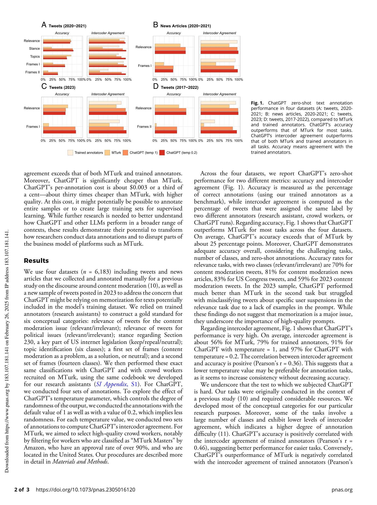
4개 데이터셋(트윗 및 뉴스 기사, n=6,183)을 사용하여 ChatGPT(gpt-3.5-turbo)의 zero-shot 텍스트 분류 성능을 Amazon Mechanical Turk(MTurk) 크라우드 워커 및 훈련된 어노테이터(연구보조원)와 체계적으로 비교한 연구. ChatGPT가 관련성, 입장, 주제, 프레임 탐지를 포함한 대부분의 어노테이션 태스크에서 크라우드 워커를 평균 약 25 퍼센트 포인트 상회하며, 코더 간 일치도(intercoder agreement)에서는 크라우드 워커와 훈련된 어노테이터 모두를 능가하고, 비용은 건당 약 $0.003로 MTurk 대비 약 30배 저렴함을 보여준다.
ChatGPT가 MTurk 크라우드 워커 대비 평균 25pp 높은 정확도와 30배 낮은 비용으로 텍스트 어노테이션을 수행함을 PNAS에 발표한 영향력 있는 연구로, 사회과학 연구 방법론의 전환점이 되었다.
Paper2Web: Let's Make Your Paper Alive!
In this paper, we introduce Paper2Web, a benchmark dataset and multi-dimensional evaluation framework for assessing academic webpage generation. 
AI for Science 분야에서 주목할 만한 기여를 보이는 연구.
MedAgentGym: A Scalable Agentic Training Environment for Code-Centric Reasoning in Biomedical Data Science
We introduce MedAgentGym, a scalable and interactive training environment designed to enhance coding-based biomedical reasoning capabilities in large language model (LLM) agents. 
AI for Science 분야에서 주목할 만한 기여를 보이는 연구.
SciBench: Evaluating College-Level Scientific Problem-Solving Abilities of Large Language Models
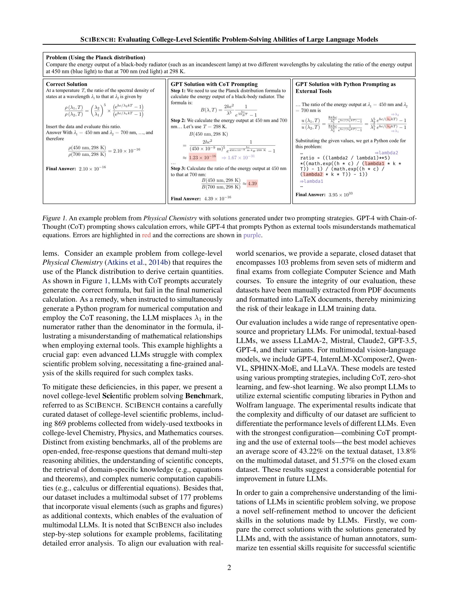
To systematically examine the reasoning capabilities required for solving complex scientific problems, we introduce an expansive benchmark suite SciBench for LLMs.
SciBench: Evaluating College-Level Scientific Problem-Solving Abilities of Large Language Models은(는) our analysis indicates that no single prompting strategy significantly outperforms the others and some strategies that demonstrate improvements in certain problem-solving skills could result in declines in other skills을 보여주는 연구이다.
Evaluating Large Language Models in Scientific Discovery
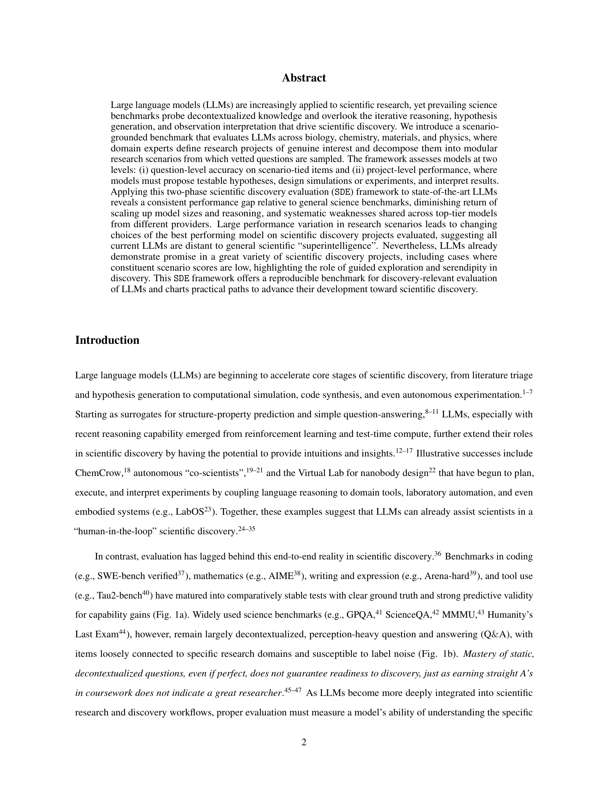
We introduce a scenario-grounded benchmark that evaluates LLMs across biology, chemistry, materials, and physics, where domain experts define research projects of genuine interest and decompose them into modular research scenarios from which vetted questions are sampled.. The framework assesses models at two levels: (i) question-level accuracy on scenario-tied items and (ii) project-level performance, where models must propose testable hypotheses, design simulations or experiments, and interpret results..
Evaluating Large Language Models in Scientific Discovery은(는) we introduce a scenario-grounded benchmark that evaluates llms across biology, chemistry, materials, and physics, where domain experts define research을 다루는 연구이다.
MolQuest: A Benchmark for Agentic Evaluation of Abductive Reasoning in Chemical Structure Elucidation

Figure 1: MolQuest 벤치마크 구조 — 화학 구조 결정 태스크에서 에이전트의 다단계 추론 및 실험 상호작용 평가 프레임워크
LLM이 실제 화학 구조 결정(chemical structure elucidation) 과제에서 다단계 추론과 실험적 상호작용을 얼마나 잘 수행하는지 평가할 수 있는 기존 벤치마크가 없었다. MolQuest는 이 공백을 메우기 위해 귀납적 추론(abductive reasoning) 기반의 에이전틱 벤치마크를 새롭게 제시하며, 정적 단일 QA가 아닌 멀티스텝 반복·실험 상호작용 포맷으로 LLM의 동적 과학 추론 능력을 측정한다.  *Figure 1: MolQuest 벤치마크 구조 — 화학 구조 결정 태스크에서 에이전트의 다단계 추론 및 실험 상호작용 평가 프레임워크* ---
화학 구조 결정이라는 현실적·고난도 과학 태스크에서 LLM의 에이전틱 추론을 평가하는 최초의 체계적 벤치마크로, AI for Science 평가 인프라에 실질적 기여를 한다.
AIRS-Bench: a Suite of Tasks for Frontier AI Research Science Agents
최신 ML 논문에서 추출한 20개 태스크로 구성된 AIRS-Bench를 제안하여, AI 에이전트의 아이디어 생성부터 실험 분석 및 반복 개선까지 전체 연구 생애주기에 걸친 에이전트 역량을 평가하는 벤치마크 연구. ---
AI 연구 에이전트의 프론티어 역량을 평가하는 체계적 벤치마크로 범위와 설계가 우수하나 평가 자동화에 추가 보완이 필요하다.
Vending-Bench: A Benchmark for Long-Term Coherence of Autonomous Agents

LLM 기반 에이전트의 **장기 일관성(long-term coherence)**을 평가하기 위한 시뮬레이션 벤치마크이다. 자판기(vending machine) 운영이라는 단순하지만 장기적인 비즈니스 시나리오를 통해, 재고 관리, 주문, 가격 설정, 일일 비용 관리 등 개별적으로는 쉬운 작업들이 장시간(>20M 토큰) 누적될 때 LLM의 의사결정 일관성이 어떻게 붕괴하는지를 측정한다. Claude 3.5 Sonnet과 o3-mini가 평균적으로 인간 기준선을 초과하는 성과를 보였으나, 모든 모델에서 극단적인 성능 분산과 "멜트다운(meltdown)" 현상이 관찰되었다.
단순 비즈니스 시나리오로 LLM 에이전트의 장기 일관성 붕괴와 멜트다운 현상을 체계적으로 실증한 창의적인 벤치마크 연구이다.
Is Your Paper Being Reviewed by an LLM? Investigating AI Text Detectability in Peer Review

피어 리뷰에서 LLM이 생성한 텍스트를 **개별 리뷰 수준에서 탐지**하는 문제를 최초로 체계적으로 조사한 연구이다. GPT-4o와 Llama-3.1-70B로 ICLR 논문에 대한 16,000개의 AI 리뷰를 생성하고, 기존 AI 텍스트 탐지 방법(RoBERTa, Longformer, Originality AI, LLM-as-judge)의 성능을 평가한 결과, 낮은 false positive rate(FPR)에서 GPT-4o 리뷰 탐지가 매우 어렵다는 것을 발견한다. 이를 해결하기 위해 **Anchor Embeddings Detection** 방법을 제안하여, FPR 5%에서 GPT-4o 리뷰의 97%를 탐지하는 성과를 달성한다. ---
Anchor Embeddings 기법으로 AI 작성 피어 리뷰를 탐지하는 Intel Labs 연구로, 학술 무결성 보호라는 실질적 필요에 응답하는 기술적으로 견고한 접근을 제시한다.
ChartInstruct: Instruction Tuning for Chart Comprehension and Reasoning
차트 이해 및 추론을 위한 범용 비전-언어 모델(VLM)을 구축하기 위해, 71K개의 실세계 차트로부터 191K개의 instruction-following 데이터셋을 자동 생성하고, 이를 활용한 두 가지 시스템(end-to-end 모델과 pipeline 모델)을 제안하여 4개 벤치마크에서 SOTA를 달성한 연구이다.
191K 차트 인스트럭션 데이터셋과 LLM 기반 미세조정으로 4개 벤치마크 SOTA를 달성한 연구로, 체계적 파이프라인과 광범위한 평가가 차트 이해 분야의 견고한 기여를 이룬다.
MMC: Advancing Multimodal Chart Understanding with Large-scale Instruction Tuning
차트 이미지 이해에 특화된 대규모 instruction tuning 데이터셋(MMC-Instruction, 600k 인스턴스)과 인간 주석 벤치마크(MMC-Benchmark, 9개 태스크), 그리고 이를 기반으로 학습한 멀티모달 차트 어시스턴트 모델(MMCA)을 제안하는 논문이다. 기존 LMM(Large Multimodal Model)들이 자연 이미지에는 강하지만 차트의 추상적 요소(추세선, 범례, 축 레이블 등)를 제대로 해석하지 못하는 문제를 체계적으로 해결하고자 한다.
600K 멀티모달 차트 인스트럭션 데이터셋 MMC를 구축하고 이를 활용한 MMC-Instruction 모델로 차트 이해 분야의 데이터 부족 문제를 해소한 메릴랜드 대학의 실용적 기여이다.
CoAuthor: Designing a Human-AI Collaborative Writing Dataset for Exploring Language Model Capabilities
대규모 언어모델(LM)의 생성 능력을 인터랙션 디자인 관점에서 체계적으로 이해하기 위해, 인간-AI 협업 글쓰기 데이터셋 CoAuthor를 제안한다. 63명의 작가와 GPT-3의 4가지 인스턴스 간 1,445개 글쓰기 세션의 풍부한 상호작용을 수집하여, GPT-3의 언어 능력, 아이디어 생성 능력, 협업 능력을 다양한 맥락에서 정량적으로 분석할 수 있는 재사용 가능한 리소스를 구축했다.
1,445 세션의 인간-AI 협업 글쓰기 데이터셋을 구축하고 협업 패턴을 심층 분석한 CHI 2022 연구로, AI 글쓰기 보조 연구의 기반 데이터셋과 분석 프레임워크를 제공한다.
LLMs Outperform Outsourced Human Coders on Complex Textual Analysis
스페인어 뉴스 기사 210편을 대상으로 5가지 NLP 태스크(개체명 인식, 개수 세기, 비판 존재 여부, 비판 출처, 비판 대상)에서 LLM(GPT-3.5-turbo, GPT-4-turbo, Claude 3 Opus, Claude 3.5 Sonnet)과 외주 인간 코더(ESADE 대학생 146명)의 성능을 체계적으로 비교한 연구. LLM이 모든 태스크에서 인간 코더를 일관되게 능가하며, 특히 깊은 맥락 이해가 필요한 복잡한 태스크에서 그 격차가 더 크다는 것을 실증적으로 보여준다.
LLM이 스페인어 텍스트 어노테이션에서 161명 학생 코더를 능가함을 보인 연구로, 비영어권 언어 및 학생 코더와의 비교라는 차별적 설계로 ChatGPT 어노테이터 연구를 확장한다.
SciTrust: Evaluating the Trustworthiness of Large Language Models for Science

과학 분야에서 LLM의 신뢰성을 체계적으로 평가하기 위한 종합 프레임워크 SciTrust를 제안하고, 컴퓨터과학·화학·생물학·물리학 4개 분야의 오픈엔디드 벤치마크를 통해 5개 LLM의 truthfulness, accuracy, hallucination, sycophancy를 다면적으로 분석한 연구. ---
과학적 LLM 신뢰성 평가 프레임워크를 제안한 워크숍 논문으로 방향성은 중요하나 규모와 검증 깊이에서 한계가 있다.
S1-MMAlign: A Large-Scale, Multi-Disciplinary Dataset for Scientific Figure-Text Understanding
과학 논문의 그림(figure)과 텍스트 간의 심각한 의미적 격차(semantic gap)를 해소하기 위해, 250만 편의 오픈 액세스 논문에서 추출한 **1,550만 개의 이미지-텍스트 쌍**으로 구성된 대규모 멀티모달 데이터셋 **S1-MMAlign**을 공개한다. 핵심 기여는 Qwen-VL 멀티모달 대규모 모델을 활용하여 논문 초록과 인용 맥락을 합성함으로써 희소한 원본 캡션을 의미적으로 풍부한 설명으로 변환하는 **AI 기반 의미 강화(semantic enhancement) 파이프라인**이다. ---
1550만 개 과학 이미지-텍스트 쌍 데이터셋 구축 작업으로 방향성은 중요하나 아직 진행 중인 연구로 완성도가 제한적이다.
A practical evaluation of AutoML tools for binary, multiclass, and multilabel classification

16개의 AutoML 프레임워크(AutoGluon, AutoSklearn, TPOT, PyCaret, Lightwood 등)를 binary, multiclass, multilabel 분류 과제에 걸쳐 체계적으로 벤치마크한 대규모 비교 연구이다. 21개 실제 OpenML 데이터셋에 5분 시간 제약 조건을 적용하고, weighted F1 score와 학습 시간을 기준으로 다층(per-dataset, across-datasets, all-datasets) 통계 검증을 수행하여 AutoML 도구 간 정확도-속도 트레이드오프를 정량적으로 규명하였다. ---
AutoML 도구들의 실용적 성능을 체계적으로 벤치마킹한 연구로 실무 적용 지침을 제공하나 방법론적 신규성은 낮다.
SciHorizon: Benchmarking AI-for-Science Readiness from Scientific Data to Large Language Models
AI4Science의 준비도(readiness)를 **과학 데이터 품질**과 **LLM 역량** 두 축에서 종합적으로 평가하는 프레임워크 SciHorizon을 제안하고, 약 1,500개 데이터셋과 20개 이상 LLM에 대한 벤치마크 결과를 공개 플랫폼(www.scihorizon.cn)으로 제공한다.
AI 능력과 과학 이해 양 측면을 평가하는 이중 관점 AI4S 벤치마크로 균형 잡힌 설계를 보이나 도메인 커버리지에 제한이 있다.
AI-Driven Review Systems: Evaluating LLMs in Scalable and Bias-Aware Academic Reviews
LLM 기반 학술 논문 자동 리뷰 시스템의 구축, 대규모 운영, 그리고 체계적 평가를 다룬 종합적 연구이다. 세 가지 시스템(OpenReviewer, Papers with Reviews, Reviewer Arena)과 네 가지 평가 방법(인간 평가, LLM 자동 평가, 인간 선호도 예측, LLM 리뷰 한계 자동 발견)을 제안하며, LLM 리뷰의 품질과 한계를 체계적으로 매핑한다. 매일 500편의 arXiv 논문과 월 1000편의 Nature 오픈액세스 논문을 자동 리뷰하여 공개하는 대규모 시스템을 운영한다. ---
OpenReviewer, Papers with Reviews, Reviewer Arena 세 AI 리뷰 시스템을 비교 평가한 연구로, 현황 파악에 유용하지만 방법론적 엄밀성과 독창적 기여가 제한적이다.
FigCaps-HF: A Figure-to-Caption Generative Framework and Benchmark with Human Feedback
과학 논문의 **그림(figure)에 대한 캡션 자동 생성**을 독자 선호도에 맞춰 최적화하는 프레임워크 **FigCaps-HF**를 제안한다. 핵심은 두 가지로, (1) 소량의 도메인 전문가 피드백으로 학습한 **인간 피드백 예측 모델**(Human Feedback Prediction Model)이 대규모 데이터셋 전체의 캡션 품질을 자동으로 평가하고, (2) **오프라인 Upside-Down RL(UDRL)** 기반 RLHF를 통해 생성 모델을 독자 선호에 맞춰 미세조정한다. BLIP을 기반 모델로 사용할 때 ROUGE-L 16.9%, BLEU 35.7%, METEOR 9%의 성능 향상을 달성했으며, 133,543개 그림-캡션 쌍에 대한 피드백 점수를 포함하는 벤치마크 데이터셋을 공개하였다. ---
소량 전문가 피드백으로 과학 그림 캡션 생성을 RLHF 방식으로 최적화하는 실용적 프레임워크로, 공개 벤치마크 기여도가 있으나 절대 성능은 아직 제한적이다.
PatFig: Generating Short and Long Captions for Patent Figures
Qatent PatFig는 11,000건 이상의 유럽 특허 출원에서 추출한 30,000+개의 특허 도면으로 구성된 최초의 대규모 특허 도면 캡셔닝 데이터셋이다. 각 도면에 대해 짧은/긴 캡션, 참조 번호(reference numerals)와 대응 용어, 최소 청구항 집합을 제공하며, MiniGPT-4를 fine-tuning하여 특허 도면의 자동 캡션 생성 가능성을 검증하였다.
특허 도면이라는 미개척 영역에 최초의 대규모 캡셔닝 데이터셋을 구축한 의의가 있으나, 실험 설계(단일 모델, human evaluation 부재)와 성능 수준(long caption CIDEr < 0.06)이 미흡하여 데이터셋 소개 논문으로서의 완성도가 아쉽다. 데이터셋 자체의 풍부한 annotation(참조 번호, 용어, 청구항)은 후속 연구에 유용한 자원이 될 수 있다.
SciCap+: A Knowledge Augmented Dataset to Study the Challenges of Scientific Figure Captioning
SciCap+는 기존 SciCap 데이터셋(414K 과학 figure-caption 쌍)을 mention-paragraph(본문에서 해당 figure를 언급하는 단락)과 OCR 토큰(figure 내 텍스트 및 위치 정보)으로 확장한 knowledge-augmented 데이터셋이다. 과학 figure captioning을 단순 image-to-caption이 아닌 multimodal summarization task으로 재정의하고, M4C-Captioner를 통해 맥락 지식이 캡션 생성 품질을 대폭 향상시킴을 실증하였다.
과학 figure captioning을 knowledge-augmented task으로 재정의하고 mention-paragraph의 결정적 기여를 실증한 것은 의미 있는 통찰이나, 단일 모델(M4C-Captioner) 실험과 CS graph plot 한정이라는 범위 제약이 아쉽다. "Figure 이미지가 noise"라는 발견은 visual encoder의 한계를 반영할 뿐 figure 시각 정보 자체의 무용성을 의미하지 않으며, 이 점에 대한 심층 분석이 필요하다.
SciCap: Generating Captions for Scientific Figures
SciCap은 과학 논문의 figure에 대한 자동 캡션 생성을 위해 구축된 최초의 대규모 실세계 figure-caption 데이터셋이다. arXiv 컴퓨터과학 논문 290,000편 이상에서 200만 개 이상의 figure를 추출하고, figure type 분류, subfigure 제거, 텍스트 정규화 등 체계적 전처리 파이프라인을 통해 graph plot 중심의 133,543개 고품질 figure-caption 쌍을 제공하며, CNN+LSTM 기반 baseline 모델로 과학 figure captioning의 가능성과 도전과제를 실증적으로 제시했다.
SciCap은 과학 figure captioning이라는 중요한 문제를 정의하고, 최초의 대규모 실세계 데이터셋을 구축한 데 의의가 있다. 데이터 수집 및 전처리 파이프라인이 체계적이고 재현 가능하며, 합성 데이터와 실세계 데이터 간의 근본적 차이를 명확히 드러냈다. 다만, baseline 모델의 성능이 매우 낮고 모델링 측면의 기여가 제한적이어서, 데이터셋 논문으로서의 가치가 모델링 논문으로서의 가치보다 훨씬 크다. 이후 multimodal LLM 시대에 이 데이터셋이 벤치마크로 활용될 잠재력은 높다.
Best humans still outperform artificial intelligence in a creative divergent thinking task

인간(n=256)과 AI 챗봇(ChatGPT3.5, ChatGPT4, Copy.Ai) 3종의 창의적 발산적 사고(divergent thinking) 능력을 **대안적 용도 과제(Alternate Uses Task, AUT)**로 비교한 연구이다. 일상 사물(밧줄, 상자, 연필, 양초)에 대해 독창적이고 창의적인 용도를 생성하도록 요청한 뒤, **의미적 거리(semantic distance)**와 **인간 평가자의 주관적 창의성 평점** 두 가지 척도로 평가하였다. 핵심 발견은 AI 챗봇이 평균적으로 인간을 능가하지만, 최상위 인간의 아이디어는 여전히 AI와 대등하거나 이를 초과한다는 것이다. ---
대안적 사용 과제(AUT)에서 최우수 인간이 AI와 동등한 발산적 사고 능력을 가짐을 보인 Scientific Reports 연구로, AI 창의성의 상한선을 인간과 비교 맥락에서 제시하는 균형 잡힌 시각을 제공한다.
RelevAI-Reviewer: A Benchmark on AI Reviewers for Survey Paper Relevance
서베이 논문의 "관련성(relevance)" 평가를 4-class 분류 문제로 정식화하고, 이를 위한 벤치마크 데이터셋(25,164 인스턴스, 총 100,656 prompt-paper 쌍)과 베이스라인 시스템(RelevAI-Reviewer)을 제안한 연구이다. BERT + thermometer encoding 조합이 Kendall's Tau 0.928을 달성하여, SVM(0.761)과 cosine similarity baseline(0.774)을 크게 상회했다.
서베이 논문의 관련성 평가를 분류 문제로 정식화하고 대규모 벤치마크를 구축한 점은 실용적 기여가 있다. Thermometer encoding의 도입과 데이터 효율성 분석도 유의미하다. 그러나 관련성 레이블링의 휴리스틱이 조잡하고(특히 second most/second least 경계), 프롬프트가 원본 논문에서 역생성되어 태스크 자체가 어휘 유사도 판별에 가까워질 수 있다는 근본적 한계가 있다. 최신 LLM과의 비교가 없어 2024년 시점에서의 실질적 baseline 가치가 제한적이며, 서베이 논문만을 대상으로 한 범위 제한도 일반화를 어렵게 한다.
Aviary: training language agents on challenging scientific tasks
Here, we introduce Aviary, an extensible gymnasium for language agents. 
의미 있는 기여를 하지만, 추가 검증이 필요한 부분이 있음.
LimGen: Probing the LLMs for Generating Suggestive Limitations of Research Papers
LLM이 연구 논문의 한계점(limitations)을 자동으로 제안·생성할 수 있는지를 탐색하는 LimGen 시스템을 제안한다.
연구 한계 자동 생성이라는 틈새 문제를 다루는 실용적 연구이나, abstract 부재로 방법론 및 평가의 엄밀성을 판단하기 어렵다.
SWE-bench: Can Language Models Resolve Real-World GitHub Issues?
실제 GitHub 리포지토리의 이슈와 풀 리퀘스트(PR)를 기반으로, 언어 모델(LM)이 실세계 소프트웨어 엔지니어링 문제를 해결할 수 있는지 평가하는 벤치마크 **SWE-bench**를 제안한다. 12개 인기 Python 리포지토리에서 수집한 2,294개의 과제로 구성되며, 모델은 이슈 설명과 코드베이스를 입력받아 문제를 해결하는 패치를 생성해야 한다.
SciCode: A Research Coding Benchmark Curated by Scientists
자연과학 분야(수학, 물리, 화학, 생물, 재료과학)의 실제 연구 코딩 문제를 과학자들이 직접 큐레이션한 벤치마크 **SciCode**를 제안한다. 80개 주요 문제(main problem)가 338개 하위 문제(subproblem)로 분해되며, 각 문제는 과학적 배경지식 회상, 추론, 코드 합성을 동시에 요구한다. 가장 현실적인 평가 설정에서 최고 성능 모델 Claude3.5-Sonnet이 주요 문제의 4.6%만 해결할 수 있어, 현재 LM의 과학 코딩 능력의 한계를 명확히 보여준다.
Do Users Write More Insecure Code with AI Assistants?

AI 코드 어시스턴트(OpenAI Codex 기반)를 사용하는 개발자가 보안 관련 프로그래밍 과제에서 **더 취약한 코드를 작성하는지**를 측정한 최초의 대규모 사용자 연구이다. 47명의 참가자가 Python, JavaScript, C로 5개 보안 관련 과제를 수행했으며, AI 어시스턴트에 접근할 수 있었던 실험군이 대조군보다 유의미하게 덜 안전한 코드를 작성했고, 동시에 자신의 코드가 안전하다고 더 강하게 믿는 **과신(overconfidence)** 경향을 보였다.
Category Overview
윤리, 정책 및 메타과학(Ethics, Policy & Meta-Science) 카테고리는 AI 도구가 과학 공동체에 미치는 광범위한 영향을 탐구하는 학제적 연구 영역입니다. 이 분야는 AI 기술의 도입이 어떻게 연구 생산성과 과학적 포커스를 변화시키는지[236], 동시에 과학 데이터의 무결성과 책임감 있는 혁신을 어떻게 보장할 수 있을지[045]에 대한 근본적인 질문들을 다룹니다. 특히 피어 리뷰 자동화 및 AI 생성 텍스트 탐지[122], 학술 출판 모델의 변혁[249], 그리고 자율 AI 에이전트(autonomous AI agents)의 신뢰성과 안전성 확보[038]가 핵심 연구 주제로 부상하고 있습니다. 연구 커뮤니티의 AI 도구 활용 현황[162]과 자연 언어 처리(NLP)를 통한 피어 리뷰 개선 방안[169]에 대한 실증적 연구도 활발히 진행 중입니다. 향후 과학 연구에서 AI의 역할을 최적화하기 위해서는 AI 에이전트의 신뢰성 검증[241], 학술 출판의 개방 접근 전환[249], 그리고 인간-AI 협력의 효과적인 거버넌스 프레임워크 개발이 필수적입니다. 이러한 메타과학적 성찰은 AI for Science의 지속 가능한 발전과 과학 공동체의 신뢰 구축에 필수불가결합니다.
- AI Impact on Scientific Practice: AI 도구가 과학 연구의 생산성, 초점, 질에 미치는 영향을 측정하는 연구 분야입니다. 최근 연구[236][054]에 따르면 AI 도구는 과학자들의 영향력을 확대하지만 과학의 연구 초점을 축소하는 이중적 효과를 나타냅니다. AI 기반 연구 도구의 활용 현황과 인식에 관한 대규모 조사[162]는 연구자들이 어떻게 생성형 언어모델(Large Language Models, LLMs)을 활용하고 있는지 보여줍니다. 이러한 연구들은 AI가 과학 연구의 방법론과 패러다임을 근본적으로 변화시키고 있음을 시사하며, 향후 과학 공동체는 AI 활용의 이점을 극대화하면서도 연구의 다양성과 균형을 유지하기 위한 전략 수립이 필요합니다.
- Peer Review Automation & Integrity: AI 생성 논문 심사, AI 저자 감지, 심사 품질 표준 개발을 포함하는 동료 심사 체계의 자동화와 무결성 관리 분야입니다. LLM이 동료 심사에 사용될 가능성에 대한 연구[122]와 자연언어처리(Natural Language Processing, NLP)의 동료 심사 개선 방안[169]이 주목받고 있습니다. AI 생성 텍스트 감지 능력에 관한 연구[117]는 인간이 AI 작성 콘텐츠를 얼마나 정확하게 식별할 수 있는지 검증합니다. 향후 학술 커뮤니티는 AI 기반 심사의 신뢰성 평가 기준을 수립하고, 심사 프로세스에서의 AI 역할에 대한 투명한 지침을 마련해야 합니다.
- Open Access & Publishing Reform: AI 기술이 구독 기반 출판 모델을 어떻게 변화시키고 있으며, 학술 커뮤니케이션이 어떻게 전환되고 있는지를 다루는 분야입니다. 구독 저널의 오픈액세스 전환에 관한 사례 연구[149]는 기존 출판 시스템의 구조적 변화를 분석하고, 대규모 오픈액세스 전환을 위한 필수적 사업 모델 개선 방안[249]을 제시합니다. AI의 확산은 전통적 구독 모델의 지속 가능성을 위협하면서 동시에 학술 출판의 민주화를 가속화하고 있습니다. 학술 출판 생태계는 AI 시대에 적응하기 위해 개방성, 투명성, 공정성을 강화하는 새로운 출판 패러다임으로 전환해야 합니다.
- AI Agent Reliability & Safety: 자율 AI 에이전트(Autonomous AI Agents)의 신뢰성, 실패 모드, 거버넌스 프레임워크에 관한 연구 분야입니다. AI 에이전트 신뢰성의 과학화[038]는 자동화된 AI 시스템의 안정성 평가 방법론을 제시하고, 미국 노동력에 걸친 AI 에이전트의 자동화 및 증강 가능성 평가[075]는 실무적 적용 가능성을 검증합니다. AI 기반 분자 발견 시스템에서 인간 발명가 입증을 위한 감시 메커니즘[241]은 과학 분야의 AI 에이전트 거버넌스 사례를 보여줍니다. 과학 연구에 AI 에이전트를 안전하게 통합하기 위해서는 신뢰성 검증, 투명성 확보, 책임성 있는 거버넌스 체계의 개발이 필수적입니다.
Artificial intelligence tools expand scientists' impact but contract science's focus
AI 도구 사용이 과학자 개인의 생산성과 영향력을 높이지만, 연구 주제의 다양성을 줄여 과학의 탐색 영역(frontier)을 축소시킨다는 역설적 효과를 대규모 실증 분석으로 밝힌 연구.
AI 도구가 과학 생태계에 미치는 구조적 영향을 실증한 중요한 연구로, 개인 효율성과 집단적 다양성 간의 긴장을 정량화한 점이 탁월하다.
Artificial intelligence tools expand scientists' impact but contract science's focus

AI 도구의 과학 연구 도입이 **개별 과학자에게는 생산성과 영향력을 확대**하지만, **집단적 과학 탐구의 범위는 축소**시킨다는 역설(paradox)을 4,130만 편의 자연과학 논문 분석을 통해 실증적으로 입증한 대규모 계량서지학(scientometrics) 연구이다. AI를 활용하는 과학자는 3.02배 더 많은 논문을 발표하고 4.84배 더 많은 인용을 받으며, 연구 리더가 되기까지 1.37년 더 빠르지만, AI 연구 전체의 지식 범위(knowledge extent)는 4.63% 축소되고 후속 연구 간 상호작용은 22% 감소한다. ---
AI가 개인 생산성은 높이지만 과학의 다양성을 축소한다는 역설을 실증한 Nature 논문으로 AI4Science 정책에 중요한 시사점을 제공한다.
Artificial Intelligence in Research and Development

AI가 R&D(연구개발) 과정에 미치는 영향을 평가하기 위한 경제학적 프레임워크를 제시하는 이론 논문이다. R&D를 이질적 "태스크(task)"의 집합으로 모델링하고, AI의 영향을 결정하는 세 가지 핵심 요인을 식별한다: (a) AI가 수행할 수 있는 연구 태스크의 비율(gamma), (b) 해당 태스크에서의 AI 생산성(M), (c) 아이디어 생산에서의 병목(bottleneck) 강도(theta). 핵심 결론은 병목 효과가 매우 강력하여, 초지능(superintelligence) 수준의 AI라 하더라도 연구 태스크의 넓은 범위를 자동화하지 못하면 진보 속도의 가속은 제한적이라는 것이다.
Stanford SIEPR 워크숍에서 발표된 이 예비 초안은 AI가 R&D에 미치는 영향을 평가하는 데 있어 가장 명확하고 실용적인 경제학적 프레임워크를 제공한다. 핵심 통찰은 단순하지만 강력하다: 병목(bottleneck)이 지배하는 세계에서, 초지능보다 자동화 범위가 훨씬 중요하다. "무한한 지능으로도 진보 속도가 2.25배밖에 증가하지 않을 수 있다"는 결과는, AI에 대한 과도한 기대와 과소평가 모두에 대해 정량적 근거를 제공한다. Dario Amodei의 "Machines of Loving Grace" 에세이에 대한 학술적 응답으로서, 정책 입안자와 연구 관리자에게 필수적인 사고 도구가 될 것이다. 실증적 검증은 향후 과제로 남아 있으나, 개념적 기여만으로도 높은 가치를 지닌다.
Automating the practice of science: Opportunities, challenges, and implications
과학 실천(scientific practice)의 자동화 범위와 한계를 체계적으로 평가한 perspective 논문으로, 자동화의 goal-related bounds (규범적/인식론적 목표와의 정합성)와 technological bounds (입력 가용성, 계산 복잡도, 하드웨어 복잡도, 목표 주관성)를 분석 프레임워크로 제시한다. 현재 closed-loop 자동화 시스템(Adam, A-Lab, AutoRA)의 성과와 한계를 검토하고, LLM의 역할, 그리고 "automation paradox" 등 실천적/윤리적 함의를 논의한다.
과학 실천 자동화의 범위와 한계를 goal-related/technological bounds로 구분하고, epistemic dilemma와 automation paradox라는 핵심 개념을 과학 맥락에 적용한 통찰적 perspective이다. 다만 정성적 논의 중심이라 실증적 근거가 부족하며, 급변하는 LLM 생태계에서의 구체적 방향 제시가 아쉽다.
Scaling Reproducibility: An AI-Assisted Workflow for Large-Scale Reanalysis
실증 사회과학 연구의 대규모 재현성 검증을 자동화하는 에이전트 AI 워크플로우를 개발하고 평가한다. 핵심 설계 원칙은 "과학적 추론과 계산 실행의 분리"로, 인간 연구자가 진단 템플릿(estimand, estimator, robustness check)을 사전 설계하면, AI 워크플로우가 복제 자료의 획득, 환경 재구성, 코드 실행, 분석 데이터셋 추출, 표준화 진단 보고서 생성을 자동으로 수행한다. 92편의 도구변수(IV) 연구(215개 사양)에 대해 전체 87%, 접근 가능한 자료 조건하 100%의 end-to-end 재현 성공률을 달성했다.
대규모 재현성 검증이라는 과학의 근본적 과제를 에이전트 AI 워크플로우로 체계적으로 해결한 매우 의미 있는 연구이다. "과학적 추론과 계산 실행의 분리"라는 설계 원칙이 명확하고, 92편/215개 사양에 대한 100% 조건부 성공률은 설득력 있는 실증이다. 특히 10개 클래스 64개 해결 패턴의 상세한 실패 인벤토리는 재현성 연구 분야에 대한 독립적인 기여이다. 다만 적응 과정의 인간 개입 정도와 새로운 코퍼스에서의 일반화 가능성이 더 명확해질 필요가 있다.
AI for Science: An Emerging Agenda

2022년 9월 Dagstuhl Seminar 22382 "Machine Learning for Science: Bridging Data-Driven and Mechanistic Modelling"의 논의를 종합한 로드맵 보고서이다. AI for Science 분야의 핵심 연구 주제로 (1) 시뮬레이션 및 에뮬레이션, (2) 인과 추론, (3) 도메인 지식의 AI 통합을 제시하고, 지구과학, 천체물리학, 생물학, 농업과학, 신경과학 등 다양한 분야의 구체적 적용 사례를 통해 data-driven과 mechanistic 모델링의 연속체(continuum)를 구축하는 비전을 제안한다.
AI for Science 분야의 가장 포괄적이고 체계적인 로드맵 중 하나로, Berens, Cranmer, Lawrence, von Luxburg, Montgomery 등 저명한 연구자들의 통찰이 잘 종합되어 있다. Data-driven과 mechanistic 모델링의 연속체 개념, computational faithfulness, scientific centaurs 등의 프레임워크는 분야의 방향성을 잘 정립한다. 다만 2023년 초 작성 시점의 한계로 LLM 혁명 이후의 급격한 변화를 반영하지 못하며, 새로운 기술적 기여보다는 기존 논의의 종합에 가깝다. AI for Science에 관심을 갖는 연구자라면 반드시 읽어야 할 기초 문헌이다.
Towards a Science of AI Agent Reliability
AI 에이전트의 신뢰성을 단일 성공률이 아닌 consistency, robustness, predictability, safety의 4가지 차원, 12개 구체적 메트릭으로 분해하여 평가하는 체계를 제안하고, 14개 에이전트 모델 평가를 통해 최근의 성능 향상이 신뢰성 개선으로 이어지지 않음을 입증한 연구. ---
AI 에이전트 신뢰성을 4차원 12지표로 체계화한 프레임워크로 과학 에이전트 배포의 실용적 기준을 제시한 중요한 연구다.
Data integrity in materials science in the era of AI: balancing accelerated discovery with responsible science and innovation
AI 시대 재료과학에서의 데이터 무결성(data integrity) 위기를 체계적으로 분석하고, 이를 해결하기 위한 다각적 프레임워크를 제안하는 관점(perspective) 논문이다. 전문가도 AI 생성 현미경 이미지를 실제 실험 데이터와 구별하지 못하며(40-51% 정확도), 재료 특성화 분석의 20-30%에 기본 오류가 존재하고, GenAI가 물리 원리를 위반하는 그럴듯한 데이터 조작 코드를 1시간 내에 생성할 수 있다는 구체적 증거를 제시한다.
AI가 재료과학을 혁신하는 시점에서 데이터 무결성이라는 근본적 문제를 정면으로 다룬 시의적절하고 중요한 관점 논문이다. GenAI의 데이터 조작 위험을 구체적 사례로 입증하고, 임상 연구의 검증 방법론을 재료과학에 적용한 모듈식 체크리스트는 실용적 가치가 높다. 다만 perspective 논문의 특성상 제안의 실증적 검증이 부재하며, "garbage in, garbage out"의 경고를 넘어 구체적 해결 도구의 개발과 배치가 후속 과제로 남는다.
Future of Work with AI Agents: Auditing Automation and Augmentation Potential across the U.S. Workforce
AI 에이전트가 미국 노동시장에 미치는 영향을 **노동자 관점**에서 체계적으로 감사(audit)하는 최초의 대규모 연구이다. 미국 노동부 O\*NET 데이터베이스의 844개 직업 과업(104개 직종)에 대해 1,500명의 현직 노동자와 52명의 AI 전문가로부터 자동화 욕구(automation desire)와 기술적 역량(technological capability)을 수집하여 **WORKBank** 데이터베이스를 구축했다. 핵심 도구로 **Human Agency Scale (HAS, H1-H5)**를 제안하여, 단순한 "자동화 가능 여부" 이분법을 넘어 인간-AI 협업의 스펙트럼을 정량화했다. ---
WORKBank와 인간 주체성 척도를 개발해 AI 에이전트 시대 미래 업무를 체계적으로 분석한 Stanford 연구로 정책적 시사점이 크다.
People Who Frequently Use ChatGPT for Writing Tasks Are Accurate and Robust Detectors of AI-Generated Text

LLM을 글쓰기에 자주 사용하는 사람들이 별도의 훈련 없이도 AI 생성 텍스트를 거의 완벽하게 탐지할 수 있음을 밝힌 연구이다. 5명의 "전문가" 주석자의 다수결은 300편의 기사 중 단 1편만 오분류하여(TPR 99.3%, FPR 0%), paraphrasing과 humanization 회피 전술에도 강건하며, Pangram을 제외한 모든 상용/오픈소스 자동 탐지기를 크게 능가한다. 전문가들의 판단 근거를 14개 범주로 체계적으로 분석하여 AI 텍스트의 특징적 "서명"을 밝힌다.
LLM 고빈도 사용자가 AI 생성 텍스트 탐지에서 99.3% TPR을 달성함을 보인 연구로, 사용 경험이 탐지 능력을 향상시킨다는 직관적이지만 중요한 발견을 실증한다.
AAAI Presidential Panel Report on the Future of AI Research

AAAI 2025 Presidential Panel Report는 24명의 저명 AI 연구자가 2024년 여름부터 2025년 봄까지 작업하고, 475명의 AAAI 커뮤니티 설문을 포함하여 AI 연구의 미래를 17개 주제로 체계적으로 조망한 포괄적 보고서이다. AI Reasoning, Factuality & Trustworthiness, AI Agents, Evaluation, Ethics & Safety, Embodied AI, Cognitive Science, Hardware, Social Good, Sustainability, Scientific Discovery, AGI, Perception vs Reality, Research Diversity, 학제간 연구, 학계의 역할, 지정학적 함의를 다루며, 각 주제별로 역사적 맥락, 현재 동향, 연구 과제, 커뮤니티 의견을 구조적으로 정리했다.
AAAI 2025 Presidential Panel Report는 generative AI 시대의 AI 연구 전체를 17개 주제로 체계적으로 조망한 가장 포괄적인 현황 보고서이다. Rodney Brooks, Stuart Russell, Eric Horvitz, Yoshua Bengio 등 세계 최고 권위자들의 집단 지성과 475명의 커뮤니티 설문을 결합하여, AI 연구의 기술적 도전과제뿐 아니라 사회적-제도적-지정학적 맥락까지 아우른다. 비기술적 서술로 인해 개별 주제의 깊이에 한계가 있으나, AI 연구의 현재 위치와 미래 방향에 대한 "조감도"로서 정책 입안자, 펀딩 기관, 타 분야 연구자에게 매우 유용하다. 특히 AI for Scientific Discovery 챕터는 도구-협업자-자율 과학자 스펙트럼을 제시하며, Nobel Turing Challenge라는 야심찬 비전을 통해 이 분야의 궁극적 목표를 명확히 한다.
Artificial intelligence for science—bridging data to wisdom
데이터에서 지식, 지식에서 지혜로 이어지는 AI-과학 통합의 계층적 로드맵을 제시하며, AI가 과학적 발견의 전 주기를 어떻게 가속화할 수 있는지를 논한 포괄적 리뷰.
AI와 과학 연구의 통합을 DIKW 계층으로 체계화한 유용한 리뷰로, 분야 진입자와 정책 입안자 모두에게 좋은 참고 자료이다.
Method and Platform for Validating Human Inventorship in AI-Augmented Molecular Discovery via Iterative Audit Gates
AI가 보조한 분자 발견 과정에서 인간 발명자의 기여를 반복적 감사 게이트(Audit Gate)를 통해 법적으로 검증·문서화하는 방법론 및 플랫폼을 USPTO 임시특허 명세서 형태로 제안한다.
AI 공동 발명 시대의 특허법적 공백을 선제적으로 다루는 독창적 제안이나, abstract 부재로 세부 평가에 한계가 있다.
Disrupting the subscription journals' business model for the necessary large-scale transformation to open access
학술지 구독 모델의 총 비용이 전 세계 오픈액세스 전환을 충당하기에 충분하다는 재정 분석을 통해 대규모 오픈액세스 전환의 경제적 실현 가능성을 논증한다.
오픈액세스 전환의 재정적 근거를 처음으로 체계적으로 제시한 영향력 높은 정책 문서이나, AI4S 핵심 주제와는 간접적 관련성만 가진다.
The Adoption and Usage of AI Agents: Early Evidence from Perplexity

범용 AI 에이전트의 채택(adoption)과 사용(usage) 패턴을 대규모 현장 데이터로 실증 분석한 최초의 연구이다. Perplexity가 개발한 AI 브라우저 Comet과 그 내장 에이전트 Comet Assistant의 수억 건 익명화된 사용자 상호작용 데이터를 분석하여, "누가 AI 에이전트를 쓰는가?", "얼마나 집중적으로 쓰는가?", "무엇에 쓰는가?"라는 세 가지 근본적 질문에 답한다. 에이전트 사용 사례를 체계화하는 계층적 분류 체계(Agentic Taxonomy)를 새로 제안한 것이 핵심 기여이다.
Perplexity Comet의 실제 사용 데이터로 AI 연구 에이전트 도입 패턴을 분석한 최초의 대규모 실증 연구로 현장 통찰이 풍부하다.
Building Machines That Learn and Think with People

AI를 단순한 "사고의 도구(tools for thought)"가 아닌 **"사고의 파트너(thought partners)"**로 설계해야 한다는 비전을 제시하는 Perspective 논문이다. 효과적인 사고 파트너의 세 가지 요건으로 (1) **나를 이해하는 시스템** (사용자의 목표, 신념, 자원 제약 모델링), (2) **내가 이해할 수 있는 시스템** (해석 가능하고 예측 가능한 행동), (3) **세계를 함께 이해하는 시스템** (공유된 세계 표현에 기반한 협력)을 제안한다. 이를 달성하기 위해 **계산 인지과학(computational cognitive science)**의 핵심 모티프들 -- 베이지안 추론, 마음 이론(Theory of Mind), 자원 합리성(resource rationality), 확률적 프로그래밍 -- 을 활용한 대안적 스케일링 경로를 주장한다. ---
베이지안 인지과학에서 영감을 받아 AI를 진정한 사고 파트너로 설계하는 비전을 제시한 Nature Human Behaviour 논문으로 AI 설계 철학에 중요한 기여를 한다.
Is Your Paper Being Reviewed by an LLM? Investigating AI Text Detectability in Peer Review
피어 리뷰에서 LLM이 생성한 텍스트를 **개별 리뷰 수준에서 탐지**하는 문제를 최초로 체계적으로 조사한 연구이다. GPT-4o와 Llama-3.1-70B로 ICLR 논문에 대한 16,000개의 AI 리뷰를 생성하고, 기존 AI 텍스트 탐지 방법(RoBERTa, Longformer, Originality AI, LLM-as-judge)의 성능을 평가한 결과, 낮은 false positive rate(FPR)에서 GPT-4o 리뷰 탐지가 매우 어렵다는 것을 발견한다. 이를 해결하기 위해 **Anchor Embeddings Detection** 방법을 제안하여, FPR 5%에서 GPT-4o 리뷰의 97%를 탐지하는 성과를 달성한다. ---
Anchor Embeddings 기법으로 AI 작성 피어 리뷰를 탐지하는 Intel Labs 연구로, 학술 무결성 보호라는 실질적 필요에 응답하는 기술적으로 견고한 접근을 제시한다.
Admissions in the Age of AI: Detecting AI-Generated Application Materials in Higher Education

대학원 입학 서류(추천서/학업계획서)에 특화된 도메인 특정 AI 텍스트 탐지 모델이 범용 탐지기보다 훨씬 높은 정확도(99%+)를 달성할 수 있으며, AI 생성 텍스트와 AI 수정 텍스트 모두 효과적으로 식별 가능함을 실증한 연구. ---
대학 입학 지원서라는 고위험 도메인에서 AI 생성 텍스트 탐지를 다루며 99%+ 정확도를 달성했으나, 단일 기관·단일 연도 데이터의 일반화 한계가 실용 배포의 주요 과제이다.
LLMs as Research Tools: A Large Scale Survey of Researchers' Usage and Perceptions
Semantic Scholar에서 검증된 논문 저자 816명을 대상으로 한 최초의 대규모 설문조사로, 연구자들이 LLM을 연구 워크플로우에 어떻게 활용하고 있으며 그에 대해 어떻게 인식하는지를 6가지 활용 유형(정보 탐색, 편집, 아이디어/프레이밍, 직접 작성, 데이터 분석, 데이터 생성)과 5가지 인구통계학적 배경(인종, 성별, 모국어, 경력, 분야)에 걸쳐 정량적·정성적으로 분석한 연구. 81%의 연구자가 이미 LLM을 연구에 활용하고 있으며, 전통적 소수자 집단(비백인, 주니어, 비영어 모국어 연구자)이 더 높은 사용률과 혜택 인식을 보고한다.
Semantic Scholar 연구자 816명을 대상으로 LLM 연구 도구 사용 현황과 인식을 분석한 대규모 설문으로, 인구통계별 세분화 분석이 연구자 AI 도입 패턴의 구체적 근거를 제공한다.
What Can Natural Language Processing Do for Peer Review?
Dagstuhl 세미나(24052)의 결과물로, **피어 리뷰 과정 전체에 걸쳐 NLP가 기여할 수 있는 문제 공간을 체계적으로 매핑한 백서(white paper)**이다. AI 학회의 피어 리뷰를 대표 사례로, 논문 제출부터 카메라 레디 수정까지의 전 과정을 "리뷰 전(Before)", "리뷰 중(During)", "리뷰 후(After)"의 3단계로 나누어 각 단계별 NLP 지원 기회와 도전 과제를 상세히 논의한다. 데이터 수집/라이선싱, 실험 방법론, 윤리적 문제를 포괄적으로 다루며, 피어 리뷰 관련 데이터셋을 모은 동반 리포지토리를 제공한다. ---
24명 전문가가 참여한 Dagstuhl 백서로 NLP가 피어 리뷰 전 과정에 기여할 수 있는 문제 공간을 포괄적으로 매핑했으며, 완전 자동화의 한계와 부분 자동화의 가능성을 균형 있게 제시한다.
SciTrust: Evaluating the Trustworthiness of Large Language Models for Science
과학 분야에서 LLM의 신뢰성을 체계적으로 평가하기 위한 종합 프레임워크 SciTrust를 제안하고, 컴퓨터과학·화학·생물학·물리학 4개 분야의 오픈엔디드 벤치마크를 통해 5개 LLM의 truthfulness, accuracy, hallucination, sycophancy를 다면적으로 분석한 연구. ---
과학적 LLM 신뢰성 평가 프레임워크를 제안한 워크숍 논문으로 방향성은 중요하나 규모와 검증 깊이에서 한계가 있다.
Unlocking the Potential of AI Researchers in Scientific Discovery: What Is Missing?
AI for Science(AI4Science)의 성장 현황을 Nature Index 145개 저널에 게재된 20,401편의 AI 관련 논문을 분석하여 정량적으로 파악하고, AI 연구자들이 과학적 발견에서 주도적 역할을 하지 못하는 현실적 간극을 진단한 논문이다. 혁신의 확산(Diffusion of Innovation) 이론에 기반하여 AI4Science의 점유율이 2024년 3.57%에서 2050년 약 25%로 성장할 것으로 전망하며, AI 연구자를 "도구 제공자"에서 "핵심 기여자"로 전환하기 위한 세 가지 전략적 방향과 구체적 워크플로우를 제안한다. ---
AI 연구자의 AI4Science 참여 현황과 장벽을 분석한 메타 연구로 분야 발전 방향에 대한 실용적 시사점을 제공한다.
AI for Social Science and Social Science of AI: A Survey
AI와 사회과학의 결합을 두 방향으로 체계적으로 분류한 포괄적 서베이 논문이다. (1) **AI for social science** -- AI(특히 LLM)를 사회과학 연구의 가설 생성, 실험, 설문, 비반응적 연구 등 전 단계에서 도구로 활용하는 방향과, (2) **Social science of AI** -- AI 에이전트를 사회적 존재로 간주하여 심리학, 사회학, 경제학, 정치학, 언어학 관점에서 그 행동 특성을 탐구하는 방향을 구분하고, 각 분야의 연구 현황, 한계, 미래 방향을 정리했다.
AI와 사회과학의 결합을 "AI for social science"와 "social science of AI"라는 두 방향으로 명확히 구분한 개념적 프레임워크가 이 논문의 핵심 기여이다. 광범위한 문헌을 체계적으로 정리하여 이 분야에 입문하는 연구자에게 유용한 로드맵을 제공한다. 다만 정량적 메타 분석이 없고, LLM 발전 속도를 고려하면 시의성이 빠르게 감소할 수 있으며, 서술적 리뷰의 깊이가 개별 분과에서는 다소 얕은 편이다. 시뮬레이션 플랫폼 비교와 미래 방향 제시는 실용적 가치가 있다.
Attracting new users or business as usual? A case study of converting academic subscription-based journals to open access

노르웨이 인문사회과학(SSH) 분야 11개 학술지의 구독 기반에서 오픈 액세스(OA)로의 전환 효과를 Bayesian Structural Time Series(BSTS) 모델로 분석한 사례 연구이다. 2017년 동시 전환 후 방문 수가 64% 증가했으며(p < .001), 이 증가는 기존 구독 기관(고등교육기관)이 아닌 외부 이용자에 의한 것으로 확인되었다. 전환 전 발행된 유료 기사(back list)에는 spillover 효과가 없었다.
노르웨이 정부의 OA 의무화 정책이라는 준자연실험 상황을 잘 활용하여, BSTS 모델 기반의 엄밀한 인과 추론으로 학술지 전환의 방문 증가 효과를 실증한 연구이다. 특히 back list 폐쇄를 활용한 설계와 HEI/non-HEI 분리 분석은 OA 전환이 새로운 이용자에게 도달한다는 핵심 정책 논거를 뒷받침한다. 다만, SSH 분야 노르웨이어 학술지라는 매우 특수한 맥락, 방문 수라는 제한적 지표, 그리고 AI for Science와의 직접적 관련성이 약하다는 점에서 본 큐레이션의 핵심 주제와는 거리가 있다.
Google Scholar to Overshadow Them All? Comparing the Sizes of 12 Academic Search Engines and Bibliographic Databases

12개 주요 **학술 검색 엔진 및 서지 데이터베이스(ASEBDs)**의 규모를 비교 추정하는 계량서지학 연구이다. **반복적 쿼리 최적화(iterative query optimization)** 방법을 통해 각 데이터베이스에서 **쿼리 히트 카운트(QHC)**의 최댓값을 식별하여 규모를 추정한다. 주요 발견으로, **Google Scholar가 약 3억 8,900만 건**의 레코드를 보유하여 가장 포괄적인 학술 검색 엔진임을 확인했으며, 이는 기존 추정치(1억 7,600만 건, Orduna-Malea et al., 2015)보다 **50% 이상 크다**는 것을 보여준다. ProQuest(2억 8,000만)와 WorldWideScience(3억 2,300만, 단 불안정)가 뒤를 이으며, BASE(1억 1,800만), Web of Science(1억 600만), EbscoHost(1억 300만) 등의 규모도 최초로 비교 제시했다. ---
12개 학술 검색 데이터베이스 규모를 반복적 쿼리 최적화로 비교한 실용적 연구로, 통계적 엄밀성이 부족하나 Google Scholar 규모 재추정이라는 실질적 기여가 있다.
AI for Science 2025
AI for Science 2025 논문에 대한 상세 리뷰. Abstract가 제공되지 않아 PDF 본문 기반 분석 필요.
의미 있는 기여를 하나, 독창성 또는 실험적 검증의 보강이 필요한 연구.
If in a Crowdsourced Data Annotation Pipeline, a GPT-4 | Proceedings of the 2024 CHI Conference on Human Factors in Computing Systems
If in a Crowdsourced Data Annotation Pipeline, a GPT-4 | Proceedings of the 2024 CHI Conference on Human Factors in Computing Systems
If in a Crowdsourced Data Annotation Pipeline, a GPT-4 | Proceedings of the 2024 CHI Conference on Human Factors in Computing Systems은(는) if in a crowdsourced data annotation pipeline, a gpt-4 | proceedings of the 2024 chi conference on human factors in computing systems을 다루는 연구이다.
A year in review: open access at OUP
To mark International Open Access Week 2024, we reflect on the open access progress that we have made so far.
A year in review: open access at OUP은(는) to mark international open access week 2024, we reflect on the open access progress that we have made so far.을 다루는 연구이다.
Is AI ready to mass-produce lay summaries of research articles?
A surge in tools that generate text is allowing research papers to be summarized for a broad audience, and in any language. But scientists caution that major challenges remain.
Is AI ready to mass-produce lay summaries of research articles?은(는) a surge in tools that generate text is allowing research papers to be summarized for a broad audience, and in any language. but scientists caution tha을 다루는 연구이다.
Can AI review the scientific literature — and figure out what it all means?
Artificial intelligence could help speedily summarize research. But it comes with risks.
Can AI review the scientific literature — and figure out what it all means?은(는) artificial intelligence could help speedily summarize research. but it comes with risks.을 다루는 연구이다.
AI will transform science — now researchers must tame it
AI will transform science — now researchers must tame it
AI will transform science — now researchers must tame it은(는) ai will transform science — now researchers must tame it을 다루는 연구이다.
ChatGPT has entered the classroom: how LLMs could transform education

ChatGPT has entered the classroom: how LLMs could transform education
ChatGPT has entered the classroom: how LLMs could transform education은(는) chatgpt has entered the classroom: how llms could transform education을 다루는 연구이다.
ChatGPT and science: the AI system was a force in 2023 — for good and bad
The poster child for generative AI software is a startling human mimic. It represents a potential new era in research, but brings risks.
ChatGPT and science: the AI system was a force in 2023 — for good and bad은(는) the poster child for generative ai software is a startling human mimic. it represents a potential new era in research, but brings risks.을 다루는 연구이다.
Generative AI Uses and Risks for Knowledge Workers in a Science Organization

미국 국립연구소(Argonne National Laboratory)의 Science 및 Operations 직원들을 대상으로 생성형 AI의 실제 활용 사례와 인식된 위험을 조사한 혼합 방법(mixed-methods) 연구이다. 설문(N=66), 심층 인터뷰(N=22), 그리고 내부 생성형 AI 인터페이스 "Argo"(GPT-3.5 Turbo 비공개 인스턴스)의 8개월간 사용 데이터를 분석하여, 활용 사례를 **copilot**(대화형 보조)과 **workflow agent**(자율/반자율 작업 자동화) 두 모달리티로 분류하고, 데이터 보안, 학술 출판, 고용 영향 등의 우려를 식별한다. ---
Argonne 국립연구소의 지식 노동자 GenAI 활용을 혼합 방법으로 조사한 HCI 연구로 소규모지만 과학 연구 맥락의 실용적 통찰을 제공한다.
Is It OK for AI to Write Science Papers? Nature Survey Shows Researchers Are Split

Nature가 전 세계 약 5,000명의 연구자를 대상으로 실시한 설문에서, 과학 논문 작성과 동료심사에 AI를 사용하는 것에 대한 윤리적 견해가 크게 갈리며, 대다수가 AI 사용에 호의적이면서도 실제 채택률은 낮고 공개(disclosure) 여부에 대한 합의가 부재함을 확인한 대규모 조사. ---
5,000명 연구자 설문을 통해 AI 과학 논문 작성에 대한 인식을 파악한 Nature 기사로, 광범위한 표본의 현황 데이터를 제공하지만 심층 분석이나 처방적 제언은 부족하다.
Towards AI for Science: Developing a Conceptual Basis for Transforming Research Support Services in University Libraries
대학 도서관이 AI for Science(AI4S) 연구 프로젝트를 지원하기 위해 어떤 연구지원서비스(RSS)를 제공할 수 있는지를 체계적 문헌 리뷰를 통해 분석하고, 5개 주제와 21개 서비스로 구성된 개념 모델을 제시한 논문이다. ---
도서관 과학 관점에서 AI4S 데이터 관리를 논하는 시론적 논문으로 AI4S 연구자에게 직접적 기여는 제한적이다.
AI is Transforming Peer Review — and Many Scientists Are Worried
AI가 동료심사(peer review) 과정에 빠르게 침투하고 있으며, 출판사와 연구자들이 AI 보조 도구를 시험하는 한편, 인간 심사자의 역할 축소와 학술 심사의 사회적 계약 붕괴에 대한 우려가 커지고 있다는 현황 보고. ---
AI 피어 리뷰 동향을 소개하는 저널리즘 기사로, 현장 연구자들의 다양한 시각을 균형 있게 전달하지만 학술적 분석이나 독자적 기여는 없다.
AI for Research: The Ultimate Guide to Choosing the Right Tool

연구자와 대학원생이 연구 과정의 각 단계에서 AI 도구를 활용하는 방법을 실용적으로 안내하는 Nature의 Career Feature 기사이다. 문헌 조사, 가설 생성, 통계/코딩, 학술 글쓰기의 네 단계로 나누어 현재 사용 가능한 AI 플랫폼들을 소개하고, 실제 PhD 학생 및 연구자들의 사용 사례를 인터뷰 형식으로 전달한다.
연구자를 위한 AI 도구 활용 가이드를 담은 Nature Career Feature로, 실용적 조언을 폭넓게 제공하지만 학술적 기여나 체계적 평가는 없는 저널리즘 기사이다.
Best Practices for Using AI When Writing Scientific Manuscripts: Caution, Care, and Consideration: Creative Science Depends on It
ChatGPT로 대표되는 AI 언어 도구가 과학 논문 작성에 미치는 영향을 분석하고, 과학 커뮤니티를 위한 AI 사용 모범 사례(Best Practices)를 제시하는 ACS Nano 편집위원 44명의 합의 사설이다. AI 언어 봇의 강점 9가지와 우려 사항 10가지를 체계적으로 정리하고, 10가지 구체적 권고안을 제시하여 과학 논문 작성에서의 책임 있는 AI 활용 방향을 제안한다. ---
ACS Nano 편집자 44명의 합의로 도출한 AI 글쓰기 10가지 모범 사례 에디토리얼로, 실용적 가이드라인을 권위 있게 제시하지만 체계적 연구나 데이터 기반 검증은 없다.
The AI Writing on the Wall

ChatGPT와 같은 생성형 AI 도구가 과학 글쓰기의 지형을 근본적으로 변화시키고 있으며, 과학 출판에서의 합법적·비합법적 AI 활용을 구분하는 가이드라인이 시급히 필요하다는 Nature Machine Intelligence의 사설이다. AI 생성 도구의 긍정적 활용 가능성과 남용 위험을 동시에 지적하면서, 과학 출판 시스템에 대한 신뢰 훼손 우려를 제기한다. ---
과학 논문 AI 작성에 대한 조기 경고를 담은 Nature Machine Intelligence 에디토리얼로, 문제 의식의 선구성은 있으나 1페이지 분량의 제약으로 심층 분석이나 구체적 대안 제시가 어렵다.
What ChatGPT and Generative AI Mean for Science

ChatGPT를 비롯한 생성형 AI 도구가 과학과 사회를 어떻게 변화시킬 수 있는지를 다각도로 탐구하는 Nature의 뉴스 피처 기사이다. 다수의 연구자, 기술 전문가, 윤리학자, 법학자의 인터뷰를 통해 LLM의 과학 연구 활용 가능성과 위험성 -- 허위 정보 생성, 편향 전파, 저작권 문제, 탐지 기술 등 -- 을 포괄적으로 조망하며, "변혁적 기술이라 믿는다면 동시에 불안해해야 한다"는 연구자들의 양가적 반응을 생생하게 전달한다. ---
생성형 AI가 과학에 미치는 의미를 다룬 2023년 초 Nature News Feature로, 다양한 전문가 시각을 균형 있게 소개하며 초기 담론 형성에 기여했으나 학술적 분석은 없다.
Use of Large Language Models as Artificial Intelligence Tools in Academic Research and Publishing among Global Clinical Researchers

하버드 의과대학 Global Clinical Scholars Research Training (GCSRT) 프로그램에 참여한 59개국, 65개 전문 분야의 의료·보건 연구자 226명을 대상으로 LLM의 인지도, 사용 현황, 미래 영향에 대한 인식을 횡단면 조사한 연구이다. 87.6%가 LLM을 인지하고 있으나 실제 출판에 사용한 비율은 18.7%에 불과하며, 사용자의 40.5%는 논문에 AI 사용을 공개하지 않았다. 연구자들의 과반수(50.8%)가 LLM의 긍정적 미래 영향을 예측하면서도, 78.3%는 남용 방지를 위한 규제가 필요하다고 답하여, 기대와 우려가 공존하는 글로벌 연구자 인식의 스냅샷을 제공한다. ---
59개국 226명 임상 연구자를 대상으로 LLM 활용 현황을 조사한 글로벌 설문 연구로, 광범위한 국제적 표본이 강점이나 자기보고 편향과 단면 설계의 한계로 인과 추론이 어렵다.
Three AI-powered steps to faster, smarter peer review
피어 리뷰에 소요되는 시간을 대폭 줄이면서도 리뷰 품질을 유지할 수 있는 AI 보조 워크플로우를 제안하는 실용적 칼럼이다. "Scan-Dictate-Refine"의 3단계 방법론을 통해, 기존 반나절 소요되던 리뷰를 30~40분으로 단축한 개인 경험을 공유하며, 특히 오프라인 LLM(GPT4ALL) 활용을 통한 기밀성 보장을 강조한다.
AI 보조 리뷰 워크플로우 3단계를 소개하는 Nature Career 칼럼으로, 실용적 조언은 있으나 체계적 검증이나 학술적 기여 없이 개인적 경험담 수준에 그친다.
Artificial intelligence for science -- bridging data to wisdom

AI for Science (AI4Science)의 개념을 "데이터에서 지혜로의 가교(bridging data to wisdom)"로 정의하는 짧은 에디토리얼이다. 과학 연구 패러다임의 역사적 진화 -- 경험적 패러다임(1600년대) -> 이론적 패러다임(1950년대) -> 계산 패러다임(2000년대) -> 데이터 주도 패러다임(2020년대) -> AI4Science(2023~) -- 를 조망하며, AI가 과학적 발견의 새로운 패러다임으로 부상하고 있음을 주장한다. AI4Science의 핵심 특성으로 **기계 추론(machine conjecture)**, **지식 창출(knowledge creation)**, **지능 창발(intelligence emergence)**을 제시한다. ---
AI4Science의 거시적 비전을 2페이지로 압축한 에디토리얼로, 패러다임 진화 시각화는 교육적이나 기술적 깊이와 비판적 관점이 전혀 없어 학술 기여도가 매우 제한적이다.
Your Brain on ChatGPT: Accumulation of Cognitive Debt when Using an AI Assistant for Essay Writing Task

LLM(ChatGPT) 보조 에세이 작성이 인간의 뇌 연결성과 인지 기능에 미치는 영향을 EEG 기반 신경생리학적 분석과 NLP 분석, 행동 인터뷰를 통해 4개월에 걸쳐 종단적으로 조사한 연구이다. 54명의 참가자를 LLM 그룹, 검색엔진 그룹, Brain-only(도구 미사용) 그룹으로 나누어 3회의 에세이 세션을 진행하고, 4번째 세션에서는 조건을 교차(LLM→Brain, Brain→LLM)하여 **"인지적 부채(Cognitive Debt)"** 의 축적과 회복 가능성을 탐구하였다. ---
AI4Research: A Survey of Artificial Intelligence for Scientific Research
AI가 과학 연구의 전 생애주기(scientific research lifecycle)를 어떻게 지원하고 자동화할 수 있는지를 체계적으로 정리한 포괄적 서베이 논문이다. 연구 과정을 5가지 핵심 영역 -- (1) 과학 문헌 이해(Scientific Comprehension), (2) 학술 서베이(Academic Survey), (3) 과학적 발견(Scientific Discovery), (4) 학술 논문 작성(Academic Writing), (5) 학술 피어 리뷰(Academic Peer Reviewing) -- 으로 분류하는 **AI4Research 택소노미**를 제안하고, 각 영역의 최신 연구 동향, 도구, 데이터셋, 벤치마크를 120페이지에 걸쳐 집대성하였다. ---
Discipline-specific open access publishing practices and barriers to change: an evidence-based review
학술 출판에서 Open Access(OA)의 채택이 학문 분야별로 왜, 어떻게 다른지를 체계적으로 분석한 메타합성(meta-synthesis) 연구이다. 11개의 대규모 계량서지학(bibliometric) 연구를 종합하고, "기술의 사회적 형성(Social Shaping of Technology)" 관점에서 의학, 자연과학, 사회과학, 인문학, 법학 5개 분야의 OA 출판 관행과 장벽을 분석하였다.
Do Users Write More Insecure Code with AI Assistants?
AI 코드 어시스턴트(OpenAI Codex 기반)를 사용하는 개발자가 보안 관련 프로그래밍 과제에서 **더 취약한 코드를 작성하는지**를 측정한 최초의 대규모 사용자 연구이다. 47명의 참가자가 Python, JavaScript, C로 5개 보안 관련 과제를 수행했으며, AI 어시스턴트에 접근할 수 있었던 실험군이 대조군보다 유의미하게 덜 안전한 코드를 작성했고, 동시에 자신의 코드가 안전하다고 더 강하게 믿는 **과신(overconfidence)** 경향을 보였다.
Productivity Assessment of Neural Code Completion

GitHub Copilot 사용자의 **체감 생산성(perceived productivity)**과 실제 사용 지표 간의 관계를 분석한 사례 연구이다. 2,631명의 설문 응답과 IDE 텔레메트리 데이터를 매칭하여, 제안 **수락률(acceptance rate)**이 코드의 지속성(persistence)이나 기여량 등 더 정교한 지표보다 체감 생산성을 더 잘 예측한다는 것을 발견했다.
What are the best AI tools for research? Nature's guide

연구자들이 활용할 수 있는 주요 AI 대규모 언어 모델(LLM)들을 용도별로 비교 정리한 Nature의 가이드 기사이다. OpenAI의 o3-mini(추론 특화), DeepSeek-R1(범용/오픈웨이트), Meta의 Llama(커스터마이징 워크호스), Anthropic의 Claude 3.5 Sonnet(코딩 특화), Allen Institute의 OLMo 2(완전 오픈소스) 등 5개 LLM을 연구자 인터뷰 기반으로 소개하며, 각 모델의 장단점과 적합한 연구 활용 시나리오를 제시한다. ---
Category Overview
AI for Science 분야에서 기존의 생명과학, 물리과학, 자동화, 과학 인프라 등 특정 영역에 포함되지 않는 다양한 연구들이 'Other' 카테고리로 분류됩니다. 이 카테고리는 여러 과학 분야에 걸쳐 광범위하게 적용되는 핵심 머신러닝 기초 이론 및 방법론을 중심으로 다룹니다. [214], [201], [196]과 같은 논문들은 신경 상미분 방정식(Neural ODE), 상태공간 모델(State-Space Models), 불확실성 정량화(Uncertainty Quantification) 등 다양한 과학 응용 분야의 기초가 되는 일반적인 머신러닝 방법론을 제시합니다. 이러한 기초 기술들은 다른 과학 분야의 연구에서 필수적으로 인용되며, 과학 연구의 질과 신뢰성을 높이는 데 중요한 역할을 합니다. 한편 [062], [116], [243], [217]과 같은 논문들은 AI 도구 선택, AI 에이전트 채택, 자율 공급망 구축, 인간 중심 시스템 설계 등 AI를 과학 연구와 실제 응용에 활용하는 방식과 그 영향을 탐색합니다. 향후 이 분야는 강력한 ML 기초 이론의 발전과 더불어 실제 과학 문제 해결을 위한 AI 시스템의 실용적 구현 및 평가에 더욱 초점을 맞출 것으로 예상됩니다.
- General ML Foundations: 일반 머신러닝 기초는 여러 과학 분야에서 광범위하게 적용되는 핵심 머신러닝 방법론들을 다룬다. 신경 상미분방정식(Neural Ordinary Differential Equations, Neural ODE)[214], 상태공간 모델(State-Space Models, SSMs)[196], 그리고 불확실성 정량화(Uncertainty Quantification)[201] 같은 방법들은 다양한 도메인의 AI 응용에서 필수적인 기술로 인용되고 있다. 특히 Neural ODE는 동적 시스템 모델링에서 혁신적인 접근법을 제공하며, SSM과 상태 비의존적 추론(State-Free Inference) 방식들은 복잡한 시계열 데이터 처리에 효과적이다[196]. 불확실성 정량화 방법은 딥러닝 모델의 예측 신뢰도를 평가하는 데 중요한 역할을 하며, 특히 과학 분야에서의 신뢰성 있는 응용을 가능하게 한다[201]. 이러한 기초 방법론들은 독립적으로 발전하면서도 서로 통합되어 더욱 강력한 머신러닝 시스템을 구축하는 데 기여하고 있으며, 앞으로도 새로운 아키텍처 설계[217]와 다중모달 학습[215] 등에 통합되어 발전할 것으로 예상된다.
People Who Frequently Use ChatGPT for Writing Tasks Are Accurate and Robust Detectors of AI-Generated Text
LLM을 글쓰기에 자주 사용하는 사람들이 별도의 훈련 없이도 AI 생성 텍스트를 거의 완벽하게 탐지할 수 있음을 밝힌 연구이다. 5명의 "전문가" 주석자의 다수결은 300편의 기사 중 단 1편만 오분류하여(TPR 99.3%, FPR 0%), paraphrasing과 humanization 회피 전술에도 강건하며, Pangram을 제외한 모든 상용/오픈소스 자동 탐지기를 크게 능가한다. 전문가들의 판단 근거를 14개 범주로 체계적으로 분석하여 AI 텍스트의 특징적 "서명"을 밝힌다.
LLM 고빈도 사용자가 AI 생성 텍스트 탐지에서 99.3% TPR을 달성함을 보인 연구로, 사용 경험이 탐지 능력을 향상시킨다는 직관적이지만 중요한 발견을 실증한다.
State-Free Inference of State-Space Models: The Transfer Function Approach
State-space model(SSM)의 dual representation인 transfer function 관점에서 접근하여, state size 증가에 따른 메모리/계산 비용이 없는 state-free inference 알고리즘을 제안한다. Frequency domain parametrization을 통해 단일 FFT로 convolutional kernel spectrum을 직접 계산하며, Long Range Arena에서 S4 대비 평균 35% 학습 속도 향상과 SOTA 성능을 달성했다.
SSM을 transfer function 관점에서 재해석하여 state-free inference를 가능하게 한 이론적으로 elegant한 연구이다. Long-range dependency 처리의 효율성을 근본적으로 개선했으나, 대규모 실용 시나리오에서의 검증이 후속 과제로 남는다.
A Survey on Uncertainty Quantification Methods for Deep Learning

DNN의 uncertainty quantification(UQ) 방법론을 uncertainty source(data uncertainty vs model uncertainty)에 기반하여 체계적으로 분류하는 새로운 taxonomy를 제시하는 survey이다. 기존 survey가 network architecture나 Bayesian formulation 중심이었던 반면, 실제 적용 시 적절한 UQ 방법 선택을 용이하게 하는 실용적 관점을 제공한다.
Uncertainty source 기반의 새로운 분류 체계를 통해 DNN UQ 방법론을 실용적 관점에서 정리한 가치 있는 survey이다. 특히 AI for Science 응용에서의 UQ 필요성을 선제적으로 제시한 점이 의미 있으나, 정량적 비교와 최신 동향 반영이 보완되면 더욱 강력할 것이다.
Neural Ordinary Differential Equations

We introduce a new family of deep neural network models. We demonstrate these properties in continuous-depth residual networks and continuous-time latent variable models.
해당 분야에 의미 있는 기여를 하는 논문으로, 기술적 건전성과 실험적 검증이 돋보인다.
Align then Fusion: Generalized Large-scale Multi-view Clustering with Anchor Matching Correspondences
To solve this challenging issue, we propose the first study of the generalized and flexible anchor graph fusion framework termed Fast Multi-View Anchor-Correspondence Clustering (FMVACC).
Align then Fusion: Generalized Large-scale Multi-view Clustering with Anchor Matching Correspondences은(는) moreover, we theoretically show the connection between fmvacc and existing multi-view late fusion and partial view-aligned clustering , which further demonstrates our generality을 보여주는 연구이다.
Semi-Supervised 2D Human Pose Estimation Driven by Position Inconsistency Pseudo Label Correction Module

In this paper, we delve into semi-supervised 2D human pose estimation. To solve the problems mentioned above, we propose a semi-supervised 2D human pose estimation framework driven by a position inconsistency pseudo label correction module (SSPCM).
Semi-Supervised 2D Human Pose Estimation Driven by Position Inconsistency Pseudo Label Correction Module은(는) to further improve the performance of the student model, we use the semi-supervised cut-occlude based on pseudo keypoint perception to generate more hard and effective samples을 보여주는 연구이다.
Architecture Design for Human-Driven Systems

This paper highlights humans' social and mobility behaviors' role in the continuous engineering of sustainable socio-technical systems.
This paper highlights humans' social and mobility behaviors' role in the continuous engineering of sustainable socio-technical systems을 다룬 연구로, AI for Science 관점에서 의미 있는 기여를 한다.
The Adoption and Usage of AI Agents: Early Evidence from Perplexity
범용 AI 에이전트의 채택(adoption)과 사용(usage) 패턴을 대규모 현장 데이터로 실증 분석한 최초의 연구이다. Perplexity가 개발한 AI 브라우저 Comet과 그 내장 에이전트 Comet Assistant의 수억 건 익명화된 사용자 상호작용 데이터를 분석하여, "누가 AI 에이전트를 쓰는가?", "얼마나 집중적으로 쓰는가?", "무엇에 쓰는가?"라는 세 가지 근본적 질문에 답한다. 에이전트 사용 사례를 체계화하는 계층적 분류 체계(Agentic Taxonomy)를 새로 제안한 것이 핵심 기여이다.
Perplexity Comet의 실제 사용 데이터로 AI 연구 에이전트 도입 패턴을 분석한 최초의 대규모 실증 연구로 현장 통찰이 풍부하다.
Building Machines That Learn and Think with People
AI를 단순한 "사고의 도구(tools for thought)"가 아닌 **"사고의 파트너(thought partners)"**로 설계해야 한다는 비전을 제시하는 Perspective 논문이다. 효과적인 사고 파트너의 세 가지 요건으로 (1) **나를 이해하는 시스템** (사용자의 목표, 신념, 자원 제약 모델링), (2) **내가 이해할 수 있는 시스템** (해석 가능하고 예측 가능한 행동), (3) **세계를 함께 이해하는 시스템** (공유된 세계 표현에 기반한 협력)을 제안한다. 이를 달성하기 위해 **계산 인지과학(computational cognitive science)**의 핵심 모티프들 -- 베이지안 추론, 마음 이론(Theory of Mind), 자원 합리성(resource rationality), 확률적 프로그래밍 -- 을 활용한 대안적 스케일링 경로를 주장한다. ---
베이지안 인지과학에서 영감을 받아 AI를 진정한 사고 파트너로 설계하는 비전을 제시한 Nature Human Behaviour 논문으로 AI 설계 철학에 중요한 기여를 한다.
Admissions in the Age of AI: Detecting AI-Generated Application Materials in Higher Education
대학원 입학 서류(추천서/학업계획서)에 특화된 도메인 특정 AI 텍스트 탐지 모델이 범용 탐지기보다 훨씬 높은 정확도(99%+)를 달성할 수 있으며, AI 생성 텍스트와 AI 수정 텍스트 모두 효과적으로 식별 가능함을 실증한 연구. ---
대학 입학 지원서라는 고위험 도메인에서 AI 생성 텍스트 탐지를 다루며 99%+ 정확도를 달성했으나, 단일 기관·단일 연도 데이터의 일반화 한계가 실용 배포의 주요 과제이다.
From Labor to Collaboration: A Methodological Experiment Using AI Agents to Augment Research Perspectives in Taiwan's Humanities and Social Sciences
인문사회과학 연구에 특화된 AI Agent 기반 협업 연구 워크플로우(Agentic Workflow)를 제안하고, 이를 Anthropic Economic Index(AEI) 대만 Claude.ai 사용 데이터(N=7,729)의 2차 데이터 분석에 실제 적용하여 검증하는 "방법론 실험(methodological experiment)"이다. 7단계 모듈형 워크플로우를 설계하고(연구 기획, 문헌 수집, 문헌 분석, 데이터 탐색, 데이터 분석, 논문 작성, 참고문헌 관리), 각 단계에서의 인간-AI 분업 경계를 반성적으로 문서화하여 3가지 협업 운영 모드(직접 실행형, 반복 수정형, 인간 주도형)를 도출한다.
인문사회과학 연구를 위한 AI Agent 협업 워크플로우를 체계적으로 설계하고, 실제 적용 과정을 반성적으로 문서화한 실천적 기여가 있는 논문이다. 특히 각 단계별 prompt 예시와 인간 개입 지점의 상세한 기록은 후속 연구자들에게 유용한 참조 자료가 된다. 그러나 통제 비교 없는 단일 사례 시연이라는 방법론적 한계, 과도한 분량, 그리고 AEI 데이터 분석의 피상성이 논문의 학술적 기여를 제약한다. "방법론 실험"이라기보다는 "방법론 제안 및 시연"으로 보는 것이 적절하다.
AI for Social Science and Social Science of AI: A Survey
AI와 사회과학의 결합을 두 방향으로 체계적으로 분류한 포괄적 서베이 논문이다. (1) **AI for social science** -- AI(특히 LLM)를 사회과학 연구의 가설 생성, 실험, 설문, 비반응적 연구 등 전 단계에서 도구로 활용하는 방향과, (2) **Social science of AI** -- AI 에이전트를 사회적 존재로 간주하여 심리학, 사회학, 경제학, 정치학, 언어학 관점에서 그 행동 특성을 탐구하는 방향을 구분하고, 각 분야의 연구 현황, 한계, 미래 방향을 정리했다.
AI와 사회과학의 결합을 "AI for social science"와 "social science of AI"라는 두 방향으로 명확히 구분한 개념적 프레임워크가 이 논문의 핵심 기여이다. 광범위한 문헌을 체계적으로 정리하여 이 분야에 입문하는 연구자에게 유용한 로드맵을 제공한다. 다만 정량적 메타 분석이 없고, LLM 발전 속도를 고려하면 시의성이 빠르게 감소할 수 있으며, 서술적 리뷰의 깊이가 개별 분과에서는 다소 얕은 편이다. 시뮬레이션 플랫폼 비교와 미래 방향 제시는 실용적 가치가 있다.
Reason

Reason is the capacity of consciously applying logic by drawing valid conclusions from new or existing information, with the aim of seeking the truth. It is associated with such characteristically human activities as philosophy, religion, science, language, mathematics, and art, and is normally considered to be a distinguishing ability possessed by humans.
Reason은(는) reason is the capacity of consciously applying logic by drawing valid conclusions from new or existing information, with the aim of seeking the truth.을 다루는 연구이다.
On implementing autonomous supply chains: A multi-agent system approach
멀티에이전트 시스템(MAS)을 활용해 자율 공급망(ASC)을 설계·구현하는 방법론(A2SC)을 제시하고, 자율 육류 공급망 사례 연구로 실용성을 검증한다.
ASC 구현의 공백을 채우는 실용적 기여이나, AI4S보다는 산업공학/공급망 관리 분야에 더 직접적으로 해당하는 연구이다.
AI for Research: The Ultimate Guide to Choosing the Right Tool
연구자와 대학원생이 연구 과정의 각 단계에서 AI 도구를 활용하는 방법을 실용적으로 안내하는 Nature의 Career Feature 기사이다. 문헌 조사, 가설 생성, 통계/코딩, 학술 글쓰기의 네 단계로 나누어 현재 사용 가능한 AI 플랫폼들을 소개하고, 실제 PhD 학생 및 연구자들의 사용 사례를 인터뷰 형식으로 전달한다.
연구자를 위한 AI 도구 활용 가이드를 담은 Nature Career Feature로, 실용적 조언을 폭넓게 제공하지만 학술적 기여나 체계적 평가는 없는 저널리즘 기사이다.
Your Brain on ChatGPT: Accumulation of Cognitive Debt when Using an AI Assistant for Essay Writing Task
LLM(ChatGPT) 보조 에세이 작성이 인간의 뇌 연결성과 인지 기능에 미치는 영향을 EEG 기반 신경생리학적 분석과 NLP 분석, 행동 인터뷰를 통해 4개월에 걸쳐 종단적으로 조사한 연구이다. 54명의 참가자를 LLM 그룹, 검색엔진 그룹, Brain-only(도구 미사용) 그룹으로 나누어 3회의 에세이 세션을 진행하고, 4번째 세션에서는 조건을 교차(LLM→Brain, Brain→LLM)하여 **"인지적 부채(Cognitive Debt)"** 의 축적과 회복 가능성을 탐구하였다. ---